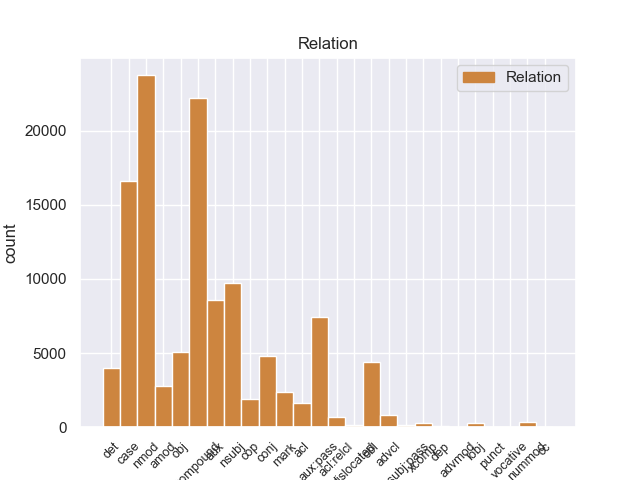
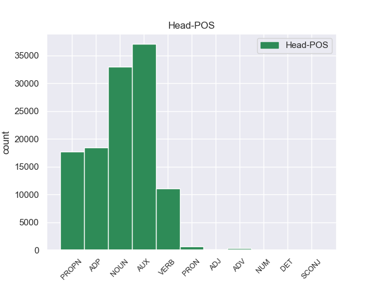
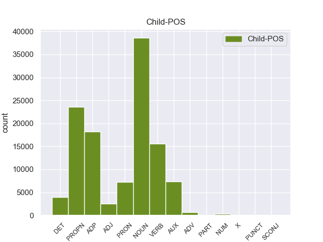

Distribution of features within this leaf



Agreement Rules sorted by frequency.
- When the dependent token is the nominal modifier(nmod) of the head token, and the head token is NOUN and the dependent token is ADP.
1 उन्होंने _ _ _ _ 0 _ _ _
2 यहां _ _ _ _ 0 _ _ _
3 वेटिकन _ _ _ _ 0 _ _ _
4 दूतावास _ _ _ _ 0 _ _ _
5 में _ _ _ _ 0 _ _ _
6 एक _ _ _ _ 0 _ _ _
7 शोक _ _ _ _ 0 _ _ _
8 पुस्तिका _ _ _ _ 0 _ _ _
9 पर _ _ _ _ 0 _ _ _
10 हस्ताक्षर _ _ _ _ 0 _ _ _
11 कर _ _ _ _ 0 _ _ _
12 पोप _ _ _ _ 0 _ _ _
13 जॉन _ _ _ _ 0 _ _ _
14 पॉल _ _ _ _ 0 _ _ _
15 द्वितीय _ _ _ _ 0 _ _ _
16 के का ADP -- AdpType=Post|Case=Acc|Gender=Masc|Number=Sing 17 nmod _ _
17 निधन निधन NOUN -- Case=Acc|Gender=Masc|Number=Sing|Person=3 0 _ _ _
18 पर _ _ _ _ 0 _ _ _
19 गहरा _ _ _ _ 0 _ _ _
20 दुख _ _ _ _ 0 _ _ _
21 प्रकट _ _ _ _ 0 _ _ _
22 किया _ _ _ _ 0 _ _ _
23 । _ _ _ _ 0 _ _ _
1 उन्होंने _ _ _ _ 0 _ _ _
2 यहां _ _ _ _ 0 _ _ _
3 वेटिकन _ _ _ _ 0 _ _ _
4 दूतावास _ _ _ _ 0 _ _ _
5 में _ _ _ _ 0 _ _ _
6 एक _ _ _ _ 0 _ _ _
7 शोक _ _ _ _ 0 _ _ _
8 पुस्तिका _ _ _ _ 0 _ _ _
9 पर _ _ _ _ 0 _ _ _
10 हस्ताक्षर _ _ _ _ 0 _ _ _
11 कर _ _ _ _ 0 _ _ _
12 पोप _ _ _ _ 0 _ _ _
13 जॉन _ _ _ _ 0 _ _ _
14 पॉल पॉल PROPN -- Case=Nom|Gender=Masc|Number=Sing|Person=3 15 compound _ _
15 द्वितीय द्वितीय PROPN -- Case=Acc|Gender=Masc|Number=Sing|Person=3 0 _ _ _
16 के _ _ _ _ 0 _ _ _
17 निधन _ _ _ _ 0 _ _ _
18 पर _ _ _ _ 0 _ _ _
19 गहरा _ _ _ _ 0 _ _ _
20 दुख _ _ _ _ 0 _ _ _
21 प्रकट _ _ _ _ 0 _ _ _
22 किया _ _ _ _ 0 _ _ _
23 । _ _ _ _ 0 _ _ _
1 दलाई _ _ _ _ 0 _ _ _
2 लामा _ _ _ _ 0 _ _ _
3 ने _ _ _ _ 0 _ _ _
4 भारत _ _ _ _ 0 _ _ _
5 और _ _ _ _ 0 _ _ _
6 चीन _ _ _ _ 0 _ _ _
7 के _ _ _ _ 0 _ _ _
8 रिश्ते _ _ _ _ 0 _ _ _
9 में _ _ _ _ 0 _ _ _
10 आ _ _ _ _ 0 _ _ _
11 रहे _ _ _ _ 0 _ _ _
12 सुधार सुधार NOUN -- Case=Acc|Gender=Masc|Number=Sing|Person=3 13 CASE _ _
13 की का ADP -- AdpType=Post|Case=Nom|Gender=Fem|Number=Sing 0 _ _ _
14 भी _ _ _ _ 0 _ _ _
15 प्रशंसा _ _ _ _ 0 _ _ _
16 की _ _ _ _ 0 _ _ _
17 । _ _ _ _ 0 _ _ _
1 दलाई _ _ _ _ 0 _ _ _
2 लामा _ _ _ _ 0 _ _ _
3 ने _ _ _ _ 0 _ _ _
4 भारत _ _ _ _ 0 _ _ _
5 और _ _ _ _ 0 _ _ _
6 चीन _ _ _ _ 0 _ _ _
7 के _ _ _ _ 0 _ _ _
8 रिश्ते _ _ _ _ 0 _ _ _
9 में _ _ _ _ 0 _ _ _
10 आ आ VERB -- Number=Sing|Person=3 11 AUX _ _
11 रहे रह AUX -- Aspect=Perf|Gender=Masc|Number=Sing|Person=3|VerbForm=Part 0 _ _ _
12 सुधार _ _ _ _ 0 _ _ _
13 की _ _ _ _ 0 _ _ _
14 भी _ _ _ _ 0 _ _ _
15 प्रशंसा _ _ _ _ 0 _ _ _
16 की _ _ _ _ 0 _ _ _
17 । _ _ _ _ 0 _ _ _
1 उन्होंने _ _ _ _ 0 _ _ _
2 कहा _ _ _ _ 0 _ _ _
3 कि _ _ _ _ 0 _ _ _
4 चीन _ _ _ _ 0 _ _ _
5 तिब्बत _ _ _ _ 0 _ _ _
6 को _ _ _ _ 0 _ _ _
7 व्यापक _ _ _ _ 0 _ _ _
8 स्वायत्तता _ _ _ _ 0 _ _ _
9 देकर _ _ _ _ 0 _ _ _
10 इस _ _ _ _ 0 _ _ _
11 समस्या _ _ _ _ 0 _ _ _
12 के _ _ _ _ 0 _ _ _
13 समाधान _ _ _ _ 0 _ _ _
14 का _ _ _ _ 0 _ _ _
15 रास्ता _ _ _ _ 0 _ _ _
16 साफ _ _ _ _ 0 _ _ _
17 कर कर VERB -- Gender=Masc|Number=Sing|Person=3|Voice=Act 19 AUX:PASS _ _
18 सकता _ _ _ _ 0 _ _ _
19 है है AUX -- Mood=Ind|Number=Sing|Person=3|Tense=Pres|VerbForm=Fin 0 _ _ _
20 । _ _ _ _ 0 _ _ _
1 उन्होंने _ _ _ _ 0 _ _ _
2 यहां _ _ _ _ 0 _ _ _
3 वेटिकन _ _ _ _ 0 _ _ _
4 दूतावास _ _ _ _ 0 _ _ _
5 में _ _ _ _ 0 _ _ _
6 एक _ _ _ _ 0 _ _ _
7 शोक _ _ _ _ 0 _ _ _
8 पुस्तिका _ _ _ _ 0 _ _ _
9 पर _ _ _ _ 0 _ _ _
10 हस्ताक्षर _ _ _ _ 0 _ _ _
11 कर _ _ _ _ 0 _ _ _
12 पोप _ _ _ _ 0 _ _ _
13 जॉन _ _ _ _ 0 _ _ _
14 पॉल _ _ _ _ 0 _ _ _
15 द्वितीय द्वितीय PROPN -- Case=Acc|Gender=Masc|Number=Sing|Person=3 16 CASE _ _
16 के का ADP -- AdpType=Post|Case=Acc|Gender=Masc|Number=Sing 0 _ _ _
17 निधन _ _ _ _ 0 _ _ _
18 पर _ _ _ _ 0 _ _ _
19 गहरा _ _ _ _ 0 _ _ _
20 दुख _ _ _ _ 0 _ _ _
21 प्रकट _ _ _ _ 0 _ _ _
22 किया _ _ _ _ 0 _ _ _
23 । _ _ _ _ 0 _ _ _
1 उन्होंने _ _ _ _ 0 _ _ _
2 यहां _ _ _ _ 0 _ _ _
3 वेटिकन _ _ _ _ 0 _ _ _
4 दूतावास _ _ _ _ 0 _ _ _
5 में _ _ _ _ 0 _ _ _
6 एक _ _ _ _ 0 _ _ _
7 शोक शोक NOUN -- Case=Nom|Gender=Masc|Number=Sing|Person=3 8 compound _ _
8 पुस्तिका पुस्तिका NOUN -- Case=Acc|Gender=Fem|Number=Sing|Person=3 0 _ _ _
9 पर _ _ _ _ 0 _ _ _
10 हस्ताक्षर _ _ _ _ 0 _ _ _
11 कर _ _ _ _ 0 _ _ _
12 पोप _ _ _ _ 0 _ _ _
13 जॉन _ _ _ _ 0 _ _ _
14 पॉल _ _ _ _ 0 _ _ _
15 द्वितीय _ _ _ _ 0 _ _ _
16 के _ _ _ _ 0 _ _ _
17 निधन _ _ _ _ 0 _ _ _
18 पर _ _ _ _ 0 _ _ _
19 गहरा _ _ _ _ 0 _ _ _
20 दुख _ _ _ _ 0 _ _ _
21 प्रकट _ _ _ _ 0 _ _ _
22 किया _ _ _ _ 0 _ _ _
23 । _ _ _ _ 0 _ _ _
1 इन यह DET -- Case=Acc|Number=Plur|Person=3|PronType=Dem 3 det _ _
2 दोनों _ _ _ _ 0 _ _ _
3 देशों देश NOUN -- Case=Acc|Gender=Masc|Number=Plur|Person=3 0 _ _ _
4 के _ _ _ _ 0 _ _ _
5 बीच _ _ _ _ 0 _ _ _
6 रिश्ते _ _ _ _ 0 _ _ _
7 में _ _ _ _ 0 _ _ _
8 सुधार _ _ _ _ 0 _ _ _
9 से _ _ _ _ 0 _ _ _
10 करोड़ों _ _ _ _ 0 _ _ _
11 लोगों _ _ _ _ 0 _ _ _
12 का _ _ _ _ 0 _ _ _
13 भला _ _ _ _ 0 _ _ _
14 होगा _ _ _ _ 0 _ _ _
15 । _ _ _ _ 0 _ _ _
1 मैं _ _ _ _ 0 _ _ _
2 स्पष्ट _ _ _ _ 0 _ _ _
3 कर _ _ _ _ 0 _ _ _
4 देना _ _ _ _ 0 _ _ _
5 चाहता _ _ _ _ 0 _ _ _
6 हूं _ _ _ _ 0 _ _ _
7 कि _ _ _ _ 0 _ _ _
8 मेरा _ _ _ _ 0 _ _ _
9 दृष्टिकोण दृष्टिकोण NOUN -- Case=Nom|Gender=Masc|Number=Sing|Person=3 12 nsubj _ _
10 अलगाववादी _ _ _ _ 0 _ _ _
11 नहीं _ _ _ _ 0 _ _ _
12 है है AUX -- Mood=Ind|Number=Sing|Person=3|Tense=Pres|VerbForm=Fin|Voice=Act 0 _ _ _
13 । _ _ _ _ 0 _ _ _
1 ७० _ _ _ _ 0 _ _ _
2 वर्षीय _ _ _ _ 0 _ _ _
3 इस _ _ _ _ 0 _ _ _
4 अहिंसावादी _ _ _ _ 0 _ _ _
5 तिब्बती _ _ _ _ 0 _ _ _
6 नेता _ _ _ _ 0 _ _ _
7 ने _ _ _ _ 0 _ _ _
8 यह _ _ _ _ 0 _ _ _
9 भी _ _ _ _ 0 _ _ _
10 कहा _ _ _ _ 0 _ _ _
11 कि _ _ _ _ 0 _ _ _
12 वे _ _ _ _ 0 _ _ _
13 चीन _ _ _ _ 0 _ _ _
14 से _ _ _ _ 0 _ _ _
15 अलगाव _ _ _ _ 0 _ _ _
16 की _ _ _ _ 0 _ _ _
17 बात _ _ _ _ 0 _ _ _
18 नहीं _ _ _ _ 0 _ _ _
19 कर _ _ _ _ 0 _ _ _
20 रहे _ _ _ _ 0 _ _ _
21 हैं _ _ _ _ 0 _ _ _
22 बल्कि _ _ _ _ 0 _ _ _
23 वे _ _ _ _ 0 _ _ _
24 तो _ _ _ _ 0 _ _ _
25 चीनी _ _ _ _ 0 _ _ _
26 संविधान _ _ _ _ 0 _ _ _
27 के _ _ _ _ 0 _ _ _
28 दायरे _ _ _ _ 0 _ _ _
29 में _ _ _ _ 0 _ _ _
30 ही _ _ _ _ 0 _ _ _
31 तिब्बत _ _ _ _ 0 _ _ _
32 समस्या _ _ _ _ 0 _ _ _
33 का _ _ _ _ 0 _ _ _
34 हल हल NOUN -- Case=Nom|Gender=Masc|Number=Sing|Person=3 36 compound _ _
35 चाहते _ _ _ _ 0 _ _ _
36 हैं है AUX -- Mood=Ind|Number=Sing|Person=3|Polite=Form|Tense=Pres|VerbForm=Fin 0 _ _ _
37 । _ _ _ _ 0 _ _ _
1 उन्होंने _ _ _ _ 0 _ _ _
2 कहा _ _ _ _ 0 _ _ _
3 कि _ _ _ _ 0 _ _ _
4 चीन _ _ _ _ 0 _ _ _
5 तिब्बत _ _ _ _ 0 _ _ _
6 को _ _ _ _ 0 _ _ _
7 व्यापक _ _ _ _ 0 _ _ _
8 स्वायत्तता _ _ _ _ 0 _ _ _
9 देकर _ _ _ _ 0 _ _ _
10 इस _ _ _ _ 0 _ _ _
11 समस्या _ _ _ _ 0 _ _ _
12 के _ _ _ _ 0 _ _ _
13 समाधान _ _ _ _ 0 _ _ _
14 का _ _ _ _ 0 _ _ _
15 रास्ता _ _ _ _ 0 _ _ _
16 साफ _ _ _ _ 0 _ _ _
17 कर _ _ _ _ 0 _ _ _
18 सकता सक AUX -- Aspect=Imp|Gender=Masc|Number=Sing|VerbForm=Part 0 _ _ _
19 है है AUX -- Mood=Ind|Number=Sing|Person=3|Tense=Pres|VerbForm=Fin 18 AUX _ _
20 । _ _ _ _ 0 _ _ _
1 उन्होंने _ _ _ _ 0 _ _ _
2 कहा _ _ _ _ 0 _ _ _
3 कि _ _ _ _ 0 _ _ _
4 चीन _ _ _ _ 0 _ _ _
5 तिब्बत _ _ _ _ 0 _ _ _
6 को _ _ _ _ 0 _ _ _
7 व्यापक _ _ _ _ 0 _ _ _
8 स्वायत्तता _ _ _ _ 0 _ _ _
9 देकर _ _ _ _ 0 _ _ _
10 इस _ _ _ _ 0 _ _ _
11 समस्या _ _ _ _ 0 _ _ _
12 के _ _ _ _ 0 _ _ _
13 समाधान _ _ _ _ 0 _ _ _
14 का _ _ _ _ 0 _ _ _
15 रास्ता रास्ता NOUN -- Case=Nom|Gender=Masc|Number=Sing|Person=3 18 obj _ _
16 साफ _ _ _ _ 0 _ _ _
17 कर _ _ _ _ 0 _ _ _
18 सकता सक AUX -- Aspect=Imp|Gender=Masc|Number=Sing|VerbForm=Part 0 _ _ _
19 है _ _ _ _ 0 _ _ _
20 । _ _ _ _ 0 _ _ _
1 दलाई _ _ _ _ 0 _ _ _
2 लामा _ _ _ _ 0 _ _ _
3 ने _ _ _ _ 0 _ _ _
4 कहा _ _ _ _ 0 _ _ _
5 कि _ _ _ _ 0 _ _ _
6 मैं _ _ _ _ 0 _ _ _
7 तिब्बती _ _ _ _ 0 _ _ _
8 समस्या _ _ _ _ 0 _ _ _
9 का _ _ _ _ 0 _ _ _
10 सार्थक _ _ _ _ 0 _ _ _
11 और _ _ _ _ 0 _ _ _
12 मान्य _ _ _ _ 0 _ _ _
13 हल _ _ _ _ 0 _ _ _
14 ढूंढ़ने ढूंढ़ VERB -- Case=Acc|Number=Sing|VerbForm=Inf 15 MARK _ _
15 की का ADP -- AdpType=Post|Case=Acc|Gender=Fem|Number=Sing 0 _ _ _
16 कोशिश _ _ _ _ 0 _ _ _
17 में _ _ _ _ 0 _ _ _
18 हूं _ _ _ _ 0 _ _ _
19 । _ _ _ _ 0 _ _ _
1 ७० _ _ _ _ 0 _ _ _
2 वर्षीय _ _ _ _ 0 _ _ _
3 इस _ _ _ _ 0 _ _ _
4 अहिंसावादी _ _ _ _ 0 _ _ _
5 तिब्बती _ _ _ _ 0 _ _ _
6 नेता _ _ _ _ 0 _ _ _
7 ने _ _ _ _ 0 _ _ _
8 यह _ _ _ _ 0 _ _ _
9 भी _ _ _ _ 0 _ _ _
10 कहा _ _ _ _ 0 _ _ _
11 कि _ _ _ _ 0 _ _ _
12 वे _ _ _ _ 0 _ _ _
13 चीन _ _ _ _ 0 _ _ _
14 से _ _ _ _ 0 _ _ _
15 अलगाव _ _ _ _ 0 _ _ _
16 की _ _ _ _ 0 _ _ _
17 बात _ _ _ _ 0 _ _ _
18 नहीं _ _ _ _ 0 _ _ _
19 कर _ _ _ _ 0 _ _ _
20 रहे _ _ _ _ 0 _ _ _
21 हैं _ _ _ _ 0 _ _ _
22 बल्कि _ _ _ _ 0 _ _ _
23 वे _ _ _ _ 0 _ _ _
24 तो _ _ _ _ 0 _ _ _
25 चीनी _ _ _ _ 0 _ _ _
26 संविधान _ _ _ _ 0 _ _ _
27 के _ _ _ _ 0 _ _ _
28 दायरे _ _ _ _ 0 _ _ _
29 में _ _ _ _ 0 _ _ _
30 ही _ _ _ _ 0 _ _ _
31 तिब्बत तिब्बत PROPN -- Case=Nom|Gender=Masc|Number=Sing|Person=3 32 nmod _ _
32 समस्या समस्या NOUN -- Case=Acc|Gender=Fem|Number=Sing|Person=3 0 _ _ _
33 का _ _ _ _ 0 _ _ _
34 हल _ _ _ _ 0 _ _ _
35 चाहते _ _ _ _ 0 _ _ _
36 हैं _ _ _ _ 0 _ _ _
37 । _ _ _ _ 0 _ _ _
1 दलाई _ _ _ _ 0 _ _ _
2 लामा _ _ _ _ 0 _ _ _
3 ने _ _ _ _ 0 _ _ _
4 भारत _ _ _ _ 0 _ _ _
5 और _ _ _ _ 0 _ _ _
6 चीन _ _ _ _ 0 _ _ _
7 के _ _ _ _ 0 _ _ _
8 रिश्ते _ _ _ _ 0 _ _ _
9 में _ _ _ _ 0 _ _ _
10 आ _ _ _ _ 0 _ _ _
11 रहे _ _ _ _ 0 _ _ _
12 सुधार _ _ _ _ 0 _ _ _
13 की _ _ _ _ 0 _ _ _
14 भी _ _ _ _ 0 _ _ _
15 प्रशंसा प्रशंसा NOUN -- Case=Nom|Gender=Fem|Number=Sing|Person=3 16 compound _ _
16 की कर VERB -- Aspect=Perf|Gender=Fem|Number=Sing|VerbForm=Part|Voice=Act 0 _ _ _
17 । _ _ _ _ 0 _ _ _
1 उन्होंने _ _ _ _ 0 _ _ _
2 यहां _ _ _ _ 0 _ _ _
3 वेटिकन _ _ _ _ 0 _ _ _
4 दूतावास _ _ _ _ 0 _ _ _
5 में _ _ _ _ 0 _ _ _
6 एक _ _ _ _ 0 _ _ _
7 शोक _ _ _ _ 0 _ _ _
8 पुस्तिका _ _ _ _ 0 _ _ _
9 पर _ _ _ _ 0 _ _ _
10 हस्ताक्षर _ _ _ _ 0 _ _ _
11 कर _ _ _ _ 0 _ _ _
12 पोप _ _ _ _ 0 _ _ _
13 जॉन _ _ _ _ 0 _ _ _
14 पॉल _ _ _ _ 0 _ _ _
15 द्वितीय _ _ _ _ 0 _ _ _
16 के _ _ _ _ 0 _ _ _
17 निधन _ _ _ _ 0 _ _ _
18 पर _ _ _ _ 0 _ _ _
19 गहरा गहरा ADJ -- Case=Nom|Gender=Masc|Number=Sing 20 amod _ _
20 दुख दुख NOUN -- Case=Nom|Gender=Masc|Number=Sing|Person=3 0 _ _ _
21 प्रकट _ _ _ _ 0 _ _ _
22 किया _ _ _ _ 0 _ _ _
23 । _ _ _ _ 0 _ _ _
1 चीनी _ _ _ _ 0 _ _ _
2 प्रधानमंत्री _ _ _ _ 0 _ _ _
3 वेन _ _ _ _ 0 _ _ _
4 जियाबाओ _ _ _ _ 0 _ _ _
5 की _ _ _ _ 0 _ _ _
6 भारत _ _ _ _ 0 _ _ _
7 यात्रा _ _ _ _ 0 _ _ _
8 से _ _ _ _ 0 _ _ _
9 पहले _ _ _ _ 0 _ _ _
10 निर्वासित _ _ _ _ 0 _ _ _
11 तिब्बती _ _ _ _ 0 _ _ _
12 आध्यात्मिक _ _ _ _ 0 _ _ _
13 नेता नेता NOUN -- Case=Acc|Gender=Masc|Number=Sing|Person=3 15 nmod _ _
14 दलाई _ _ _ _ 0 _ _ _
15 लामा लामा PROPN -- Case=Acc|Gender=Masc|Number=Sing|Person=3 0 _ _ _
16 ने _ _ _ _ 0 _ _ _
17 कहा _ _ _ _ 0 _ _ _
18 है _ _ _ _ 0 _ _ _
19 कि _ _ _ _ 0 _ _ _
20 चीनी _ _ _ _ 0 _ _ _
21 और _ _ _ _ 0 _ _ _
22 तिब्बती _ _ _ _ 0 _ _ _
23 एक _ _ _ _ 0 _ _ _
24 - _ _ _ _ 0 _ _ _
25 दूसरे _ _ _ _ 0 _ _ _
26 की _ _ _ _ 0 _ _ _
27 सांस्कृतिक _ _ _ _ 0 _ _ _
28 विशिष्टता _ _ _ _ 0 _ _ _
29 का _ _ _ _ 0 _ _ _
30 आदर _ _ _ _ 0 _ _ _
31 करते _ _ _ _ 0 _ _ _
32 हैं _ _ _ _ 0 _ _ _
33 । _ _ _ _ 0 _ _ _
1 उन्होंने _ _ _ _ 0 _ _ _
2 यह _ _ _ _ 0 _ _ _
3 भी _ _ _ _ 0 _ _ _
4 कहा _ _ _ _ 0 _ _ _
5 कि _ _ _ _ 0 _ _ _
6 अब _ _ _ _ 0 _ _ _
7 चीन _ _ _ _ 0 _ _ _
8 का _ _ _ _ 0 _ _ _
9 हृदय _ _ _ _ 0 _ _ _
10 परिवर्तन _ _ _ _ 0 _ _ _
11 होता _ _ _ _ 0 _ _ _
12 जा _ _ _ _ 0 _ _ _
13 रहा रह AUX -- Aspect=Perf|Gender=Masc|Number=Sing|VerbForm=Part 14 AUX:PASS _ _
14 है है AUX -- Mood=Ind|Number=Sing|Person=3|Tense=Pres|VerbForm=Fin 0 _ _ _
15 । _ _ _ _ 0 _ _ _
1 उन्होंने _ _ _ _ 0 _ _ _
2 कहा _ _ _ _ 0 _ _ _
3 कि _ _ _ _ 0 _ _ _
4 भारत _ _ _ _ 0 _ _ _
5 और _ _ _ _ 0 _ _ _
6 चीन _ _ _ _ 0 _ _ _
7 सर्वाधिक _ _ _ _ 0 _ _ _
8 आबादी _ _ _ _ 0 _ _ _
9 वाले _ _ _ _ 0 _ _ _
10 देश देश NOUN -- Case=Nom|Gender=Masc|Number=Plur|Person=3 11 PD _ _
11 हैं है AUX -- Mood=Ind|Number=Plur|Person=3|Tense=Pres|VerbForm=Fin|Voice=Act 0 _ _ _
12 । _ _ _ _ 0 _ _ _
1 उन्होंने वह PRON -- Case=Acc,Erg|Number=Sing|Person=3|Polite=Form|PronType=Prs 22 nsubj _ _
2 यहां _ _ _ _ 0 _ _ _
3 वेटिकन _ _ _ _ 0 _ _ _
4 दूतावास _ _ _ _ 0 _ _ _
5 में _ _ _ _ 0 _ _ _
6 एक _ _ _ _ 0 _ _ _
7 शोक _ _ _ _ 0 _ _ _
8 पुस्तिका _ _ _ _ 0 _ _ _
9 पर _ _ _ _ 0 _ _ _
10 हस्ताक्षर _ _ _ _ 0 _ _ _
11 कर _ _ _ _ 0 _ _ _
12 पोप _ _ _ _ 0 _ _ _
13 जॉन _ _ _ _ 0 _ _ _
14 पॉल _ _ _ _ 0 _ _ _
15 द्वितीय _ _ _ _ 0 _ _ _
16 के _ _ _ _ 0 _ _ _
17 निधन _ _ _ _ 0 _ _ _
18 पर _ _ _ _ 0 _ _ _
19 गहरा _ _ _ _ 0 _ _ _
20 दुख _ _ _ _ 0 _ _ _
21 प्रकट _ _ _ _ 0 _ _ _
22 किया कर VERB -- Aspect=Perf|Gender=Masc|Number=Sing|VerbForm=Part|Voice=Act 0 _ _ _
23 । _ _ _ _ 0 _ _ _
1 उन्होंने _ _ _ _ 0 _ _ _
2 कहा _ _ _ _ 0 _ _ _
3 कि _ _ _ _ 0 _ _ _
4 भारत भारत PROPN -- Case=Nom|Gender=Masc|Number=Sing|Person=3 0 _ _ _
5 और _ _ _ _ 0 _ _ _
6 चीन चीन PROPN -- Case=Nom|Gender=Masc|Number=Sing|Person=3 4 conj _ _
7 सर्वाधिक _ _ _ _ 0 _ _ _
8 आबादी _ _ _ _ 0 _ _ _
9 वाले _ _ _ _ 0 _ _ _
10 देश _ _ _ _ 0 _ _ _
11 हैं _ _ _ _ 0 _ _ _
12 । _ _ _ _ 0 _ _ _
1 मैं मैं PRON -- Case=Nom|Number=Sing|Person=1|PronType=Prs 16 nsubj _ _
2 चीनी _ _ _ _ 0 _ _ _
3 संविधान _ _ _ _ 0 _ _ _
4 के _ _ _ _ 0 _ _ _
5 तहत _ _ _ _ 0 _ _ _
6 ही _ _ _ _ 0 _ _ _
7 तिब्बती _ _ _ _ 0 _ _ _
8 समस्या _ _ _ _ 0 _ _ _
9 का _ _ _ _ 0 _ _ _
10 समाधान _ _ _ _ 0 _ _ _
11 निकाले _ _ _ _ 0 _ _ _
12 जाने _ _ _ _ 0 _ _ _
13 के _ _ _ _ 0 _ _ _
14 पक्ष _ _ _ _ 0 _ _ _
15 में _ _ _ _ 0 _ _ _
16 हूं है AUX -- Mood=Ind|Number=Sing|Person=1|Tense=Pres|VerbForm=Fin|Voice=Act 0 _ _ _
17 । _ _ _ _ 0 _ _ _
1 इन _ _ _ _ 0 _ _ _
2 दोनों _ _ _ _ 0 _ _ _
3 देशों _ _ _ _ 0 _ _ _
4 के _ _ _ _ 0 _ _ _
5 बीच _ _ _ _ 0 _ _ _
6 रिश्ते _ _ _ _ 0 _ _ _
7 में _ _ _ _ 0 _ _ _
8 सुधार _ _ _ _ 0 _ _ _
9 से _ _ _ _ 0 _ _ _
10 करोड़ों _ _ _ _ 0 _ _ _
11 लोगों _ _ _ _ 0 _ _ _
12 का _ _ _ _ 0 _ _ _
13 भला भला NOUN -- Case=Nom|Gender=Masc|Number=Sing|Person=3 14 nsubj _ _
14 होगा हो VERB -- Gender=Masc|Mood=Ind|Number=Sing|Person=3|Tense=Fut|VerbForm=Fin|Voice=Act 0 _ _ _
15 । _ _ _ _ 0 _ _ _
1 उन्होंने _ _ _ _ 0 _ _ _
2 यहां _ _ _ _ 0 _ _ _
3 वेटिकन _ _ _ _ 0 _ _ _
4 दूतावास _ _ _ _ 0 _ _ _
5 में _ _ _ _ 0 _ _ _
6 एक _ _ _ _ 0 _ _ _
7 शोक _ _ _ _ 0 _ _ _
8 पुस्तिका _ _ _ _ 0 _ _ _
9 पर _ _ _ _ 0 _ _ _
10 हस्ताक्षर _ _ _ _ 0 _ _ _
11 कर _ _ _ _ 0 _ _ _
12 पोप _ _ _ _ 0 _ _ _
13 जॉन _ _ _ _ 0 _ _ _
14 पॉल _ _ _ _ 0 _ _ _
15 द्वितीय _ _ _ _ 0 _ _ _
16 के _ _ _ _ 0 _ _ _
17 निधन _ _ _ _ 0 _ _ _
18 पर _ _ _ _ 0 _ _ _
19 गहरा _ _ _ _ 0 _ _ _
20 दुख दुख NOUN -- Case=Nom|Gender=Masc|Number=Sing|Person=3 22 obj _ _
21 प्रकट _ _ _ _ 0 _ _ _
22 किया कर VERB -- Aspect=Perf|Gender=Masc|Number=Sing|VerbForm=Part|Voice=Act 0 _ _ _
23 । _ _ _ _ 0 _ _ _
1 चीनी _ _ _ _ 0 _ _ _
2 प्रधानमंत्री प्रधानमंत्री PROPN -- Case=Nom|Gender=Masc|Number=Sing|Person=3 4 nmod _ _
3 वेन _ _ _ _ 0 _ _ _
4 जियाबाओ जियाबाओ PROPN -- Case=Acc|Gender=Masc|Number=Sing|Person=3 0 _ _ _
5 की _ _ _ _ 0 _ _ _
6 भारत _ _ _ _ 0 _ _ _
7 यात्रा _ _ _ _ 0 _ _ _
8 से _ _ _ _ 0 _ _ _
9 पहले _ _ _ _ 0 _ _ _
10 निर्वासित _ _ _ _ 0 _ _ _
11 तिब्बती _ _ _ _ 0 _ _ _
12 आध्यात्मिक _ _ _ _ 0 _ _ _
13 नेता _ _ _ _ 0 _ _ _
14 दलाई _ _ _ _ 0 _ _ _
15 लामा _ _ _ _ 0 _ _ _
16 ने _ _ _ _ 0 _ _ _
17 कहा _ _ _ _ 0 _ _ _
18 है _ _ _ _ 0 _ _ _
19 कि _ _ _ _ 0 _ _ _
20 चीनी _ _ _ _ 0 _ _ _
21 और _ _ _ _ 0 _ _ _
22 तिब्बती _ _ _ _ 0 _ _ _
23 एक _ _ _ _ 0 _ _ _
24 - _ _ _ _ 0 _ _ _
25 दूसरे _ _ _ _ 0 _ _ _
26 की _ _ _ _ 0 _ _ _
27 सांस्कृतिक _ _ _ _ 0 _ _ _
28 विशिष्टता _ _ _ _ 0 _ _ _
29 का _ _ _ _ 0 _ _ _
30 आदर _ _ _ _ 0 _ _ _
31 करते _ _ _ _ 0 _ _ _
32 हैं _ _ _ _ 0 _ _ _
33 । _ _ _ _ 0 _ _ _
1 मैं _ _ _ _ 0 _ _ _
2 स्पष्ट _ _ _ _ 0 _ _ _
3 कर _ _ _ _ 0 _ _ _
4 देना _ _ _ _ 0 _ _ _
5 चाहता _ _ _ _ 0 _ _ _
6 हूं _ _ _ _ 0 _ _ _
7 कि _ _ _ _ 0 _ _ _
8 मेरा मैं PRON -- Case=Acc,Gen|Gender=Masc|Number=Sing|Person=1|Poss=Yes|PronType=Prs 9 nmod _ _
9 दृष्टिकोण दृष्टिकोण NOUN -- Case=Nom|Gender=Masc|Number=Sing|Person=3 0 _ _ _
10 अलगाववादी _ _ _ _ 0 _ _ _
11 नहीं _ _ _ _ 0 _ _ _
12 है _ _ _ _ 0 _ _ _
13 । _ _ _ _ 0 _ _ _
1 पार्टी _ _ _ _ 0 _ _ _
2 कार्यकर्ताओं कार्यकर्ता NOUN -- Case=Acc|Gender=Masc|Number=Plur|Person=3 0 _ _ _
3 और _ _ _ _ 0 _ _ _
4 नेताओं नेता NOUN -- Case=Acc|Gender=Masc|Number=Plur|Person=3 2 conj _ _
5 ने _ _ _ _ 0 _ _ _
6 गुटबाजी _ _ _ _ 0 _ _ _
7 को _ _ _ _ 0 _ _ _
8 भुला _ _ _ _ 0 _ _ _
9 कर _ _ _ _ 0 _ _ _
10 इस _ _ _ _ 0 _ _ _
11 कार्यक्रम _ _ _ _ 0 _ _ _
12 में _ _ _ _ 0 _ _ _
13 बढ़ _ _ _ _ 0 _ _ _
14 - _ _ _ _ 0 _ _ _
15 चढ़कर _ _ _ _ 0 _ _ _
16 हिस्सा _ _ _ _ 0 _ _ _
17 लिया _ _ _ _ 0 _ _ _
18 । _ _ _ _ 0 _ _ _
1 उन्होंने _ _ _ _ 0 _ _ _
2 कहा _ _ _ _ 0 _ _ _
3 कि _ _ _ _ 0 _ _ _
4 चीन चीन PROPN -- Case=Nom|Gender=Masc|Number=Sing|Person=3 18 nsubj _ _
5 तिब्बत _ _ _ _ 0 _ _ _
6 को _ _ _ _ 0 _ _ _
7 व्यापक _ _ _ _ 0 _ _ _
8 स्वायत्तता _ _ _ _ 0 _ _ _
9 देकर _ _ _ _ 0 _ _ _
10 इस _ _ _ _ 0 _ _ _
11 समस्या _ _ _ _ 0 _ _ _
12 के _ _ _ _ 0 _ _ _
13 समाधान _ _ _ _ 0 _ _ _
14 का _ _ _ _ 0 _ _ _
15 रास्ता _ _ _ _ 0 _ _ _
16 साफ _ _ _ _ 0 _ _ _
17 कर _ _ _ _ 0 _ _ _
18 सकता सक AUX -- Aspect=Imp|Gender=Masc|Number=Sing|VerbForm=Part 0 _ _ _
19 है _ _ _ _ 0 _ _ _
20 । _ _ _ _ 0 _ _ _
1 उन्होंने _ _ _ _ 0 _ _ _
2 कहा _ _ _ _ 0 _ _ _
3 कि _ _ _ _ 0 _ _ _
4 भारत _ _ _ _ 0 _ _ _
5 और _ _ _ _ 0 _ _ _
6 चीन _ _ _ _ 0 _ _ _
7 सर्वाधिक _ _ _ _ 0 _ _ _
8 आबादी _ _ _ _ 0 _ _ _
9 वाले वाला ADP -- AdpType=Post|Case=Nom|Gender=Masc|Number=Plur 11 nmod _ _
10 देश _ _ _ _ 0 _ _ _
11 हैं है AUX -- Mood=Ind|Number=Plur|Person=3|Tense=Pres|VerbForm=Fin|Voice=Act 0 _ _ _
12 । _ _ _ _ 0 _ _ _
1 कांग्रेसी _ _ _ _ 0 _ _ _
2 नेताओं _ _ _ _ 0 _ _ _
3 का _ _ _ _ 0 _ _ _
4 कहना _ _ _ _ 0 _ _ _
5 है _ _ _ _ 0 _ _ _
6 कि _ _ _ _ 0 _ _ _
7 महात्मा _ _ _ _ 0 _ _ _
8 गांधी _ _ _ _ 0 _ _ _
9 के का ADP -- AdpType=Post|Case=Acc|Gender=Masc|Number=Sing 12 nmod _ _
10 ऐतिहासिक _ _ _ _ 0 _ _ _
11 दांडी _ _ _ _ 0 _ _ _
12 मार्च मार्च PROPN -- Case=Acc|Gender=Masc|Number=Sing|Person=3 0 _ _ _
13 की _ _ _ _ 0 _ _ _
14 ७५वीं _ _ _ _ 0 _ _ _
15 बरसी _ _ _ _ 0 _ _ _
16 के _ _ _ _ 0 _ _ _
17 मौके _ _ _ _ 0 _ _ _
18 पर _ _ _ _ 0 _ _ _
19 आयोजित _ _ _ _ 0 _ _ _
20 मार्च _ _ _ _ 0 _ _ _
21 से _ _ _ _ 0 _ _ _
22 राज्य _ _ _ _ 0 _ _ _
23 में _ _ _ _ 0 _ _ _
24 पार्टी _ _ _ _ 0 _ _ _
25 की _ _ _ _ 0 _ _ _
26 स्थिति _ _ _ _ 0 _ _ _
27 सुधरी _ _ _ _ 0 _ _ _
28 है _ _ _ _ 0 _ _ _
29 । _ _ _ _ 0 _ _ _
1 पत्रिका _ _ _ _ 0 _ _ _
2 ने _ _ _ _ 0 _ _ _
3 सूत्रों _ _ _ _ 0 _ _ _
4 का _ _ _ _ 0 _ _ _
5 हवाला _ _ _ _ 0 _ _ _
6 देते _ _ _ _ 0 _ _ _
7 हुए _ _ _ _ 0 _ _ _
8 कहा _ _ _ _ 0 _ _ _
9 कि _ _ _ _ 0 _ _ _
10 पिछले _ _ _ _ 0 _ _ _
11 वर्ष वर्ष NOUN -- Case=Acc|Gender=Masc|Number=Sing|Person=3 31 obl _ _
12 दिसंबर _ _ _ _ 0 _ _ _
13 में _ _ _ _ 0 _ _ _
14 व्हाइट _ _ _ _ 0 _ _ _
15 हाउस _ _ _ _ 0 _ _ _
16 में _ _ _ _ 0 _ _ _
17 एक _ _ _ _ 0 _ _ _
18 बैठक _ _ _ _ 0 _ _ _
19 के _ _ _ _ 0 _ _ _
20 दौरान _ _ _ _ 0 _ _ _
21 राष्ट्रपति _ _ _ _ 0 _ _ _
22 जॉर्ज _ _ _ _ 0 _ _ _
23 बुश _ _ _ _ 0 _ _ _
24 ने _ _ _ _ 0 _ _ _
25 पाकिस्तानी _ _ _ _ 0 _ _ _
26 राष्ट्रपति _ _ _ _ 0 _ _ _
27 परवेज़ _ _ _ _ 0 _ _ _
28 मुशर्रफ _ _ _ _ 0 _ _ _
29 से _ _ _ _ 0 _ _ _
30 कहा _ _ _ _ 0 _ _ _
31 था था AUX -- Gender=Masc|Mood=Ind|Number=Sing|Tense=Past|VerbForm=Fin 0 _ _ _
32 कि _ _ _ _ 0 _ _ _
33 उनका _ _ _ _ 0 _ _ _
34 मानना _ _ _ _ 0 _ _ _
35 है _ _ _ _ 0 _ _ _
36 कि _ _ _ _ 0 _ _ _
37 खान _ _ _ _ 0 _ _ _
38 ने _ _ _ _ 0 _ _ _
39 अपने _ _ _ _ 0 _ _ _
40 सभी _ _ _ _ 0 _ _ _
41 घृणित _ _ _ _ 0 _ _ _
42 सौदों _ _ _ _ 0 _ _ _
43 को _ _ _ _ 0 _ _ _
44 स्वीकार _ _ _ _ 0 _ _ _
45 नहीं _ _ _ _ 0 _ _ _
46 किया _ _ _ _ 0 _ _ _
47 है _ _ _ _ 0 _ _ _
48 । _ _ _ _ 0 _ _ _
1 पत्रिका _ _ _ _ 0 _ _ _
2 ने _ _ _ _ 0 _ _ _
3 सूत्रों _ _ _ _ 0 _ _ _
4 का _ _ _ _ 0 _ _ _
5 हवाला _ _ _ _ 0 _ _ _
6 देते _ _ _ _ 0 _ _ _
7 हुए _ _ _ _ 0 _ _ _
8 कहा _ _ _ _ 0 _ _ _
9 कि _ _ _ _ 0 _ _ _
10 पिछले _ _ _ _ 0 _ _ _
11 वर्ष _ _ _ _ 0 _ _ _
12 दिसंबर _ _ _ _ 0 _ _ _
13 में _ _ _ _ 0 _ _ _
14 व्हाइट _ _ _ _ 0 _ _ _
15 हाउस _ _ _ _ 0 _ _ _
16 में _ _ _ _ 0 _ _ _
17 एक _ _ _ _ 0 _ _ _
18 बैठक _ _ _ _ 0 _ _ _
19 के _ _ _ _ 0 _ _ _
20 दौरान दौरान ADP -- AdpType=Post|Case=Nom|Gender=Masc|Number=Sing|Person=3 31 obl _ _
21 राष्ट्रपति _ _ _ _ 0 _ _ _
22 जॉर्ज _ _ _ _ 0 _ _ _
23 बुश _ _ _ _ 0 _ _ _
24 ने _ _ _ _ 0 _ _ _
25 पाकिस्तानी _ _ _ _ 0 _ _ _
26 राष्ट्रपति _ _ _ _ 0 _ _ _
27 परवेज़ _ _ _ _ 0 _ _ _
28 मुशर्रफ _ _ _ _ 0 _ _ _
29 से _ _ _ _ 0 _ _ _
30 कहा _ _ _ _ 0 _ _ _
31 था था AUX -- Gender=Masc|Mood=Ind|Number=Sing|Tense=Past|VerbForm=Fin 0 _ _ _
32 कि _ _ _ _ 0 _ _ _
33 उनका _ _ _ _ 0 _ _ _
34 मानना _ _ _ _ 0 _ _ _
35 है _ _ _ _ 0 _ _ _
36 कि _ _ _ _ 0 _ _ _
37 खान _ _ _ _ 0 _ _ _
38 ने _ _ _ _ 0 _ _ _
39 अपने _ _ _ _ 0 _ _ _
40 सभी _ _ _ _ 0 _ _ _
41 घृणित _ _ _ _ 0 _ _ _
42 सौदों _ _ _ _ 0 _ _ _
43 को _ _ _ _ 0 _ _ _
44 स्वीकार _ _ _ _ 0 _ _ _
45 नहीं _ _ _ _ 0 _ _ _
46 किया _ _ _ _ 0 _ _ _
47 है _ _ _ _ 0 _ _ _
48 । _ _ _ _ 0 _ _ _
1 इस _ _ _ _ 0 _ _ _
2 ट्रेन _ _ _ _ 0 _ _ _
3 में _ _ _ _ 0 _ _ _
4 पैलेस _ _ _ _ 0 _ _ _
5 ऑन _ _ _ _ 0 _ _ _
6 व्हील्स _ _ _ _ 0 _ _ _
7 की _ _ _ _ 0 _ _ _
8 तरह _ _ _ _ 0 _ _ _
9 शानो _ _ _ _ 0 _ _ _
10 - _ _ _ _ 0 _ _ _
11 शौकत _ _ _ _ 0 _ _ _
12 भरे भर VERB -- Aspect=Perf|Gender=Masc|Number=Sing|VerbForm=Part 13 acl _ _
13 सफ़र सफर NOUN -- Case=Acc|Gender=Masc|Number=Sing|Person=3 0 _ _ _
14 का _ _ _ _ 0 _ _ _
15 अहसास _ _ _ _ 0 _ _ _
16 तो _ _ _ _ 0 _ _ _
17 नहीं _ _ _ _ 0 _ _ _
18 होगा _ _ _ _ 0 _ _ _
19 लेकिन _ _ _ _ 0 _ _ _
20 , _ _ _ _ 0 _ _ _
21 आप _ _ _ _ 0 _ _ _
22 कम _ _ _ _ 0 _ _ _
23 खर्च _ _ _ _ 0 _ _ _
24 में _ _ _ _ 0 _ _ _
25 भारत _ _ _ _ 0 _ _ _
26 दर्शन _ _ _ _ 0 _ _ _
27 के _ _ _ _ 0 _ _ _
28 साथ _ _ _ _ 0 _ _ _
29 - _ _ _ _ 0 _ _ _
30 साथ _ _ _ _ 0 _ _ _
31 चारों _ _ _ _ 0 _ _ _
32 धाम _ _ _ _ 0 _ _ _
33 की _ _ _ _ 0 _ _ _
34 यात्रा _ _ _ _ 0 _ _ _
35 के _ _ _ _ 0 _ _ _
36 सपने _ _ _ _ 0 _ _ _
37 को _ _ _ _ 0 _ _ _
38 साकार _ _ _ _ 0 _ _ _
39 कर _ _ _ _ 0 _ _ _
40 सकते _ _ _ _ 0 _ _ _
41 हैं _ _ _ _ 0 _ _ _
42 । _ _ _ _ 0 _ _ _
1 यात्रियों _ _ _ _ 0 _ _ _
2 को _ _ _ _ 0 _ _ _
3 एक _ _ _ _ 0 _ _ _
4 जगह _ _ _ _ 0 _ _ _
5 एकत्रित _ _ _ _ 0 _ _ _
6 कर _ _ _ _ 0 _ _ _
7 उनके _ _ _ _ 0 _ _ _
8 वहन _ _ _ _ 0 _ _ _
9 करने _ _ _ _ 0 _ _ _
10 योग्य _ _ _ _ 0 _ _ _
11 किराये _ _ _ _ 0 _ _ _
12 पर _ _ _ _ 0 _ _ _
13 ऐतिहासिक _ _ _ _ 0 _ _ _
14 महत्व महत्व NOUN -- Case=Acc|Gender=Masc|Number=Sing|Person=3 19 nmod _ _
15 व _ _ _ _ 0 _ _ _
16 धार्मिक _ _ _ _ 0 _ _ _
17 स्थानों _ _ _ _ 0 _ _ _
18 की _ _ _ _ 0 _ _ _
19 सैर सैर NOUN -- Case=Nom|Gender=Fem|Number=Sing|Person=3 0 _ _ _
20 कराई _ _ _ _ 0 _ _ _
21 जाएगी _ _ _ _ 0 _ _ _
22 । _ _ _ _ 0 _ _ _
1 इन _ _ _ _ 0 _ _ _
2 दोनों _ _ _ _ 0 _ _ _
3 देशों _ _ _ _ 0 _ _ _
4 के _ _ _ _ 0 _ _ _
5 बीच बीच ADP -- AdpType=Post|Case=Nom|Gender=Masc|Number=Sing|Person=3 14 obl _ _
6 रिश्ते _ _ _ _ 0 _ _ _
7 में _ _ _ _ 0 _ _ _
8 सुधार _ _ _ _ 0 _ _ _
9 से _ _ _ _ 0 _ _ _
10 करोड़ों _ _ _ _ 0 _ _ _
11 लोगों _ _ _ _ 0 _ _ _
12 का _ _ _ _ 0 _ _ _
13 भला _ _ _ _ 0 _ _ _
14 होगा हो VERB -- Gender=Masc|Mood=Ind|Number=Sing|Person=3|Tense=Fut|VerbForm=Fin|Voice=Act 0 _ _ _
15 । _ _ _ _ 0 _ _ _
1 चीनी _ _ _ _ 0 _ _ _
2 प्रधानमंत्री _ _ _ _ 0 _ _ _
3 वेन _ _ _ _ 0 _ _ _
4 जियाबाओ _ _ _ _ 0 _ _ _
5 की _ _ _ _ 0 _ _ _
6 भारत _ _ _ _ 0 _ _ _
7 यात्रा _ _ _ _ 0 _ _ _
8 से _ _ _ _ 0 _ _ _
9 पहले _ _ _ _ 0 _ _ _
10 निर्वासित _ _ _ _ 0 _ _ _
11 तिब्बती _ _ _ _ 0 _ _ _
12 आध्यात्मिक _ _ _ _ 0 _ _ _
13 नेता _ _ _ _ 0 _ _ _
14 दलाई _ _ _ _ 0 _ _ _
15 लामा _ _ _ _ 0 _ _ _
16 ने _ _ _ _ 0 _ _ _
17 कहा _ _ _ _ 0 _ _ _
18 है _ _ _ _ 0 _ _ _
19 कि _ _ _ _ 0 _ _ _
20 चीनी _ _ _ _ 0 _ _ _
21 और _ _ _ _ 0 _ _ _
22 तिब्बती _ _ _ _ 0 _ _ _
23 एक _ _ _ _ 0 _ _ _
24 - _ _ _ _ 0 _ _ _
25 दूसरे दूसरा PRON -- Case=Acc|Number=Sing|Person=3|PronType=Prs 26 CASE _ _
26 की का ADP -- AdpType=Post|Case=Acc|Gender=Fem|Number=Sing 0 _ _ _
27 सांस्कृतिक _ _ _ _ 0 _ _ _
28 विशिष्टता _ _ _ _ 0 _ _ _
29 का _ _ _ _ 0 _ _ _
30 आदर _ _ _ _ 0 _ _ _
31 करते _ _ _ _ 0 _ _ _
32 हैं _ _ _ _ 0 _ _ _
33 । _ _ _ _ 0 _ _ _
1 उन्होंने _ _ _ _ 0 _ _ _
2 कहा _ _ _ _ 0 _ _ _
3 कि _ _ _ _ 0 _ _ _
4 कांग्रेसियों _ _ _ _ 0 _ _ _
5 की _ _ _ _ 0 _ _ _
6 मदद _ _ _ _ 0 _ _ _
7 से _ _ _ _ 0 _ _ _
8 यह _ _ _ _ 0 _ _ _
9 मार्च मार्च PROPN -- Case=Nom|Gender=Masc|Number=Sing|Person=3 12 nsubj _ _
10 काफी _ _ _ _ 0 _ _ _
11 सफल _ _ _ _ 0 _ _ _
12 रहा रह VERB -- Aspect=Perf|Gender=Masc|Number=Sing|VerbForm=Part|Voice=Act 0 _ _ _
13 । _ _ _ _ 0 _ _ _
1 उन्होंने _ _ _ _ 0 _ _ _
2 यहां _ _ _ _ 0 _ _ _
3 वेटिकन _ _ _ _ 0 _ _ _
4 दूतावास _ _ _ _ 0 _ _ _
5 में _ _ _ _ 0 _ _ _
6 एक _ _ _ _ 0 _ _ _
7 शोक _ _ _ _ 0 _ _ _
8 पुस्तिका _ _ _ _ 0 _ _ _
9 पर _ _ _ _ 0 _ _ _
10 हस्ताक्षर _ _ _ _ 0 _ _ _
11 कर _ _ _ _ 0 _ _ _
12 पोप पोप NOUN -- Case=Nom|Gender=Masc|Number=Sing|Person=3 15 compound _ _
13 जॉन _ _ _ _ 0 _ _ _
14 पॉल _ _ _ _ 0 _ _ _
15 द्वितीय द्वितीय PROPN -- Case=Acc|Gender=Masc|Number=Sing|Person=3 0 _ _ _
16 के _ _ _ _ 0 _ _ _
17 निधन _ _ _ _ 0 _ _ _
18 पर _ _ _ _ 0 _ _ _
19 गहरा _ _ _ _ 0 _ _ _
20 दुख _ _ _ _ 0 _ _ _
21 प्रकट _ _ _ _ 0 _ _ _
22 किया _ _ _ _ 0 _ _ _
23 । _ _ _ _ 0 _ _ _
1 अपने _ _ _ _ 0 _ _ _
2 चार _ _ _ _ 0 _ _ _
3 - _ _ _ _ 0 _ _ _
4 दिवसीय _ _ _ _ 0 _ _ _
5 भारत _ _ _ _ 0 _ _ _
6 दौरे _ _ _ _ 0 _ _ _
7 के _ _ _ _ 0 _ _ _
8 दौरान _ _ _ _ 0 _ _ _
9 वे _ _ _ _ 0 _ _ _
10 भारतीय _ _ _ _ 0 _ _ _
11 नेताओं _ _ _ _ 0 _ _ _
12 से _ _ _ _ 0 _ _ _
13 सीमा _ _ _ _ 0 _ _ _
14 विवाद विवाद NOUN -- Case=Acc|Gender=Masc|Number=Sing|Person=3 21 obl _ _
15 और _ _ _ _ 0 _ _ _
16 अन्य _ _ _ _ 0 _ _ _
17 द्विपक्षीय _ _ _ _ 0 _ _ _
18 मसलों _ _ _ _ 0 _ _ _
19 पर _ _ _ _ 0 _ _ _
20 बातचीत _ _ _ _ 0 _ _ _
21 करेंगे कर VERB -- Gender=Masc|Mood=Ind|Number=Sing|Person=3|Polite=Form|Tense=Fut|VerbForm=Fin|Voice=Act 0 _ _ _
22 । _ _ _ _ 0 _ _ _
1 मार्च _ _ _ _ 0 _ _ _
2 को _ _ _ _ 0 _ _ _
3 काफी _ _ _ _ 0 _ _ _
4 पब्लिसिटी _ _ _ _ 0 _ _ _
5 मिली मिल VERB -- Aspect=Perf|Gender=Fem|Number=Sing|VerbForm=Part|Voice=Act 0 _ _ _
6 और _ _ _ _ 0 _ _ _
7 बापू _ _ _ _ 0 _ _ _
8 के _ _ _ _ 0 _ _ _
9 संदेश _ _ _ _ 0 _ _ _
10 को _ _ _ _ 0 _ _ _
11 जन _ _ _ _ 0 _ _ _
12 जन _ _ _ _ 0 _ _ _
13 तक _ _ _ _ 0 _ _ _
14 पहुंचाया _ _ _ _ 0 _ _ _
15 गया जा AUX -- Aspect=Perf|Gender=Masc|Number=Sing|VerbForm=Part 5 conj _ _
16 । _ _ _ _ 0 _ _ _
1 दलाई _ _ _ _ 0 _ _ _
2 लामा _ _ _ _ 0 _ _ _
3 ने _ _ _ _ 0 _ _ _
4 भारत _ _ _ _ 0 _ _ _
5 और _ _ _ _ 0 _ _ _
6 चीन _ _ _ _ 0 _ _ _
7 के _ _ _ _ 0 _ _ _
8 रिश्ते _ _ _ _ 0 _ _ _
9 में _ _ _ _ 0 _ _ _
10 आ _ _ _ _ 0 _ _ _
11 रहे रह AUX -- Aspect=Perf|Gender=Masc|Number=Sing|Person=3|VerbForm=Part 12 acl _ _
12 सुधार सुधार NOUN -- Case=Acc|Gender=Masc|Number=Sing|Person=3 0 _ _ _
13 की _ _ _ _ 0 _ _ _
14 भी _ _ _ _ 0 _ _ _
15 प्रशंसा _ _ _ _ 0 _ _ _
16 की _ _ _ _ 0 _ _ _
17 । _ _ _ _ 0 _ _ _
1 उनका _ _ _ _ 0 _ _ _
2 कहना _ _ _ _ 0 _ _ _
3 है _ _ _ _ 0 _ _ _
4 कि _ _ _ _ 0 _ _ _
5 छोटे _ _ _ _ 0 _ _ _
6 शहरों _ _ _ _ 0 _ _ _
7 व _ _ _ _ 0 _ _ _
8 गाँवों _ _ _ _ 0 _ _ _
9 में _ _ _ _ 0 _ _ _
10 रहने _ _ _ _ 0 _ _ _
11 वाले वाला ADP -- AdpType=Post|Case=Acc|Gender=Masc|Number=Plur 12 amod _ _
12 लोगों लोग NOUN -- Case=Acc|Gender=Masc|Number=Plur|Person=3 0 _ _ _
13 को _ _ _ _ 0 _ _ _
14 ट्रेन _ _ _ _ 0 _ _ _
15 के _ _ _ _ 0 _ _ _
16 जरिये _ _ _ _ 0 _ _ _
17 पर्यटन _ _ _ _ 0 _ _ _
18 की _ _ _ _ 0 _ _ _
19 कोई _ _ _ _ 0 _ _ _
20 सुविधा _ _ _ _ 0 _ _ _
21 नहीं _ _ _ _ 0 _ _ _
22 मिलती _ _ _ _ 0 _ _ _
23 । _ _ _ _ 0 _ _ _
1 बहरहाल _ _ _ _ 0 _ _ _
2 , _ _ _ _ 0 _ _ _
3 अय्यर _ _ _ _ 0 _ _ _
4 ने _ _ _ _ 0 _ _ _
5 कहा _ _ _ _ 0 _ _ _
6 कि _ _ _ _ 0 _ _ _
7 पिछले _ _ _ _ 0 _ _ _
8 कुछ _ _ _ _ 0 _ _ _
9 महीनों _ _ _ _ 0 _ _ _
10 में _ _ _ _ 0 _ _ _
11 बदलते _ _ _ _ 0 _ _ _
12 हालातों _ _ _ _ 0 _ _ _
13 के _ _ _ _ 0 _ _ _
14 बावजूद _ _ _ _ 0 _ _ _
15 भारत _ _ _ _ 0 _ _ _
16 और _ _ _ _ 0 _ _ _
17 इराक़ _ _ _ _ 0 _ _ _
18 के _ _ _ _ 0 _ _ _
19 संबंधों _ _ _ _ 0 _ _ _
20 पर _ _ _ _ 0 _ _ _
21 कोई कोई PRON -- Case=Nom|Number=Sing|Person=3|PronType=Prs 25 obj _ _
22 प्रभाव _ _ _ _ 0 _ _ _
23 नहीं _ _ _ _ 0 _ _ _
24 पड़ा _ _ _ _ 0 _ _ _
25 है है AUX -- Mood=Ind|Number=Sing|Person=3|Tense=Pres|VerbForm=Fin 0 _ _ _
26 । _ _ _ _ 0 _ _ _
1 इन _ _ _ _ 0 _ _ _
2 दोनों _ _ _ _ 0 _ _ _
3 देशों _ _ _ _ 0 _ _ _
4 के _ _ _ _ 0 _ _ _
5 बीच _ _ _ _ 0 _ _ _
6 रिश्ते _ _ _ _ 0 _ _ _
7 में _ _ _ _ 0 _ _ _
8 सुधार _ _ _ _ 0 _ _ _
9 से _ _ _ _ 0 _ _ _
10 करोड़ों करोड NUM -- Number=Plur|NumType=Card 11 nummod _ _
11 लोगों लोग NOUN -- Case=Acc|Gender=Masc|Number=Plur|Person=3 0 _ _ _
12 का _ _ _ _ 0 _ _ _
13 भला _ _ _ _ 0 _ _ _
14 होगा _ _ _ _ 0 _ _ _
15 । _ _ _ _ 0 _ _ _
1 पत्रिका _ _ _ _ 0 _ _ _
2 के _ _ _ _ 0 _ _ _
3 अनुसार _ _ _ _ 0 _ _ _
4 खान _ _ _ _ 0 _ _ _
5 की _ _ _ _ 0 _ _ _
6 इन _ _ _ _ 0 _ _ _
7 यात्राओं _ _ _ _ 0 _ _ _
8 का _ _ _ _ 0 _ _ _
9 उद्देश्य _ _ _ _ 0 _ _ _
10 अभी _ _ _ _ 0 _ _ _
11 तक _ _ _ _ 0 _ _ _
12 स्पष्ट _ _ _ _ 0 _ _ _
13 नहीं _ _ _ _ 0 _ _ _
14 है _ _ _ _ 0 _ _ _
15 , _ _ _ _ 0 _ _ _
16 लेकिन _ _ _ _ 0 _ _ _
17 खुफिया _ _ _ _ 0 _ _ _
18 अधिकारियों _ _ _ _ 0 _ _ _
19 का _ _ _ _ 0 _ _ _
20 मानना _ _ _ _ 0 _ _ _
21 है _ _ _ _ 0 _ _ _
22 कि _ _ _ _ 0 _ _ _
23 सऊदी _ _ _ _ 0 _ _ _
24 अरब _ _ _ _ 0 _ _ _
25 और _ _ _ _ 0 _ _ _
26 मिस्र _ _ _ _ 0 _ _ _
27 परमाणु _ _ _ _ 0 _ _ _
28 तक़नीक _ _ _ _ 0 _ _ _
29 की _ _ _ _ 0 _ _ _
30 तलाश _ _ _ _ 0 _ _ _
31 में _ _ _ _ 0 _ _ _
32 हैं है AUX -- Mood=Ind|Number=Plur|Person=3|Tense=Pres|VerbForm=Fin|Voice=Act 0 _ _ _
33 और _ _ _ _ 0 _ _ _
34 कई _ _ _ _ 0 _ _ _
35 अफ्रीकी _ _ _ _ 0 _ _ _
36 देश _ _ _ _ 0 _ _ _
37 कच्चे _ _ _ _ 0 _ _ _
38 यूरेनियम _ _ _ _ 0 _ _ _
39 संपन्न _ _ _ _ 0 _ _ _
40 हैं है AUX -- Mood=Ind|Number=Plur|Person=3|Tense=Pres|VerbForm=Fin|Voice=Act 32 conj _ _
41 । _ _ _ _ 0 _ _ _
1 पत्रिका _ _ _ _ 0 _ _ _
2 ने _ _ _ _ 0 _ _ _
3 सूत्रों _ _ _ _ 0 _ _ _
4 का _ _ _ _ 0 _ _ _
5 हवाला _ _ _ _ 0 _ _ _
6 देते _ _ _ _ 0 _ _ _
7 हुए हो AUX -- Aspect=Perf|Gender=Masc|Number=Sing|VerbForm=Part 8 advcl _ _
8 कहा कह VERB -- Aspect=Perf|Gender=Masc|Number=Sing|VerbForm=Part|Voice=Act 0 _ _ _
9 कि _ _ _ _ 0 _ _ _
10 पिछले _ _ _ _ 0 _ _ _
11 वर्ष _ _ _ _ 0 _ _ _
12 दिसंबर _ _ _ _ 0 _ _ _
13 में _ _ _ _ 0 _ _ _
14 व्हाइट _ _ _ _ 0 _ _ _
15 हाउस _ _ _ _ 0 _ _ _
16 में _ _ _ _ 0 _ _ _
17 एक _ _ _ _ 0 _ _ _
18 बैठक _ _ _ _ 0 _ _ _
19 के _ _ _ _ 0 _ _ _
20 दौरान _ _ _ _ 0 _ _ _
21 राष्ट्रपति _ _ _ _ 0 _ _ _
22 जॉर्ज _ _ _ _ 0 _ _ _
23 बुश _ _ _ _ 0 _ _ _
24 ने _ _ _ _ 0 _ _ _
25 पाकिस्तानी _ _ _ _ 0 _ _ _
26 राष्ट्रपति _ _ _ _ 0 _ _ _
27 परवेज़ _ _ _ _ 0 _ _ _
28 मुशर्रफ _ _ _ _ 0 _ _ _
29 से _ _ _ _ 0 _ _ _
30 कहा _ _ _ _ 0 _ _ _
31 था _ _ _ _ 0 _ _ _
32 कि _ _ _ _ 0 _ _ _
33 उनका _ _ _ _ 0 _ _ _
34 मानना _ _ _ _ 0 _ _ _
35 है _ _ _ _ 0 _ _ _
36 कि _ _ _ _ 0 _ _ _
37 खान _ _ _ _ 0 _ _ _
38 ने _ _ _ _ 0 _ _ _
39 अपने _ _ _ _ 0 _ _ _
40 सभी _ _ _ _ 0 _ _ _
41 घृणित _ _ _ _ 0 _ _ _
42 सौदों _ _ _ _ 0 _ _ _
43 को _ _ _ _ 0 _ _ _
44 स्वीकार _ _ _ _ 0 _ _ _
45 नहीं _ _ _ _ 0 _ _ _
46 किया _ _ _ _ 0 _ _ _
47 है _ _ _ _ 0 _ _ _
48 । _ _ _ _ 0 _ _ _
1 इससे यह PRON -- Case=Acc,Ins|Number=Sing|Person=3|PronType=Prs 6 obl _ _
2 पार्टी _ _ _ _ 0 _ _ _
3 की _ _ _ _ 0 _ _ _
4 छवि _ _ _ _ 0 _ _ _
5 सुधरी _ _ _ _ 0 _ _ _
6 है है AUX -- Mood=Ind|Number=Sing|Person=3|Tense=Pres|VerbForm=Fin 0 _ _ _
7 । _ _ _ _ 0 _ _ _
1 बोर्ड _ _ _ _ 0 _ _ _
2 की _ _ _ _ 0 _ _ _
3 प्लेटिनम _ _ _ _ 0 _ _ _
4 जुबली _ _ _ _ 0 _ _ _
5 के _ _ _ _ 0 _ _ _
6 मौके _ _ _ _ 0 _ _ _
7 पर _ _ _ _ 0 _ _ _
8 आयोजित _ _ _ _ 0 _ _ _
9 इस _ _ _ _ 0 _ _ _
10 मैच _ _ _ _ 0 _ _ _
11 के _ _ _ _ 0 _ _ _
12 लिए _ _ _ _ 0 _ _ _
13 १५ _ _ _ _ 0 _ _ _
14 सदस्यीय _ _ _ _ 0 _ _ _
15 टीम _ _ _ _ 0 _ _ _
16 की _ _ _ _ 0 _ _ _
17 घोषणा _ _ _ _ 0 _ _ _
18 करते _ _ _ _ 0 _ _ _
19 हुए _ _ _ _ 0 _ _ _
20 बोर्ड _ _ _ _ 0 _ _ _
21 के _ _ _ _ 0 _ _ _
22 सचिव _ _ _ _ 0 _ _ _
23 रत्नाकर _ _ _ _ 0 _ _ _
24 शेट्टी _ _ _ _ 0 _ _ _
25 ने _ _ _ _ 0 _ _ _
26 बताया _ _ _ _ 0 _ _ _
27 कि _ _ _ _ 0 _ _ _
28 बोर्ड _ _ _ _ 0 _ _ _
29 ने _ _ _ _ 0 _ _ _
30 गांगुली _ _ _ _ 0 _ _ _
31 के _ _ _ _ 0 _ _ _
32 उस _ _ _ _ 0 _ _ _
33 पत्र पत्र NOUN -- Case=Acc|Gender=Masc|Number=Sing|Person=3 0 _ _ _
34 को _ _ _ _ 0 _ _ _
35 स्वीकार _ _ _ _ 0 _ _ _
36 करने _ _ _ _ 0 _ _ _
37 का _ _ _ _ 0 _ _ _
38 फैसला _ _ _ _ 0 _ _ _
39 किया _ _ _ _ 0 _ _ _
40 जिसमें _ _ _ _ 0 _ _ _
41 उन्होंने _ _ _ _ 0 _ _ _
42 खुद _ _ _ _ 0 _ _ _
43 के _ _ _ _ 0 _ _ _
44 फिट _ _ _ _ 0 _ _ _
45 होने _ _ _ _ 0 _ _ _
46 की _ _ _ _ 0 _ _ _
47 सूचना _ _ _ _ 0 _ _ _
48 दी _ _ _ _ 0 _ _ _
49 है है AUX -- Mood=Ind|Number=Sing|Person=3|Tense=Pres|VerbForm=Fin 33 acl:relcl _ _
50 । _ _ _ _ 0 _ _ _
1 उनका _ _ _ _ 0 _ _ _
2 कहना _ _ _ _ 0 _ _ _
3 है _ _ _ _ 0 _ _ _
4 कि _ _ _ _ 0 _ _ _
5 छोटे _ _ _ _ 0 _ _ _
6 शहरों _ _ _ _ 0 _ _ _
7 व _ _ _ _ 0 _ _ _
8 गाँवों _ _ _ _ 0 _ _ _
9 में _ _ _ _ 0 _ _ _
10 रहने _ _ _ _ 0 _ _ _
11 वाले _ _ _ _ 0 _ _ _
12 लोगों _ _ _ _ 0 _ _ _
13 को _ _ _ _ 0 _ _ _
14 ट्रेन _ _ _ _ 0 _ _ _
15 के _ _ _ _ 0 _ _ _
16 जरिये _ _ _ _ 0 _ _ _
17 पर्यटन _ _ _ _ 0 _ _ _
18 की _ _ _ _ 0 _ _ _
19 कोई कोई PRON -- Case=Nom|Number=Sing|Person=3|PronType=Prs 0 _ _ _
20 सुविधा सुविधा NOUN -- Case=Nom|Gender=Fem|Number=Sing|Person=3 19 CASE _ _
21 नहीं _ _ _ _ 0 _ _ _
22 मिलती _ _ _ _ 0 _ _ _
23 । _ _ _ _ 0 _ _ _
1 वोल्कर _ _ _ _ 0 _ _ _
2 ने _ _ _ _ 0 _ _ _
3 कहा _ _ _ _ 0 _ _ _
4 कि _ _ _ _ 0 _ _ _
5 उन्हें _ _ _ _ 0 _ _ _
6 यह _ _ _ _ 0 _ _ _
7 पता _ _ _ _ 0 _ _ _
8 नहीं _ _ _ _ 0 _ _ _
9 था _ _ _ _ 0 _ _ _
10 कि _ _ _ _ 0 _ _ _
11 १८ _ _ _ _ 0 _ _ _
12 महीने _ _ _ _ 0 _ _ _
13 लंबी _ _ _ _ 0 _ _ _
14 जाँच _ _ _ _ 0 _ _ _
15 से _ _ _ _ 0 _ _ _
16 इस _ _ _ _ 0 _ _ _
17 विश्वस्तरीय _ _ _ _ 0 _ _ _
18 संस्था _ _ _ _ 0 _ _ _
19 का _ _ _ _ 0 _ _ _
20 घोटाला _ _ _ _ 0 _ _ _
21 कहाँ _ _ _ _ 0 _ _ _
22 तक _ _ _ _ 0 _ _ _
23 खुलेगा _ _ _ _ 0 _ _ _
24 और _ _ _ _ 0 _ _ _
25 वह _ _ _ _ 0 _ _ _
26 इसके _ _ _ _ 0 _ _ _
27 नेता _ _ _ _ 0 _ _ _
28 महासचिव _ _ _ _ 0 _ _ _
29 कोफी _ _ _ _ 0 _ _ _
30 अन्नान _ _ _ _ 0 _ _ _
31 की _ _ _ _ 0 _ _ _
32 कुर्सी _ _ _ _ 0 _ _ _
33 हिलाने _ _ _ _ 0 _ _ _
34 के _ _ _ _ 0 _ _ _
35 इतने _ _ _ _ 0 _ _ _
36 नज़दीक नजदीक ADV -- AdpType=Post|Case=Nom|Gender=Masc|Number=Sing|Person=3 38 obl _ _
37 पहुँच _ _ _ _ 0 _ _ _
38 जाएंगे जा AUX -- Gender=Masc|Mood=Ind|Number=Sing|Person=3|Polite=Form|Tense=Fut|VerbForm=Fin 0 _ _ _
39 । _ _ _ _ 0 _ _ _
1 यूं _ _ _ _ 0 _ _ _
2 तो _ _ _ _ 0 _ _ _
3 दलाई _ _ _ _ 0 _ _ _
4 लामा _ _ _ _ 0 _ _ _
5 ने _ _ _ _ 0 _ _ _
6 वेन _ _ _ _ 0 _ _ _
7 जियाबाओ _ _ _ _ 0 _ _ _
8 को _ _ _ _ 0 _ _ _
9 एक _ _ _ _ 0 _ _ _
10 एकाधिकारवादी _ _ _ _ 0 _ _ _
11 देश _ _ _ _ 0 _ _ _
12 का _ _ _ _ 0 _ _ _
13 नेता _ _ _ _ 0 _ _ _
14 करार _ _ _ _ 0 _ _ _
15 दिया दे VERB -- Aspect=Perf|Gender=Masc|Number=Sing|VerbForm=Part|Voice=Act 0 _ _ _
16 , _ _ _ _ 0 _ _ _
17 लेकिन _ _ _ _ 0 _ _ _
18 उन्होंने _ _ _ _ 0 _ _ _
19 जियाबाओ _ _ _ _ 0 _ _ _
20 को _ _ _ _ 0 _ _ _
21 पूर्ववर्ती _ _ _ _ 0 _ _ _
22 चीनी _ _ _ _ 0 _ _ _
23 प्रधानमंत्रियों _ _ _ _ 0 _ _ _
24 की _ _ _ _ 0 _ _ _
25 तुलना _ _ _ _ 0 _ _ _
26 में _ _ _ _ 0 _ _ _
27 अधिक _ _ _ _ 0 _ _ _
28 व्यावहारिक _ _ _ _ 0 _ _ _
29 , _ _ _ _ 0 _ _ _
30 उदार _ _ _ _ 0 _ _ _
31 और _ _ _ _ 0 _ _ _
32 दूरदर्शी _ _ _ _ 0 _ _ _
33 नेता _ _ _ _ 0 _ _ _
34 भी _ _ _ _ 0 _ _ _
35 करार _ _ _ _ 0 _ _ _
36 दिया दे VERB -- Aspect=Perf|Gender=Masc|Number=Sing|VerbForm=Part|Voice=Act 15 conj _ _
37 । _ _ _ _ 0 _ _ _
1 ७० _ _ _ _ 0 _ _ _
2 वर्षीय _ _ _ _ 0 _ _ _
3 इस _ _ _ _ 0 _ _ _
4 अहिंसावादी _ _ _ _ 0 _ _ _
5 तिब्बती _ _ _ _ 0 _ _ _
6 नेता _ _ _ _ 0 _ _ _
7 ने _ _ _ _ 0 _ _ _
8 यह _ _ _ _ 0 _ _ _
9 भी _ _ _ _ 0 _ _ _
10 कहा _ _ _ _ 0 _ _ _
11 कि _ _ _ _ 0 _ _ _
12 वे _ _ _ _ 0 _ _ _
13 चीन _ _ _ _ 0 _ _ _
14 से _ _ _ _ 0 _ _ _
15 अलगाव _ _ _ _ 0 _ _ _
16 की _ _ _ _ 0 _ _ _
17 बात _ _ _ _ 0 _ _ _
18 नहीं _ _ _ _ 0 _ _ _
19 कर _ _ _ _ 0 _ _ _
20 रहे _ _ _ _ 0 _ _ _
21 हैं है AUX -- Mood=Ind|Number=Sing|Person=3|Polite=Form|Tense=Pres|VerbForm=Fin 0 _ _ _
22 बल्कि _ _ _ _ 0 _ _ _
23 वे _ _ _ _ 0 _ _ _
24 तो _ _ _ _ 0 _ _ _
25 चीनी _ _ _ _ 0 _ _ _
26 संविधान _ _ _ _ 0 _ _ _
27 के _ _ _ _ 0 _ _ _
28 दायरे _ _ _ _ 0 _ _ _
29 में _ _ _ _ 0 _ _ _
30 ही _ _ _ _ 0 _ _ _
31 तिब्बत _ _ _ _ 0 _ _ _
32 समस्या _ _ _ _ 0 _ _ _
33 का _ _ _ _ 0 _ _ _
34 हल _ _ _ _ 0 _ _ _
35 चाहते _ _ _ _ 0 _ _ _
36 हैं है AUX -- Mood=Ind|Number=Sing|Person=3|Polite=Form|Tense=Pres|VerbForm=Fin 21 advcl _ _
37 । _ _ _ _ 0 _ _ _
1 ७० _ _ _ _ 0 _ _ _
2 वर्षीय _ _ _ _ 0 _ _ _
3 इस _ _ _ _ 0 _ _ _
4 अहिंसावादी _ _ _ _ 0 _ _ _
5 तिब्बती _ _ _ _ 0 _ _ _
6 नेता _ _ _ _ 0 _ _ _
7 ने _ _ _ _ 0 _ _ _
8 यह यह PRON -- Case=Nom|Number=Sing|Person=3|PronType=Prs 10 obj _ _
9 भी _ _ _ _ 0 _ _ _
10 कहा कह VERB -- Aspect=Perf|Gender=Masc|Number=Sing|VerbForm=Part|Voice=Act 0 _ _ _
11 कि _ _ _ _ 0 _ _ _
12 वे _ _ _ _ 0 _ _ _
13 चीन _ _ _ _ 0 _ _ _
14 से _ _ _ _ 0 _ _ _
15 अलगाव _ _ _ _ 0 _ _ _
16 की _ _ _ _ 0 _ _ _
17 बात _ _ _ _ 0 _ _ _
18 नहीं _ _ _ _ 0 _ _ _
19 कर _ _ _ _ 0 _ _ _
20 रहे _ _ _ _ 0 _ _ _
21 हैं _ _ _ _ 0 _ _ _
22 बल्कि _ _ _ _ 0 _ _ _
23 वे _ _ _ _ 0 _ _ _
24 तो _ _ _ _ 0 _ _ _
25 चीनी _ _ _ _ 0 _ _ _
26 संविधान _ _ _ _ 0 _ _ _
27 के _ _ _ _ 0 _ _ _
28 दायरे _ _ _ _ 0 _ _ _
29 में _ _ _ _ 0 _ _ _
30 ही _ _ _ _ 0 _ _ _
31 तिब्बत _ _ _ _ 0 _ _ _
32 समस्या _ _ _ _ 0 _ _ _
33 का _ _ _ _ 0 _ _ _
34 हल _ _ _ _ 0 _ _ _
35 चाहते _ _ _ _ 0 _ _ _
36 हैं _ _ _ _ 0 _ _ _
37 । _ _ _ _ 0 _ _ _
1 पत्रिका _ _ _ _ 0 _ _ _
2 के _ _ _ _ 0 _ _ _
3 अनुसार _ _ _ _ 0 _ _ _
4 अमेरिका _ _ _ _ 0 _ _ _
5 की का ADP -- AdpType=Post|Case=Acc|Gender=Fem|Number=Sing 0 _ _ _
6 ओर ओर ADP -- AdpType=Post|Case=Acc|Gender=Fem|Number=Sing|Person=3 5 CASE _ _
7 से _ _ _ _ 0 _ _ _
8 परमाणु _ _ _ _ 0 _ _ _
9 बाजार _ _ _ _ 0 _ _ _
10 के _ _ _ _ 0 _ _ _
11 इस _ _ _ _ 0 _ _ _
12 घोटाले _ _ _ _ 0 _ _ _
13 को _ _ _ _ 0 _ _ _
14 उजागर _ _ _ _ 0 _ _ _
15 करने _ _ _ _ 0 _ _ _
16 में _ _ _ _ 0 _ _ _
17 रूचि _ _ _ _ 0 _ _ _
18 रखने _ _ _ _ 0 _ _ _
19 के _ _ _ _ 0 _ _ _
20 बावजूद _ _ _ _ 0 _ _ _
21 अमेरिका _ _ _ _ 0 _ _ _
22 और _ _ _ _ 0 _ _ _
23 आईएईए _ _ _ _ 0 _ _ _
24 को _ _ _ _ 0 _ _ _
25 खान _ _ _ _ 0 _ _ _
26 से _ _ _ _ 0 _ _ _
27 सीधे _ _ _ _ 0 _ _ _
28 पूछताछ _ _ _ _ 0 _ _ _
29 करने _ _ _ _ 0 _ _ _
30 की _ _ _ _ 0 _ _ _
31 अनुमति _ _ _ _ 0 _ _ _
32 नहीं _ _ _ _ 0 _ _ _
33 दी _ _ _ _ 0 _ _ _
34 गई _ _ _ _ 0 _ _ _
35 । _ _ _ _ 0 _ _ _
1 प्रमोद _ _ _ _ 0 _ _ _
2 मित्तल _ _ _ _ 0 _ _ _
3 और _ _ _ _ 0 _ _ _
4 उनकी _ _ _ _ 0 _ _ _
5 सहयोगी _ _ _ _ 0 _ _ _
6 कंपनी _ _ _ _ 0 _ _ _
7 प्रोवाइडर _ _ _ _ 0 _ _ _
8 लिमिटेड _ _ _ _ 0 _ _ _
9 का _ _ _ _ 0 _ _ _
10 दावा _ _ _ _ 0 _ _ _
11 है _ _ _ _ 0 _ _ _
12 कि _ _ _ _ 0 _ _ _
13 नवंबर _ _ _ _ 0 _ _ _
14 २००३ _ _ _ _ 0 _ _ _
15 में _ _ _ _ 0 _ _ _
16 लिमिन्को _ _ _ _ 0 _ _ _
17 ( _ _ _ _ 0 _ _ _
18 लाइबेरियन _ _ _ _ 0 _ _ _
19 माइनिंग _ _ _ _ 0 _ _ _
20 कॉरपोरेशन _ _ _ _ 0 _ _ _
21 ) _ _ _ _ 0 _ _ _
22 के _ _ _ _ 0 _ _ _
23 साथ _ _ _ _ 0 _ _ _
24 समझौते _ _ _ _ 0 _ _ _
25 पर _ _ _ _ 0 _ _ _
26 हस्ताक्षर _ _ _ _ 0 _ _ _
27 होने हो VERB -- Case=Acc|Number=Sing|Person=3|VerbForm=Inf 29 MARK _ _
28 के _ _ _ _ 0 _ _ _
29 बाद बाद ADV -- AdpType=Post|Case=Nom|Gender=Masc|Number=Sing|Person=3 0 _ _ _
30 इस _ _ _ _ 0 _ _ _
31 परियोजना _ _ _ _ 0 _ _ _
32 पर _ _ _ _ 0 _ _ _
33 उनका _ _ _ _ 0 _ _ _
34 हक़ _ _ _ _ 0 _ _ _
35 बनता _ _ _ _ 0 _ _ _
36 है _ _ _ _ 0 _ _ _
37 । _ _ _ _ 0 _ _ _
1 पर्यवेक्षकों _ _ _ _ 0 _ _ _
2 का _ _ _ _ 0 _ _ _
3 कहना _ _ _ _ 0 _ _ _
4 है _ _ _ _ 0 _ _ _
5 कि _ _ _ _ 0 _ _ _
6 इस _ _ _ _ 0 _ _ _
7 मार्च _ _ _ _ 0 _ _ _
8 के _ _ _ _ 0 _ _ _
9 दौरान _ _ _ _ 0 _ _ _
10 कांग्रेसियों _ _ _ _ 0 _ _ _
11 ने _ _ _ _ 0 _ _ _
12 भाजपा _ _ _ _ 0 _ _ _
13 का _ _ _ _ 0 _ _ _
14 जिक्र _ _ _ _ 0 _ _ _
15 करने _ _ _ _ 0 _ _ _
16 से _ _ _ _ 0 _ _ _
17 परहेज _ _ _ _ 0 _ _ _
18 कर _ _ _ _ 0 _ _ _
19 लोगों _ _ _ _ 0 _ _ _
20 में _ _ _ _ 0 _ _ _
21 यह _ _ _ _ 0 _ _ _
22 संदेश _ _ _ _ 0 _ _ _
23 दिया _ _ _ _ 0 _ _ _
24 कि _ _ _ _ 0 _ _ _
25 वह _ _ _ _ 0 _ _ _
26 गांधीवादी _ _ _ _ 0 _ _ _
27 विरासत _ _ _ _ 0 _ _ _
28 को _ _ _ _ 0 _ _ _
29 लेकर _ _ _ _ 0 _ _ _
30 भाजपा भाजपा PROPN -- Case=Acc|Gender=Fem|Number=Sing|Person=3 39 obl _ _
31 या _ _ _ _ 0 _ _ _
32 किसी _ _ _ _ 0 _ _ _
33 अन्य _ _ _ _ 0 _ _ _
34 पार्टी _ _ _ _ 0 _ _ _
35 से _ _ _ _ 0 _ _ _
36 टकराव _ _ _ _ 0 _ _ _
37 नहीं _ _ _ _ 0 _ _ _
38 चाहती _ _ _ _ 0 _ _ _
39 है है AUX -- Mood=Ind|Number=Sing|Person=3|Tense=Pres|VerbForm=Fin 0 _ _ _
40 । _ _ _ _ 0 _ _ _
1 लेकिन _ _ _ _ 0 _ _ _
2 वे _ _ _ _ 0 _ _ _
3 अपने _ _ _ _ 0 _ _ _
4 पुत्र _ _ _ _ 0 _ _ _
5 के _ _ _ _ 0 _ _ _
6 बर्ताव _ _ _ _ 0 _ _ _
7 की _ _ _ _ 0 _ _ _
8 जिम्मेदारी _ _ _ _ 0 _ _ _
9 नहीं _ _ _ _ 0 _ _ _
10 ले _ _ _ _ 0 _ _ _
11 सकते _ _ _ _ 0 _ _ _
12 , _ _ _ _ 0 _ _ _
13 क्योंकि _ _ _ _ 0 _ _ _
14 उसकी वह PRON -- Case=Acc,Gen|Gender=Fem|Number=Sing|Person=3|Poss=Yes|PronType=Prs 19 nmod _ _
15 उन्हें _ _ _ _ 0 _ _ _
16 जानकारी _ _ _ _ 0 _ _ _
17 ही _ _ _ _ 0 _ _ _
18 नहीं _ _ _ _ 0 _ _ _
19 थी था AUX -- Gender=Fem|Mood=Ind|Number=Sing|Tense=Past|VerbForm=Fin|Voice=Act 0 _ _ _
20 । _ _ _ _ 0 _ _ _
1 इस _ _ _ _ 0 _ _ _
2 दौरान दौरान ADV -- AdpType=Post|Case=Nom|Gender=Masc|Number=Sing|Person=3 11 obl _ _
3 वे _ _ _ _ 0 _ _ _
4 अफ्रीका _ _ _ _ 0 _ _ _
5 , _ _ _ _ 0 _ _ _
6 मध्य _ _ _ _ 0 _ _ _
7 एशिया _ _ _ _ 0 _ _ _
8 और _ _ _ _ 0 _ _ _
9 मध्य _ _ _ _ 0 _ _ _
10 पूर्व _ _ _ _ 0 _ _ _
11 गए जा VERB -- Aspect=Perf|Gender=Masc|Number=Sing|Person=3|Polite=Form|VerbForm=Part|Voice=Act 0 _ _ _
12 । _ _ _ _ 0 _ _ _
1 इस _ _ _ _ 0 _ _ _
2 दौरान _ _ _ _ 0 _ _ _
3 वे _ _ _ _ 0 _ _ _
4 अफ्रीका अफ्रीका PROPN -- Case=Nom|Gender=Masc|Number=Sing|Person=3 11 obl _ _
5 , _ _ _ _ 0 _ _ _
6 मध्य _ _ _ _ 0 _ _ _
7 एशिया _ _ _ _ 0 _ _ _
8 और _ _ _ _ 0 _ _ _
9 मध्य _ _ _ _ 0 _ _ _
10 पूर्व _ _ _ _ 0 _ _ _
11 गए जा VERB -- Aspect=Perf|Gender=Masc|Number=Sing|Person=3|Polite=Form|VerbForm=Part|Voice=Act 0 _ _ _
12 । _ _ _ _ 0 _ _ _
1 उन्हें _ _ _ _ 0 _ _ _
2 इराक _ _ _ _ 0 _ _ _
3 और _ _ _ _ 0 _ _ _
4 उसके _ _ _ _ 0 _ _ _
5 पड़ोसी _ _ _ _ 0 _ _ _
6 मुल्कों _ _ _ _ 0 _ _ _
7 के _ _ _ _ 0 _ _ _
8 हालात _ _ _ _ 0 _ _ _
9 की _ _ _ _ 0 _ _ _
10 गहरी गहरा ADJ -- Case=Nom|Gender=Fem|Number=Sing 12 amod _ _
11 जानकारी _ _ _ _ 0 _ _ _
12 है है AUX -- Mood=Ind|Number=Sing|Person=3|Tense=Pres|VerbForm=Fin|Voice=Act 0 _ _ _
13 । _ _ _ _ 0 _ _ _
1 वोल्कर _ _ _ _ 0 _ _ _
2 कमेटी _ _ _ _ 0 _ _ _
3 पर _ _ _ _ 0 _ _ _
4 भारत _ _ _ _ 0 _ _ _
5 में _ _ _ _ 0 _ _ _
6 मचे _ _ _ _ 0 _ _ _
7 तूफान _ _ _ _ 0 _ _ _
8 का _ _ _ _ 0 _ _ _
9 जो _ _ _ _ 0 _ _ _
10 भी _ _ _ _ 0 _ _ _
11 नतीजा _ _ _ _ 0 _ _ _
12 निकले _ _ _ _ 0 _ _ _
13 लेकिन _ _ _ _ 0 _ _ _
14 इस _ _ _ _ 0 _ _ _
15 रिपोर्ट _ _ _ _ 0 _ _ _
16 को _ _ _ _ 0 _ _ _
17 लिखने _ _ _ _ 0 _ _ _
18 वाले _ _ _ _ 0 _ _ _
19 पॉल _ _ _ _ 0 _ _ _
20 वोल्कर _ _ _ _ 0 _ _ _
21 ने _ _ _ _ 0 _ _ _
22 एक _ _ _ _ 0 _ _ _
23 सनसनीखेज _ _ _ _ 0 _ _ _
24 रहस्योद्घाटन _ _ _ _ 0 _ _ _
25 में _ _ _ _ 0 _ _ _
26 कहा _ _ _ _ 0 _ _ _
27 है _ _ _ _ 0 _ _ _
28 कि _ _ _ _ 0 _ _ _
29 वे _ _ _ _ 0 _ _ _
30 अपनी _ _ _ _ 0 _ _ _
31 रिपोर्ट _ _ _ _ 0 _ _ _
32 की _ _ _ _ 0 _ _ _
33 भाषा _ _ _ _ 0 _ _ _
34 में _ _ _ _ 0 _ _ _
35 परिवर्तन _ _ _ _ 0 _ _ _
36 को _ _ _ _ 0 _ _ _
37 तैयार _ _ _ _ 0 _ _ _
38 हो _ _ _ _ 0 _ _ _
39 गए _ _ _ _ 0 _ _ _
40 हैं _ _ _ _ 0 _ _ _
41 जिसमें जो PRON -- Case=Acc,Ine|Number=Sing|Person=3|PronType=Prs 56 obl _ _
42 संयुक्त _ _ _ _ 0 _ _ _
43 राष्ट्र _ _ _ _ 0 _ _ _
44 के _ _ _ _ 0 _ _ _
45 महासचिव _ _ _ _ 0 _ _ _
46 कोफी _ _ _ _ 0 _ _ _
47 अन्नान _ _ _ _ 0 _ _ _
48 के _ _ _ _ 0 _ _ _
49 पुत्र _ _ _ _ 0 _ _ _
50 कोजो _ _ _ _ 0 _ _ _
51 अन्नान _ _ _ _ 0 _ _ _
52 के _ _ _ _ 0 _ _ _
53 कारोबार _ _ _ _ 0 _ _ _
54 का _ _ _ _ 0 _ _ _
55 जिक्र _ _ _ _ 0 _ _ _
56 है है VERB -- Mood=Ind|Number=Sing|Person=3|Tense=Pres|VerbForm=Fin|Voice=Act 0 _ _ _
57 । _ _ _ _ 0 _ _ _
1 उन्होंने _ _ _ _ 0 _ _ _
2 कहा _ _ _ _ 0 _ _ _
3 कि _ _ _ _ 0 _ _ _
4 कपास _ _ _ _ 0 _ _ _
5 उत्पादन _ _ _ _ 0 _ _ _
6 बढ़ाकर _ _ _ _ 0 _ _ _
7 भारत _ _ _ _ 0 _ _ _
8 दुनिया _ _ _ _ 0 _ _ _
9 के _ _ _ _ 0 _ _ _
10 कपड़ा _ _ _ _ 0 _ _ _
11 कारोबार _ _ _ _ 0 _ _ _
12 में _ _ _ _ 0 _ _ _
13 अपनी _ _ _ _ 0 _ _ _
14 हिस्सेदारी _ _ _ _ 0 _ _ _
15 12 _ _ _ _ 0 _ _ _
16 से _ _ _ _ 0 _ _ _
17 बढ़ाकर _ _ _ _ 0 _ _ _
18 25 _ _ _ _ 0 _ _ _
19 फीसदी फीसदी NOUN -- Case=Nom|Gender=Fem|Number=Sing|Person=3 21 acl _ _
20 कर _ _ _ _ 0 _ _ _
21 सकता सक AUX -- Aspect=Imp|Gender=Masc|Number=Sing|VerbForm=Part 0 _ _ _
22 है _ _ _ _ 0 _ _ _
23 । _ _ _ _ 0 _ _ _
1 पत्रिका _ _ _ _ 0 _ _ _
2 का _ _ _ _ 0 _ _ _
3 कहना _ _ _ _ 0 _ _ _
4 है _ _ _ _ 0 _ _ _
5 कि _ _ _ _ 0 _ _ _
6 अमेरिका _ _ _ _ 0 _ _ _
7 और _ _ _ _ 0 _ _ _
8 अंतर्राष्ट्रीय _ _ _ _ 0 _ _ _
9 परमाणु _ _ _ _ 0 _ _ _
10 ऊर्जा _ _ _ _ 0 _ _ _
11 एजेंसी _ _ _ _ 0 _ _ _
12 ( _ _ _ _ 0 _ _ _
13 आईएईए _ _ _ _ 0 _ _ _
14 ) _ _ _ _ 0 _ _ _
15 के _ _ _ _ 0 _ _ _
16 जाँच _ _ _ _ 0 _ _ _
17 - _ _ _ _ 0 _ _ _
18 कर्ताओं _ _ _ _ 0 _ _ _
19 का _ _ _ _ 0 _ _ _
20 मानना _ _ _ _ 0 _ _ _
21 है _ _ _ _ 0 _ _ _
22 कि _ _ _ _ 0 _ _ _
23 खान _ _ _ _ 0 _ _ _
24 ने _ _ _ _ 0 _ _ _
25 सऊदी _ _ _ _ 0 _ _ _
26 अरब _ _ _ _ 0 _ _ _
27 , _ _ _ _ 0 _ _ _
28 मिस्र _ _ _ _ 0 _ _ _
29 और _ _ _ _ 0 _ _ _
30 सूडान सूडान PROPN -- Case=Acc|Gender=Masc|Number=Sing|Person=3 0 _ _ _
31 , _ _ _ _ 0 _ _ _
32 आइवरी _ _ _ _ 0 _ _ _
33 कोस्ट _ _ _ _ 0 _ _ _
34 और _ _ _ _ 0 _ _ _
35 नाइजीरिया _ _ _ _ 0 _ _ _
36 जैसे _ _ _ _ 0 _ _ _
37 अफ्रीकी _ _ _ _ 0 _ _ _
38 देशों _ _ _ _ 0 _ _ _
39 की का ADP -- AdpType=Post|Case=Nom|Gender=Fem|Number=Sing 30 conj _ _
40 भी _ _ _ _ 0 _ _ _
41 यात्रा _ _ _ _ 0 _ _ _
42 की _ _ _ _ 0 _ _ _
43 । _ _ _ _ 0 _ _ _
1 ' _ _ _ _ 0 _ _ _
2 लॉस _ _ _ _ 0 _ _ _
3 एंजिल्स _ _ _ _ 0 _ _ _
4 टाइम्स _ _ _ _ 0 _ _ _
5 ' _ _ _ _ 0 _ _ _
6 को _ _ _ _ 0 _ _ _
7 दिए _ _ _ _ 0 _ _ _
8 गए _ _ _ _ 0 _ _ _
9 इंटरव्यू _ _ _ _ 0 _ _ _
10 में _ _ _ _ 0 _ _ _
11 वोल्कर _ _ _ _ 0 _ _ _
12 ने _ _ _ _ 0 _ _ _
13 कहा _ _ _ _ 0 _ _ _
14 कि _ _ _ _ 0 _ _ _
15 हालाँकि _ _ _ _ 0 _ _ _
16 इसमें _ _ _ _ 0 _ _ _
17 शुरुआत _ _ _ _ 0 _ _ _
18 से _ _ _ _ 0 _ _ _
19 ही _ _ _ _ 0 _ _ _
20 इतना इतना DET -- Case=Nom|Gender=Masc|Number=Sing 22 det _ _
21 दम _ _ _ _ 0 _ _ _
22 था था AUX -- Gender=Masc|Mood=Ind|Number=Sing|Tense=Past|VerbForm=Fin|Voice=Act 0 _ _ _
23 । _ _ _ _ 0 _ _ _
1 दार्लंग _ _ _ _ 0 _ _ _
2 , _ _ _ _ 0 _ _ _
3 लद्दाख _ _ _ _ 0 _ _ _
4 और _ _ _ _ 0 _ _ _
5 सिक्किम _ _ _ _ 0 _ _ _
6 जैसे _ _ _ _ 0 _ _ _
7 पहाड़ी _ _ _ _ 0 _ _ _
8 इलाके इलाका NOUN -- Case=Nom|Gender=Masc|Number=Plur|Person=3 19 nmod _ _
9 जहां _ _ _ _ 0 _ _ _
10 पहले _ _ _ _ 0 _ _ _
11 से _ _ _ _ 0 _ _ _
12 बौद्ध _ _ _ _ 0 _ _ _
13 धर्म _ _ _ _ 0 _ _ _
14 के _ _ _ _ 0 _ _ _
15 अनुयायी _ _ _ _ 0 _ _ _
16 बड़ी _ _ _ _ 0 _ _ _
17 जनसंख्या _ _ _ _ 0 _ _ _
18 में _ _ _ _ 0 _ _ _
19 हैं है AUX -- Mood=Ind|Number=Plur|Person=3|Tense=Pres|VerbForm=Fin|Voice=Act 0 _ _ _
20 वहाँ _ _ _ _ 0 _ _ _
21 आबादी _ _ _ _ 0 _ _ _
22 नहीं _ _ _ _ 0 _ _ _
23 बढ़ी _ _ _ _ 0 _ _ _
24 । _ _ _ _ 0 _ _ _
1 यह _ _ _ _ 0 _ _ _
2 कमाल _ _ _ _ 0 _ _ _
3 बीते _ _ _ _ 0 _ _ _
4 सप्ताह _ _ _ _ 0 _ _ _
5 बाजार _ _ _ _ 0 _ _ _
6 में _ _ _ _ 0 _ _ _
7 आई आ VERB -- Aspect=Perf|Gender=Fem|Number=Sing|VerbForm=Part 13 advcl _ _
8 एक _ _ _ _ 0 _ _ _
9 साफ्टवेयर _ _ _ _ 0 _ _ _
10 कंपनी _ _ _ _ 0 _ _ _
11 ने _ _ _ _ 0 _ _ _
12 किया _ _ _ _ 0 _ _ _
13 है है AUX -- Mood=Ind|Number=Sing|Person=3|Tense=Pres|VerbForm=Fin 0 _ _ _
14 । _ _ _ _ 0 _ _ _
1 बड़े _ _ _ _ 0 _ _ _
2 भाई _ _ _ _ 0 _ _ _
3 लक्ष्मी _ _ _ _ 0 _ _ _
4 की _ _ _ _ 0 _ _ _
5 ' _ _ _ _ 0 _ _ _
6 मित्तल _ _ _ _ 0 _ _ _
7 स्टील _ _ _ _ 0 _ _ _
8 ' _ _ _ _ 0 _ _ _
9 का _ _ _ _ 0 _ _ _
10 दावा _ _ _ _ 0 _ _ _
11 है _ _ _ _ 0 _ _ _
12 कि _ _ _ _ 0 _ _ _
13 उसे वह PRON -- Case=Acc,Dat|Number=Sing|Person=3|PronType=Prs 32 iobj _ _
14 लाइबेरिया _ _ _ _ 0 _ _ _
15 स्थित _ _ _ _ 0 _ _ _
16 दिवालिया _ _ _ _ 0 _ _ _
17 हो _ _ _ _ 0 _ _ _
18 चुके _ _ _ _ 0 _ _ _
19 लौह _ _ _ _ 0 _ _ _
20 अयस्क _ _ _ _ 0 _ _ _
21 उद्योग _ _ _ _ 0 _ _ _
22 को _ _ _ _ 0 _ _ _
23 फिर _ _ _ _ 0 _ _ _
24 से _ _ _ _ 0 _ _ _
25 पटरी _ _ _ _ 0 _ _ _
26 पर _ _ _ _ 0 _ _ _
27 लाने _ _ _ _ 0 _ _ _
28 के _ _ _ _ 0 _ _ _
29 लिए _ _ _ _ 0 _ _ _
30 विशेषाधिकार _ _ _ _ 0 _ _ _
31 दिया _ _ _ _ 0 _ _ _
32 गया जा AUX -- Aspect=Perf|Gender=Masc|Number=Sing|VerbForm=Part 0 _ _ _
33 है _ _ _ _ 0 _ _ _
34 । _ _ _ _ 0 _ _ _
1 पासवान _ _ _ _ 0 _ _ _
2 ने _ _ _ _ 0 _ _ _
3 बृहस्पतिवार _ _ _ _ 0 _ _ _
4 को _ _ _ _ 0 _ _ _
5 उनके _ _ _ _ 0 _ _ _
6 कमांडो _ _ _ _ 0 _ _ _
7 वापस _ _ _ _ 0 _ _ _
8 लेने _ _ _ _ 0 _ _ _
9 के _ _ _ _ 0 _ _ _
10 राज्य _ _ _ _ 0 _ _ _
11 प्रशासन _ _ _ _ 0 _ _ _
12 के _ _ _ _ 0 _ _ _
13 प्रस्ताव _ _ _ _ 0 _ _ _
14 पर _ _ _ _ 0 _ _ _
15 कड़ी _ _ _ _ 0 _ _ _
16 नाराजगी नाराजगी NOUN -- Case=Nom|Gender=Fem|Number=Sing|Person=3 18 xcomp _ _
17 जताई _ _ _ _ 0 _ _ _
18 थी था AUX -- Gender=Fem|Mood=Ind|Number=Sing|Tense=Past|VerbForm=Fin 0 _ _ _
19 और _ _ _ _ 0 _ _ _
20 चुनावों _ _ _ _ 0 _ _ _
21 में _ _ _ _ 0 _ _ _
22 डीजीपी _ _ _ _ 0 _ _ _
23 की _ _ _ _ 0 _ _ _
24 भूमिका _ _ _ _ 0 _ _ _
25 संदिग्ध _ _ _ _ 0 _ _ _
26 होने _ _ _ _ 0 _ _ _
27 का _ _ _ _ 0 _ _ _
28 आरोप _ _ _ _ 0 _ _ _
29 लगाया _ _ _ _ 0 _ _ _
30 था _ _ _ _ 0 _ _ _
31 । _ _ _ _ 0 _ _ _
1 सामान्य _ _ _ _ 0 _ _ _
2 शयनयान _ _ _ _ 0 _ _ _
3 श्रेणी _ _ _ _ 0 _ _ _
4 के _ _ _ _ 0 _ _ _
5 डिब्बों _ _ _ _ 0 _ _ _
6 वाली _ _ _ _ 0 _ _ _
7 यह _ _ _ _ 0 _ _ _
8 टूरिस्ट _ _ _ _ 0 _ _ _
9 स्पेशल _ _ _ _ 0 _ _ _
10 ट्रेन ट्रेन NOUN -- Case=Nom|Gender=Fem|Number=Sing|Person=3 20 nsubj:pass _ _
11 ' _ _ _ _ 0 _ _ _
12 पैलेस _ _ _ _ 0 _ _ _
13 ऑन _ _ _ _ 0 _ _ _
14 व्हील्स _ _ _ _ 0 _ _ _
15 ' _ _ _ _ 0 _ _ _
16 की _ _ _ _ 0 _ _ _
17 तरह _ _ _ _ 0 _ _ _
18 ही _ _ _ _ 0 _ _ _
19 चलाई _ _ _ _ 0 _ _ _
20 जाएगी जा AUX -- Gender=Fem|Mood=Ind|Number=Sing|Person=3|Tense=Fut|VerbForm=Fin 0 _ _ _
21 । _ _ _ _ 0 _ _ _
1 यात्रियों _ _ _ _ 0 _ _ _
2 को _ _ _ _ 0 _ _ _
3 एक _ _ _ _ 0 _ _ _
4 जगह _ _ _ _ 0 _ _ _
5 एकत्रित _ _ _ _ 0 _ _ _
6 कर _ _ _ _ 0 _ _ _
7 उनके _ _ _ _ 0 _ _ _
8 वहन _ _ _ _ 0 _ _ _
9 करने _ _ _ _ 0 _ _ _
10 योग्य _ _ _ _ 0 _ _ _
11 किराये _ _ _ _ 0 _ _ _
12 पर _ _ _ _ 0 _ _ _
13 ऐतिहासिक _ _ _ _ 0 _ _ _
14 महत्व महत्व NOUN -- Case=Acc|Gender=Masc|Number=Sing|Person=3 0 _ _ _
15 व _ _ _ _ 0 _ _ _
16 धार्मिक _ _ _ _ 0 _ _ _
17 स्थानों _ _ _ _ 0 _ _ _
18 की का ADP -- AdpType=Post|Case=Nom|Gender=Fem|Number=Sing 14 conj _ _
19 सैर _ _ _ _ 0 _ _ _
20 कराई _ _ _ _ 0 _ _ _
21 जाएगी _ _ _ _ 0 _ _ _
22 । _ _ _ _ 0 _ _ _
1 इस यह DET -- Case=Acc|Number=Sing|Person=3|PronType=Dem 2 det _ _
2 दौरान दौरान ADV -- AdpType=Post|Case=Nom|Gender=Masc|Number=Sing|Person=3 0 _ _ _
3 वे _ _ _ _ 0 _ _ _
4 अफ्रीका _ _ _ _ 0 _ _ _
5 , _ _ _ _ 0 _ _ _
6 मध्य _ _ _ _ 0 _ _ _
7 एशिया _ _ _ _ 0 _ _ _
8 और _ _ _ _ 0 _ _ _
9 मध्य _ _ _ _ 0 _ _ _
10 पूर्व _ _ _ _ 0 _ _ _
11 गए _ _ _ _ 0 _ _ _
12 । _ _ _ _ 0 _ _ _
1 पत्रिका _ _ _ _ 0 _ _ _
2 के _ _ _ _ 0 _ _ _
3 अनुसार _ _ _ _ 0 _ _ _
4 खान _ _ _ _ 0 _ _ _
5 की _ _ _ _ 0 _ _ _
6 इन _ _ _ _ 0 _ _ _
7 यात्राओं _ _ _ _ 0 _ _ _
8 का _ _ _ _ 0 _ _ _
9 उद्देश्य _ _ _ _ 0 _ _ _
10 अभी _ _ _ _ 0 _ _ _
11 तक _ _ _ _ 0 _ _ _
12 स्पष्ट _ _ _ _ 0 _ _ _
13 नहीं _ _ _ _ 0 _ _ _
14 है _ _ _ _ 0 _ _ _
15 , _ _ _ _ 0 _ _ _
16 लेकिन _ _ _ _ 0 _ _ _
17 खुफिया _ _ _ _ 0 _ _ _
18 अधिकारियों _ _ _ _ 0 _ _ _
19 का _ _ _ _ 0 _ _ _
20 मानना _ _ _ _ 0 _ _ _
21 है _ _ _ _ 0 _ _ _
22 कि _ _ _ _ 0 _ _ _
23 सऊदी _ _ _ _ 0 _ _ _
24 अरब _ _ _ _ 0 _ _ _
25 और _ _ _ _ 0 _ _ _
26 मिस्र _ _ _ _ 0 _ _ _
27 परमाणु _ _ _ _ 0 _ _ _
28 तक़नीक _ _ _ _ 0 _ _ _
29 की _ _ _ _ 0 _ _ _
30 तलाश _ _ _ _ 0 _ _ _
31 में _ _ _ _ 0 _ _ _
32 हैं _ _ _ _ 0 _ _ _
33 और _ _ _ _ 0 _ _ _
34 कई _ _ _ _ 0 _ _ _
35 अफ्रीकी _ _ _ _ 0 _ _ _
36 देश _ _ _ _ 0 _ _ _
37 कच्चे कच्चा ADJ -- Case=Nom|Gender=Masc|Number=Sing 38 amod _ _
38 यूरेनियम यूरेनियम PROPN -- Case=Nom|Gender=Masc|Number=Sing|Person=3 0 _ _ _
39 संपन्न _ _ _ _ 0 _ _ _
40 हैं _ _ _ _ 0 _ _ _
41 । _ _ _ _ 0 _ _ _
1 अब _ _ _ _ 0 _ _ _
2 जनसंपर्क _ _ _ _ 0 _ _ _
3 का _ _ _ _ 0 _ _ _
4 हमारा _ _ _ _ 0 _ _ _
5 अनुभव _ _ _ _ 0 _ _ _
6 भी _ _ _ _ 0 _ _ _
7 गहरा गहरा ADJ -- Gender=Masc|Number=Sing 9 compound _ _
8 हो _ _ _ _ 0 _ _ _
9 गया जा AUX -- Aspect=Perf|Gender=Masc|Number=Sing|VerbForm=Part 0 _ _ _
10 है _ _ _ _ 0 _ _ _
11 । _ _ _ _ 0 _ _ _
1 मुंबई _ _ _ _ 0 _ _ _
2 में _ _ _ _ 0 _ _ _
3 सेंटॉर _ _ _ _ 0 _ _ _
4 होटलों _ _ _ _ 0 _ _ _
5 की _ _ _ _ 0 _ _ _
6 बिक्री _ _ _ _ 0 _ _ _
7 के _ _ _ _ 0 _ _ _
8 मामले _ _ _ _ 0 _ _ _
9 में _ _ _ _ 0 _ _ _
10 नियंत्रक _ _ _ _ 0 _ _ _
11 एवं _ _ _ _ 0 _ _ _
12 महालेखा _ _ _ _ 0 _ _ _
13 परीक्षक परीक्षक PROPN -- Case=Acc|Gender=Masc|Number=Sing|Person=3 0 _ _ _
14 ( _ _ _ _ 0 _ _ _
15 कैग _ _ _ _ 0 _ _ _
16 ) _ _ _ _ 0 _ _ _
17 की का ADP -- AdpType=Post|Case=Nom|Gender=Fem|Number=Sing 13 dislocated _ _
18 रिपोर्ट _ _ _ _ 0 _ _ _
19 एक _ _ _ _ 0 _ _ _
20 बड़ा _ _ _ _ 0 _ _ _
21 विवाद _ _ _ _ 0 _ _ _
22 खड़ा _ _ _ _ 0 _ _ _
23 कर _ _ _ _ 0 _ _ _
24 सकती _ _ _ _ 0 _ _ _
25 है _ _ _ _ 0 _ _ _
26 । _ _ _ _ 0 _ _ _
1 अभिजात्य _ _ _ _ 0 _ _ _
2 व _ _ _ _ 0 _ _ _
3 उच्च _ _ _ _ 0 _ _ _
4 वर्ग _ _ _ _ 0 _ _ _
5 के _ _ _ _ 0 _ _ _
6 पर्यटकों _ _ _ _ 0 _ _ _
7 के _ _ _ _ 0 _ _ _
8 लिए _ _ _ _ 0 _ _ _
9 चलाई _ _ _ _ 0 _ _ _
10 जाने _ _ _ _ 0 _ _ _
11 वाली वाला ADP -- AdpType=Post|Case=Nom|Gender=Fem|Number=Plur 14 amod _ _
12 पैलेस _ _ _ _ 0 _ _ _
13 ऑन _ _ _ _ 0 _ _ _
14 व्हील्स व्हील्स PROPN -- Case=Nom|Gender=Masc|Number=Plur|Person=3 0 _ _ _
15 अक्टूबर _ _ _ _ 0 _ _ _
16 के _ _ _ _ 0 _ _ _
17 दूसरे _ _ _ _ 0 _ _ _
18 सप्ताह _ _ _ _ 0 _ _ _
19 में _ _ _ _ 0 _ _ _
20 अपना _ _ _ _ 0 _ _ _
21 सफर _ _ _ _ 0 _ _ _
22 शुरू _ _ _ _ 0 _ _ _
23 करती _ _ _ _ 0 _ _ _
24 है _ _ _ _ 0 _ _ _
25 । _ _ _ _ 0 _ _ _
1 प्रवक्ता _ _ _ _ 0 _ _ _
2 ने _ _ _ _ 0 _ _ _
3 यह _ _ _ _ 0 _ _ _
4 भी _ _ _ _ 0 _ _ _
5 कहा _ _ _ _ 0 _ _ _
6 कि _ _ _ _ 0 _ _ _
7 हमें _ _ _ _ 0 _ _ _
8 लाइबेरिया _ _ _ _ 0 _ _ _
9 के _ _ _ _ 0 _ _ _
10 दिवालिया _ _ _ _ 0 _ _ _
11 हो _ _ _ _ 0 _ _ _
12 चुके चुक AUX -- Aspect=Perf|Gender=Masc|Number=Sing|VerbForm=Part 15 acl _ _
13 लौह _ _ _ _ 0 _ _ _
14 अयस्क _ _ _ _ 0 _ _ _
15 उद्योग उद्योग PROPN -- Case=Acc|Gender=Masc|Number=Sing|Person=3 0 _ _ _
16 को _ _ _ _ 0 _ _ _
17 संयुक्त _ _ _ _ 0 _ _ _
18 उपक्रम _ _ _ _ 0 _ _ _
19 के _ _ _ _ 0 _ _ _
20 जरिये _ _ _ _ 0 _ _ _
21 पटरी _ _ _ _ 0 _ _ _
22 पर _ _ _ _ 0 _ _ _
23 लाने _ _ _ _ 0 _ _ _
24 के _ _ _ _ 0 _ _ _
25 लिए _ _ _ _ 0 _ _ _
26 विशेषाधिकार _ _ _ _ 0 _ _ _
27 दिया _ _ _ _ 0 _ _ _
28 गया _ _ _ _ 0 _ _ _
29 है _ _ _ _ 0 _ _ _
30 । _ _ _ _ 0 _ _ _
1 कांग्रेस _ _ _ _ 0 _ _ _
2 ने _ _ _ _ 0 _ _ _
3 गांधी _ _ _ _ 0 _ _ _
4 के _ _ _ _ 0 _ _ _
5 साथ _ _ _ _ 0 _ _ _
6 अपने _ _ _ _ 0 _ _ _
7 रिश्ते _ _ _ _ 0 _ _ _
8 को _ _ _ _ 0 _ _ _
9 मजबूत _ _ _ _ 0 _ _ _
10 करने _ _ _ _ 0 _ _ _
11 में _ _ _ _ 0 _ _ _
12 कोई कोई PRON -- Case=Nom|Number=Sing|Person=3|PronType=Prs 0 _ _ _
13 कसर कसर NOUN -- Case=Nom|Gender=Fem|Number=Sing|Person=3 12 MARK _ _
14 नहीं _ _ _ _ 0 _ _ _
15 छोड़ी _ _ _ _ 0 _ _ _
16 । _ _ _ _ 0 _ _ _
1 चोट _ _ _ _ 0 _ _ _
2 के _ _ _ _ 0 _ _ _
3 कारण _ _ _ _ 0 _ _ _
4 ऑस्ट्रेलिया _ _ _ _ 0 _ _ _
5 के _ _ _ _ 0 _ _ _
6 खिलाफ _ _ _ _ 0 _ _ _
7 टेस्ट _ _ _ _ 0 _ _ _
8 सिरीज़ _ _ _ _ 0 _ _ _
9 के _ _ _ _ 0 _ _ _
10 दो _ _ _ _ 0 _ _ _
11 मैचों _ _ _ _ 0 _ _ _
12 से _ _ _ _ 0 _ _ _
13 बाहर _ _ _ _ 0 _ _ _
14 रहे रह VERB -- Aspect=Perf|Gender=Masc|Number=Sing|Person=3|Polite=Form|VerbForm=Part 16 acl _ _
15 सौरव _ _ _ _ 0 _ _ _
16 गांगुली गांगुली PROPN -- Case=Nom|Gender=Masc|Number=Sing|Person=3 0 _ _ _
17 पाकिस्तान _ _ _ _ 0 _ _ _
18 के _ _ _ _ 0 _ _ _
19 खिलाफ़ _ _ _ _ 0 _ _ _
20 १३ _ _ _ _ 0 _ _ _
21 नवंबर _ _ _ _ 0 _ _ _
22 को _ _ _ _ 0 _ _ _
23 कोलकाता _ _ _ _ 0 _ _ _
24 में _ _ _ _ 0 _ _ _
25 होने _ _ _ _ 0 _ _ _
26 वाले _ _ _ _ 0 _ _ _
27 डे _ _ _ _ 0 _ _ _
28 - _ _ _ _ 0 _ _ _
29 नाइट _ _ _ _ 0 _ _ _
30 मैच _ _ _ _ 0 _ _ _
31 की _ _ _ _ 0 _ _ _
32 कप्तानी _ _ _ _ 0 _ _ _
33 करेंगे _ _ _ _ 0 _ _ _
34 । _ _ _ _ 0 _ _ _
1 वोल्कर _ _ _ _ 0 _ _ _
2 से _ _ _ _ 0 _ _ _
3 यह _ _ _ _ 0 _ _ _
4 बातचीत _ _ _ _ 0 _ _ _
5 पिछले _ _ _ _ 0 _ _ _
6 बृहस्पतिवार _ _ _ _ 0 _ _ _
7 को _ _ _ _ 0 _ _ _
8 की _ _ _ _ 0 _ _ _
9 गई _ _ _ _ 0 _ _ _
10 थी _ _ _ _ 0 _ _ _
11 , _ _ _ _ 0 _ _ _
12 जिस _ _ _ _ 0 _ _ _
13 दिन _ _ _ _ 0 _ _ _
14 भारत _ _ _ _ 0 _ _ _
15 के _ _ _ _ 0 _ _ _
16 विदेश _ _ _ _ 0 _ _ _
17 मंत्री _ _ _ _ 0 _ _ _
18 नटवर _ _ _ _ 0 _ _ _
19 सिंह सिंह PROPN -- Case=Acc|Gender=Masc|Number=Sing|Person=3 0 _ _ _
20 और _ _ _ _ 0 _ _ _
21 कांग्रेस _ _ _ _ 0 _ _ _
22 पार्टी पार्टी NOUN -- Case=Acc|Gender=Fem|Number=Sing|Person=3 19 conj _ _
23 का _ _ _ _ 0 _ _ _
24 नाम _ _ _ _ 0 _ _ _
25 आया _ _ _ _ 0 _ _ _
26 था _ _ _ _ 0 _ _ _
27 । _ _ _ _ 0 _ _ _
1 एअरपोर्ट _ _ _ _ 0 _ _ _
2 सेंटॉर सेंटॉर PROPN -- Case=Nom|Gender=Masc|Number=Sing|Person=3 12 obj _ _
3 अप्रैल _ _ _ _ 0 _ _ _
4 2002 _ _ _ _ 0 _ _ _
5 में _ _ _ _ 0 _ _ _
6 83 _ _ _ _ 0 _ _ _
7 करोड़ _ _ _ _ 0 _ _ _
8 रुपये _ _ _ _ 0 _ _ _
9 में _ _ _ _ 0 _ _ _
10 बेच _ _ _ _ 0 _ _ _
11 दिया _ _ _ _ 0 _ _ _
12 गया जा AUX -- Aspect=Perf|Gender=Masc|Number=Sing|VerbForm=Part 0 _ _ _
13 । _ _ _ _ 0 _ _ _
1 उन्होंने _ _ _ _ 0 _ _ _
2 कहा _ _ _ _ 0 _ _ _
3 कि _ _ _ _ 0 _ _ _
4 कश्मीरी _ _ _ _ 0 _ _ _
5 लोगों _ _ _ _ 0 _ _ _
6 की _ _ _ _ 0 _ _ _
7 आकांक्षाओं _ _ _ _ 0 _ _ _
8 को _ _ _ _ 0 _ _ _
9 पूरा _ _ _ _ 0 _ _ _
10 करने _ _ _ _ 0 _ _ _
11 का _ _ _ _ 0 _ _ _
12 यह _ _ _ _ 0 _ _ _
13 उचित _ _ _ _ 0 _ _ _
14 समय _ _ _ _ 0 _ _ _
15 है है AUX -- Mood=Ind|Number=Sing|Person=3|Tense=Pres|VerbForm=Fin|Voice=Act 0 _ _ _
16 और _ _ _ _ 0 _ _ _
17 लोकतंत्र _ _ _ _ 0 _ _ _
18 के _ _ _ _ 0 _ _ _
19 इतिहास _ _ _ _ 0 _ _ _
20 में _ _ _ _ 0 _ _ _
21 यह _ _ _ _ 0 _ _ _
22 एक _ _ _ _ 0 _ _ _
23 न्यायोचित _ _ _ _ 0 _ _ _
24 प्रयास _ _ _ _ 0 _ _ _
25 होगा हो VERB -- Gender=Masc|Mood=Ind|Number=Sing|Person=3|Tense=Fut|VerbForm=Fin|Voice=Act 15 conj _ _
26 । _ _ _ _ 0 _ _ _
1 ताकि _ _ _ _ 0 _ _ _
2 , _ _ _ _ 0 _ _ _
3 पर्यटन _ _ _ _ 0 _ _ _
4 के _ _ _ _ 0 _ _ _
5 दौरान _ _ _ _ 0 _ _ _
6 उन्हें _ _ _ _ 0 _ _ _
7 किसी कोई PRON -- Case=Acc|Number=Sing|Person=3|PronType=Prs 8 nsubj _ _
8 तरह तरह NOUN -- Case=Acc|Gender=Fem|Number=Sing|Person=3 0 _ _ _
9 की _ _ _ _ 0 _ _ _
10 परेशानी _ _ _ _ 0 _ _ _
11 का _ _ _ _ 0 _ _ _
12 सामना _ _ _ _ 0 _ _ _
13 न _ _ _ _ 0 _ _ _
14 करना _ _ _ _ 0 _ _ _
15 पड़े _ _ _ _ 0 _ _ _
16 । _ _ _ _ 0 _ _ _
1 क्योंकि _ _ _ _ 0 _ _ _
2 कोफी _ _ _ _ 0 _ _ _
3 और _ _ _ _ 0 _ _ _
4 उनके _ _ _ _ 0 _ _ _
5 वकील _ _ _ _ 0 _ _ _
6 का _ _ _ _ 0 _ _ _
7 मानना _ _ _ _ 0 _ _ _
8 था _ _ _ _ 0 _ _ _
9 कि _ _ _ _ 0 _ _ _
10 रिपोर्ट _ _ _ _ 0 _ _ _
11 में _ _ _ _ 0 _ _ _
12 जिस _ _ _ _ 0 _ _ _
13 भाषा _ _ _ _ 0 _ _ _
14 का _ _ _ _ 0 _ _ _
15 इस्तेमाल _ _ _ _ 0 _ _ _
16 किया _ _ _ _ 0 _ _ _
17 गया जा AUX -- Aspect=Perf|Gender=Masc|Number=Sing|VerbForm=Part 20 acl:relcl _ _
18 है _ _ _ _ 0 _ _ _
19 , _ _ _ _ 0 _ _ _
20 उससे वह PRON -- Case=Acc,Ins|Number=Sing|Person=3|PronType=Prs 0 _ _ _
21 संयुक्त _ _ _ _ 0 _ _ _
22 राष्ट्र _ _ _ _ 0 _ _ _
23 महासचिव _ _ _ _ 0 _ _ _
24 को _ _ _ _ 0 _ _ _
25 बाध्य _ _ _ _ 0 _ _ _
26 होकर _ _ _ _ 0 _ _ _
27 इस्तीफा _ _ _ _ 0 _ _ _
28 देना _ _ _ _ 0 _ _ _
29 पड़ेगा _ _ _ _ 0 _ _ _
30 । _ _ _ _ 0 _ _ _
1 रजत _ _ _ _ 0 _ _ _
2 जयंती _ _ _ _ 0 _ _ _
3 मनाने _ _ _ _ 0 _ _ _
4 वाले _ _ _ _ 0 _ _ _
5 और _ _ _ _ 0 _ _ _
6 राजनीतिक _ _ _ _ 0 _ _ _
7 प्रस्ताव _ _ _ _ 0 _ _ _
8 में _ _ _ _ 0 _ _ _
9 इस _ _ _ _ 0 _ _ _
10 बात _ _ _ _ 0 _ _ _
11 का _ _ _ _ 0 _ _ _
12 कोई _ _ _ _ 0 _ _ _
13 जिक्र _ _ _ _ 0 _ _ _
14 नहीं _ _ _ _ 0 _ _ _
15 है _ _ _ _ 0 _ _ _
16 कि _ _ _ _ 0 _ _ _
17 पार्टी _ _ _ _ 0 _ _ _
18 ने _ _ _ _ 0 _ _ _
19 पच्चीस _ _ _ _ 0 _ _ _
20 साल _ _ _ _ 0 _ _ _
21 पहले _ _ _ _ 0 _ _ _
22 जिस _ _ _ _ 0 _ _ _
23 रास्ते _ _ _ _ 0 _ _ _
24 पर _ _ _ _ 0 _ _ _
25 चलने _ _ _ _ 0 _ _ _
26 का _ _ _ _ 0 _ _ _
27 संकल्प _ _ _ _ 0 _ _ _
28 लिया _ _ _ _ 0 _ _ _
29 था _ _ _ _ 0 _ _ _
30 , _ _ _ _ 0 _ _ _
31 वह _ _ _ _ 0 _ _ _
32 रास्ता _ _ _ _ 0 _ _ _
33 क्या _ _ _ _ 0 _ _ _
34 वही वह PRON -- Case=Nom|Gender=Masc|Number=Sing|Person=3|PronType=Prs 35 PD _ _
35 है है AUX -- Mood=Ind|Number=Sing|Person=3|Tense=Pres|VerbForm=Fin|Voice=Act 0 _ _ _
36 जिस _ _ _ _ 0 _ _ _
37 पर _ _ _ _ 0 _ _ _
38 वह _ _ _ _ 0 _ _ _
39 आज _ _ _ _ 0 _ _ _
40 खड़ी _ _ _ _ 0 _ _ _
41 है _ _ _ _ 0 _ _ _
42 । _ _ _ _ 0 _ _ _
1 वोल्कर _ _ _ _ 0 _ _ _
2 कमेटी _ _ _ _ 0 _ _ _
3 पर _ _ _ _ 0 _ _ _
4 भारत _ _ _ _ 0 _ _ _
5 में _ _ _ _ 0 _ _ _
6 मचे _ _ _ _ 0 _ _ _
7 तूफान _ _ _ _ 0 _ _ _
8 का _ _ _ _ 0 _ _ _
9 जो _ _ _ _ 0 _ _ _
10 भी _ _ _ _ 0 _ _ _
11 नतीजा _ _ _ _ 0 _ _ _
12 निकले _ _ _ _ 0 _ _ _
13 लेकिन _ _ _ _ 0 _ _ _
14 इस _ _ _ _ 0 _ _ _
15 रिपोर्ट _ _ _ _ 0 _ _ _
16 को _ _ _ _ 0 _ _ _
17 लिखने _ _ _ _ 0 _ _ _
18 वाले _ _ _ _ 0 _ _ _
19 पॉल _ _ _ _ 0 _ _ _
20 वोल्कर _ _ _ _ 0 _ _ _
21 ने _ _ _ _ 0 _ _ _
22 एक _ _ _ _ 0 _ _ _
23 सनसनीखेज _ _ _ _ 0 _ _ _
24 रहस्योद्घाटन _ _ _ _ 0 _ _ _
25 में _ _ _ _ 0 _ _ _
26 कहा _ _ _ _ 0 _ _ _
27 है _ _ _ _ 0 _ _ _
28 कि _ _ _ _ 0 _ _ _
29 वे _ _ _ _ 0 _ _ _
30 अपनी _ _ _ _ 0 _ _ _
31 रिपोर्ट रिपोर्ट NOUN -- Case=Acc|Gender=Fem|Number=Sing|Person=3 0 _ _ _
32 की _ _ _ _ 0 _ _ _
33 भाषा _ _ _ _ 0 _ _ _
34 में _ _ _ _ 0 _ _ _
35 परिवर्तन _ _ _ _ 0 _ _ _
36 को _ _ _ _ 0 _ _ _
37 तैयार _ _ _ _ 0 _ _ _
38 हो _ _ _ _ 0 _ _ _
39 गए _ _ _ _ 0 _ _ _
40 हैं _ _ _ _ 0 _ _ _
41 जिसमें _ _ _ _ 0 _ _ _
42 संयुक्त _ _ _ _ 0 _ _ _
43 राष्ट्र _ _ _ _ 0 _ _ _
44 के _ _ _ _ 0 _ _ _
45 महासचिव _ _ _ _ 0 _ _ _
46 कोफी _ _ _ _ 0 _ _ _
47 अन्नान _ _ _ _ 0 _ _ _
48 के _ _ _ _ 0 _ _ _
49 पुत्र _ _ _ _ 0 _ _ _
50 कोजो _ _ _ _ 0 _ _ _
51 अन्नान _ _ _ _ 0 _ _ _
52 के _ _ _ _ 0 _ _ _
53 कारोबार _ _ _ _ 0 _ _ _
54 का _ _ _ _ 0 _ _ _
55 जिक्र _ _ _ _ 0 _ _ _
56 है है VERB -- Mood=Ind|Number=Sing|Person=3|Tense=Pres|VerbForm=Fin|Voice=Act 31 acl:relcl _ _
57 । _ _ _ _ 0 _ _ _
1 डॉट _ _ _ _ 0 _ _ _
2 ओआरजी _ _ _ _ 0 _ _ _
3 नाम _ _ _ _ 0 _ _ _
4 वाली _ _ _ _ 0 _ _ _
5 वेबसाइटों _ _ _ _ 0 _ _ _
6 का _ _ _ _ 0 _ _ _
7 रजिस्ट्रेशन _ _ _ _ 0 _ _ _
8 करने _ _ _ _ 0 _ _ _
9 वाली _ _ _ _ 0 _ _ _
10 अंतर्राष्ट्रीय _ _ _ _ 0 _ _ _
11 संस्था _ _ _ _ 0 _ _ _
12 ' _ _ _ _ 0 _ _ _
13 पब्लिक _ _ _ _ 0 _ _ _
14 इंट्रेस्ट _ _ _ _ 0 _ _ _
15 रजिस्ट्री _ _ _ _ 0 _ _ _
16 ' _ _ _ _ 0 _ _ _
17 ( _ _ _ _ 0 _ _ _
18 पीआईआर _ _ _ _ 0 _ _ _
19 ) _ _ _ _ 0 _ _ _
20 ने _ _ _ _ 0 _ _ _
21 तय _ _ _ _ 0 _ _ _
22 किया _ _ _ _ 0 _ _ _
23 है _ _ _ _ 0 _ _ _
24 कि _ _ _ _ 0 _ _ _
25 अब _ _ _ _ 0 _ _ _
26 भारत _ _ _ _ 0 _ _ _
27 ही _ _ _ _ 0 _ _ _
28 उसकी _ _ _ _ 0 _ _ _
29 गतिविधियों _ _ _ _ 0 _ _ _
30 का _ _ _ _ 0 _ _ _
31 मुख्य _ _ _ _ 0 _ _ _
32 अड्डा अड्डा NOUN -- Case=Nom|Gender=Masc|Number=Sing|Person=3 33 xcomp _ _
33 होगा हो VERB -- Gender=Masc|Mood=Ind|Number=Sing|Person=3|Tense=Fut|VerbForm=Fin|Voice=Act 0 _ _ _
34 । _ _ _ _ 0 _ _ _
1 जीआईएचएल _ _ _ _ 0 _ _ _
2 के _ _ _ _ 0 _ _ _
3 मालिक _ _ _ _ 0 _ _ _
4 प्रमोद प्रमोद PROPN -- Case=Nom|Gender=Masc|Number=Sing|Person=3 5 PD _ _
5 हैं है AUX -- Mood=Ind|Number=Sing|Person=3|Polite=Form|Tense=Pres|VerbForm=Fin|Voice=Act 0 _ _ _
6 । _ _ _ _ 0 _ _ _
1 रजत _ _ _ _ 0 _ _ _
2 जयंती _ _ _ _ 0 _ _ _
3 मनाने _ _ _ _ 0 _ _ _
4 वाले _ _ _ _ 0 _ _ _
5 और _ _ _ _ 0 _ _ _
6 राजनीतिक _ _ _ _ 0 _ _ _
7 प्रस्ताव _ _ _ _ 0 _ _ _
8 में _ _ _ _ 0 _ _ _
9 इस _ _ _ _ 0 _ _ _
10 बात _ _ _ _ 0 _ _ _
11 का _ _ _ _ 0 _ _ _
12 कोई _ _ _ _ 0 _ _ _
13 जिक्र _ _ _ _ 0 _ _ _
14 नहीं _ _ _ _ 0 _ _ _
15 है _ _ _ _ 0 _ _ _
16 कि _ _ _ _ 0 _ _ _
17 पार्टी _ _ _ _ 0 _ _ _
18 ने _ _ _ _ 0 _ _ _
19 पच्चीस _ _ _ _ 0 _ _ _
20 साल _ _ _ _ 0 _ _ _
21 पहले _ _ _ _ 0 _ _ _
22 जिस _ _ _ _ 0 _ _ _
23 रास्ते _ _ _ _ 0 _ _ _
24 पर _ _ _ _ 0 _ _ _
25 चलने _ _ _ _ 0 _ _ _
26 का _ _ _ _ 0 _ _ _
27 संकल्प _ _ _ _ 0 _ _ _
28 लिया _ _ _ _ 0 _ _ _
29 था _ _ _ _ 0 _ _ _
30 , _ _ _ _ 0 _ _ _
31 वह _ _ _ _ 0 _ _ _
32 रास्ता _ _ _ _ 0 _ _ _
33 क्या _ _ _ _ 0 _ _ _
34 वही _ _ _ _ 0 _ _ _
35 है है AUX -- Mood=Ind|Number=Sing|Person=3|Tense=Pres|VerbForm=Fin|Voice=Act 0 _ _ _
36 जिस _ _ _ _ 0 _ _ _
37 पर _ _ _ _ 0 _ _ _
38 वह _ _ _ _ 0 _ _ _
39 आज _ _ _ _ 0 _ _ _
40 खड़ी _ _ _ _ 0 _ _ _
41 है है AUX -- Mood=Ind|Number=Sing|Person=3|Tense=Pres|VerbForm=Fin|Voice=Act 35 acl:relcl _ _
42 । _ _ _ _ 0 _ _ _
1 हाईकोर्ट _ _ _ _ 0 _ _ _
2 के _ _ _ _ 0 _ _ _
3 आदेश _ _ _ _ 0 _ _ _
4 को _ _ _ _ 0 _ _ _
5 देखते _ _ _ _ 0 _ _ _
6 हुए _ _ _ _ 0 _ _ _
7 अनारा _ _ _ _ 0 _ _ _
8 की _ _ _ _ 0 _ _ _
9 मां _ _ _ _ 0 _ _ _
10 दिल्ली _ _ _ _ 0 _ _ _
11 गई _ _ _ _ 0 _ _ _
12 और _ _ _ _ 0 _ _ _
13 राष्ट्रीय _ _ _ _ 0 _ _ _
14 मानवाधिकार _ _ _ _ 0 _ _ _
15 आयोग आयोग PROPN -- Case=Acc|Gender=Masc|Number=Sing|Person=3 22 obj _ _
16 तथा _ _ _ _ 0 _ _ _
17 राष्ट्रीय _ _ _ _ 0 _ _ _
18 महिला _ _ _ _ 0 _ _ _
19 आयोग _ _ _ _ 0 _ _ _
20 से _ _ _ _ 0 _ _ _
21 शिकायत _ _ _ _ 0 _ _ _
22 की कर VERB -- Aspect=Perf|Gender=Fem|Number=Sing|VerbForm=Part|Voice=Act 0 _ _ _
23 । _ _ _ _ 0 _ _ _
1 बिहार _ _ _ _ 0 _ _ _
2 के _ _ _ _ 0 _ _ _
3 पुलिस _ _ _ _ 0 _ _ _
4 प्रमुख _ _ _ _ 0 _ _ _
5 आशीष _ _ _ _ 0 _ _ _
6 रंजन _ _ _ _ 0 _ _ _
7 सिन्हा _ _ _ _ 0 _ _ _
8 ने _ _ _ _ 0 _ _ _
9 शुक्रवार _ _ _ _ 0 _ _ _
10 को _ _ _ _ 0 _ _ _
11 कहा _ _ _ _ 0 _ _ _
12 कि _ _ _ _ 0 _ _ _
13 लोजपा _ _ _ _ 0 _ _ _
14 प्रमुख प्रमुख NOUN -- Case=Acc|Gender=Masc|Number=Sing|Person=3 0 _ _ _
15 और _ _ _ _ 0 _ _ _
16 केंद्रीय _ _ _ _ 0 _ _ _
17 मंत्री मंत्री PROPN -- Case=Acc|Gender=Masc|Number=Sing|Person=3 14 conj _ _
18 राम _ _ _ _ 0 _ _ _
19 विलास _ _ _ _ 0 _ _ _
20 पासवान _ _ _ _ 0 _ _ _
21 को _ _ _ _ 0 _ _ _
22 जेड _ _ _ _ 0 _ _ _
23 श्रेणी _ _ _ _ 0 _ _ _
24 की _ _ _ _ 0 _ _ _
25 सुरक्षा _ _ _ _ 0 _ _ _
26 के _ _ _ _ 0 _ _ _
27 तहत _ _ _ _ 0 _ _ _
28 दी _ _ _ _ 0 _ _ _
29 गई _ _ _ _ 0 _ _ _
30 बिहार _ _ _ _ 0 _ _ _
31 पुलिस _ _ _ _ 0 _ _ _
32 कमांडो _ _ _ _ 0 _ _ _
33 की _ _ _ _ 0 _ _ _
34 सेवा _ _ _ _ 0 _ _ _
35 वापस _ _ _ _ 0 _ _ _
36 नहीं _ _ _ _ 0 _ _ _
37 ली _ _ _ _ 0 _ _ _
38 जाएगी _ _ _ _ 0 _ _ _
39 । _ _ _ _ 0 _ _ _
1 उन्होंने _ _ _ _ 0 _ _ _
2 इसे यह PRON -- Case=Acc,Dat|Number=Sing|Person=3|PronType=Prs 8 iobj _ _
3 चीनियों _ _ _ _ 0 _ _ _
4 का _ _ _ _ 0 _ _ _
5 हृदय _ _ _ _ 0 _ _ _
6 परिवर्तन _ _ _ _ 0 _ _ _
7 करार _ _ _ _ 0 _ _ _
8 दिया दे VERB -- Aspect=Perf|Gender=Masc|Number=Sing|VerbForm=Part|Voice=Act 0 _ _ _
9 । _ _ _ _ 0 _ _ _
1 इराक़ _ _ _ _ 0 _ _ _
2 में _ _ _ _ 0 _ _ _
3 सामूहिक _ _ _ _ 0 _ _ _
4 विनाश _ _ _ _ 0 _ _ _
5 के _ _ _ _ 0 _ _ _
6 हथियारों _ _ _ _ 0 _ _ _
7 का _ _ _ _ 0 _ _ _
8 हौवा _ _ _ _ 0 _ _ _
9 खड़ा _ _ _ _ 0 _ _ _
10 कर खड़ा VERB -- Gender=Masc|Number=Sing|Person=3|VerbForm=Conv 20 advcl _ _
11 बिना _ _ _ _ 0 _ _ _
12 पूरी _ _ _ _ 0 _ _ _
13 जानकारी _ _ _ _ 0 _ _ _
14 के _ _ _ _ 0 _ _ _
15 अमेरिका _ _ _ _ 0 _ _ _
16 ने _ _ _ _ 0 _ _ _
17 उस _ _ _ _ 0 _ _ _
18 पर _ _ _ _ 0 _ _ _
19 कहर _ _ _ _ 0 _ _ _
20 बरपाया बरपा VERB -- Aspect=Perf|Gender=Masc|Number=Sing|Person=3|VerbForm=Part|Voice=Act 0 _ _ _
21 । _ _ _ _ 0 _ _ _
1 वोल्कर _ _ _ _ 0 _ _ _
2 ने _ _ _ _ 0 _ _ _
3 बताया _ _ _ _ 0 _ _ _
4 कि _ _ _ _ 0 _ _ _
5 हमने _ _ _ _ 0 _ _ _
6 रिपोर्ट _ _ _ _ 0 _ _ _
7 में _ _ _ _ 0 _ _ _
8 जिस _ _ _ _ 0 _ _ _
9 भाषा _ _ _ _ 0 _ _ _
10 का _ _ _ _ 0 _ _ _
11 इस्तेमाल _ _ _ _ 0 _ _ _
12 किया _ _ _ _ 0 _ _ _
13 , _ _ _ _ 0 _ _ _
14 उसमें _ _ _ _ 0 _ _ _
15 कहा _ _ _ _ 0 _ _ _
16 गया _ _ _ _ 0 _ _ _
17 था _ _ _ _ 0 _ _ _
18 कि _ _ _ _ 0 _ _ _
19 संयुक्त _ _ _ _ 0 _ _ _
20 राष्ट्र _ _ _ _ 0 _ _ _
21 के _ _ _ _ 0 _ _ _
22 मानक _ _ _ _ 0 _ _ _
23 पर _ _ _ _ 0 _ _ _
24 अन्नान _ _ _ _ 0 _ _ _
25 की _ _ _ _ 0 _ _ _
26 क्षमता _ _ _ _ 0 _ _ _
27 खरी खरा ADJ -- Gender=Fem|Number=Sing 29 compound _ _
28 नहीं _ _ _ _ 0 _ _ _
29 उतरती उतर VERB -- Aspect=Imp|Gender=Fem|Number=Sing|VerbForm=Part|Voice=Act 0 _ _ _
30 । _ _ _ _ 0 _ _ _
1 प्रमोद _ _ _ _ 0 _ _ _
2 मित्तल मित्तल PROPN -- Case=Acc|Number=Sing|Person=3 11 nmod _ _
3 और _ _ _ _ 0 _ _ _
4 उनकी _ _ _ _ 0 _ _ _
5 सहयोगी _ _ _ _ 0 _ _ _
6 कंपनी _ _ _ _ 0 _ _ _
7 प्रोवाइडर _ _ _ _ 0 _ _ _
8 लिमिटेड _ _ _ _ 0 _ _ _
9 का _ _ _ _ 0 _ _ _
10 दावा _ _ _ _ 0 _ _ _
11 है है AUX -- Mood=Ind|Number=Sing|Person=3|Tense=Pres|VerbForm=Fin|Voice=Act 0 _ _ _
12 कि _ _ _ _ 0 _ _ _
13 नवंबर _ _ _ _ 0 _ _ _
14 २००३ _ _ _ _ 0 _ _ _
15 में _ _ _ _ 0 _ _ _
16 लिमिन्को _ _ _ _ 0 _ _ _
17 ( _ _ _ _ 0 _ _ _
18 लाइबेरियन _ _ _ _ 0 _ _ _
19 माइनिंग _ _ _ _ 0 _ _ _
20 कॉरपोरेशन _ _ _ _ 0 _ _ _
21 ) _ _ _ _ 0 _ _ _
22 के _ _ _ _ 0 _ _ _
23 साथ _ _ _ _ 0 _ _ _
24 समझौते _ _ _ _ 0 _ _ _
25 पर _ _ _ _ 0 _ _ _
26 हस्ताक्षर _ _ _ _ 0 _ _ _
27 होने _ _ _ _ 0 _ _ _
28 के _ _ _ _ 0 _ _ _
29 बाद _ _ _ _ 0 _ _ _
30 इस _ _ _ _ 0 _ _ _
31 परियोजना _ _ _ _ 0 _ _ _
32 पर _ _ _ _ 0 _ _ _
33 उनका _ _ _ _ 0 _ _ _
34 हक़ _ _ _ _ 0 _ _ _
35 बनता _ _ _ _ 0 _ _ _
36 है _ _ _ _ 0 _ _ _
37 । _ _ _ _ 0 _ _ _
1 वोल्कर _ _ _ _ 0 _ _ _
2 ने _ _ _ _ 0 _ _ _
3 कहा कह VERB -- Aspect=Perf|Gender=Masc|Number=Sing|VerbForm=Part|Voice=Act 0 _ _ _
4 , _ _ _ _ 0 _ _ _
5 आज _ _ _ _ 0 _ _ _
6 दिन _ _ _ _ 0 _ _ _
7 तक _ _ _ _ 0 _ _ _
8 मुझे _ _ _ _ 0 _ _ _
9 इसकी _ _ _ _ 0 _ _ _
10 कोई _ _ _ _ 0 _ _ _
11 जानकारी _ _ _ _ 0 _ _ _
12 नहीं _ _ _ _ 0 _ _ _
13 है है AUX -- Mood=Ind|Number=Sing|Person=3|Tense=Pres|VerbForm=Fin|Voice=Act 3 obj _ _
14 । _ _ _ _ 0 _ _ _
1 रजत _ _ _ _ 0 _ _ _
2 जयंती _ _ _ _ 0 _ _ _
3 मनाने _ _ _ _ 0 _ _ _
4 वाले _ _ _ _ 0 _ _ _
5 और _ _ _ _ 0 _ _ _
6 राजनीतिक _ _ _ _ 0 _ _ _
7 प्रस्ताव _ _ _ _ 0 _ _ _
8 में _ _ _ _ 0 _ _ _
9 इस _ _ _ _ 0 _ _ _
10 बात _ _ _ _ 0 _ _ _
11 का _ _ _ _ 0 _ _ _
12 कोई _ _ _ _ 0 _ _ _
13 जिक्र _ _ _ _ 0 _ _ _
14 नहीं _ _ _ _ 0 _ _ _
15 है _ _ _ _ 0 _ _ _
16 कि _ _ _ _ 0 _ _ _
17 पार्टी _ _ _ _ 0 _ _ _
18 ने _ _ _ _ 0 _ _ _
19 पच्चीस _ _ _ _ 0 _ _ _
20 साल _ _ _ _ 0 _ _ _
21 पहले _ _ _ _ 0 _ _ _
22 जिस _ _ _ _ 0 _ _ _
23 रास्ते _ _ _ _ 0 _ _ _
24 पर _ _ _ _ 0 _ _ _
25 चलने _ _ _ _ 0 _ _ _
26 का _ _ _ _ 0 _ _ _
27 संकल्प _ _ _ _ 0 _ _ _
28 लिया _ _ _ _ 0 _ _ _
29 था _ _ _ _ 0 _ _ _
30 , _ _ _ _ 0 _ _ _
31 वह _ _ _ _ 0 _ _ _
32 रास्ता _ _ _ _ 0 _ _ _
33 क्या _ _ _ _ 0 _ _ _
34 वही _ _ _ _ 0 _ _ _
35 है _ _ _ _ 0 _ _ _
36 जिस _ _ _ _ 0 _ _ _
37 पर _ _ _ _ 0 _ _ _
38 वह _ _ _ _ 0 _ _ _
39 आज _ _ _ _ 0 _ _ _
40 खड़ी खड़ा ADJ -- Gender=Fem|Number=Sing 41 PD _ _
41 है है AUX -- Mood=Ind|Number=Sing|Person=3|Tense=Pres|VerbForm=Fin|Voice=Act 0 _ _ _
42 । _ _ _ _ 0 _ _ _
1 इराक _ _ _ _ 0 _ _ _
2 में _ _ _ _ 0 _ _ _
3 अमेरिकी _ _ _ _ 0 _ _ _
4 नौसेना _ _ _ _ 0 _ _ _
5 के _ _ _ _ 0 _ _ _
6 जवानों _ _ _ _ 0 _ _ _
7 द्वारा _ _ _ _ 0 _ _ _
8 इराकियों _ _ _ _ 0 _ _ _
9 के _ _ _ _ 0 _ _ _
10 साथ साथ ADP -- AdpType=Post|Case=Nom|Gender=Masc|Number=Sing|Person=3 11 nsubj _ _
11 हुए हो VERB -- Aspect=Perf|Gender=Masc|Number=Sing|VerbForm=Part 0 _ _ _
12 अत्याचार _ _ _ _ 0 _ _ _
13 की _ _ _ _ 0 _ _ _
14 करीब _ _ _ _ 0 _ _ _
15 ४० _ _ _ _ 0 _ _ _
16 और _ _ _ _ 0 _ _ _
17 तस्वीरों _ _ _ _ 0 _ _ _
18 के _ _ _ _ 0 _ _ _
19 प्रकाश _ _ _ _ 0 _ _ _
20 में _ _ _ _ 0 _ _ _
21 आने _ _ _ _ 0 _ _ _
22 के _ _ _ _ 0 _ _ _
23 बाद _ _ _ _ 0 _ _ _
24 अमेरिकी _ _ _ _ 0 _ _ _
25 सेना _ _ _ _ 0 _ _ _
26 ने _ _ _ _ 0 _ _ _
27 जांच _ _ _ _ 0 _ _ _
28 शुरू _ _ _ _ 0 _ _ _
29 कर _ _ _ _ 0 _ _ _
30 दी _ _ _ _ 0 _ _ _
31 है _ _ _ _ 0 _ _ _
32 । _ _ _ _ 0 _ _ _
1 तीन _ _ _ _ 0 _ _ _
2 सदस्यीय _ _ _ _ 0 _ _ _
3 इस _ _ _ _ 0 _ _ _
4 समिति _ _ _ _ 0 _ _ _
5 के _ _ _ _ 0 _ _ _
6 अध्यक्ष _ _ _ _ 0 _ _ _
7 जनगणना _ _ _ _ 0 _ _ _
8 विशेषज्ञ _ _ _ _ 0 _ _ _
9 आशीष आशीष PROPN -- Case=Nom|Gender=Masc|Number=Sing|Person=3 11 compound _ _
10 बोस _ _ _ _ 0 _ _ _
11 हैं है AUX -- Mood=Ind|Number=Sing|Person=3|Polite=Form|Tense=Pres|VerbForm=Fin|Voice=Act 0 _ _ _
12 । _ _ _ _ 0 _ _ _
1 उन्होंने _ _ _ _ 0 _ _ _
2 कहा _ _ _ _ 0 _ _ _
3 कि _ _ _ _ 0 _ _ _
4 यह यह PRON -- Case=Nom|Number=Sing|Person=3|PronType=Prs 19 nsubj:pass _ _
5 आंगन _ _ _ _ 0 _ _ _
6 - _ _ _ _ 0 _ _ _
7 बाड़ी _ _ _ _ 0 _ _ _
8 केंद्रों _ _ _ _ 0 _ _ _
9 से _ _ _ _ 0 _ _ _
10 जिलों _ _ _ _ 0 _ _ _
11 , _ _ _ _ 0 _ _ _
12 राज्यों _ _ _ _ 0 _ _ _
13 और _ _ _ _ 0 _ _ _
14 केंद्र _ _ _ _ 0 _ _ _
15 स्तर _ _ _ _ 0 _ _ _
16 पर _ _ _ _ 0 _ _ _
17 लागू _ _ _ _ 0 _ _ _
18 किया _ _ _ _ 0 _ _ _
19 जाना जा AUX -- Gender=Masc|Number=Sing|VerbForm=Inf 0 _ _ _
20 चाहिए _ _ _ _ 0 _ _ _
21 । _ _ _ _ 0 _ _ _
1 ग्रामीण _ _ _ _ 0 _ _ _
2 ज्ञान _ _ _ _ 0 _ _ _
3 केंद्र _ _ _ _ 0 _ _ _
4 को _ _ _ _ 0 _ _ _
5 उन्होंने _ _ _ _ 0 _ _ _
6 रोजगार _ _ _ _ 0 _ _ _
7 का _ _ _ _ 0 _ _ _
8 एक _ _ _ _ 0 _ _ _
9 अन्य _ _ _ _ 0 _ _ _
10 स्त्रोत स्त्रोत NOUN -- Case=Nom|Gender=Masc|Number=Sing|Person=3 11 acl _ _
11 बताया बता VERB -- Aspect=Perf|Gender=Masc|Number=Sing|VerbForm=Part|Voice=Act 0 _ _ _
12 । _ _ _ _ 0 _ _ _
1 वोल्कर _ _ _ _ 0 _ _ _
2 ने _ _ _ _ 0 _ _ _
3 बताया _ _ _ _ 0 _ _ _
4 कि _ _ _ _ 0 _ _ _
5 हमने _ _ _ _ 0 _ _ _
6 रिपोर्ट _ _ _ _ 0 _ _ _
7 में _ _ _ _ 0 _ _ _
8 जिस _ _ _ _ 0 _ _ _
9 भाषा _ _ _ _ 0 _ _ _
10 का _ _ _ _ 0 _ _ _
11 इस्तेमाल _ _ _ _ 0 _ _ _
12 किया कर VERB -- Aspect=Perf|Gender=Masc|Number=Sing|VerbForm=Part|Voice=Act 14 acl:relcl _ _
13 , _ _ _ _ 0 _ _ _
14 उसमें वह PRON -- Case=Acc,Ine|Number=Sing|Person=3|PronType=Prs 0 _ _ _
15 कहा _ _ _ _ 0 _ _ _
16 गया _ _ _ _ 0 _ _ _
17 था _ _ _ _ 0 _ _ _
18 कि _ _ _ _ 0 _ _ _
19 संयुक्त _ _ _ _ 0 _ _ _
20 राष्ट्र _ _ _ _ 0 _ _ _
21 के _ _ _ _ 0 _ _ _
22 मानक _ _ _ _ 0 _ _ _
23 पर _ _ _ _ 0 _ _ _
24 अन्नान _ _ _ _ 0 _ _ _
25 की _ _ _ _ 0 _ _ _
26 क्षमता _ _ _ _ 0 _ _ _
27 खरी _ _ _ _ 0 _ _ _
28 नहीं _ _ _ _ 0 _ _ _
29 उतरती _ _ _ _ 0 _ _ _
30 । _ _ _ _ 0 _ _ _
1 मंत्रालय _ _ _ _ 0 _ _ _
2 में _ _ _ _ 0 _ _ _
3 इस _ _ _ _ 0 _ _ _
4 रिपोर्ट _ _ _ _ 0 _ _ _
5 पर _ _ _ _ 0 _ _ _
6 विचार _ _ _ _ 0 _ _ _
7 - _ _ _ _ 0 _ _ _
8 विमर्श _ _ _ _ 0 _ _ _
9 चल _ _ _ _ 0 _ _ _
10 रहा _ _ _ _ 0 _ _ _
11 है _ _ _ _ 0 _ _ _
12 और _ _ _ _ 0 _ _ _
13 जल्द _ _ _ _ 0 _ _ _
14 ही _ _ _ _ 0 _ _ _
15 कोई कोई PRON -- Case=Nom|Number=Sing|Person=3|PronType=Prs 16 dep _ _
16 निर्णय निर्णय NOUN -- Case=Nom|Gender=Masc|Number=Sing|Person=3 0 _ _ _
17 ले _ _ _ _ 0 _ _ _
18 लिया _ _ _ _ 0 _ _ _
19 जाएगा _ _ _ _ 0 _ _ _
20 । _ _ _ _ 0 _ _ _
1 महाराष्ट्र _ _ _ _ 0 _ _ _
2 के _ _ _ _ 0 _ _ _
3 जिन _ _ _ _ 0 _ _ _
4 जिलों _ _ _ _ 0 _ _ _
5 में _ _ _ _ 0 _ _ _
6 बौद्ध _ _ _ _ 0 _ _ _
7 धर्म _ _ _ _ 0 _ _ _
8 का _ _ _ _ 0 _ _ _
9 विस्तार _ _ _ _ 0 _ _ _
10 हो _ _ _ _ 0 _ _ _
11 रहा _ _ _ _ 0 _ _ _
12 है _ _ _ _ 0 _ _ _
13 वे _ _ _ _ 0 _ _ _
14 डॉ. _ _ _ _ 0 _ _ _
15 भीमराव _ _ _ _ 0 _ _ _
16 अंबेडकर _ _ _ _ 0 _ _ _
17 के _ _ _ _ 0 _ _ _
18 प्रभाव _ _ _ _ 0 _ _ _
19 क्षेत्र _ _ _ _ 0 _ _ _
20 वाले वाला ADP -- AdpType=Post|Case=Nom|Gender=Masc|Number=Plur 0 _ _ _
21 हैं है AUX -- Mood=Ind|Number=Plur|Person=3|Tense=Pres|VerbForm=Fin|Voice=Act 20 CASE _ _
22 । _ _ _ _ 0 _ _ _
1 समझौते _ _ _ _ 0 _ _ _
2 के _ _ _ _ 0 _ _ _
3 मुताबिक _ _ _ _ 0 _ _ _
4 कंपनी _ _ _ _ 0 _ _ _
5 के _ _ _ _ 0 _ _ _
6 चार _ _ _ _ 0 _ _ _
7 बरखास्त _ _ _ _ 0 _ _ _
8 यूनियन _ _ _ _ 0 _ _ _
9 नेता _ _ _ _ 0 _ _ _
10 सहित _ _ _ _ 0 _ _ _
11 आंदोलन _ _ _ _ 0 _ _ _
12 में _ _ _ _ 0 _ _ _
13 भाग _ _ _ _ 0 _ _ _
14 लेने _ _ _ _ 0 _ _ _
15 वाले वाला ADP -- AdpType=Post|Case=Acc|Gender=Masc|Number=Plur 17 acl _ _
16 सभी _ _ _ _ 0 _ _ _
17 श्रमिकों श्रमिक NOUN -- Case=Acc|Gender=Masc|Number=Plur|Person=3 0 _ _ _
18 को _ _ _ _ 0 _ _ _
19 शनिवार _ _ _ _ 0 _ _ _
20 से _ _ _ _ 0 _ _ _
21 काम _ _ _ _ 0 _ _ _
22 पर _ _ _ _ 0 _ _ _
23 ले _ _ _ _ 0 _ _ _
24 लिया _ _ _ _ 0 _ _ _
25 गया _ _ _ _ 0 _ _ _
26 । _ _ _ _ 0 _ _ _
1 केंद्रीय _ _ _ _ 0 _ _ _
2 मंत्री _ _ _ _ 0 _ _ _
3 के. _ _ _ _ 0 _ _ _
4 नटवर _ _ _ _ 0 _ _ _
5 सिंह _ _ _ _ 0 _ _ _
6 ने _ _ _ _ 0 _ _ _
7 मंगलवार _ _ _ _ 0 _ _ _
8 को _ _ _ _ 0 _ _ _
9 संसद _ _ _ _ 0 _ _ _
10 में _ _ _ _ 0 _ _ _
11 यह _ _ _ _ 0 _ _ _
12 पूरी _ _ _ _ 0 _ _ _
13 तरह _ _ _ _ 0 _ _ _
14 से _ _ _ _ 0 _ _ _
15 स्पष्ट _ _ _ _ 0 _ _ _
16 कर _ _ _ _ 0 _ _ _
17 दिया _ _ _ _ 0 _ _ _
18 कि _ _ _ _ 0 _ _ _
19 ' _ _ _ _ 0 _ _ _
20 राष्ट्रीय _ _ _ _ 0 _ _ _
21 जन _ _ _ _ 0 _ _ _
22 भावना _ _ _ _ 0 _ _ _
23 ' _ _ _ _ 0 _ _ _
24 और _ _ _ _ 0 _ _ _
25 ' _ _ _ _ 0 _ _ _
26 जमीनी _ _ _ _ 0 _ _ _
27 हालात _ _ _ _ 0 _ _ _
28 ' _ _ _ _ 0 _ _ _
29 के _ _ _ _ 0 _ _ _
30 मद्देनज़र _ _ _ _ 0 _ _ _
31 इराक़ _ _ _ _ 0 _ _ _
32 में _ _ _ _ 0 _ _ _
33 सैनिक _ _ _ _ 0 _ _ _
34 भेजने _ _ _ _ 0 _ _ _
35 का _ _ _ _ 0 _ _ _
36 कोई कोई PRON -- Case=Nom|Number=Sing|Person=3|PronType=Prs 40 compound _ _
37 सवाल _ _ _ _ 0 _ _ _
38 ही _ _ _ _ 0 _ _ _
39 नहीं _ _ _ _ 0 _ _ _
40 उठता उठ VERB -- Aspect=Imp|Gender=Masc|Number=Sing|VerbForm=Part|Voice=Act 0 _ _ _
41 । _ _ _ _ 0 _ _ _
1 क्या _ _ _ _ 0 _ _ _
2 इसमें _ _ _ _ 0 _ _ _
3 आईएसआई _ _ _ _ 0 _ _ _
4 की _ _ _ _ 0 _ _ _
5 कोई कोई PRON -- Case=Nom|Number=Sing|Person=3|PronType=Prs 0 _ _ _
6 भूमिका _ _ _ _ 0 _ _ _
7 है है AUX -- Mood=Ind|Number=Sing|Person=3|Tense=Pres|VerbForm=Fin|Voice=Act 5 CASE _ _
8 । _ _ _ _ 0 _ _ _
1 उन्होंने _ _ _ _ 0 _ _ _
2 बताया _ _ _ _ 0 _ _ _
3 कि _ _ _ _ 0 _ _ _
4 जान _ _ _ _ 0 _ _ _
5 - _ _ _ _ 0 _ _ _
6 माल _ _ _ _ 0 _ _ _
7 के _ _ _ _ 0 _ _ _
8 किसी कोई PRON -- Case=Acc|Number=Sing|Person=3|PronType=Prs 0 _ _ _
9 नुक़सान _ _ _ _ 0 _ _ _
10 की का ADP -- AdpType=Post|Case=Nom|Gender=Fem|Number=Sing 8 CASE _ _
11 फिलहाल _ _ _ _ 0 _ _ _
12 कोई _ _ _ _ 0 _ _ _
13 खबर _ _ _ _ 0 _ _ _
14 नहीं _ _ _ _ 0 _ _ _
15 है _ _ _ _ 0 _ _ _
16 । _ _ _ _ 0 _ _ _
1 पाठ्यक्रम _ _ _ _ 0 _ _ _
2 में _ _ _ _ 0 _ _ _
3 बदलाव _ _ _ _ 0 _ _ _
4 के _ _ _ _ 0 _ _ _
5 बहाने _ _ _ _ 0 _ _ _
6 हुए हो VERB -- Aspect=Perf|Gender=Masc|Number=Sing|VerbForm=Part 8 amod _ _
7 कथित _ _ _ _ 0 _ _ _
8 भगवाकरण भगवाकरण NOUN -- Case=Acc|Gender=Masc|Number=Sing|Person=3 0 _ _ _
9 को _ _ _ _ 0 _ _ _
10 दूर _ _ _ _ 0 _ _ _
11 करने _ _ _ _ 0 _ _ _
12 के _ _ _ _ 0 _ _ _
13 बारे _ _ _ _ 0 _ _ _
14 में _ _ _ _ 0 _ _ _
15 वह _ _ _ _ 0 _ _ _
16 अगले _ _ _ _ 0 _ _ _
17 आठ _ _ _ _ 0 _ _ _
18 - _ _ _ _ 0 _ _ _
19 दस _ _ _ _ 0 _ _ _
20 दिनों _ _ _ _ 0 _ _ _
21 में _ _ _ _ 0 _ _ _
22 ही _ _ _ _ 0 _ _ _
23 कोई _ _ _ _ 0 _ _ _
24 निर्णय _ _ _ _ 0 _ _ _
25 ले _ _ _ _ 0 _ _ _
26 लेंगे _ _ _ _ 0 _ _ _
27 । _ _ _ _ 0 _ _ _
1 इस _ _ _ _ 0 _ _ _
2 काम _ _ _ _ 0 _ _ _
3 पर _ _ _ _ 0 _ _ _
4 जितनी _ _ _ _ 0 _ _ _
5 रक़म _ _ _ _ 0 _ _ _
6 खर्च _ _ _ _ 0 _ _ _
7 होगी _ _ _ _ 0 _ _ _
8 , _ _ _ _ 0 _ _ _
9 उसका _ _ _ _ 0 _ _ _
10 ८५ _ _ _ _ 0 _ _ _
11 प्रतिशत _ _ _ _ 0 _ _ _
12 भारत _ _ _ _ 0 _ _ _
13 सरकार _ _ _ _ 0 _ _ _
14 जापान _ _ _ _ 0 _ _ _
15 से _ _ _ _ 0 _ _ _
16 लिए _ _ _ _ 0 _ _ _
17 गए जा AUX -- Aspect=Perf|Gender=Masc|Number=Sing|VerbForm=Part 18 amod _ _
18 कर्ज कर्ज NOUN -- Case=Acc|Gender=Masc|Number=Sing|Person=3 0 _ _ _
19 से _ _ _ _ 0 _ _ _
20 अनुदान _ _ _ _ 0 _ _ _
21 के _ _ _ _ 0 _ _ _
22 रूप _ _ _ _ 0 _ _ _
23 में _ _ _ _ 0 _ _ _
24 राज्य _ _ _ _ 0 _ _ _
25 सरकार _ _ _ _ 0 _ _ _
26 को _ _ _ _ 0 _ _ _
27 देगी _ _ _ _ 0 _ _ _
28 जबकि _ _ _ _ 0 _ _ _
29 शेष _ _ _ _ 0 _ _ _
30 १५ _ _ _ _ 0 _ _ _
31 प्रतिशत _ _ _ _ 0 _ _ _
32 अंश _ _ _ _ 0 _ _ _
33 प्रदेश _ _ _ _ 0 _ _ _
34 सरकार _ _ _ _ 0 _ _ _
35 को _ _ _ _ 0 _ _ _
36 देय _ _ _ _ 0 _ _ _
37 होगा _ _ _ _ 0 _ _ _
38 । _ _ _ _ 0 _ _ _
1 मार्च _ _ _ _ 0 _ _ _
2 2004 _ _ _ _ 0 _ _ _
3 को _ _ _ _ 0 _ _ _
4 समाप्त _ _ _ _ 0 _ _ _
5 हुए _ _ _ _ 0 _ _ _
6 वर्ष _ _ _ _ 0 _ _ _
7 के _ _ _ _ 0 _ _ _
8 लिए _ _ _ _ 0 _ _ _
9 कैग _ _ _ _ 0 _ _ _
10 ने _ _ _ _ 0 _ _ _
11 अपनी _ _ _ _ 0 _ _ _
12 रिपोर्ट _ _ _ _ 0 _ _ _
13 में _ _ _ _ 0 _ _ _
14 राजग _ _ _ _ 0 _ _ _
15 सरकार _ _ _ _ 0 _ _ _
16 के _ _ _ _ 0 _ _ _
17 कार्य _ _ _ _ 0 _ _ _
18 - _ _ _ _ 0 _ _ _
19 काल _ _ _ _ 0 _ _ _
20 के _ _ _ _ 0 _ _ _
21 दौरान _ _ _ _ 0 _ _ _
22 इंडिया _ _ _ _ 0 _ _ _
23 शाइनिंग _ _ _ _ 0 _ _ _
24 अभियान _ _ _ _ 0 _ _ _
25 पर _ _ _ _ 0 _ _ _
26 63.23 _ _ _ _ 0 _ _ _
27 करोड़ _ _ _ _ 0 _ _ _
28 रुपये _ _ _ _ 0 _ _ _
29 खर्च _ _ _ _ 0 _ _ _
30 करने _ _ _ _ 0 _ _ _
31 से _ _ _ _ 0 _ _ _
32 पूर्व _ _ _ _ 0 _ _ _
33 संसद _ _ _ _ 0 _ _ _
34 का _ _ _ _ 0 _ _ _
35 अनुमोदन _ _ _ _ 0 _ _ _
36 न _ _ _ _ 0 _ _ _
37 हासिल _ _ _ _ 0 _ _ _
38 करने _ _ _ _ 0 _ _ _
39 के _ _ _ _ 0 _ _ _
40 लिए _ _ _ _ 0 _ _ _
41 उसकी _ _ _ _ 0 _ _ _
42 आलोचना _ _ _ _ 0 _ _ _
43 की _ _ _ _ 0 _ _ _
44 है _ _ _ _ 0 _ _ _
45 , _ _ _ _ 0 _ _ _
46 जबकि _ _ _ _ 0 _ _ _
47 इस _ _ _ _ 0 _ _ _
48 गतिविधि _ _ _ _ 0 _ _ _
49 का _ _ _ _ 0 _ _ _
50 वार्षिक _ _ _ _ 0 _ _ _
51 बजट _ _ _ _ 0 _ _ _
52 में _ _ _ _ 0 _ _ _
53 कोई कोई PRON -- Case=Nom|Number=Sing|Person=3|PronType=Prs 57 compound _ _
54 उल्लेख _ _ _ _ 0 _ _ _
55 नहीं _ _ _ _ 0 _ _ _
56 किया _ _ _ _ 0 _ _ _
57 गया जा AUX -- Aspect=Perf|Gender=Masc|Number=Sing|VerbForm=Part 0 _ _ _
58 था _ _ _ _ 0 _ _ _
59 । _ _ _ _ 0 _ _ _
1 कैग _ _ _ _ 0 _ _ _
2 की _ _ _ _ 0 _ _ _
3 एक _ _ _ _ 0 _ _ _
4 अन्य _ _ _ _ 0 _ _ _
5 रिपोर्ट _ _ _ _ 0 _ _ _
6 में _ _ _ _ 0 _ _ _
7 बारूदी _ _ _ _ 0 _ _ _
8 सुरंग _ _ _ _ 0 _ _ _
9 हटाने _ _ _ _ 0 _ _ _
10 के _ _ _ _ 0 _ _ _
11 लिए _ _ _ _ 0 _ _ _
12 जरूरी _ _ _ _ 0 _ _ _
13 उपकरणों _ _ _ _ 0 _ _ _
14 की _ _ _ _ 0 _ _ _
15 खरीद _ _ _ _ 0 _ _ _
16 में _ _ _ _ 0 _ _ _
17 विलंब _ _ _ _ 0 _ _ _
18 के _ _ _ _ 0 _ _ _
19 लिए _ _ _ _ 0 _ _ _
20 पूर्व पूर्व ADV -- Case=Acc|Gender=Masc|Number=Sing|Person=3 21 CASE _ _
21 की का ADP -- AdpType=Post|Case=Acc|Gender=Fem|Number=Sing 0 _ _ _
22 राजग _ _ _ _ 0 _ _ _
23 सरकार _ _ _ _ 0 _ _ _
24 की _ _ _ _ 0 _ _ _
25 खिंचाई _ _ _ _ 0 _ _ _
26 की _ _ _ _ 0 _ _ _
27 गई _ _ _ _ 0 _ _ _
28 है _ _ _ _ 0 _ _ _
29 । _ _ _ _ 0 _ _ _
1 यह _ _ _ _ 0 _ _ _
2 कहना _ _ _ _ 0 _ _ _
3 है _ _ _ _ 0 _ _ _
4 अमेरिका अमेरिका PROPN -- Case=Acc|Gender=Masc|Number=Sing|Person=3 0 _ _ _
5 का _ _ _ _ 0 _ _ _
6 , _ _ _ _ 0 _ _ _
7 जो _ _ _ _ 0 _ _ _
8 सऊदी _ _ _ _ 0 _ _ _
9 अरब _ _ _ _ 0 _ _ _
10 और _ _ _ _ 0 _ _ _
11 अन्य _ _ _ _ 0 _ _ _
12 अरब _ _ _ _ 0 _ _ _
13 देशों _ _ _ _ 0 _ _ _
14 को _ _ _ _ 0 _ _ _
15 परमाणु _ _ _ _ 0 _ _ _
16 तक़नीक _ _ _ _ 0 _ _ _
17 बेचने _ _ _ _ 0 _ _ _
18 में _ _ _ _ 0 _ _ _
19 खान _ _ _ _ 0 _ _ _
20 नेटवर्क _ _ _ _ 0 _ _ _
21 की _ _ _ _ 0 _ _ _
22 भूमिका _ _ _ _ 0 _ _ _
23 का _ _ _ _ 0 _ _ _
24 पता _ _ _ _ 0 _ _ _
25 लगा _ _ _ _ 0 _ _ _
26 रहा रह AUX -- Aspect=Perf|Gender=Masc|Number=Sing|VerbForm=Part 4 acl:relcl _ _
27 है _ _ _ _ 0 _ _ _
28 । _ _ _ _ 0 _ _ _
1 दूसरी दूसरा ADJ -- Case=Nom|Gender=Fem|Number=Sing|NumType=Ord 2 amod _ _
2 ओर ओर ADV -- AdpType=Post|Case=Nom|Gender=Fem|Number=Sing|Person=3 0 _ _ _
3 पाकिस्तान _ _ _ _ 0 _ _ _
4 भारत _ _ _ _ 0 _ _ _
5 को _ _ _ _ 0 _ _ _
6 इस _ _ _ _ 0 _ _ _
7 परियोजना _ _ _ _ 0 _ _ _
8 की _ _ _ _ 0 _ _ _
9 सुरक्षा _ _ _ _ 0 _ _ _
10 का _ _ _ _ 0 _ _ _
11 आश्वासन _ _ _ _ 0 _ _ _
12 देता _ _ _ _ 0 _ _ _
13 रहा _ _ _ _ 0 _ _ _
14 है _ _ _ _ 0 _ _ _
15 । _ _ _ _ 0 _ _ _
1 मुशर्रफ _ _ _ _ 0 _ _ _
2 ने _ _ _ _ 0 _ _ _
3 इस _ _ _ _ 0 _ _ _
4 पर _ _ _ _ 0 _ _ _
5 सहमति _ _ _ _ 0 _ _ _
6 जताई _ _ _ _ 0 _ _ _
7 थी _ _ _ _ 0 _ _ _
8 , _ _ _ _ 0 _ _ _
9 लेकिन _ _ _ _ 0 _ _ _
10 किसी कोई PRON -- Case=Acc|Number=Sing|Person=3|PronType=Prs 13 cc _ _
11 भी _ _ _ _ 0 _ _ _
12 ग़ैर _ _ _ _ 0 _ _ _
13 पाकिस्तानी पाकिस्तानी NOUN -- Case=Acc|Gender=Masc|Number=Sing|Person=3 0 _ _ _
14 को _ _ _ _ 0 _ _ _
15 खान _ _ _ _ 0 _ _ _
16 से _ _ _ _ 0 _ _ _
17 पूछताछ _ _ _ _ 0 _ _ _
18 की _ _ _ _ 0 _ _ _
19 अनुमति _ _ _ _ 0 _ _ _
20 देने _ _ _ _ 0 _ _ _
21 से _ _ _ _ 0 _ _ _
22 इन्कार _ _ _ _ 0 _ _ _
23 कर _ _ _ _ 0 _ _ _
24 दिया _ _ _ _ 0 _ _ _
25 था _ _ _ _ 0 _ _ _
26 । _ _ _ _ 0 _ _ _
1 अगर _ _ _ _ 0 _ _ _
2 भारत _ _ _ _ 0 _ _ _
3 एक _ _ _ _ 0 _ _ _
4 कदम _ _ _ _ 0 _ _ _
5 आगे आगे ADV -- AdpType=Post|Case=Nom|Gender=Masc|Number=Sing|Person=3 7 compound _ _
6 बढ़ता _ _ _ _ 0 _ _ _
7 है है AUX -- Mood=Ind|Number=Sing|Person=3|Tense=Pres|VerbForm=Fin 0 _ _ _
8 तो _ _ _ _ 0 _ _ _
9 पाकिस्तान _ _ _ _ 0 _ _ _
10 दो _ _ _ _ 0 _ _ _
11 कदम _ _ _ _ 0 _ _ _
12 आगे _ _ _ _ 0 _ _ _
13 बढ़ाएगा _ _ _ _ 0 _ _ _
14 । _ _ _ _ 0 _ _ _
1 पर्यवेक्षकों _ _ _ _ 0 _ _ _
2 का _ _ _ _ 0 _ _ _
3 कहना _ _ _ _ 0 _ _ _
4 है _ _ _ _ 0 _ _ _
5 कि _ _ _ _ 0 _ _ _
6 इस यह DET -- Case=Acc|Number=Sing|Person=3|PronType=Dem 7 det _ _
7 मार्च मार्च PROPN -- Case=Acc|Gender=Masc|Number=Sing|Person=3 0 _ _ _
8 के _ _ _ _ 0 _ _ _
9 दौरान _ _ _ _ 0 _ _ _
10 कांग्रेसियों _ _ _ _ 0 _ _ _
11 ने _ _ _ _ 0 _ _ _
12 भाजपा _ _ _ _ 0 _ _ _
13 का _ _ _ _ 0 _ _ _
14 जिक्र _ _ _ _ 0 _ _ _
15 करने _ _ _ _ 0 _ _ _
16 से _ _ _ _ 0 _ _ _
17 परहेज _ _ _ _ 0 _ _ _
18 कर _ _ _ _ 0 _ _ _
19 लोगों _ _ _ _ 0 _ _ _
20 में _ _ _ _ 0 _ _ _
21 यह _ _ _ _ 0 _ _ _
22 संदेश _ _ _ _ 0 _ _ _
23 दिया _ _ _ _ 0 _ _ _
24 कि _ _ _ _ 0 _ _ _
25 वह _ _ _ _ 0 _ _ _
26 गांधीवादी _ _ _ _ 0 _ _ _
27 विरासत _ _ _ _ 0 _ _ _
28 को _ _ _ _ 0 _ _ _
29 लेकर _ _ _ _ 0 _ _ _
30 भाजपा _ _ _ _ 0 _ _ _
31 या _ _ _ _ 0 _ _ _
32 किसी _ _ _ _ 0 _ _ _
33 अन्य _ _ _ _ 0 _ _ _
34 पार्टी _ _ _ _ 0 _ _ _
35 से _ _ _ _ 0 _ _ _
36 टकराव _ _ _ _ 0 _ _ _
37 नहीं _ _ _ _ 0 _ _ _
38 चाहती _ _ _ _ 0 _ _ _
39 है _ _ _ _ 0 _ _ _
40 । _ _ _ _ 0 _ _ _
1 अधिकारियों _ _ _ _ 0 _ _ _
2 ने _ _ _ _ 0 _ _ _
3 बताया _ _ _ _ 0 _ _ _
4 कि _ _ _ _ 0 _ _ _
5 २,६०० _ _ _ _ 0 _ _ _
6 किमी किमी NOUN -- Case=Nom|Gender=Masc|Number=Sing|Person=3 7 obl _ _
7 लंबी लंबा ADJ -- Case=Acc|Gender=Fem|Number=Sing 0 _ _ _
8 पाइपलाइन _ _ _ _ 0 _ _ _
9 के _ _ _ _ 0 _ _ _
10 जरिए _ _ _ _ 0 _ _ _
11 गैस _ _ _ _ 0 _ _ _
12 की _ _ _ _ 0 _ _ _
13 आपूर्ति _ _ _ _ 0 _ _ _
14 वर्ष _ _ _ _ 0 _ _ _
15 २०१० _ _ _ _ 0 _ _ _
16 तक _ _ _ _ 0 _ _ _
17 शुरू _ _ _ _ 0 _ _ _
18 करने _ _ _ _ 0 _ _ _
19 का _ _ _ _ 0 _ _ _
20 लक्ष्य _ _ _ _ 0 _ _ _
21 निर्धारित _ _ _ _ 0 _ _ _
22 किया _ _ _ _ 0 _ _ _
23 गया _ _ _ _ 0 _ _ _
24 है _ _ _ _ 0 _ _ _
25 । _ _ _ _ 0 _ _ _
1 इसका _ _ _ _ 0 _ _ _
2 आधार _ _ _ _ 0 _ _ _
3 प्लेट _ _ _ _ 0 _ _ _
4 क्लोजर _ _ _ _ 0 _ _ _
5 वेक्टर _ _ _ _ 0 _ _ _
6 और _ _ _ _ 0 _ _ _
7 जीपीएस _ _ _ _ 0 _ _ _
8 कंवजेस _ _ _ _ 0 _ _ _
9 दर दर NOUN -- Case=Nom|Gender=Fem|Number=Sing|Person=3 10 conj _ _
10 है है AUX -- Mood=Ind|Number=Sing|Person=3|Tense=Pres|VerbForm=Fin|Voice=Act 0 _ _ _
11 । _ _ _ _ 0 _ _ _
1 वह _ _ _ _ 0 _ _ _
2 तृंगा _ _ _ _ 0 _ _ _
3 गांव _ _ _ _ 0 _ _ _
4 का _ _ _ _ 0 _ _ _
5 रहने _ _ _ _ 0 _ _ _
6 वाला वाला ADP -- AdpType=Post|Case=Nom|Gender=Masc|Number=Sing 7 obj _ _
7 है है VERB -- Mood=Ind|Number=Sing|Person=3|Tense=Pres|VerbForm=Fin|Voice=Act 0 _ _ _
8 । _ _ _ _ 0 _ _ _
1 अगर _ _ _ _ 0 _ _ _
2 भारत _ _ _ _ 0 _ _ _
3 एक _ _ _ _ 0 _ _ _
4 कदम _ _ _ _ 0 _ _ _
5 आगे _ _ _ _ 0 _ _ _
6 बढ़ता _ _ _ _ 0 _ _ _
7 है _ _ _ _ 0 _ _ _
8 तो _ _ _ _ 0 _ _ _
9 पाकिस्तान _ _ _ _ 0 _ _ _
10 दो _ _ _ _ 0 _ _ _
11 कदम _ _ _ _ 0 _ _ _
12 आगे आगे ADV -- AdpType=Post|Case=Nom|Gender=Masc|Number=Sing|Person=3 13 compound _ _
13 बढ़ाएगा बढ़ा VERB -- Gender=Masc|Mood=Ind|Number=Sing|Person=3|Tense=Fut|VerbForm=Fin|Voice=Act 0 _ _ _
14 । _ _ _ _ 0 _ _ _
1 शरीफ _ _ _ _ 0 _ _ _
2 ने _ _ _ _ 0 _ _ _
3 कहा _ _ _ _ 0 _ _ _
4 कि _ _ _ _ 0 _ _ _
5 ऐसा _ _ _ _ 0 _ _ _
6 कोई कोई PRON -- Case=Nom|Number=Sing|Person=3|PronType=Prs 8 det _ _
7 भी _ _ _ _ 0 _ _ _
8 कदम कदम NOUN -- Case=Nom|Gender=Masc|Number=Sing|Person=3 0 _ _ _
9 लोकतांत्रिक _ _ _ _ 0 _ _ _
10 पाकिस्तान _ _ _ _ 0 _ _ _
11 के _ _ _ _ 0 _ _ _
12 लिए _ _ _ _ 0 _ _ _
13 उनके _ _ _ _ 0 _ _ _
14 छह _ _ _ _ 0 _ _ _
15 वर्ष _ _ _ _ 0 _ _ _
16 लंबे _ _ _ _ 0 _ _ _
17 संघर्ष _ _ _ _ 0 _ _ _
18 पर _ _ _ _ 0 _ _ _
19 पानी _ _ _ _ 0 _ _ _
20 फेर _ _ _ _ 0 _ _ _
21 देगा _ _ _ _ 0 _ _ _
22 । _ _ _ _ 0 _ _ _
1 सरकारी _ _ _ _ 0 _ _ _
2 वकील _ _ _ _ 0 _ _ _
3 जयकुमार _ _ _ _ 0 _ _ _
4 ने _ _ _ _ 0 _ _ _
5 अदालत _ _ _ _ 0 _ _ _
6 से _ _ _ _ 0 _ _ _
7 अपील _ _ _ _ 0 _ _ _
8 की _ _ _ _ 0 _ _ _
9 कि _ _ _ _ 0 _ _ _
10 उनके _ _ _ _ 0 _ _ _
11 पास पास ADP -- AdpType=Post|Case=Nom|Gender=Masc|Number=Sing|Person=3 19 nsubj _ _
12 राज्य _ _ _ _ 0 _ _ _
13 सरकार _ _ _ _ 0 _ _ _
14 के _ _ _ _ 0 _ _ _
15 आदेश _ _ _ _ 0 _ _ _
16 की _ _ _ _ 0 _ _ _
17 प्रति _ _ _ _ 0 _ _ _
18 नहीं _ _ _ _ 0 _ _ _
19 है है AUX -- Mood=Ind|Number=Sing|Person=3|Tense=Pres|VerbForm=Fin|Voice=Act 0 _ _ _
20 , _ _ _ _ 0 _ _ _
21 लेकिन _ _ _ _ 0 _ _ _
22 वह _ _ _ _ 0 _ _ _
23 अदालत _ _ _ _ 0 _ _ _
24 को _ _ _ _ 0 _ _ _
25 प्रति _ _ _ _ 0 _ _ _
26 उपलब्ध _ _ _ _ 0 _ _ _
27 करा _ _ _ _ 0 _ _ _
28 देंगे _ _ _ _ 0 _ _ _
29 । _ _ _ _ 0 _ _ _
1 इससे _ _ _ _ 0 _ _ _
2 पहले _ _ _ _ 0 _ _ _
3 पुलिस _ _ _ _ 0 _ _ _
4 इस _ _ _ _ 0 _ _ _
5 मामले _ _ _ _ 0 _ _ _
6 के _ _ _ _ 0 _ _ _
7 मुख्य _ _ _ _ 0 _ _ _
8 आरोपी _ _ _ _ 0 _ _ _
9 राहुल _ _ _ _ 0 _ _ _
10 त्यागी त्यागी PROPN -- Case=Acc|Gender=Masc|Number=Sing|Person=3 22 iobj _ _
11 , _ _ _ _ 0 _ _ _
12 उसके _ _ _ _ 0 _ _ _
13 सहयोगी _ _ _ _ 0 _ _ _
14 जय _ _ _ _ 0 _ _ _
15 कुमार _ _ _ _ 0 _ _ _
16 और _ _ _ _ 0 _ _ _
17 अमीषी _ _ _ _ 0 _ _ _
18 अग्रवाल _ _ _ _ 0 _ _ _
19 को _ _ _ _ 0 _ _ _
20 गिरफ्तार _ _ _ _ 0 _ _ _
21 कर _ _ _ _ 0 _ _ _
22 चुकी चुक AUX -- Aspect=Perf|Gender=Fem|Number=Sing|VerbForm=Part 0 _ _ _
23 है _ _ _ _ 0 _ _ _
24 । _ _ _ _ 0 _ _ _
1 तमाम _ _ _ _ 0 _ _ _
2 आरोपों _ _ _ _ 0 _ _ _
3 के _ _ _ _ 0 _ _ _
4 बाद _ _ _ _ 0 _ _ _
5 भी _ _ _ _ 0 _ _ _
6 उन्हें _ _ _ _ 0 _ _ _
7 मुख्यमंत्री मुख्यमंत्री PROPN -- Case=Nom|Gender=Masc|Number=Sing|Person=3 10 acl _ _
8 बनाया _ _ _ _ 0 _ _ _
9 गया _ _ _ _ 0 _ _ _
10 है है AUX -- Mood=Ind|Number=Sing|Person=3|Tense=Pres|VerbForm=Fin 0 _ _ _
11 । _ _ _ _ 0 _ _ _
1 अब _ _ _ _ 0 _ _ _
2 जनसंपर्क _ _ _ _ 0 _ _ _
3 का का ADP -- AdpType=Post|Case=Nom|Gender=Masc|Number=Sing 4 nmod _ _
4 हमारा हम PRON -- Case=Acc,Gen|Gender=Masc|Number=Sing|Person=1|Poss=Yes|PronType=Prs 0 _ _ _
5 अनुभव _ _ _ _ 0 _ _ _
6 भी _ _ _ _ 0 _ _ _
7 गहरा _ _ _ _ 0 _ _ _
8 हो _ _ _ _ 0 _ _ _
9 गया _ _ _ _ 0 _ _ _
10 है _ _ _ _ 0 _ _ _
11 । _ _ _ _ 0 _ _ _
1 कैग _ _ _ _ 0 _ _ _
2 ने _ _ _ _ 0 _ _ _
3 शुक्रवार _ _ _ _ 0 _ _ _
4 को _ _ _ _ 0 _ _ _
5 संसद _ _ _ _ 0 _ _ _
6 में _ _ _ _ 0 _ _ _
7 पेश _ _ _ _ 0 _ _ _
8 अपनी _ _ _ _ 0 _ _ _
9 रिपोर्ट _ _ _ _ 0 _ _ _
10 में _ _ _ _ 0 _ _ _
11 कहा _ _ _ _ 0 _ _ _
12 कि _ _ _ _ 0 _ _ _
13 मुंबई _ _ _ _ 0 _ _ _
14 के _ _ _ _ 0 _ _ _
15 जुहू _ _ _ _ 0 _ _ _
16 सेंटॉर _ _ _ _ 0 _ _ _
17 और _ _ _ _ 0 _ _ _
18 एअरपोर्ट _ _ _ _ 0 _ _ _
19 सेंटॉर _ _ _ _ 0 _ _ _
20 होटलों _ _ _ _ 0 _ _ _
21 की _ _ _ _ 0 _ _ _
22 बिक्री _ _ _ _ 0 _ _ _
23 एकमात्र _ _ _ _ 0 _ _ _
24 बोली _ _ _ _ 0 _ _ _
25 के _ _ _ _ 0 _ _ _
26 आधार _ _ _ _ 0 _ _ _
27 पर _ _ _ _ 0 _ _ _
28 की _ _ _ _ 0 _ _ _
29 गई _ _ _ _ 0 _ _ _
30 थी _ _ _ _ 0 _ _ _
31 , _ _ _ _ 0 _ _ _
32 जबकि _ _ _ _ 0 _ _ _
33 इसे _ _ _ _ 0 _ _ _
34 कंपटीटिव _ _ _ _ 0 _ _ _
35 बिडिंग _ _ _ _ 0 _ _ _
36 ( _ _ _ _ 0 _ _ _
37 प्रतिस्पर्धात्मक _ _ _ _ 0 _ _ _
38 बोली _ _ _ _ 0 _ _ _
39 ) _ _ _ _ 0 _ _ _
40 के का ADP -- AdpType=Post|Case=Acc|Gender=Masc|Number=Sing 41 dislocated _ _
41 आधार आधार NOUN -- Case=Acc|Gender=Masc|Number=Sing|Person=3 0 _ _ _
42 पर _ _ _ _ 0 _ _ _
43 किया _ _ _ _ 0 _ _ _
44 जाना _ _ _ _ 0 _ _ _
45 चाहिए _ _ _ _ 0 _ _ _
46 था _ _ _ _ 0 _ _ _
47 । _ _ _ _ 0 _ _ _
1 अमेरिका _ _ _ _ 0 _ _ _
2 ने _ _ _ _ 0 _ _ _
3 कहा _ _ _ _ 0 _ _ _
4 है _ _ _ _ 0 _ _ _
5 कि _ _ _ _ 0 _ _ _
6 खलीलजाद _ _ _ _ 0 _ _ _
7 का _ _ _ _ 0 _ _ _
8 राजनयिक _ _ _ _ 0 _ _ _
9 कैरियर _ _ _ _ 0 _ _ _
10 लंबा लंबा ADJ -- Case=Nom|Gender=Masc|Number=Sing 12 xcomp _ _
11 रहा _ _ _ _ 0 _ _ _
12 है है AUX -- Mood=Ind|Number=Sing|Person=3|Tense=Pres|VerbForm=Fin 0 _ _ _
13 । _ _ _ _ 0 _ _ _
1 अग्निहोत्री अग्निहोत्री PROPN -- Case=Nom|Number=Sing|Person=3 6 nsubj:pass _ _
2 आरएसएस _ _ _ _ 0 _ _ _
3 के _ _ _ _ 0 _ _ _
4 करीबी _ _ _ _ 0 _ _ _
5 माने _ _ _ _ 0 _ _ _
6 जाते जा AUX -- Aspect=Imp|Gender=Masc|Number=Sing|Person=3|Polite=Form|VerbForm=Part 0 _ _ _
7 हैं _ _ _ _ 0 _ _ _
8 । _ _ _ _ 0 _ _ _
1 संपर्क _ _ _ _ 0 _ _ _
2 करने _ _ _ _ 0 _ _ _
3 पर _ _ _ _ 0 _ _ _
4 बसंतकुंज _ _ _ _ 0 _ _ _
5 स्थित _ _ _ _ 0 _ _ _
6 आवास _ _ _ _ 0 _ _ _
7 से _ _ _ _ 0 _ _ _
8 उनके _ _ _ _ 0 _ _ _
9 भाई _ _ _ _ 0 _ _ _
10 रॉय _ _ _ _ 0 _ _ _
11 मथेरानी _ _ _ _ 0 _ _ _
12 ने _ _ _ _ 0 _ _ _
13 बताया बता VERB -- Aspect=Perf|Gender=Masc|Number=Sing|VerbForm=Part|Voice=Act 0 _ _ _
14 अनिल _ _ _ _ 0 _ _ _
15 इस _ _ _ _ 0 _ _ _
16 समय _ _ _ _ 0 _ _ _
17 अपने _ _ _ _ 0 _ _ _
18 आवास _ _ _ _ 0 _ _ _
19 पर _ _ _ _ 0 _ _ _
20 उपलब्ध _ _ _ _ 0 _ _ _
21 नहीं _ _ _ _ 0 _ _ _
22 हैं है VERB -- Mood=Ind|Number=Sing|Person=3|Polite=Form|Tense=Pres|VerbForm=Fin|Voice=Act 13 obj _ _
23 । _ _ _ _ 0 _ _ _
1 इससे _ _ _ _ 0 _ _ _
2 इन _ _ _ _ 0 _ _ _
3 राज्यों _ _ _ _ 0 _ _ _
4 में _ _ _ _ 0 _ _ _
5 कृषि _ _ _ _ 0 _ _ _
6 को _ _ _ _ 0 _ _ _
7 भारी _ _ _ _ 0 _ _ _
8 क्षति _ _ _ _ 0 _ _ _
9 होने _ _ _ _ 0 _ _ _
10 की का ADP -- AdpType=Post|Case=Nom|Gender=Fem|Number=Sing 12 amod _ _
11 आशंका _ _ _ _ 0 _ _ _
12 है है AUX -- Mood=Ind|Number=Sing|Person=3|Tense=Pres|VerbForm=Fin|Voice=Act 0 _ _ _
13 । _ _ _ _ 0 _ _ _
1 जबकि _ _ _ _ 0 _ _ _
2 उनके वह PRON -- Case=Acc,Gen|Number=Sing|Person=3|Polite=Form|Poss=Yes|PronType=Prs 3 nmod _ _
3 बसंतकुंज बसंतकुंज PROPN -- Case=Nom|Gender=Masc|Number=Sing|Person=3 0 _ _ _
4 स्थित _ _ _ _ 0 _ _ _
5 आवास _ _ _ _ 0 _ _ _
6 पर _ _ _ _ 0 _ _ _
7 सुरक्षा _ _ _ _ 0 _ _ _
8 व्यवस्था _ _ _ _ 0 _ _ _
9 कड़ी _ _ _ _ 0 _ _ _
10 कर _ _ _ _ 0 _ _ _
11 दी _ _ _ _ 0 _ _ _
12 गई _ _ _ _ 0 _ _ _
13 है _ _ _ _ 0 _ _ _
14 । _ _ _ _ 0 _ _ _
1 पार्टी _ _ _ _ 0 _ _ _
2 की _ _ _ _ 0 _ _ _
3 रजत _ _ _ _ 0 _ _ _
4 जयंती _ _ _ _ 0 _ _ _
5 मनाने _ _ _ _ 0 _ _ _
6 के _ _ _ _ 0 _ _ _
7 प्रस्ताव _ _ _ _ 0 _ _ _
8 में _ _ _ _ 0 _ _ _
9 इस _ _ _ _ 0 _ _ _
10 बात _ _ _ _ 0 _ _ _
11 का _ _ _ _ 0 _ _ _
12 जिक्र _ _ _ _ 0 _ _ _
13 है _ _ _ _ 0 _ _ _
14 कि _ _ _ _ 0 _ _ _
15 देश _ _ _ _ 0 _ _ _
16 की _ _ _ _ 0 _ _ _
17 राजनीति _ _ _ _ 0 _ _ _
18 में _ _ _ _ 0 _ _ _
19 भाजपा _ _ _ _ 0 _ _ _
20 एक _ _ _ _ 0 _ _ _
21 विशिष्ट _ _ _ _ 0 _ _ _
22 वैचारिक _ _ _ _ 0 _ _ _
23 ध्रुव _ _ _ _ 0 _ _ _
24 के _ _ _ _ 0 _ _ _
25 रूप _ _ _ _ 0 _ _ _
26 में _ _ _ _ 0 _ _ _
27 खड़ी खड़ा ADJ -- Gender=Fem|Number=Sing 28 xcomp _ _
28 रही रह VERB -- Aspect=Perf|Gender=Fem|Number=Sing|VerbForm=Part|Voice=Act 0 _ _ _
29 । _ _ _ _ 0 _ _ _
1 ये _ _ _ _ 0 _ _ _
2 बौद्ध _ _ _ _ 0 _ _ _
3 मूल _ _ _ _ 0 _ _ _
4 लामा _ _ _ _ 0 _ _ _
5 बौद्ध _ _ _ _ 0 _ _ _
6 न _ _ _ _ 0 _ _ _
7 होकर _ _ _ _ 0 _ _ _
8 दलितों _ _ _ _ 0 _ _ _
9 से _ _ _ _ 0 _ _ _
10 धर्म _ _ _ _ 0 _ _ _
11 परिवर्तन _ _ _ _ 0 _ _ _
12 कर _ _ _ _ 0 _ _ _
13 के _ _ _ _ 0 _ _ _
14 बन _ _ _ _ 0 _ _ _
15 रहे रह AUX -- Aspect=Perf|Gender=Masc|Number=Plur|VerbForm=Part 17 acl _ _
16 बौद्ध _ _ _ _ 0 _ _ _
17 हैं है AUX -- Mood=Ind|Number=Plur|Person=3|Tense=Pres|VerbForm=Fin|Voice=Act 0 _ _ _
18 । _ _ _ _ 0 _ _ _
1 इसलिए _ _ _ _ 0 _ _ _
2 मकानों _ _ _ _ 0 _ _ _
3 के _ _ _ _ 0 _ _ _
4 बनते _ _ _ _ 0 _ _ _
5 ही _ _ _ _ 0 _ _ _
6 दूसरे _ _ _ _ 0 _ _ _
7 चरण _ _ _ _ 0 _ _ _
8 में _ _ _ _ 0 _ _ _
9 ३६०० _ _ _ _ 0 _ _ _
10 वर्ग _ _ _ _ 0 _ _ _
11 फुट _ _ _ _ 0 _ _ _
12 क्षेत्र _ _ _ _ 0 _ _ _
13 में _ _ _ _ 0 _ _ _
14 हरे हरा ADJ -- Case=Nom|Gender=Masc|Number=Plur 0 _ _ _
15 - _ _ _ _ 0 _ _ _
16 भरे भरा ADJ -- Case=Nom|Gender=Masc|Number=Plur 14 CASE _ _
17 बगीचे _ _ _ _ 0 _ _ _
18 बनाए _ _ _ _ 0 _ _ _
19 जाएंगे _ _ _ _ 0 _ _ _
20 । _ _ _ _ 0 _ _ _
1 उनका _ _ _ _ 0 _ _ _
2 इससे यह PRON -- Case=Acc,Ins|Number=Sing|Person=3|PronType=Prs 0 _ _ _
3 भी _ _ _ _ 0 _ _ _
4 बड़ा _ _ _ _ 0 _ _ _
5 गुनाह _ _ _ _ 0 _ _ _
6 है _ _ _ _ 0 _ _ _
7 उमा _ _ _ _ 0 _ _ _
8 भारती _ _ _ _ 0 _ _ _
9 की _ _ _ _ 0 _ _ _
10 तिरंगा _ _ _ _ 0 _ _ _
11 यात्रा _ _ _ _ 0 _ _ _
12 को _ _ _ _ 0 _ _ _
13 महाराष्ट्र _ _ _ _ 0 _ _ _
14 में _ _ _ _ 0 _ _ _
15 तरजीह _ _ _ _ 0 _ _ _
16 नहीं _ _ _ _ 0 _ _ _
17 देना दे VERB -- Gender=Masc|Number=Sing|VerbForm=Inf|Voice=Act 2 acl _ _
18 । _ _ _ _ 0 _ _ _
1 सोमवार _ _ _ _ 0 _ _ _
2 को _ _ _ _ 0 _ _ _
3 राव _ _ _ _ 0 _ _ _
4 ने _ _ _ _ 0 _ _ _
5 मायावती _ _ _ _ 0 _ _ _
6 से _ _ _ _ 0 _ _ _
7 मुलाकात _ _ _ _ 0 _ _ _
8 की _ _ _ _ 0 _ _ _
9 जिसके _ _ _ _ 0 _ _ _
10 बाद _ _ _ _ 0 _ _ _
11 मायावती _ _ _ _ 0 _ _ _
12 तेलंगाना _ _ _ _ 0 _ _ _
13 मुद्दे _ _ _ _ 0 _ _ _
14 पर _ _ _ _ 0 _ _ _
15 राव _ _ _ _ 0 _ _ _
16 का का ADP -- AdpType=Post|Case=Nom|Gender=Masc|Number=Sing 17 nmod _ _
17 साथ साथ ADV -- AdpType=Post|Case=Nom|Gender=Masc|Number=Sing|Person=3 0 _ _ _
18 देने _ _ _ _ 0 _ _ _
19 को _ _ _ _ 0 _ _ _
20 राजी _ _ _ _ 0 _ _ _
21 हो _ _ _ _ 0 _ _ _
22 गई _ _ _ _ 0 _ _ _
23 हैं _ _ _ _ 0 _ _ _
24 । _ _ _ _ 0 _ _ _
1 इन यह DET -- Case=Acc|Number=Plur|Person=3|PronType=Dem 2 det _ _
2 सभी सब PRON -- Case=Acc|Number=Plur|Person=3|PronType=Prs 0 _ _ _
3 की _ _ _ _ 0 _ _ _
4 सुरक्षा _ _ _ _ 0 _ _ _
5 के _ _ _ _ 0 _ _ _
6 लिए _ _ _ _ 0 _ _ _
7 पुलिसकर्मियों _ _ _ _ 0 _ _ _
8 को _ _ _ _ 0 _ _ _
9 तैनात _ _ _ _ 0 _ _ _
10 किया _ _ _ _ 0 _ _ _
11 गया _ _ _ _ 0 _ _ _
12 है _ _ _ _ 0 _ _ _
13 । _ _ _ _ 0 _ _ _
1 पार्टी _ _ _ _ 0 _ _ _
2 के का ADP -- AdpType=Post|Case=Nom|Gender=Masc|Number=Sing|Person=3|Polite=Form 4 nsubj _ _
3 पूर्व _ _ _ _ 0 _ _ _
4 कोषाध्यक्ष कोषाध्यक्ष NOUN -- Case=Nom|Gender=Masc|Number=Sing|Person=3 0 _ _ _
5 सुकुमार _ _ _ _ 0 _ _ _
6 नांबियार _ _ _ _ 0 _ _ _
7 भी _ _ _ _ 0 _ _ _
8 कार्यकारिणी _ _ _ _ 0 _ _ _
9 में _ _ _ _ 0 _ _ _
10 मौजूद _ _ _ _ 0 _ _ _
11 हैं _ _ _ _ 0 _ _ _
12 । _ _ _ _ 0 _ _ _
1 भारत _ _ _ _ 0 _ _ _
2 और _ _ _ _ 0 _ _ _
3 पाकिस्तान _ _ _ _ 0 _ _ _
4 के _ _ _ _ 0 _ _ _
5 बीच _ _ _ _ 0 _ _ _
6 चल _ _ _ _ 0 _ _ _
7 रही _ _ _ _ 0 _ _ _
8 शांति _ _ _ _ 0 _ _ _
9 वार्ता _ _ _ _ 0 _ _ _
10 के _ _ _ _ 0 _ _ _
11 बीच _ _ _ _ 0 _ _ _
12 अब _ _ _ _ 0 _ _ _
13 वह _ _ _ _ 0 _ _ _
14 इस _ _ _ _ 0 _ _ _
15 तरह _ _ _ _ 0 _ _ _
16 के _ _ _ _ 0 _ _ _
17 हमले _ _ _ _ 0 _ _ _
18 को _ _ _ _ 0 _ _ _
19 खुद _ _ _ _ 0 _ _ _
20 न _ _ _ _ 0 _ _ _
21 करके _ _ _ _ 0 _ _ _
22 किसी कोई PRON -- Case=Acc|Number=Sing|Person=3|PronType=Prs 23 advcl _ _
23 अन्य अन्य NOUN -- Case=Acc|Number=Sing|Person=3 0 _ _ _
24 को _ _ _ _ 0 _ _ _
25 कॉन्ट्रैक्ट _ _ _ _ 0 _ _ _
26 दे _ _ _ _ 0 _ _ _
27 कर _ _ _ _ 0 _ _ _
28 सांप्रदायिक _ _ _ _ 0 _ _ _
29 सद्भाव _ _ _ _ 0 _ _ _
30 बिगाड़ने _ _ _ _ 0 _ _ _
31 के _ _ _ _ 0 _ _ _
32 लिए _ _ _ _ 0 _ _ _
33 हिंसक _ _ _ _ 0 _ _ _
34 घटनाओं _ _ _ _ 0 _ _ _
35 को _ _ _ _ 0 _ _ _
36 अंजाम _ _ _ _ 0 _ _ _
37 दे _ _ _ _ 0 _ _ _
38 रही _ _ _ _ 0 _ _ _
39 है _ _ _ _ 0 _ _ _
40 । _ _ _ _ 0 _ _ _
1 अनुराग _ _ _ _ 0 _ _ _
2 भठेजा _ _ _ _ 0 _ _ _
3 ने _ _ _ _ 0 _ _ _
4 बताया _ _ _ _ 0 _ _ _
5 कि _ _ _ _ 0 _ _ _
6 याहू _ _ _ _ 0 _ _ _
7 और _ _ _ _ 0 _ _ _
8 अन्य _ _ _ _ 0 _ _ _
9 कंपनियों _ _ _ _ 0 _ _ _
10 ने _ _ _ _ 0 _ _ _
11 नए नया ADJ -- Case=Acc|Gender=Masc|Number=Sing 0 _ _ _
12 - _ _ _ _ 0 _ _ _
13 नए नया ADJ -- Case=Acc|Echo=Rdp|Gender=Masc|Number=Sing 11 compound _ _
14 वर्जन _ _ _ _ 0 _ _ _
15 के _ _ _ _ 0 _ _ _
16 मैसेंजर _ _ _ _ 0 _ _ _
17 उपलब्ध _ _ _ _ 0 _ _ _
18 करवाए _ _ _ _ 0 _ _ _
19 हैं _ _ _ _ 0 _ _ _
20 । _ _ _ _ 0 _ _ _
1 पश्चिम _ _ _ _ 0 _ _ _
2 बंगाल _ _ _ _ 0 _ _ _
3 और _ _ _ _ 0 _ _ _
4 झारखंड _ _ _ _ 0 _ _ _
5 की _ _ _ _ 0 _ _ _
6 ग्रामीण _ _ _ _ 0 _ _ _
7 जनता _ _ _ _ 0 _ _ _
8 के _ _ _ _ 0 _ _ _
9 बीच _ _ _ _ 0 _ _ _
10 कराए _ _ _ _ 0 _ _ _
11 गए _ _ _ _ 0 _ _ _
12 सर्वेक्षण _ _ _ _ 0 _ _ _
13 के _ _ _ _ 0 _ _ _
14 आधार _ _ _ _ 0 _ _ _
15 पर _ _ _ _ 0 _ _ _
16 तैयार _ _ _ _ 0 _ _ _
17 की _ _ _ _ 0 _ _ _
18 गई जा AUX -- Aspect=Perf|Gender=Fem|Number=Sing|VerbForm=Part 21 amod _ _
19 प्रतिचि _ _ _ _ 0 _ _ _
20 हेल्थकेयर _ _ _ _ 0 _ _ _
21 रिपोर्ट रिपोर्ट PROPN -- Case=Acc|Gender=Fem|Number=Sing|Person=3 0 _ _ _
22 में _ _ _ _ 0 _ _ _
23 डॉक्टरों _ _ _ _ 0 _ _ _
24 की _ _ _ _ 0 _ _ _
25 भारी _ _ _ _ 0 _ _ _
26 फीस _ _ _ _ 0 _ _ _
27 के _ _ _ _ 0 _ _ _
28 कारण _ _ _ _ 0 _ _ _
29 मरीजों _ _ _ _ 0 _ _ _
30 के _ _ _ _ 0 _ _ _
31 आर्थिक _ _ _ _ 0 _ _ _
32 रूप _ _ _ _ 0 _ _ _
33 से _ _ _ _ 0 _ _ _
34 बर्बाद _ _ _ _ 0 _ _ _
35 होने _ _ _ _ 0 _ _ _
36 का _ _ _ _ 0 _ _ _
37 जिक्र _ _ _ _ 0 _ _ _
38 किया _ _ _ _ 0 _ _ _
39 गया _ _ _ _ 0 _ _ _
40 है _ _ _ _ 0 _ _ _
41 । _ _ _ _ 0 _ _ _
1 किसी कोई PRON -- Case=Acc|Number=Sing|Person=3|PronType=Prs 4 punct _ _
2 भरोसेमंद _ _ _ _ 0 _ _ _
3 फायनेंशियल _ _ _ _ 0 _ _ _
4 कंसलटेंट कंसलटेंट NOUN -- Case=Acc|Gender=Masc|Number=Sing|Person=3 0 _ _ _
5 को _ _ _ _ 0 _ _ _
6 चुनें _ _ _ _ 0 _ _ _
7 । _ _ _ _ 0 _ _ _
1 यह _ _ _ _ 0 _ _ _
2 आबादी _ _ _ _ 0 _ _ _
3 कितनी _ _ _ _ 0 _ _ _
4 तेजी _ _ _ _ 0 _ _ _
5 से _ _ _ _ 0 _ _ _
6 बढ़ _ _ _ _ 0 _ _ _
7 रही रह AUX -- Aspect=Perf|Gender=Fem|Number=Sing|VerbForm=Part 9 acl _ _
8 है _ _ _ _ 0 _ _ _
9 इसकी यह PRON -- Case=Acc,Gen|Gender=Fem|Number=Sing|Person=3|Poss=Yes|PronType=Prs 0 _ _ _
10 जानकारी _ _ _ _ 0 _ _ _
11 नहीं _ _ _ _ 0 _ _ _
12 मिली _ _ _ _ 0 _ _ _
13 लेकिन _ _ _ _ 0 _ _ _
14 प्रोफेसर _ _ _ _ 0 _ _ _
15 बोस _ _ _ _ 0 _ _ _
16 के _ _ _ _ 0 _ _ _
17 मुताबिक _ _ _ _ 0 _ _ _
18 उत्तर _ _ _ _ 0 _ _ _
19 प्रदेश _ _ _ _ 0 _ _ _
20 , _ _ _ _ 0 _ _ _
21 महाराष्ट्र _ _ _ _ 0 _ _ _
22 और _ _ _ _ 0 _ _ _
23 कर्नाटक _ _ _ _ 0 _ _ _
24 में _ _ _ _ 0 _ _ _
25 बौद्ध _ _ _ _ 0 _ _ _
26 धर्म _ _ _ _ 0 _ _ _
27 के _ _ _ _ 0 _ _ _
28 अनुयायियों _ _ _ _ 0 _ _ _
29 की _ _ _ _ 0 _ _ _
30 संख्या _ _ _ _ 0 _ _ _
31 तेजी _ _ _ _ 0 _ _ _
32 से _ _ _ _ 0 _ _ _
33 बढ़ _ _ _ _ 0 _ _ _
34 रही _ _ _ _ 0 _ _ _
35 है _ _ _ _ 0 _ _ _
36 । _ _ _ _ 0 _ _ _
1 अर्जुन _ _ _ _ 0 _ _ _
2 सिंह _ _ _ _ 0 _ _ _
3 द्वारा _ _ _ _ 0 _ _ _
4 मानव _ _ _ _ 0 _ _ _
5 संसाधन _ _ _ _ 0 _ _ _
6 विकास _ _ _ _ 0 _ _ _
7 मंत्री मंत्री PROPN -- Case=Nom|Gender=Masc|Number=Sing|Person=3 8 xcomp _ _
8 बनने बन VERB -- Case=Acc|Number=Sing|Person=3|VerbForm=Inf 0 _ _ _
9 के _ _ _ _ 0 _ _ _
10 बाद _ _ _ _ 0 _ _ _
11 लिए _ _ _ _ 0 _ _ _
12 गए _ _ _ _ 0 _ _ _
13 निर्णयों _ _ _ _ 0 _ _ _
14 पर _ _ _ _ 0 _ _ _
15 संतोष _ _ _ _ 0 _ _ _
16 जताते _ _ _ _ 0 _ _ _
17 हुए _ _ _ _ 0 _ _ _
18 प्रधानमंत्री _ _ _ _ 0 _ _ _
19 ने _ _ _ _ 0 _ _ _
20 कहा _ _ _ _ 0 _ _ _
21 कि _ _ _ _ 0 _ _ _
22 अल्पसंख्यक _ _ _ _ 0 _ _ _
23 यह _ _ _ _ 0 _ _ _
24 भरोसा _ _ _ _ 0 _ _ _
25 कर _ _ _ _ 0 _ _ _
26 सकते _ _ _ _ 0 _ _ _
27 हैं _ _ _ _ 0 _ _ _
28 कि _ _ _ _ 0 _ _ _
29 उनके _ _ _ _ 0 _ _ _
30 हित _ _ _ _ 0 _ _ _
31 सक्षम _ _ _ _ 0 _ _ _
32 हाथों _ _ _ _ 0 _ _ _
33 में _ _ _ _ 0 _ _ _
34 सुरक्षित _ _ _ _ 0 _ _ _
35 हैं _ _ _ _ 0 _ _ _
36 । _ _ _ _ 0 _ _ _
1 पूरा _ _ _ _ 0 _ _ _
2 बयान _ _ _ _ 0 _ _ _
3 संदर्भ _ _ _ _ 0 _ _ _
4 से _ _ _ _ 0 _ _ _
5 बाहर बाहर ADV -- AdpType=Post|Case=Nom|Gender=Masc|Number=Sing|Person=3 6 PD _ _
6 है है AUX -- Mood=Ind|Number=Sing|Person=3|Tense=Pres|VerbForm=Fin|Voice=Act 0 _ _ _
7 । _ _ _ _ 0 _ _ _
1 इससे _ _ _ _ 0 _ _ _
2 भी _ _ _ _ 0 _ _ _
3 ज्यादा _ _ _ _ 0 _ _ _
4 जरूरी _ _ _ _ 0 _ _ _
5 सवाल _ _ _ _ 0 _ _ _
6 अब _ _ _ _ 0 _ _ _
7 यूरोप _ _ _ _ 0 _ _ _
8 के _ _ _ _ 0 _ _ _
9 भविष्य _ _ _ _ 0 _ _ _
10 को _ _ _ _ 0 _ _ _
11 लेकर _ _ _ _ 0 _ _ _
12 यह यह PRON -- Case=Nom|Number=Sing|Person=3|PronType=Prs 14 xcomp _ _
13 उठता _ _ _ _ 0 _ _ _
14 है है AUX -- Mood=Ind|Number=Sing|Person=3|Tense=Pres|VerbForm=Fin 0 _ _ _
15 कि _ _ _ _ 0 _ _ _
16 यूरोपीय _ _ _ _ 0 _ _ _
17 अर्थव्यवस्था _ _ _ _ 0 _ _ _
18 का _ _ _ _ 0 _ _ _
19 भविष्य _ _ _ _ 0 _ _ _
20 क्या _ _ _ _ 0 _ _ _
21 होगा _ _ _ _ 0 _ _ _
22 और _ _ _ _ 0 _ _ _
23 भूमंडलीयकरण _ _ _ _ 0 _ _ _
24 व _ _ _ _ 0 _ _ _
25 तकनीकी _ _ _ _ 0 _ _ _
26 परिवर्तनों _ _ _ _ 0 _ _ _
27 का _ _ _ _ 0 _ _ _
28 सामना _ _ _ _ 0 _ _ _
29 यूरोपीय _ _ _ _ 0 _ _ _
30 देश _ _ _ _ 0 _ _ _
31 कैसे _ _ _ _ 0 _ _ _
32 करेंगे _ _ _ _ 0 _ _ _
33 । _ _ _ _ 0 _ _ _
1 इसी _ _ _ _ 0 _ _ _
2 तरह _ _ _ _ 0 _ _ _
3 इंडिया _ _ _ _ 0 _ _ _
4 शाइनिंग _ _ _ _ 0 _ _ _
5 अभियान _ _ _ _ 0 _ _ _
6 पर _ _ _ _ 0 _ _ _
7 कैग _ _ _ _ 0 _ _ _
8 ने _ _ _ _ 0 _ _ _
9 अपनी _ _ _ _ 0 _ _ _
10 रिपोर्ट _ _ _ _ 0 _ _ _
11 में _ _ _ _ 0 _ _ _
12 कहा _ _ _ _ 0 _ _ _
13 कि _ _ _ _ 0 _ _ _
14 भारतीय _ _ _ _ 0 _ _ _
15 संविधान _ _ _ _ 0 _ _ _
16 के _ _ _ _ 0 _ _ _
17 अनुसार _ _ _ _ 0 _ _ _
18 बजट _ _ _ _ 0 _ _ _
19 में _ _ _ _ 0 _ _ _
20 दिखाए _ _ _ _ 0 _ _ _
21 गए _ _ _ _ 0 _ _ _
22 खर्च _ _ _ _ 0 _ _ _
23 के _ _ _ _ 0 _ _ _
24 अतिरिक्त _ _ _ _ 0 _ _ _
25 और _ _ _ _ 0 _ _ _
26 किसी कोई PRON -- Case=Acc|Number=Sing|Person=3|PronType=Prs 27 amod _ _
27 प्रकार प्रकार NOUN -- Case=Acc|Gender=Masc|Number=Sing|Person=3 0 _ _ _
28 का _ _ _ _ 0 _ _ _
29 खर्च _ _ _ _ 0 _ _ _
30 नहीं _ _ _ _ 0 _ _ _
31 किया _ _ _ _ 0 _ _ _
32 जाना _ _ _ _ 0 _ _ _
33 चाहिए _ _ _ _ 0 _ _ _
34 और _ _ _ _ 0 _ _ _
35 यदि _ _ _ _ 0 _ _ _
36 करना _ _ _ _ 0 _ _ _
37 अनिवार्य _ _ _ _ 0 _ _ _
38 हो _ _ _ _ 0 _ _ _
39 तो _ _ _ _ 0 _ _ _
40 अनुपूरक _ _ _ _ 0 _ _ _
41 माँग _ _ _ _ 0 _ _ _
42 के _ _ _ _ 0 _ _ _
43 रूप _ _ _ _ 0 _ _ _
44 में _ _ _ _ 0 _ _ _
45 उसे _ _ _ _ 0 _ _ _
46 संसद _ _ _ _ 0 _ _ _
47 के _ _ _ _ 0 _ _ _
48 समक्ष _ _ _ _ 0 _ _ _
49 अनुमोदन _ _ _ _ 0 _ _ _
50 के _ _ _ _ 0 _ _ _
51 लिए _ _ _ _ 0 _ _ _
52 प्रस्तुत _ _ _ _ 0 _ _ _
53 किया _ _ _ _ 0 _ _ _
54 जाना _ _ _ _ 0 _ _ _
55 चाहिए _ _ _ _ 0 _ _ _
56 । _ _ _ _ 0 _ _ _
1 इन _ _ _ _ 0 _ _ _
2 मजदूरों _ _ _ _ 0 _ _ _
3 की _ _ _ _ 0 _ _ _
4 पहचान _ _ _ _ 0 _ _ _
5 राजीव _ _ _ _ 0 _ _ _
6 कुमार कुमार PROPN -- Case=Acc|Gender=Masc|Number=Sing|Person=3 14 xcomp _ _
7 और _ _ _ _ 0 _ _ _
8 गोपाल _ _ _ _ 0 _ _ _
9 सिंह _ _ _ _ 0 _ _ _
10 के _ _ _ _ 0 _ _ _
11 रूप _ _ _ _ 0 _ _ _
12 में _ _ _ _ 0 _ _ _
13 हुई _ _ _ _ 0 _ _ _
14 है है AUX -- Mood=Ind|Number=Sing|Person=3|Tense=Pres|VerbForm=Fin 0 _ _ _
15 । _ _ _ _ 0 _ _ _
1 किसी _ _ _ _ 0 _ _ _
2 संयुक्त _ _ _ _ 0 _ _ _
3 राष्ट्र _ _ _ _ 0 _ _ _
4 महासचिव _ _ _ _ 0 _ _ _
5 को _ _ _ _ 0 _ _ _
6 कुर्सी _ _ _ _ 0 _ _ _
7 से _ _ _ _ 0 _ _ _
8 गिराने _ _ _ _ 0 _ _ _
9 का _ _ _ _ 0 _ _ _
10 कोई कोई PRON -- Case=Nom|Number=Sing|Person=3|PronType=Prs 0 _ _ _
11 तुक़ _ _ _ _ 0 _ _ _
12 भी _ _ _ _ 0 _ _ _
13 नहीं _ _ _ _ 0 _ _ _
14 था था AUX -- Gender=Masc|Mood=Ind|Number=Sing|Tense=Past|VerbForm=Fin|Voice=Act 10 MARK _ _
15 । _ _ _ _ 0 _ _ _
1 मनमोहन _ _ _ _ 0 _ _ _
2 के _ _ _ _ 0 _ _ _
3 बयान _ _ _ _ 0 _ _ _
4 पर _ _ _ _ 0 _ _ _
5 आपत्ति _ _ _ _ 0 _ _ _
6 व्यक्त _ _ _ _ 0 _ _ _
7 करते _ _ _ _ 0 _ _ _
8 हुए _ _ _ _ 0 _ _ _
9 भाकपा _ _ _ _ 0 _ _ _
10 महासचिव _ _ _ _ 0 _ _ _
11 ए. _ _ _ _ 0 _ _ _
12 बी. _ _ _ _ 0 _ _ _
13 बर्धन _ _ _ _ 0 _ _ _
14 ने _ _ _ _ 0 _ _ _
15 कहा _ _ _ _ 0 _ _ _
16 कि _ _ _ _ 0 _ _ _
17 किसी _ _ _ _ 0 _ _ _
18 ने _ _ _ _ 0 _ _ _
19 संसद _ _ _ _ 0 _ _ _
20 में _ _ _ _ 0 _ _ _
21 अथवा _ _ _ _ 0 _ _ _
22 उसके _ _ _ _ 0 _ _ _
23 बाहर _ _ _ _ 0 _ _ _
24 क्या _ _ _ _ 0 _ _ _
25 कहा कह VERB -- Aspect=Perf|Gender=Masc|Number=Sing|VerbForm=Part|Voice=Act 0 _ _ _
26 , _ _ _ _ 0 _ _ _
27 इसको _ _ _ _ 0 _ _ _
28 बुश _ _ _ _ 0 _ _ _
29 को _ _ _ _ 0 _ _ _
30 बताने _ _ _ _ 0 _ _ _
31 की _ _ _ _ 0 _ _ _
32 क्या _ _ _ _ 0 _ _ _
33 जरूरत _ _ _ _ 0 _ _ _
34 है है AUX -- Mood=Ind|Number=Sing|Person=3|Tense=Pres|VerbForm=Fin|Voice=Act 25 obl _ _
35 । _ _ _ _ 0 _ _ _
1 केंद्र _ _ _ _ 0 _ _ _
2 में _ _ _ _ 0 _ _ _
3 एनडीए _ _ _ _ 0 _ _ _
4 की _ _ _ _ 0 _ _ _
5 वाजपेयी _ _ _ _ 0 _ _ _
6 सरकार _ _ _ _ 0 _ _ _
7 द्वारा _ _ _ _ 0 _ _ _
8 दिल्ली _ _ _ _ 0 _ _ _
9 को _ _ _ _ 0 _ _ _
10 पूर्ण _ _ _ _ 0 _ _ _
11 राज्य _ _ _ _ 0 _ _ _
12 का _ _ _ _ 0 _ _ _
13 दर्जा _ _ _ _ 0 _ _ _
14 देने _ _ _ _ 0 _ _ _
15 संबधी _ _ _ _ 0 _ _ _
16 बिल बिल NOUN -- Case=Nom|Gender=Masc|Number=Sing|Person=3 17 nmod _ _
17 जो जो PRON -- Case=Nom|Number=Sing|Person=3|PronType=Prs 0 _ _ _
18 संसद _ _ _ _ 0 _ _ _
19 में _ _ _ _ 0 _ _ _
20 पेश _ _ _ _ 0 _ _ _
21 हुआ _ _ _ _ 0 _ _ _
22 है _ _ _ _ 0 _ _ _
23 , _ _ _ _ 0 _ _ _
24 उसे _ _ _ _ 0 _ _ _
25 स्वीकृति _ _ _ _ 0 _ _ _
26 मिलनी _ _ _ _ 0 _ _ _
27 चाहिए _ _ _ _ 0 _ _ _
28 । _ _ _ _ 0 _ _ _
1 दूसरी _ _ _ _ 0 _ _ _
2 ओर ओर ADV -- AdpType=Post|Case=Nom|Gender=Fem|Number=Sing|Person=3 9 nmod _ _
3 खुफिया _ _ _ _ 0 _ _ _
4 सूत्रों _ _ _ _ 0 _ _ _
5 का _ _ _ _ 0 _ _ _
6 यह _ _ _ _ 0 _ _ _
7 भी _ _ _ _ 0 _ _ _
8 दावा _ _ _ _ 0 _ _ _
9 है है AUX -- Mood=Ind|Number=Sing|Person=3|Tense=Pres|VerbForm=Fin|Voice=Act 0 _ _ _
10 कि _ _ _ _ 0 _ _ _
11 बम _ _ _ _ 0 _ _ _
12 ब्लास्ट _ _ _ _ 0 _ _ _
13 की _ _ _ _ 0 _ _ _
14 साजिश _ _ _ _ 0 _ _ _
15 के _ _ _ _ 0 _ _ _
16 पीछे _ _ _ _ 0 _ _ _
17 पूरी _ _ _ _ 0 _ _ _
18 तरह _ _ _ _ 0 _ _ _
19 आईएसआई _ _ _ _ 0 _ _ _
20 का _ _ _ _ 0 _ _ _
21 दिमाग _ _ _ _ 0 _ _ _
22 है _ _ _ _ 0 _ _ _
23 । _ _ _ _ 0 _ _ _
1 किसी _ _ _ _ 0 _ _ _
2 ने _ _ _ _ 0 _ _ _
3 कहा _ _ _ _ 0 _ _ _
4 कि _ _ _ _ 0 _ _ _
5 यहां _ _ _ _ 0 _ _ _
6 मौजूद _ _ _ _ 0 _ _ _
7 लोगों _ _ _ _ 0 _ _ _
8 की _ _ _ _ 0 _ _ _
9 याद _ _ _ _ 0 _ _ _
10 राख _ _ _ _ 0 _ _ _
11 में _ _ _ _ 0 _ _ _
12 दबी दब VERB -- Aspect=Perf|Gender=Fem|Number=Sing|VerbForm=Part 16 acl _ _
13 चिंगारी _ _ _ _ 0 _ _ _
14 की _ _ _ _ 0 _ _ _
15 तरह _ _ _ _ 0 _ _ _
16 है है AUX -- Mood=Ind|Number=Sing|Person=3|Tense=Pres|VerbForm=Fin|Voice=Act 0 _ _ _
17 , _ _ _ _ 0 _ _ _
18 जो _ _ _ _ 0 _ _ _
19 हवा _ _ _ _ 0 _ _ _
20 के _ _ _ _ 0 _ _ _
21 साथ _ _ _ _ 0 _ _ _
22 सुलग _ _ _ _ 0 _ _ _
23 जाएगी _ _ _ _ 0 _ _ _
24 , _ _ _ _ 0 _ _ _
25 तो _ _ _ _ 0 _ _ _
26 दूसरे _ _ _ _ 0 _ _ _
27 की _ _ _ _ 0 _ _ _
28 शिकायत _ _ _ _ 0 _ _ _
29 थी _ _ _ _ 0 _ _ _
30 कि _ _ _ _ 0 _ _ _
31 सदन _ _ _ _ 0 _ _ _
32 में _ _ _ _ 0 _ _ _
33 रूल _ _ _ _ 0 _ _ _
34 बुक _ _ _ _ 0 _ _ _
35 में _ _ _ _ 0 _ _ _
36 लिखी _ _ _ _ 0 _ _ _
37 बातों _ _ _ _ 0 _ _ _
38 पर _ _ _ _ 0 _ _ _
39 अमल _ _ _ _ 0 _ _ _
40 कम _ _ _ _ 0 _ _ _
41 होता _ _ _ _ 0 _ _ _
42 है _ _ _ _ 0 _ _ _
43 । _ _ _ _ 0 _ _ _
1 इसके _ _ _ _ 0 _ _ _
2 बाद _ _ _ _ 0 _ _ _
3 सत्ता _ _ _ _ 0 _ _ _
4 पक्ष _ _ _ _ 0 _ _ _
5 और _ _ _ _ 0 _ _ _
6 विपक्ष _ _ _ _ 0 _ _ _
7 के _ _ _ _ 0 _ _ _
8 सदस्यों _ _ _ _ 0 _ _ _
9 ने _ _ _ _ 0 _ _ _
10 एक एक PRON -- Case=Nom|Number=Sing|Person=3|PronType=Prs 0 _ _ _
11 दूसरे दूसरा PRON -- Case=Acc|Number=Sing|Person=3|PronType=Prs 10 CASE _ _
12 पर _ _ _ _ 0 _ _ _
13 आरोप _ _ _ _ 0 _ _ _
14 - _ _ _ _ 0 _ _ _
15 प्रत्यारोप _ _ _ _ 0 _ _ _
16 लगाना _ _ _ _ 0 _ _ _
17 शुरू _ _ _ _ 0 _ _ _
18 कर _ _ _ _ 0 _ _ _
19 दिया _ _ _ _ 0 _ _ _
20 । _ _ _ _ 0 _ _ _
1 हमें _ _ _ _ 0 _ _ _
2 एक एक PRON -- Case=Nom|Gender=Masc|Number=Sing|Person=3|PronType=Prs 3 nsubj _ _
3 दूसरे दूसरा PRON -- Case=Acc|Gender=Masc|Number=Sing|Person=3|PronType=Prs 0 _ _ _
4 का _ _ _ _ 0 _ _ _
5 भरोसा _ _ _ _ 0 _ _ _
6 जीतने _ _ _ _ 0 _ _ _
7 के _ _ _ _ 0 _ _ _
8 प्रयास _ _ _ _ 0 _ _ _
9 करने _ _ _ _ 0 _ _ _
10 चाहिए _ _ _ _ 0 _ _ _
11 । _ _ _ _ 0 _ _ _
1 महिला _ _ _ _ 0 _ _ _
2 की _ _ _ _ 0 _ _ _
3 आवाज _ _ _ _ 0 _ _ _
4 सुनकर _ _ _ _ 0 _ _ _
5 सबसे _ _ _ _ 0 _ _ _
6 पहले पहले ADV -- AdpType=Post|Case=Nom|Gender=Masc|Number=Sing|Person=3 14 advmod _ _
7 रणबीर _ _ _ _ 0 _ _ _
8 का _ _ _ _ 0 _ _ _
9 भाई _ _ _ _ 0 _ _ _
10 रणधीर _ _ _ _ 0 _ _ _
11 घर _ _ _ _ 0 _ _ _
12 से _ _ _ _ 0 _ _ _
13 बाहर _ _ _ _ 0 _ _ _
14 आया आ VERB -- Aspect=Perf|Gender=Masc|Number=Sing|VerbForm=Part|Voice=Act 0 _ _ _
15 । _ _ _ _ 0 _ _ _
1 गौरतलब _ _ _ _ 0 _ _ _
2 है _ _ _ _ 0 _ _ _
3 कि _ _ _ _ 0 _ _ _
4 समाज _ _ _ _ 0 _ _ _
5 की _ _ _ _ 0 _ _ _
6 दलित _ _ _ _ 0 _ _ _
7 और _ _ _ _ 0 _ _ _
8 वंचित _ _ _ _ 0 _ _ _
9 महिलाओं _ _ _ _ 0 _ _ _
10 के _ _ _ _ 0 _ _ _
11 सशक्तिकरण _ _ _ _ 0 _ _ _
12 के _ _ _ _ 0 _ _ _
13 लिए _ _ _ _ 0 _ _ _
14 किए _ _ _ _ 0 _ _ _
15 गए जा AUX -- Aspect=Perf|Gender=Masc|Number=Plur|VerbForm=Part 17 compound _ _
16 प्रशंसनीय _ _ _ _ 0 _ _ _
17 कार्यो कार्य NOUN -- Case=Acc|Gender=Masc|Number=Plur|Person=3 0 _ _ _
18 के _ _ _ _ 0 _ _ _
19 लिए _ _ _ _ 0 _ _ _
20 उन्हें _ _ _ _ 0 _ _ _
21 संयुक्त _ _ _ _ 0 _ _ _
22 राष्ट्र _ _ _ _ 0 _ _ _
23 ने _ _ _ _ 0 _ _ _
24 यह _ _ _ _ 0 _ _ _
25 अवसर _ _ _ _ 0 _ _ _
26 प्रदान _ _ _ _ 0 _ _ _
27 किया _ _ _ _ 0 _ _ _
28 था _ _ _ _ 0 _ _ _
29 । _ _ _ _ 0 _ _ _
1 बिक्री _ _ _ _ 0 _ _ _
2 को _ _ _ _ 0 _ _ _
3 अंजाम _ _ _ _ 0 _ _ _
4 देने _ _ _ _ 0 _ _ _
5 के _ _ _ _ 0 _ _ _
6 लिए _ _ _ _ 0 _ _ _
7 एकमात्र _ _ _ _ 0 _ _ _
8 बोली _ _ _ _ 0 _ _ _
9 लगाने _ _ _ _ 0 _ _ _
10 वाले वाला ADP -- AdpType=Post|Case=Acc|Gender=Masc|Number=Sing 21 obj _ _
11 को _ _ _ _ 0 _ _ _
12 समय _ _ _ _ 0 _ _ _
13 बढ़ाने _ _ _ _ 0 _ _ _
14 और _ _ _ _ 0 _ _ _
15 रियायत _ _ _ _ 0 _ _ _
16 देने _ _ _ _ 0 _ _ _
17 की _ _ _ _ 0 _ _ _
18 निरंतर _ _ _ _ 0 _ _ _
19 अनुमति _ _ _ _ 0 _ _ _
20 दी _ _ _ _ 0 _ _ _
21 गई जा AUX -- Aspect=Perf|Gender=Fem|Number=Sing|VerbForm=Part 0 _ _ _
22 । _ _ _ _ 0 _ _ _
1 ये _ _ _ _ 0 _ _ _
2 ऐसे _ _ _ _ 0 _ _ _
3 मुद्दे _ _ _ _ 0 _ _ _
4 हैं है AUX -- Mood=Ind|Number=Plur|Person=3|Tense=Pres|VerbForm=Fin|Voice=Act 0 _ _ _
5 जिन _ _ _ _ 0 _ _ _
6 पर _ _ _ _ 0 _ _ _
7 हम _ _ _ _ 0 _ _ _
8 विचार _ _ _ _ 0 _ _ _
9 करेगें कर VERB -- Gender=Masc|Mood=Ind|Number=Plur|Person=1|Tense=Fut|VerbForm=Fin|Voice=Act 4 acl:relcl _ _
10 । _ _ _ _ 0 _ _ _
1 घायल _ _ _ _ 0 _ _ _
2 मजदूर मजदूर NOUN -- Case=Nom|Gender=Masc|Number=Plur|Person=3 9 iobj _ _
3 अग्रिम _ _ _ _ 0 _ _ _
4 के _ _ _ _ 0 _ _ _
5 साथ _ _ _ _ 0 _ _ _
6 छुट्टी _ _ _ _ 0 _ _ _
7 भी _ _ _ _ 0 _ _ _
8 ले _ _ _ _ 0 _ _ _
9 सकेंगे सक AUX -- Gender=Masc|Mood=Ind|Number=Plur|Person=3|Tense=Fut|VerbForm=Fin 0 _ _ _
10 । _ _ _ _ 0 _ _ _
1 राव _ _ _ _ 0 _ _ _
2 ने _ _ _ _ 0 _ _ _
3 कहा _ _ _ _ 0 _ _ _
4 कि _ _ _ _ 0 _ _ _
5 ' _ _ _ _ 0 _ _ _
6 अगर _ _ _ _ 0 _ _ _
7 किसी _ _ _ _ 0 _ _ _
8 दूसरे _ _ _ _ 0 _ _ _
9 संप्रदाय _ _ _ _ 0 _ _ _
10 की _ _ _ _ 0 _ _ _
11 पिछड़ी _ _ _ _ 0 _ _ _
12 जाति _ _ _ _ 0 _ _ _
13 के _ _ _ _ 0 _ _ _
14 किसी _ _ _ _ 0 _ _ _
15 व्यक्ति _ _ _ _ 0 _ _ _
16 को _ _ _ _ 0 _ _ _
17 आरक्षण _ _ _ _ 0 _ _ _
18 मिल _ _ _ _ 0 _ _ _
19 सकता _ _ _ _ 0 _ _ _
20 है _ _ _ _ 0 _ _ _
21 तो _ _ _ _ 0 _ _ _
22 आखिर _ _ _ _ 0 _ _ _
23 अल्पसंख्यक _ _ _ _ 0 _ _ _
24 समुदाय _ _ _ _ 0 _ _ _
25 ( _ _ _ _ 0 _ _ _
26 मुस्लिम _ _ _ _ 0 _ _ _
27 ) _ _ _ _ 0 _ _ _
28 के _ _ _ _ 0 _ _ _
29 किसी कोई PRON -- Case=Acc|Number=Sing|Person=3|PronType=Prs 30 dislocated _ _
30 व्यक्ति व्यक्ति NOUN -- Case=Acc|Gender=Masc|Number=Sing|Person=3 0 _ _ _
31 को _ _ _ _ 0 _ _ _
32 यह _ _ _ _ 0 _ _ _
33 सुविधा _ _ _ _ 0 _ _ _
34 क्यों _ _ _ _ 0 _ _ _
35 नहीं _ _ _ _ 0 _ _ _
36 मिलनी _ _ _ _ 0 _ _ _
37 चाहिए _ _ _ _ 0 _ _ _
1 धन _ _ _ _ 0 _ _ _
2 की _ _ _ _ 0 _ _ _
3 कमी _ _ _ _ 0 _ _ _
4 के _ _ _ _ 0 _ _ _
5 आधार _ _ _ _ 0 _ _ _
6 पर _ _ _ _ 0 _ _ _
7 उसने _ _ _ _ 0 _ _ _
8 ऑर्डनेंस _ _ _ _ 0 _ _ _
9 फैक्टरी _ _ _ _ 0 _ _ _
10 बोर्ड बोर्ड PROPN -- Case=Acc|Gender=Masc|Number=Sing|Person=3 25 iobj _ _
11 ( _ _ _ _ 0 _ _ _
12 ओएफबी _ _ _ _ 0 _ _ _
13 ) _ _ _ _ 0 _ _ _
14 से _ _ _ _ 0 _ _ _
15 जरूरत _ _ _ _ 0 _ _ _
16 से _ _ _ _ 0 _ _ _
17 कम _ _ _ _ 0 _ _ _
18 मात्रा _ _ _ _ 0 _ _ _
19 में _ _ _ _ 0 _ _ _
20 गोलों _ _ _ _ 0 _ _ _
21 की _ _ _ _ 0 _ _ _
22 आपूर्ति _ _ _ _ 0 _ _ _
23 का _ _ _ _ 0 _ _ _
24 ऑर्डर _ _ _ _ 0 _ _ _
25 दिया दे VERB -- Aspect=Perf|Gender=Masc|Number=Sing|VerbForm=Part|Voice=Act 0 _ _ _
26 । _ _ _ _ 0 _ _ _
1 अपने _ _ _ _ 0 _ _ _
2 राजनीतिक _ _ _ _ 0 _ _ _
3 भविष्य _ _ _ _ 0 _ _ _
4 को _ _ _ _ 0 _ _ _
5 मजबूती _ _ _ _ 0 _ _ _
6 प्रदान _ _ _ _ 0 _ _ _
7 करने _ _ _ _ 0 _ _ _
8 में _ _ _ _ 0 _ _ _
9 जुटे जुट VERB -- Aspect=Perf|Gender=Masc|Number=Plur|VerbForm=Part 25 nsubj _ _
10 भाजपा _ _ _ _ 0 _ _ _
11 के _ _ _ _ 0 _ _ _
12 दो _ _ _ _ 0 _ _ _
13 पूर्व _ _ _ _ 0 _ _ _
14 दिग्गज _ _ _ _ 0 _ _ _
15 उमा _ _ _ _ 0 _ _ _
16 भारती _ _ _ _ 0 _ _ _
17 और _ _ _ _ 0 _ _ _
18 मदनलाल _ _ _ _ 0 _ _ _
19 खुराना _ _ _ _ 0 _ _ _
20 सीलिंग _ _ _ _ 0 _ _ _
21 मुद्दे _ _ _ _ 0 _ _ _
22 पर _ _ _ _ 0 _ _ _
23 एकजुट _ _ _ _ 0 _ _ _
24 नजर _ _ _ _ 0 _ _ _
25 आए आ VERB -- Aspect=Perf|Gender=Masc|Number=Plur|VerbForm=Part|Voice=Act 0 _ _ _
26 । _ _ _ _ 0 _ _ _
1 फिल्मों _ _ _ _ 0 _ _ _
2 और _ _ _ _ 0 _ _ _
3 टीवी _ _ _ _ 0 _ _ _
4 सीरियलों _ _ _ _ 0 _ _ _
5 में _ _ _ _ 0 _ _ _
6 आपने _ _ _ _ 0 _ _ _
7 अक्सर _ _ _ _ 0 _ _ _
8 देखा _ _ _ _ 0 _ _ _
9 होगा _ _ _ _ 0 _ _ _
10 कि _ _ _ _ 0 _ _ _
11 किसी _ _ _ _ 0 _ _ _
12 दुर्घटनावश _ _ _ _ 0 _ _ _
13 किसी कोई PRON -- Case=Acc|Number=Sing|Person=3|PronType=Prs 14 obl _ _
14 पात्र पात्र NOUN -- Case=Acc|Gender=Masc|Number=Sing|Person=3 0 _ _ _
15 की _ _ _ _ 0 _ _ _
16 याद्दाश्त _ _ _ _ 0 _ _ _
17 चली _ _ _ _ 0 _ _ _
18 जाती _ _ _ _ 0 _ _ _
19 है _ _ _ _ 0 _ _ _
20 । _ _ _ _ 0 _ _ _
1 भाजपा _ _ _ _ 0 _ _ _
2 नेता _ _ _ _ 0 _ _ _
3 ने _ _ _ _ 0 _ _ _
4 सर _ _ _ _ 0 _ _ _
5 सुंदरलाल _ _ _ _ 0 _ _ _
6 हॉस्पिटल हॉस्पिटल PROPN -- Case=Nom|Gender=Masc|Number=Sing|Person=3 0 _ _ _
7 जाकर _ _ _ _ 0 _ _ _
8 घायलों _ _ _ _ 0 _ _ _
9 से _ _ _ _ 0 _ _ _
10 मुलाकात _ _ _ _ 0 _ _ _
11 की _ _ _ _ 0 _ _ _
12 , _ _ _ _ 0 _ _ _
13 जहां _ _ _ _ 0 _ _ _
14 डॉक्टरों _ _ _ _ 0 _ _ _
15 ने _ _ _ _ 0 _ _ _
16 आडवाणी _ _ _ _ 0 _ _ _
17 को _ _ _ _ 0 _ _ _
18 घायलों _ _ _ _ 0 _ _ _
19 की _ _ _ _ 0 _ _ _
20 स्थिति _ _ _ _ 0 _ _ _
21 की _ _ _ _ 0 _ _ _
22 जानकारी _ _ _ _ 0 _ _ _
23 दी दे VERB -- Aspect=Perf|Gender=Fem|Number=Sing|VerbForm=Part|Voice=Act 6 acl:relcl _ _
24 । _ _ _ _ 0 _ _ _
1 जीएसआई _ _ _ _ 0 _ _ _
2 के _ _ _ _ 0 _ _ _
3 निदेशक _ _ _ _ 0 _ _ _
4 ने _ _ _ _ 0 _ _ _
5 कहा _ _ _ _ 0 _ _ _
6 कि _ _ _ _ 0 _ _ _
7 जो _ _ _ _ 0 _ _ _
8 लोग _ _ _ _ 0 _ _ _
9 नदी _ _ _ _ 0 _ _ _
10 किनारे _ _ _ _ 0 _ _ _
11 बसे _ _ _ _ 0 _ _ _
12 हैं _ _ _ _ 0 _ _ _
13 उन _ _ _ _ 0 _ _ _
14 लोगों _ _ _ _ 0 _ _ _
15 पर _ _ _ _ 0 _ _ _
16 इतना _ _ _ _ 0 _ _ _
17 खतरा _ _ _ _ 0 _ _ _
18 नहीं _ _ _ _ 0 _ _ _
19 है _ _ _ _ 0 _ _ _
20 जितना जितना ADJ -- Case=Acc|Gender=Masc|Number=Sing 27 nsubj _ _
21 समुद्र _ _ _ _ 0 _ _ _
22 के _ _ _ _ 0 _ _ _
23 किनारे _ _ _ _ 0 _ _ _
24 बसे _ _ _ _ 0 _ _ _
25 लोगों _ _ _ _ 0 _ _ _
26 पर _ _ _ _ 0 _ _ _
27 है है AUX -- Mood=Ind|Number=Sing|Person=3|Tense=Pres|VerbForm=Fin|Voice=Act 0 _ _ _
28 । _ _ _ _ 0 _ _ _
1 गोस्वामी _ _ _ _ 0 _ _ _
2 ने _ _ _ _ 0 _ _ _
3 इतना इतना ADJ -- Gender=Masc|Number=Sing 4 obj _ _
4 कहा कह VERB -- Aspect=Perf|Gender=Masc|Number=Sing|VerbForm=Part|Voice=Act 0 _ _ _
5 कि _ _ _ _ 0 _ _ _
6 उसकी _ _ _ _ 0 _ _ _
7 भाषा _ _ _ _ 0 _ _ _
8 काफी _ _ _ _ 0 _ _ _
9 उत्साहजनक _ _ _ _ 0 _ _ _
10 तथा _ _ _ _ 0 _ _ _
11 सकारात्मक _ _ _ _ 0 _ _ _
12 है _ _ _ _ 0 _ _ _
13 । _ _ _ _ 0 _ _ _
1 लेकिन _ _ _ _ 0 _ _ _
2 किरण किरण PROPN -- Case=Nom|Gender=Fem|Number=Sing|Person=3 0 _ _ _
3 और _ _ _ _ 0 _ _ _
4 उनकी वह PRON -- Case=Acc,Gen|Gender=Fem|Number=Sing|Person=3|Polite=Form|Poss=Yes|PronType=Prs 2 conj _ _
5 शादी _ _ _ _ 0 _ _ _
6 28 _ _ _ _ 0 _ _ _
7 दिसंबर _ _ _ _ 0 _ _ _
8 , _ _ _ _ 0 _ _ _
9 2005 _ _ _ _ 0 _ _ _
10 को _ _ _ _ 0 _ _ _
11 मुंबई _ _ _ _ 0 _ _ _
12 में _ _ _ _ 0 _ _ _
13 हुई _ _ _ _ 0 _ _ _
14 । _ _ _ _ 0 _ _ _
1 सुरक्षाबलों _ _ _ _ 0 _ _ _
2 के _ _ _ _ 0 _ _ _
3 अभियान _ _ _ _ 0 _ _ _
4 का _ _ _ _ 0 _ _ _
5 सबसे _ _ _ _ 0 _ _ _
6 बड़ा बडा ADJ -- Case=Nom|Gender=Masc|Number=Sing 12 advmod _ _
7 नुक़सान _ _ _ _ 0 _ _ _
8 हिज़बुल _ _ _ _ 0 _ _ _
9 मुजाहिदीन _ _ _ _ 0 _ _ _
10 को _ _ _ _ 0 _ _ _
11 उठाना _ _ _ _ 0 _ _ _
12 पड़ा पड़ AUX -- Aspect=Perf|Gender=Masc|Number=Sing|VerbForm=Part 0 _ _ _
13 । _ _ _ _ 0 _ _ _
1 हम _ _ _ _ 0 _ _ _
2 किसी _ _ _ _ 0 _ _ _
3 दूसरी दूसरा ADJ -- Case=Acc|Gender=Fem|Number=Sing|NumType=Ord 0 _ _ _
4 या _ _ _ _ 0 _ _ _
5 तीसरी तीसरा ADJ -- Case=Acc|Gender=Fem|Number=Sing|NumType=Ord 3 conj _ _
6 पार्टी _ _ _ _ 0 _ _ _
7 से _ _ _ _ 0 _ _ _
8 बात _ _ _ _ 0 _ _ _
9 करने _ _ _ _ 0 _ _ _
10 के _ _ _ _ 0 _ _ _
11 पक्ष _ _ _ _ 0 _ _ _
12 में _ _ _ _ 0 _ _ _
13 नहीं _ _ _ _ 0 _ _ _
14 हैं _ _ _ _ 0 _ _ _
15 । _ _ _ _ 0 _ _ _
1 पार्टी _ _ _ _ 0 _ _ _
2 की _ _ _ _ 0 _ _ _
3 मुश्किल _ _ _ _ 0 _ _ _
4 यह _ _ _ _ 0 _ _ _
5 है _ _ _ _ 0 _ _ _
6 कि _ _ _ _ 0 _ _ _
7 गुजरात _ _ _ _ 0 _ _ _
8 में _ _ _ _ 0 _ _ _
9 उसके _ _ _ _ 0 _ _ _
10 पास _ _ _ _ 0 _ _ _
11 इस _ _ _ _ 0 _ _ _
12 समय _ _ _ _ 0 _ _ _
13 नरेंद्र _ _ _ _ 0 _ _ _
14 मोदी _ _ _ _ 0 _ _ _
15 का _ _ _ _ 0 _ _ _
16 ऐसा _ _ _ _ 0 _ _ _
17 कोई कोई PRON -- Case=Nom|Number=Sing|Person=3|PronType=Prs 20 det _ _
18 विकल्प _ _ _ _ 0 _ _ _
19 नहीं _ _ _ _ 0 _ _ _
20 है है AUX -- Mood=Ind|Number=Sing|Person=3|Tense=Pres|VerbForm=Fin|Voice=Act 0 _ _ _
21 जो _ _ _ _ 0 _ _ _
22 लोकप्रियता _ _ _ _ 0 _ _ _
23 की _ _ _ _ 0 _ _ _
24 दृष्टि _ _ _ _ 0 _ _ _
25 से _ _ _ _ 0 _ _ _
26 उनसे _ _ _ _ 0 _ _ _
27 आगे _ _ _ _ 0 _ _ _
28 या _ _ _ _ 0 _ _ _
29 उनके _ _ _ _ 0 _ _ _
30 बराबर _ _ _ _ 0 _ _ _
31 हो _ _ _ _ 0 _ _ _
32 । _ _ _ _ 0 _ _ _
1 चीनी _ _ _ _ 0 _ _ _
2 प्रधानमंत्री _ _ _ _ 0 _ _ _
3 वेन _ _ _ _ 0 _ _ _
4 जियाबाओ _ _ _ _ 0 _ _ _
5 की _ _ _ _ 0 _ _ _
6 भारत _ _ _ _ 0 _ _ _
7 यात्रा _ _ _ _ 0 _ _ _
8 से _ _ _ _ 0 _ _ _
9 पहले _ _ _ _ 0 _ _ _
10 निर्वासित _ _ _ _ 0 _ _ _
11 तिब्बती _ _ _ _ 0 _ _ _
12 आध्यात्मिक _ _ _ _ 0 _ _ _
13 नेता _ _ _ _ 0 _ _ _
14 दलाई _ _ _ _ 0 _ _ _
15 लामा _ _ _ _ 0 _ _ _
16 ने _ _ _ _ 0 _ _ _
17 कहा _ _ _ _ 0 _ _ _
18 है _ _ _ _ 0 _ _ _
19 कि _ _ _ _ 0 _ _ _
20 चीनी _ _ _ _ 0 _ _ _
21 और _ _ _ _ 0 _ _ _
22 तिब्बती _ _ _ _ 0 _ _ _
23 एक एक PRON -- Case=Nom|Number=Sing|Person=3|PronType=Prs 0 _ _ _
24 - _ _ _ _ 0 _ _ _
25 दूसरे _ _ _ _ 0 _ _ _
26 की का ADP -- AdpType=Post|Case=Acc|Gender=Fem|Number=Sing 23 conj _ _
27 सांस्कृतिक _ _ _ _ 0 _ _ _
28 विशिष्टता _ _ _ _ 0 _ _ _
29 का _ _ _ _ 0 _ _ _
30 आदर _ _ _ _ 0 _ _ _
31 करते _ _ _ _ 0 _ _ _
32 हैं _ _ _ _ 0 _ _ _
33 । _ _ _ _ 0 _ _ _
1 पार्टी _ _ _ _ 0 _ _ _
2 की _ _ _ _ 0 _ _ _
3 मुश्किल _ _ _ _ 0 _ _ _
4 यह _ _ _ _ 0 _ _ _
5 है _ _ _ _ 0 _ _ _
6 कि _ _ _ _ 0 _ _ _
7 गुजरात _ _ _ _ 0 _ _ _
8 में _ _ _ _ 0 _ _ _
9 उसके _ _ _ _ 0 _ _ _
10 पास _ _ _ _ 0 _ _ _
11 इस _ _ _ _ 0 _ _ _
12 समय _ _ _ _ 0 _ _ _
13 नरेंद्र _ _ _ _ 0 _ _ _
14 मोदी _ _ _ _ 0 _ _ _
15 का _ _ _ _ 0 _ _ _
16 ऐसा _ _ _ _ 0 _ _ _
17 कोई _ _ _ _ 0 _ _ _
18 विकल्प _ _ _ _ 0 _ _ _
19 नहीं _ _ _ _ 0 _ _ _
20 है _ _ _ _ 0 _ _ _
21 जो _ _ _ _ 0 _ _ _
22 लोकप्रियता _ _ _ _ 0 _ _ _
23 की _ _ _ _ 0 _ _ _
24 दृष्टि _ _ _ _ 0 _ _ _
25 से _ _ _ _ 0 _ _ _
26 उनसे वह PRON -- Case=Acc,Ins|Number=Sing|Person=3|Polite=Form|PronType=Prs 27 nmod _ _
27 आगे आगे ADV -- AdpType=Post|Case=Nom|Gender=Masc|Number=Sing|Person=3 0 _ _ _
28 या _ _ _ _ 0 _ _ _
29 उनके _ _ _ _ 0 _ _ _
30 बराबर _ _ _ _ 0 _ _ _
31 हो _ _ _ _ 0 _ _ _
32 । _ _ _ _ 0 _ _ _
1 इसके _ _ _ _ 0 _ _ _
2 बाद _ _ _ _ 0 _ _ _
3 सभी _ _ _ _ 0 _ _ _
4 नई नया ADJ -- Case=Acc|Gender=Fem|Number=Plur 0 _ _ _
5 - _ _ _ _ 0 _ _ _
6 पुरानी पुराना ADJ -- Case=Acc|Gender=Fem|Number=Plur 4 punct _ _
7 इमारतों _ _ _ _ 0 _ _ _
8 के _ _ _ _ 0 _ _ _
9 लिए _ _ _ _ 0 _ _ _
10 इसे _ _ _ _ 0 _ _ _
11 अनिवार्य _ _ _ _ 0 _ _ _
12 कर _ _ _ _ 0 _ _ _
13 दिया _ _ _ _ 0 _ _ _
14 जाएगा _ _ _ _ 0 _ _ _
15 । _ _ _ _ 0 _ _ _
1 अब _ _ _ _ 0 _ _ _
2 ये _ _ _ _ 0 _ _ _
3 संस्थान _ _ _ _ 0 _ _ _
4 मिलने _ _ _ _ 0 _ _ _
5 वाले _ _ _ _ 0 _ _ _
6 कुल _ _ _ _ 0 _ _ _
7 अनुदान _ _ _ _ 0 _ _ _
8 और _ _ _ _ 0 _ _ _
9 अपने _ _ _ _ 0 _ _ _
10 द्वारा _ _ _ _ 0 _ _ _
11 परामर्श _ _ _ _ 0 _ _ _
12 अथवा _ _ _ _ 0 _ _ _
13 परियोजना _ _ _ _ 0 _ _ _
14 कार्य _ _ _ _ 0 _ _ _
15 के _ _ _ _ 0 _ _ _
16 द्वारा _ _ _ _ 0 _ _ _
17 अर्जित _ _ _ _ 0 _ _ _
18 राशि _ _ _ _ 0 _ _ _
19 के _ _ _ _ 0 _ _ _
20 बाद _ _ _ _ 0 _ _ _
21 इस _ _ _ _ 0 _ _ _
22 संयुक्त _ _ _ _ 0 _ _ _
23 राशि _ _ _ _ 0 _ _ _
24 में _ _ _ _ 0 _ _ _
25 से _ _ _ _ 0 _ _ _
26 कुल _ _ _ _ 0 _ _ _
27 खर्च _ _ _ _ 0 _ _ _
28 के _ _ _ _ 0 _ _ _
29 बाद _ _ _ _ 0 _ _ _
30 जितना जितना ADJ -- Gender=Masc|Number=Plur 32 obj _ _
31 बचा _ _ _ _ 0 _ _ _
32 लेंगे ले AUX -- Gender=Masc|Mood=Ind|Number=Plur|Person=3|Tense=Fut|VerbForm=Fin 0 _ _ _
33 उतनी _ _ _ _ 0 _ _ _
34 ही _ _ _ _ 0 _ _ _
35 राशि _ _ _ _ 0 _ _ _
36 इन्हें _ _ _ _ 0 _ _ _
37 सरकार _ _ _ _ 0 _ _ _
38 और _ _ _ _ 0 _ _ _
39 ब्लॉक _ _ _ _ 0 _ _ _
40 ग्रांट _ _ _ _ 0 _ _ _
41 ' _ _ _ _ 0 _ _ _
42 रिवार्ड _ _ _ _ 0 _ _ _
43 ' _ _ _ _ 0 _ _ _
44 के _ _ _ _ 0 _ _ _
45 रुप _ _ _ _ 0 _ _ _
46 में _ _ _ _ 0 _ _ _
47 देगी _ _ _ _ 0 _ _ _
48 । _ _ _ _ 0 _ _ _
1 कश्मीर _ _ _ _ 0 _ _ _
2 को _ _ _ _ 0 _ _ _
3 सात _ _ _ _ 0 _ _ _
4 हिस्सों _ _ _ _ 0 _ _ _
5 में _ _ _ _ 0 _ _ _
6 बांटने _ _ _ _ 0 _ _ _
7 वाले _ _ _ _ 0 _ _ _
8 पाकिस्तान _ _ _ _ 0 _ _ _
9 के _ _ _ _ 0 _ _ _
10 राष्ट्रपति _ _ _ _ 0 _ _ _
11 परवेज _ _ _ _ 0 _ _ _
12 मुशर्रफ _ _ _ _ 0 _ _ _
13 के _ _ _ _ 0 _ _ _
14 प्रस्ताव _ _ _ _ 0 _ _ _
15 की _ _ _ _ 0 _ _ _
16 बाबत _ _ _ _ 0 _ _ _
17 गिलानी _ _ _ _ 0 _ _ _
18 ने _ _ _ _ 0 _ _ _
19 कहा _ _ _ _ 0 _ _ _
20 कि _ _ _ _ 0 _ _ _
21 इस _ _ _ _ 0 _ _ _
22 संबंध _ _ _ _ 0 _ _ _
23 में _ _ _ _ 0 _ _ _
24 अजीज _ _ _ _ 0 _ _ _
25 से _ _ _ _ 0 _ _ _
26 पांच _ _ _ _ 0 _ _ _
27 घंटे _ _ _ _ 0 _ _ _
28 तक _ _ _ _ 0 _ _ _
29 चली चल VERB -- Aspect=Perf|Gender=Fem|Number=Sing|VerbForm=Part 30 compound _ _
30 मुलाकात मुलाकात NOUN -- Case=Acc|Gender=Fem|Number=Sing|Person=3 0 _ _ _
31 में _ _ _ _ 0 _ _ _
32 विस्तार _ _ _ _ 0 _ _ _
33 से _ _ _ _ 0 _ _ _
34 बात _ _ _ _ 0 _ _ _
35 की _ _ _ _ 0 _ _ _
36 गई _ _ _ _ 0 _ _ _
37 है _ _ _ _ 0 _ _ _
38 । _ _ _ _ 0 _ _ _
1 सीबीटी _ _ _ _ 0 _ _ _
2 की _ _ _ _ 0 _ _ _
3 बैठक _ _ _ _ 0 _ _ _
4 के _ _ _ _ 0 _ _ _
5 दौरान _ _ _ _ 0 _ _ _
6 एक _ _ _ _ 0 _ _ _
7 विचार _ _ _ _ 0 _ _ _
8 यह यह PRON -- Case=Nom|Number=Sing|Person=3|PronType=Prs 13 xcomp _ _
9 भी _ _ _ _ 0 _ _ _
10 उभर _ _ _ _ 0 _ _ _
11 कर _ _ _ _ 0 _ _ _
12 सामने _ _ _ _ 0 _ _ _
13 आया आ VERB -- Aspect=Perf|Gender=Masc|Number=Sing|VerbForm=Part|Voice=Act 0 _ _ _
14 कि _ _ _ _ 0 _ _ _
15 वर्ष _ _ _ _ 0 _ _ _
16 २००४ _ _ _ _ 0 _ _ _
17 - _ _ _ _ 0 _ _ _
18 ०५ _ _ _ _ 0 _ _ _
19 के _ _ _ _ 0 _ _ _
20 दौरान _ _ _ _ 0 _ _ _
21 कुछ _ _ _ _ 0 _ _ _
22 समय _ _ _ _ 0 _ _ _
23 के _ _ _ _ 0 _ _ _
24 लिए _ _ _ _ 0 _ _ _
25 विशेष _ _ _ _ 0 _ _ _
26 जमा _ _ _ _ 0 _ _ _
27 योजनाओं _ _ _ _ 0 _ _ _
28 में _ _ _ _ 0 _ _ _
29 ब्याज _ _ _ _ 0 _ _ _
30 की _ _ _ _ 0 _ _ _
31 दर _ _ _ _ 0 _ _ _
32 को _ _ _ _ 0 _ _ _
33 बढ़ा _ _ _ _ 0 _ _ _
34 कर _ _ _ _ 0 _ _ _
35 ९.५ _ _ _ _ 0 _ _ _
36 फीसदी _ _ _ _ 0 _ _ _
37 कर _ _ _ _ 0 _ _ _
38 दिया _ _ _ _ 0 _ _ _
39 जाए _ _ _ _ 0 _ _ _
40 । _ _ _ _ 0 _ _ _
1 प्रमोद _ _ _ _ 0 _ _ _
2 मित्तल _ _ _ _ 0 _ _ _
3 और _ _ _ _ 0 _ _ _
4 उनकी _ _ _ _ 0 _ _ _
5 सहयोगी _ _ _ _ 0 _ _ _
6 कंपनी _ _ _ _ 0 _ _ _
7 प्रोवाइडर _ _ _ _ 0 _ _ _
8 लिमिटेड _ _ _ _ 0 _ _ _
9 का _ _ _ _ 0 _ _ _
10 दावा _ _ _ _ 0 _ _ _
11 है _ _ _ _ 0 _ _ _
12 कि _ _ _ _ 0 _ _ _
13 नवंबर _ _ _ _ 0 _ _ _
14 २००३ _ _ _ _ 0 _ _ _
15 में _ _ _ _ 0 _ _ _
16 लिमिन्को लिमिन्को PROPN -- Case=Acc|Gender=Masc|Number=Sing|Person=3 0 _ _ _
17 ( _ _ _ _ 0 _ _ _
18 लाइबेरियन _ _ _ _ 0 _ _ _
19 माइनिंग _ _ _ _ 0 _ _ _
20 कॉरपोरेशन _ _ _ _ 0 _ _ _
21 ) _ _ _ _ 0 _ _ _
22 के _ _ _ _ 0 _ _ _
23 साथ साथ ADV -- AdpType=Post|Case=Nom|Gender=Masc|Number=Sing|Person=3 16 dislocated _ _
24 समझौते _ _ _ _ 0 _ _ _
25 पर _ _ _ _ 0 _ _ _
26 हस्ताक्षर _ _ _ _ 0 _ _ _
27 होने _ _ _ _ 0 _ _ _
28 के _ _ _ _ 0 _ _ _
29 बाद _ _ _ _ 0 _ _ _
30 इस _ _ _ _ 0 _ _ _
31 परियोजना _ _ _ _ 0 _ _ _
32 पर _ _ _ _ 0 _ _ _
33 उनका _ _ _ _ 0 _ _ _
34 हक़ _ _ _ _ 0 _ _ _
35 बनता _ _ _ _ 0 _ _ _
36 है _ _ _ _ 0 _ _ _
37 । _ _ _ _ 0 _ _ _
1 शिरोमणि _ _ _ _ 0 _ _ _
2 अकाली _ _ _ _ 0 _ _ _
3 दल _ _ _ _ 0 _ _ _
4 ( _ _ _ _ 0 _ _ _
5 दिल्ली _ _ _ _ 0 _ _ _
6 ) _ _ _ _ 0 _ _ _
7 के _ _ _ _ 0 _ _ _
8 अध्यक्ष _ _ _ _ 0 _ _ _
9 परमजीत _ _ _ _ 0 _ _ _
10 सिंह _ _ _ _ 0 _ _ _
11 सरना _ _ _ _ 0 _ _ _
12 ने _ _ _ _ 0 _ _ _
13 यहां _ _ _ _ 0 _ _ _
14 पत्रकारों _ _ _ _ 0 _ _ _
15 से _ _ _ _ 0 _ _ _
16 कहा _ _ _ _ 0 _ _ _
17 कि _ _ _ _ 0 _ _ _
18 पाकिस्तान _ _ _ _ 0 _ _ _
19 की _ _ _ _ 0 _ _ _
20 पंजाब _ _ _ _ 0 _ _ _
21 प्रांत _ _ _ _ 0 _ _ _
22 की _ _ _ _ 0 _ _ _
23 सरकार _ _ _ _ 0 _ _ _
24 और _ _ _ _ 0 _ _ _
25 वक्फ _ _ _ _ 0 _ _ _
26 बोर्ड _ _ _ _ 0 _ _ _
27 ने _ _ _ _ 0 _ _ _
28 हमें _ _ _ _ 0 _ _ _
29 लाहौर _ _ _ _ 0 _ _ _
30 स्थित _ _ _ _ 0 _ _ _
31 चूना _ _ _ _ 0 _ _ _
32 मंडी _ _ _ _ 0 _ _ _
33 में _ _ _ _ 0 _ _ _
34 गुरुद्वारा _ _ _ _ 0 _ _ _
35 रामदास _ _ _ _ 0 _ _ _
36 की _ _ _ _ 0 _ _ _
37 मरम्मत मरम्मत NOUN -- Case=Acc|Gender=Fem|Number=Sing|Person=3 0 _ _ _
38 और _ _ _ _ 0 _ _ _
39 इसके _ _ _ _ 0 _ _ _
40 साथ _ _ _ _ 0 _ _ _
41 ही _ _ _ _ 0 _ _ _
42 गुरुद्वारा _ _ _ _ 0 _ _ _
43 ननकाना _ _ _ _ 0 _ _ _
44 साहिब _ _ _ _ 0 _ _ _
45 से _ _ _ _ 0 _ _ _
46 जुड़े _ _ _ _ 0 _ _ _
47 कॉलेज _ _ _ _ 0 _ _ _
48 में _ _ _ _ 0 _ _ _
49 तीर्थ _ _ _ _ 0 _ _ _
50 यात्रियों _ _ _ _ 0 _ _ _
51 के _ _ _ _ 0 _ _ _
52 लिए _ _ _ _ 0 _ _ _
53 यात्री _ _ _ _ 0 _ _ _
54 निवास _ _ _ _ 0 _ _ _
55 बनाने बना VERB -- Case=Acc|Number=Sing|VerbForm=Inf 37 conj _ _
56 की _ _ _ _ 0 _ _ _
57 अनुमति _ _ _ _ 0 _ _ _
58 दे _ _ _ _ 0 _ _ _
59 दी _ _ _ _ 0 _ _ _
60 है _ _ _ _ 0 _ _ _
61 । _ _ _ _ 0 _ _ _
1 इसके _ _ _ _ 0 _ _ _
2 पीछे _ _ _ _ 0 _ _ _
3 तर्क _ _ _ _ 0 _ _ _
4 यह यह PRON -- Case=Nom|Number=Sing|Person=3|PronType=Prs 8 acl _ _
5 दिया _ _ _ _ 0 _ _ _
6 जा _ _ _ _ 0 _ _ _
7 रहा _ _ _ _ 0 _ _ _
8 है है AUX -- Mood=Ind|Number=Sing|Person=3|Tense=Pres|VerbForm=Fin 0 _ _ _
9 कि _ _ _ _ 0 _ _ _
10 मंत्रिमंडल _ _ _ _ 0 _ _ _
11 में _ _ _ _ 0 _ _ _
12 नई _ _ _ _ 0 _ _ _
13 जगह _ _ _ _ 0 _ _ _
14 पाने _ _ _ _ 0 _ _ _
15 वाले _ _ _ _ 0 _ _ _
16 मंत्रियों _ _ _ _ 0 _ _ _
17 को _ _ _ _ 0 _ _ _
18 संसद _ _ _ _ 0 _ _ _
19 के _ _ _ _ 0 _ _ _
20 मानसून _ _ _ _ 0 _ _ _
21 सत्र _ _ _ _ 0 _ _ _
22 से _ _ _ _ 0 _ _ _
23 पहले _ _ _ _ 0 _ _ _
24 विभाग _ _ _ _ 0 _ _ _
25 को _ _ _ _ 0 _ _ _
26 समझने _ _ _ _ 0 _ _ _
27 के _ _ _ _ 0 _ _ _
28 लिए _ _ _ _ 0 _ _ _
29 वक्त _ _ _ _ 0 _ _ _
30 मिल _ _ _ _ 0 _ _ _
31 सके _ _ _ _ 0 _ _ _
32 । _ _ _ _ 0 _ _ _
1 उन्होंने _ _ _ _ 0 _ _ _
2 कहा _ _ _ _ 0 _ _ _
3 कि _ _ _ _ 0 _ _ _
4 पाकिस्तान _ _ _ _ 0 _ _ _
5 संयुक्त _ _ _ _ 0 _ _ _
6 राष्ट्र _ _ _ _ 0 _ _ _
7 के _ _ _ _ 0 _ _ _
8 प्रस्तावों _ _ _ _ 0 _ _ _
9 की का ADP -- AdpType=Post|Case=Nom|Gender=Fem|Number=Sing 10 nmod _ _
10 अनदेखी अनदेखा ADJ -- Gender=Fem|Number=Sing 0 _ _ _
11 नहीं _ _ _ _ 0 _ _ _
12 करेगा _ _ _ _ 0 _ _ _
13 । _ _ _ _ 0 _ _ _
1 यह _ _ _ _ 0 _ _ _
2 छोटा छोटा ADJ -- Case=Nom|Gender=Masc|Number=Sing 0 _ _ _
3 सा सा PART -- Case=Nom|Gender=Masc|Number=Sing 2 dep _ _
4 सुंदर _ _ _ _ 0 _ _ _
5 गाँव _ _ _ _ 0 _ _ _
6 है _ _ _ _ 0 _ _ _
7 , _ _ _ _ 0 _ _ _
8 जहाँ _ _ _ _ 0 _ _ _
9 से _ _ _ _ 0 _ _ _
10 कई _ _ _ _ 0 _ _ _
11 ग्लेशियरों _ _ _ _ 0 _ _ _
12 की _ _ _ _ 0 _ _ _
13 यात्रा _ _ _ _ 0 _ _ _
14 की _ _ _ _ 0 _ _ _
15 जा _ _ _ _ 0 _ _ _
16 सकती _ _ _ _ 0 _ _ _
17 है _ _ _ _ 0 _ _ _
18 । _ _ _ _ 0 _ _ _
1 गांगुली _ _ _ _ 0 _ _ _
2 यह _ _ _ _ 0 _ _ _
3 अच्छी _ _ _ _ 0 _ _ _
4 तरह _ _ _ _ 0 _ _ _
5 समझ _ _ _ _ 0 _ _ _
6 गए _ _ _ _ 0 _ _ _
7 हैं _ _ _ _ 0 _ _ _
8 कि _ _ _ _ 0 _ _ _
9 वे _ _ _ _ 0 _ _ _
10 कुछ _ _ _ _ 0 _ _ _
11 भी _ _ _ _ 0 _ _ _
12 करें _ _ _ _ 0 _ _ _
13 , _ _ _ _ 0 _ _ _
14 उनका वह PRON -- Case=Acc,Gen|Gender=Masc|Number=Sing|Person=3|Polite=Form|Poss=Yes|PronType=Prs 15 nmod _ _
15 कोई कोई PRON -- Case=Nom|Number=Sing|Person=3|PronType=Prs 0 _ _ _
16 कुछ _ _ _ _ 0 _ _ _
17 बिगाड़ _ _ _ _ 0 _ _ _
18 नहीं _ _ _ _ 0 _ _ _
19 सकता _ _ _ _ 0 _ _ _
20 । _ _ _ _ 0 _ _ _
1 सूत्रों _ _ _ _ 0 _ _ _
2 का _ _ _ _ 0 _ _ _
3 यह _ _ _ _ 0 _ _ _
4 भी _ _ _ _ 0 _ _ _
5 दावा _ _ _ _ 0 _ _ _
6 है _ _ _ _ 0 _ _ _
7 कि _ _ _ _ 0 _ _ _
8 राजधानी राजधानी NOUN -- Case=Acc|Gender=Fem|Number=Sing|Person=3 0 _ _ _
9 और _ _ _ _ 0 _ _ _
10 इसके यह PRON -- Case=Acc,Gen|Gender=Masc|Number=Sing|Person=3|Poss=Yes|PronType=Prs 8 conj _ _
11 आस _ _ _ _ 0 _ _ _
12 - _ _ _ _ 0 _ _ _
13 पास _ _ _ _ 0 _ _ _
14 बब्बर _ _ _ _ 0 _ _ _
15 खालसा _ _ _ _ 0 _ _ _
16 ने _ _ _ _ 0 _ _ _
17 अपने _ _ _ _ 0 _ _ _
18 कुछ _ _ _ _ 0 _ _ _
19 ठिकाने _ _ _ _ 0 _ _ _
20 बना _ _ _ _ 0 _ _ _
21 लिए _ _ _ _ 0 _ _ _
22 थे _ _ _ _ 0 _ _ _
23 । _ _ _ _ 0 _ _ _
1 लेकिन _ _ _ _ 0 _ _ _
2 समय _ _ _ _ 0 _ _ _
3 बीतने _ _ _ _ 0 _ _ _
4 के _ _ _ _ 0 _ _ _
5 साथ साथ ADV -- AdpType=Post|Case=Nom|Gender=Masc|Number=Sing|Person=3 12 advmod _ _
6 - _ _ _ _ 0 _ _ _
7 साथ _ _ _ _ 0 _ _ _
8 यह _ _ _ _ 0 _ _ _
9 प्रकिया _ _ _ _ 0 _ _ _
10 खत्म _ _ _ _ 0 _ _ _
11 हो _ _ _ _ 0 _ _ _
12 गई जा AUX -- Aspect=Perf|Gender=Fem|Number=Sing|VerbForm=Part 0 _ _ _
13 और _ _ _ _ 0 _ _ _
14 बस _ _ _ _ 0 _ _ _
15 की _ _ _ _ 0 _ _ _
16 सुरक्षा _ _ _ _ 0 _ _ _
17 पटियाला _ _ _ _ 0 _ _ _
18 पुलिस _ _ _ _ 0 _ _ _
19 के _ _ _ _ 0 _ _ _
20 हवाले _ _ _ _ 0 _ _ _
21 ही _ _ _ _ 0 _ _ _
22 रह _ _ _ _ 0 _ _ _
23 गई _ _ _ _ 0 _ _ _
24 । _ _ _ _ 0 _ _ _
1 अफ्रीकी _ _ _ _ 0 _ _ _
2 संघ _ _ _ _ 0 _ _ _
3 के _ _ _ _ 0 _ _ _
4 इस _ _ _ _ 0 _ _ _
5 निर्णय _ _ _ _ 0 _ _ _
6 से _ _ _ _ 0 _ _ _
7 भारत _ _ _ _ 0 _ _ _
8 , _ _ _ _ 0 _ _ _
9 जर्मनी _ _ _ _ 0 _ _ _
10 एवं _ _ _ _ 0 _ _ _
11 जापान _ _ _ _ 0 _ _ _
12 की _ _ _ _ 0 _ _ _
13 उम्मीदों _ _ _ _ 0 _ _ _
14 पर _ _ _ _ 0 _ _ _
15 पानी _ _ _ _ 0 _ _ _
16 फिर _ _ _ _ 0 _ _ _
17 गया जा AUX -- Aspect=Perf|Gender=Masc|Number=Sing|VerbForm=Part 20 obj _ _
18 प्रतीत _ _ _ _ 0 _ _ _
19 होता _ _ _ _ 0 _ _ _
20 है है AUX -- Mood=Ind|Number=Sing|Person=3|Tense=Pres|VerbForm=Fin 0 _ _ _
21 । _ _ _ _ 0 _ _ _
1 फार्मा _ _ _ _ 0 _ _ _
2 कंपनियों _ _ _ _ 0 _ _ _
3 के _ _ _ _ 0 _ _ _
4 शेयर _ _ _ _ 0 _ _ _
5 ऑल _ _ _ _ 0 _ _ _
6 टाइम _ _ _ _ 0 _ _ _
7 फेवरिट _ _ _ _ 0 _ _ _
8 हैं है AUX -- Mood=Ind|Number=Plur|Person=3|Tense=Pres|VerbForm=Fin|Voice=Act 0 _ _ _
9 , _ _ _ _ 0 _ _ _
10 कुछ _ _ _ _ 0 _ _ _
11 बैंकों _ _ _ _ 0 _ _ _
12 के _ _ _ _ 0 _ _ _
13 शेयर _ _ _ _ 0 _ _ _
14 अब _ _ _ _ 0 _ _ _
15 भी _ _ _ _ 0 _ _ _
16 अंडर _ _ _ _ 0 _ _ _
17 वैल्यूड _ _ _ _ 0 _ _ _
18 हैं है AUX -- Mood=Ind|Number=Plur|Person=3|Tense=Pres|VerbForm=Fin|Voice=Act 8 nmod _ _
19 , _ _ _ _ 0 _ _ _
20 आप _ _ _ _ 0 _ _ _
21 उनमें _ _ _ _ 0 _ _ _
22 निवेश _ _ _ _ 0 _ _ _
23 करके _ _ _ _ 0 _ _ _
24 मुनाफा _ _ _ _ 0 _ _ _
25 वसूल _ _ _ _ 0 _ _ _
26 सकते _ _ _ _ 0 _ _ _
27 हैं _ _ _ _ 0 _ _ _
28 । _ _ _ _ 0 _ _ _
1 आरएसएस _ _ _ _ 0 _ _ _
2 प्रमुख _ _ _ _ 0 _ _ _
3 ने _ _ _ _ 0 _ _ _
4 यह _ _ _ _ 0 _ _ _
5 बात _ _ _ _ 0 _ _ _
6 किसी कोई PRON -- Case=Acc|Number=Sing|Person=3|PronType=Prs 7 obj _ _
7 नेता नेता NOUN -- Case=Acc|Gender=Masc|Number=Sing|Person=3 0 _ _ _
8 का _ _ _ _ 0 _ _ _
9 नाम _ _ _ _ 0 _ _ _
10 लिए _ _ _ _ 0 _ _ _
11 बगैर _ _ _ _ 0 _ _ _
12 कही _ _ _ _ 0 _ _ _
13 । _ _ _ _ 0 _ _ _
1 उन्होंने _ _ _ _ 0 _ _ _
2 कहा _ _ _ _ 0 _ _ _
3 कि _ _ _ _ 0 _ _ _
4 दक्षिण _ _ _ _ 0 _ _ _
5 इराक़ _ _ _ _ 0 _ _ _
6 के _ _ _ _ 0 _ _ _
7 बसरा _ _ _ _ 0 _ _ _
8 क्षेत्र _ _ _ _ 0 _ _ _
9 के _ _ _ _ 0 _ _ _
10 आस आस NOUN -- AdpType=Post|Case=Nom|Gender=Masc|Number=Sing|Person=3 0 _ _ _
11 - _ _ _ _ 0 _ _ _
12 पास पास ADV -- AdpType=Post|Case=Acc|Gender=Masc|Number=Sing|Person=3 10 CASE _ _
13 के _ _ _ _ 0 _ _ _
14 इलाकों _ _ _ _ 0 _ _ _
15 में _ _ _ _ 0 _ _ _
16 दोनों _ _ _ _ 0 _ _ _
17 देशों _ _ _ _ 0 _ _ _
18 द्वारा _ _ _ _ 0 _ _ _
19 संयुक्त _ _ _ _ 0 _ _ _
20 रूप _ _ _ _ 0 _ _ _
21 से _ _ _ _ 0 _ _ _
22 तेल _ _ _ _ 0 _ _ _
23 भंडार _ _ _ _ 0 _ _ _
24 का _ _ _ _ 0 _ _ _
25 पता _ _ _ _ 0 _ _ _
26 लगाया _ _ _ _ 0 _ _ _
27 जाएगा _ _ _ _ 0 _ _ _
28 । _ _ _ _ 0 _ _ _
1 उस _ _ _ _ 0 _ _ _
2 पत्रिका _ _ _ _ 0 _ _ _
3 के _ _ _ _ 0 _ _ _
4 पत्रकार _ _ _ _ 0 _ _ _
5 ने _ _ _ _ 0 _ _ _
6 जो _ _ _ _ 0 _ _ _
7 वादा _ _ _ _ 0 _ _ _
8 किया _ _ _ _ 0 _ _ _
9 था _ _ _ _ 0 _ _ _
10 , _ _ _ _ 0 _ _ _
11 उसे _ _ _ _ 0 _ _ _
12 उसने वह PRON -- Case=Acc,Erg|Number=Sing|Person=3|PronType=Prs 0 _ _ _
13 और _ _ _ _ 0 _ _ _
14 उसके _ _ _ _ 0 _ _ _
15 समूह समूह NOUN -- Case=Acc|Gender=Masc|Number=Sing|Person=3 12 conj _ _
16 ने _ _ _ _ 0 _ _ _
17 तोड़ा _ _ _ _ 0 _ _ _
18 है _ _ _ _ 0 _ _ _
19 । _ _ _ _ 0 _ _ _
1 टैक्सास _ _ _ _ 0 _ _ _
2 यूनिवर्सिटी _ _ _ _ 0 _ _ _
3 की _ _ _ _ 0 _ _ _
4 अंतरिक्ष _ _ _ _ 0 _ _ _
5 विज्ञानी _ _ _ _ 0 _ _ _
6 डॉक्टर _ _ _ _ 0 _ _ _
7 बारबरा _ _ _ _ 0 _ _ _
8 मैकार्थर _ _ _ _ 0 _ _ _
9 के _ _ _ _ 0 _ _ _
10 अनुसार _ _ _ _ 0 _ _ _
11 इससे _ _ _ _ 0 _ _ _
12 पहले _ _ _ _ 0 _ _ _
13 ५५ _ _ _ _ 0 _ _ _
14 कैंसरी _ _ _ _ 0 _ _ _
15 तारे तारा NOUN -- Case=Acc|Gender=Masc|Number=Sing|Person=3 0 _ _ _
16 के _ _ _ _ 0 _ _ _
17 चारों _ _ _ _ 0 _ _ _
18 ओर ओर ADP -- AdpType=Post|Case=Nom|Gender=Fem|Number=Sing|Person=3 15 nummod _ _
19 परिक्रमा _ _ _ _ 0 _ _ _
20 करने _ _ _ _ 0 _ _ _
21 वाले _ _ _ _ 0 _ _ _
22 तीन _ _ _ _ 0 _ _ _
23 अन्य _ _ _ _ 0 _ _ _
24 ग्रहों _ _ _ _ 0 _ _ _
25 का _ _ _ _ 0 _ _ _
26 पता _ _ _ _ 0 _ _ _
27 लगाया _ _ _ _ 0 _ _ _
28 जा _ _ _ _ 0 _ _ _
29 चुका _ _ _ _ 0 _ _ _
30 है _ _ _ _ 0 _ _ _
31 । _ _ _ _ 0 _ _ _
1 घायल _ _ _ _ 0 _ _ _
2 लोग _ _ _ _ 0 _ _ _
3 किसी _ _ _ _ 0 _ _ _
4 तरह _ _ _ _ 0 _ _ _
5 से _ _ _ _ 0 _ _ _
6 कार _ _ _ _ 0 _ _ _
7 से _ _ _ _ 0 _ _ _
8 बाहर _ _ _ _ 0 _ _ _
9 निकले निकल VERB -- Aspect=Perf|Gender=Masc|Number=Plur|VerbForm=Part 11 PD _ _
10 ही _ _ _ _ 0 _ _ _
11 थे था AUX -- Gender=Masc|Mood=Ind|Number=Plur|Tense=Past|VerbForm=Fin|Voice=Act 0 _ _ _
12 कि _ _ _ _ 0 _ _ _
13 होंडा _ _ _ _ 0 _ _ _
14 सिएलो _ _ _ _ 0 _ _ _
15 कंपनी _ _ _ _ 0 _ _ _
16 की _ _ _ _ 0 _ _ _
17 एक _ _ _ _ 0 _ _ _
18 मिनी _ _ _ _ 0 _ _ _
19 बस _ _ _ _ 0 _ _ _
20 स्टाफ _ _ _ _ 0 _ _ _
21 को _ _ _ _ 0 _ _ _
22 ला _ _ _ _ 0 _ _ _
23 रही _ _ _ _ 0 _ _ _
24 थी _ _ _ _ 0 _ _ _
25 । _ _ _ _ 0 _ _ _
1 जिस _ _ _ _ 0 _ _ _
2 बंगले _ _ _ _ 0 _ _ _
3 में _ _ _ _ 0 _ _ _
4 पार्टी _ _ _ _ 0 _ _ _
5 चल _ _ _ _ 0 _ _ _
6 रही _ _ _ _ 0 _ _ _
7 थी _ _ _ _ 0 _ _ _
8 , _ _ _ _ 0 _ _ _
9 उसके _ _ _ _ 0 _ _ _
10 आसपास _ _ _ _ 0 _ _ _
11 सुरक्षा _ _ _ _ 0 _ _ _
12 व्यवस्था _ _ _ _ 0 _ _ _
13 कड़ी कडा ADJ -- Gender=Fem|Number=Sing 15 acl _ _
14 रखी _ _ _ _ 0 _ _ _
15 गई जा AUX -- Aspect=Perf|Gender=Fem|Number=Sing|VerbForm=Part 0 _ _ _
16 थी _ _ _ _ 0 _ _ _
17 । _ _ _ _ 0 _ _ _
1 दिल्ली _ _ _ _ 0 _ _ _
2 पुलिस _ _ _ _ 0 _ _ _
3 के _ _ _ _ 0 _ _ _
4 विशेष _ _ _ _ 0 _ _ _
5 आयुक्त _ _ _ _ 0 _ _ _
6 बी. _ _ _ _ 0 _ _ _
7 के. _ _ _ _ 0 _ _ _
8 गुप्ता _ _ _ _ 0 _ _ _
9 ने _ _ _ _ 0 _ _ _
10 यहां _ _ _ _ 0 _ _ _
11 पत्रकारों _ _ _ _ 0 _ _ _
12 से _ _ _ _ 0 _ _ _
13 कहा _ _ _ _ 0 _ _ _
14 कि _ _ _ _ 0 _ _ _
15 आतंकवादियों _ _ _ _ 0 _ _ _
16 द्वारा _ _ _ _ 0 _ _ _
17 लंबी _ _ _ _ 0 _ _ _
18 दूरी _ _ _ _ 0 _ _ _
19 के _ _ _ _ 0 _ _ _
20 हथियारों _ _ _ _ 0 _ _ _
21 को _ _ _ _ 0 _ _ _
22 इस्तेमाल _ _ _ _ 0 _ _ _
23 कर _ _ _ _ 0 _ _ _
24 परेड _ _ _ _ 0 _ _ _
25 में _ _ _ _ 0 _ _ _
26 बाधा _ _ _ _ 0 _ _ _
27 डालने _ _ _ _ 0 _ _ _
28 की _ _ _ _ 0 _ _ _
29 खुफिया _ _ _ _ 0 _ _ _
30 रिपोर्ट रिपोर्ट NOUN -- Case=Acc|Gender=Fem|Number=Sing|Person=3 0 _ _ _
31 और _ _ _ _ 0 _ _ _
32 हाल _ _ _ _ 0 _ _ _
33 ही _ _ _ _ 0 _ _ _
34 में _ _ _ _ 0 _ _ _
35 कोलकाता _ _ _ _ 0 _ _ _
36 में _ _ _ _ 0 _ _ _
37 बड़ी _ _ _ _ 0 _ _ _
38 संख्या _ _ _ _ 0 _ _ _
39 में _ _ _ _ 0 _ _ _
40 टेलीस्कोप _ _ _ _ 0 _ _ _
41 बरामद _ _ _ _ 0 _ _ _
42 करने _ _ _ _ 0 _ _ _
43 के _ _ _ _ 0 _ _ _
44 बाद बाद ADV -- AdpType=Post|Case=Nom|Gender=Masc|Number=Sing|Person=3 30 conj _ _
45 आतंकवादी _ _ _ _ 0 _ _ _
46 प्रयासों _ _ _ _ 0 _ _ _
47 को _ _ _ _ 0 _ _ _
48 विफल _ _ _ _ 0 _ _ _
49 करने _ _ _ _ 0 _ _ _
50 के _ _ _ _ 0 _ _ _
51 लिए _ _ _ _ 0 _ _ _
52 सुरक्षा _ _ _ _ 0 _ _ _
53 के _ _ _ _ 0 _ _ _
54 विशेष _ _ _ _ 0 _ _ _
55 उपाय _ _ _ _ 0 _ _ _
56 किए _ _ _ _ 0 _ _ _
57 गए _ _ _ _ 0 _ _ _
58 हैं _ _ _ _ 0 _ _ _
59 । _ _ _ _ 0 _ _ _
1 वैसे _ _ _ _ 0 _ _ _
2 भी _ _ _ _ 0 _ _ _
3 इन _ _ _ _ 0 _ _ _
4 दिनों _ _ _ _ 0 _ _ _
5 उनका _ _ _ _ 0 _ _ _
6 सारा _ _ _ _ 0 _ _ _
7 समय _ _ _ _ 0 _ _ _
8 अपने _ _ _ _ 0 _ _ _
9 तीन _ _ _ _ 0 _ _ _
10 माह _ _ _ _ 0 _ _ _
11 के _ _ _ _ 0 _ _ _
12 नन्हें नन्हा ADJ -- Case=Acc|Gender=Masc|Number=Sing 0 _ _ _
13 दुलारे दुलारा ADJ -- Case=Acc|Gender=Masc|Number=Sing 12 amod _ _
14 समित _ _ _ _ 0 _ _ _
15 को _ _ _ _ 0 _ _ _
16 दुलारने _ _ _ _ 0 _ _ _
17 में _ _ _ _ 0 _ _ _
18 ही _ _ _ _ 0 _ _ _
19 निकल _ _ _ _ 0 _ _ _
20 रहा _ _ _ _ 0 _ _ _
21 है _ _ _ _ 0 _ _ _
22 । _ _ _ _ 0 _ _ _
1 सम्मेलन _ _ _ _ 0 _ _ _
2 में _ _ _ _ 0 _ _ _
3 जम्मू _ _ _ _ 0 _ _ _
4 - _ _ _ _ 0 _ _ _
5 कश्मीर _ _ _ _ 0 _ _ _
6 के _ _ _ _ 0 _ _ _
7 अलावा _ _ _ _ 0 _ _ _
8 लद्दाख _ _ _ _ 0 _ _ _
9 व _ _ _ _ 0 _ _ _
10 कारगिल _ _ _ _ 0 _ _ _
11 से _ _ _ _ 0 _ _ _
12 ताल्लुक _ _ _ _ 0 _ _ _
13 रखने _ _ _ _ 0 _ _ _
14 वाले वाला ADP -- AdpType=Post|Case=Acc|Gender=Masc|Number=Plur 16 acl:relcl _ _
15 सियासी _ _ _ _ 0 _ _ _
16 नेताओं नेता NOUN -- Case=Acc|Gender=Masc|Number=Plur|Person=3 0 _ _ _
17 ने _ _ _ _ 0 _ _ _
18 भी _ _ _ _ 0 _ _ _
19 हिस्सा _ _ _ _ 0 _ _ _
20 लिया _ _ _ _ 0 _ _ _
21 । _ _ _ _ 0 _ _ _
1 द्रविड़ _ _ _ _ 0 _ _ _
2 के _ _ _ _ 0 _ _ _
3 बाहर _ _ _ _ 0 _ _ _
4 होने _ _ _ _ 0 _ _ _
5 के _ _ _ _ 0 _ _ _
6 साथ साथ ADV -- AdpType=Post|Case=Nom|Gender=Masc|Number=Sing|Person=3 31 advcl _ _
7 ही _ _ _ _ 0 _ _ _
8 उत्तर _ _ _ _ 0 _ _ _
9 प्रदेश _ _ _ _ 0 _ _ _
10 के _ _ _ _ 0 _ _ _
11 मध्यक्रम _ _ _ _ 0 _ _ _
12 के _ _ _ _ 0 _ _ _
13 बल्लेबाज _ _ _ _ 0 _ _ _
14 मोहम्मद _ _ _ _ 0 _ _ _
15 कैफ़ _ _ _ _ 0 _ _ _
16 और _ _ _ _ 0 _ _ _
17 मुंबई _ _ _ _ 0 _ _ _
18 के _ _ _ _ 0 _ _ _
19 सलामी _ _ _ _ 0 _ _ _
20 बल्लेबाज _ _ _ _ 0 _ _ _
21 वसीम _ _ _ _ 0 _ _ _
22 जाफर _ _ _ _ 0 _ _ _
23 को _ _ _ _ 0 _ _ _
24 बारह _ _ _ _ 0 _ _ _
25 खिलाड़ियों _ _ _ _ 0 _ _ _
26 की _ _ _ _ 0 _ _ _
27 टीम _ _ _ _ 0 _ _ _
28 में _ _ _ _ 0 _ _ _
29 शामिल _ _ _ _ 0 _ _ _
30 किया _ _ _ _ 0 _ _ _
31 गया जा AUX -- Aspect=Perf|Gender=Masc|Number=Sing|VerbForm=Part 0 _ _ _
32 है _ _ _ _ 0 _ _ _
33 । _ _ _ _ 0 _ _ _
1 इस _ _ _ _ 0 _ _ _
2 महीने _ _ _ _ 0 _ _ _
3 के _ _ _ _ 0 _ _ _
4 पूरा _ _ _ _ 0 _ _ _
5 होते हो VERB -- Aspect=Imp|Gender=Masc|Number=Sing|VerbForm=Part 0 _ _ _
6 - _ _ _ _ 0 _ _ _
7 होते हो VERB -- Aspect=Imp|Echo=Rdp|Gender=Masc|Number=Sing|VerbForm=Part 5 compound _ _
8 आपराधिक _ _ _ _ 0 _ _ _
9 मामला _ _ _ _ 0 _ _ _
10 दर्ज _ _ _ _ 0 _ _ _
11 करा _ _ _ _ 0 _ _ _
12 दिया _ _ _ _ 0 _ _ _
13 जाएगा _ _ _ _ 0 _ _ _
14 । _ _ _ _ 0 _ _ _
1 अमेरिका _ _ _ _ 0 _ _ _
2 पर _ _ _ _ 0 _ _ _
3 स्वार्थ _ _ _ _ 0 _ _ _
4 - _ _ _ _ 0 _ _ _
5 सिद्धि _ _ _ _ 0 _ _ _
6 का का ADP -- AdpType=Post|Case=Nom|Gender=Masc|Number=Sing 7 compound _ _
7 आरोप आरोप NOUN -- Case=Nom|Gender=Masc|Number=Sing|Person=3 0 _ _ _
8 लगाते _ _ _ _ 0 _ _ _
9 हुए _ _ _ _ 0 _ _ _
10 नायर _ _ _ _ 0 _ _ _
11 ने _ _ _ _ 0 _ _ _
12 कहा _ _ _ _ 0 _ _ _
13 कि _ _ _ _ 0 _ _ _
14 उसकी _ _ _ _ 0 _ _ _
15 नज़र _ _ _ _ 0 _ _ _
16 विश्व _ _ _ _ 0 _ _ _
17 के _ _ _ _ 0 _ _ _
18 दूसरे _ _ _ _ 0 _ _ _
19 सबसे _ _ _ _ 0 _ _ _
20 बड़े _ _ _ _ 0 _ _ _
21 तेल _ _ _ _ 0 _ _ _
22 उत्पादक _ _ _ _ 0 _ _ _
23 देश _ _ _ _ 0 _ _ _
24 की _ _ _ _ 0 _ _ _
25 प्रचुर _ _ _ _ 0 _ _ _
26 तेल _ _ _ _ 0 _ _ _
27 संपदा _ _ _ _ 0 _ _ _
28 पर _ _ _ _ 0 _ _ _
29 है _ _ _ _ 0 _ _ _
30 । _ _ _ _ 0 _ _ _
1 दिल्ली _ _ _ _ 0 _ _ _
2 में _ _ _ _ 0 _ _ _
3 डेरा _ _ _ _ 0 _ _ _
4 डाले _ _ _ _ 0 _ _ _
5 ऐसे _ _ _ _ 0 _ _ _
6 ही _ _ _ _ 0 _ _ _
7 एक _ _ _ _ 0 _ _ _
8 मंत्री _ _ _ _ 0 _ _ _
9 का _ _ _ _ 0 _ _ _
10 तर्क _ _ _ _ 0 _ _ _
11 है _ _ _ _ 0 _ _ _
12 कि _ _ _ _ 0 _ _ _
13 यदि _ _ _ _ 0 _ _ _
14 राज्य _ _ _ _ 0 _ _ _
15 में _ _ _ _ 0 _ _ _
16 ६० _ _ _ _ 0 _ _ _
17 - _ _ _ _ 0 _ _ _
18 ७० _ _ _ _ 0 _ _ _
19 फीसदी _ _ _ _ 0 _ _ _
20 विधानसभा _ _ _ _ 0 _ _ _
21 क्षेत्रों _ _ _ _ 0 _ _ _
22 से _ _ _ _ 0 _ _ _
23 कांग्रेस _ _ _ _ 0 _ _ _
24 पीछे पीछे ADV -- AdpType=Post|Case=Nom|Gender=Masc|Number=Sing|Person=3 26 xcomp _ _
25 रही _ _ _ _ 0 _ _ _
26 है है AUX -- Mood=Ind|Number=Sing|Person=3|Tense=Pres|VerbForm=Fin 0 _ _ _
27 तो _ _ _ _ 0 _ _ _
28 सबसे _ _ _ _ 0 _ _ _
29 पहले _ _ _ _ 0 _ _ _
30 मुख्यमंत्री _ _ _ _ 0 _ _ _
31 को _ _ _ _ 0 _ _ _
32 हटाया _ _ _ _ 0 _ _ _
33 जाना _ _ _ _ 0 _ _ _
34 चाहिए _ _ _ _ 0 _ _ _
35 । _ _ _ _ 0 _ _ _
1 मुक़ाबला _ _ _ _ 0 _ _ _
2 मोहन _ _ _ _ 0 _ _ _
3 बागान _ _ _ _ 0 _ _ _
4 और _ _ _ _ 0 _ _ _
5 डेंपो डेंपो PROPN -- Case=Acc|Gender=Masc|Number=Sing|Person=3 8 conj _ _
6 के _ _ _ _ 0 _ _ _
7 बीच _ _ _ _ 0 _ _ _
8 था था AUX -- Gender=Masc|Mood=Ind|Number=Sing|Tense=Past|VerbForm=Fin|Voice=Act 0 _ _ _
9 । _ _ _ _ 0 _ _ _
1 लेकिन _ _ _ _ 0 _ _ _
2 नारो _ _ _ _ 0 _ _ _
3 तीन _ _ _ _ 0 _ _ _
4 माह माह NOUN -- Case=Nom|Gender=Masc|Number=Sing|Person=3 5 nmod _ _
5 पहले पहले ADV -- AdpType=Post|Case=Nom|Gender=Masc|Number=Sing|Person=3 0 _ _ _
6 भाल _ _ _ _ 0 _ _ _
7 सिंह _ _ _ _ 0 _ _ _
8 के _ _ _ _ 0 _ _ _
9 साथ _ _ _ _ 0 _ _ _
10 घर _ _ _ _ 0 _ _ _
11 से _ _ _ _ 0 _ _ _
12 भाग _ _ _ _ 0 _ _ _
13 गई _ _ _ _ 0 _ _ _
14 थी _ _ _ _ 0 _ _ _
15 । _ _ _ _ 0 _ _ _
1 इस _ _ _ _ 0 _ _ _
2 बीच _ _ _ _ 0 _ _ _
3 रेलवे _ _ _ _ 0 _ _ _
4 बोर्ड _ _ _ _ 0 _ _ _
5 ने _ _ _ _ 0 _ _ _
6 स्पष्टीकरण _ _ _ _ 0 _ _ _
7 जारी _ _ _ _ 0 _ _ _
8 कर _ _ _ _ 0 _ _ _
9 कहा _ _ _ _ 0 _ _ _
10 है _ _ _ _ 0 _ _ _
11 कि _ _ _ _ 0 _ _ _
12 मेशराम _ _ _ _ 0 _ _ _
13 को _ _ _ _ 0 _ _ _
14 २ _ _ _ _ 0 _ _ _
15 अगस्त _ _ _ _ 0 _ _ _
16 को _ _ _ _ 0 _ _ _
17 दक्षिण _ _ _ _ 0 _ _ _
18 पूर्व _ _ _ _ 0 _ _ _
19 रेलवे _ _ _ _ 0 _ _ _
20 में _ _ _ _ 0 _ _ _
21 पदस्थापित _ _ _ _ 0 _ _ _
22 कर _ _ _ _ 0 _ _ _
23 दिया दे AUX -- Aspect=Perf|Gender=Masc|Number=Sing|VerbForm=Part 0 _ _ _
24 गया _ _ _ _ 0 _ _ _
25 है _ _ _ _ 0 _ _ _
26 व _ _ _ _ 0 _ _ _
27 उन्हें _ _ _ _ 0 _ _ _
28 सेंट्रल _ _ _ _ 0 _ _ _
29 रेलवे _ _ _ _ 0 _ _ _
30 में _ _ _ _ 0 _ _ _
31 स्थानांतरित _ _ _ _ 0 _ _ _
32 करने _ _ _ _ 0 _ _ _
33 का _ _ _ _ 0 _ _ _
34 कोई कोई PRON -- Case=Nom|Number=Sing|Person=3|PronType=Prs 23 conj _ _
35 प्रस्ताव _ _ _ _ 0 _ _ _
36 नहीं _ _ _ _ 0 _ _ _
37 है _ _ _ _ 0 _ _ _
38 । _ _ _ _ 0 _ _ _
1 दूसरी _ _ _ _ 0 _ _ _
2 ओर _ _ _ _ 0 _ _ _
3 लालू _ _ _ _ 0 _ _ _
4 ने _ _ _ _ 0 _ _ _
5 पासवान _ _ _ _ 0 _ _ _
6 पर _ _ _ _ 0 _ _ _
7 माफिया माफिया NOUN -- Case=Acc|Gender=Masc|Number=Sing|Person=3 14 iobj _ _
8 , _ _ _ _ 0 _ _ _
9 अपराधियों _ _ _ _ 0 _ _ _
10 व _ _ _ _ 0 _ _ _
11 अंडरवर्ल्ड _ _ _ _ 0 _ _ _
12 को _ _ _ _ 0 _ _ _
13 संरक्षण _ _ _ _ 0 _ _ _
14 देने दे VERB -- Case=Acc|Number=Sing|VerbForm=Inf 0 _ _ _
15 का _ _ _ _ 0 _ _ _
16 आरोप _ _ _ _ 0 _ _ _
17 लगाया _ _ _ _ 0 _ _ _
18 है _ _ _ _ 0 _ _ _
19 । _ _ _ _ 0 _ _ _
1 उन्हें _ _ _ _ 0 _ _ _
2 उम्मीद _ _ _ _ 0 _ _ _
3 थी _ _ _ _ 0 _ _ _
4 कि _ _ _ _ 0 _ _ _
5 इस _ _ _ _ 0 _ _ _
6 बैठक _ _ _ _ 0 _ _ _
7 में _ _ _ _ 0 _ _ _
8 पार्टी _ _ _ _ 0 _ _ _
9 का _ _ _ _ 0 _ _ _
10 शीर्ष _ _ _ _ 0 _ _ _
11 नेतृत्व _ _ _ _ 0 _ _ _
12 उन्हें _ _ _ _ 0 _ _ _
13 कोई कोई PRON -- Case=Nom|Number=Sing|Person=3|PronType=Prs 14 iobj _ _
14 दिशा दिशा NOUN -- Case=Nom|Gender=Fem|Number=Sing|Person=3 0 _ _ _
15 देगा _ _ _ _ 0 _ _ _
16 और _ _ _ _ 0 _ _ _
17 विचारधारा _ _ _ _ 0 _ _ _
18 के _ _ _ _ 0 _ _ _
19 स्तर _ _ _ _ 0 _ _ _
20 पर _ _ _ _ 0 _ _ _
21 छह _ _ _ _ 0 _ _ _
22 साल _ _ _ _ 0 _ _ _
23 के _ _ _ _ 0 _ _ _
24 कुहासे _ _ _ _ 0 _ _ _
25 को _ _ _ _ 0 _ _ _
26 छांटने _ _ _ _ 0 _ _ _
27 का _ _ _ _ 0 _ _ _
28 प्रयास _ _ _ _ 0 _ _ _
29 करेगा _ _ _ _ 0 _ _ _
30 । _ _ _ _ 0 _ _ _
1 इसका _ _ _ _ 0 _ _ _
2 उद्देश्य _ _ _ _ 0 _ _ _
3 अमेरिका _ _ _ _ 0 _ _ _
4 की _ _ _ _ 0 _ _ _
5 तानाशाही _ _ _ _ 0 _ _ _
6 के _ _ _ _ 0 _ _ _
7 खिलाफ _ _ _ _ 0 _ _ _
8 एक _ _ _ _ 0 _ _ _
9 मजबूत _ _ _ _ 0 _ _ _
10 विकल्प _ _ _ _ 0 _ _ _
11 तैयार _ _ _ _ 0 _ _ _
12 करना कर VERB -- Gender=Masc|Number=Sing|VerbForm=Inf 13 obl _ _
13 होगा हो AUX -- Gender=Masc|Mood=Ind|Number=Sing|Person=3|Tense=Fut|VerbForm=Fin|Voice=Act 0 _ _ _
14 । _ _ _ _ 0 _ _ _
1 केंद्र _ _ _ _ 0 _ _ _
2 सरकार _ _ _ _ 0 _ _ _
3 की _ _ _ _ 0 _ _ _
4 ओर _ _ _ _ 0 _ _ _
5 से _ _ _ _ 0 _ _ _
6 न्यायालय _ _ _ _ 0 _ _ _
7 को _ _ _ _ 0 _ _ _
8 एडीशनल _ _ _ _ 0 _ _ _
9 सॉलीसिटर _ _ _ _ 0 _ _ _
10 जनरल _ _ _ _ 0 _ _ _
11 गोपाल _ _ _ _ 0 _ _ _
12 सुब्रह्मण्यम् _ _ _ _ 0 _ _ _
13 ने _ _ _ _ 0 _ _ _
14 आश्वासन _ _ _ _ 0 _ _ _
15 दिया _ _ _ _ 0 _ _ _
16 कि _ _ _ _ 0 _ _ _
17 विशेष _ _ _ _ 0 _ _ _
18 रूप _ _ _ _ 0 _ _ _
19 से _ _ _ _ 0 _ _ _
20 शहरी _ _ _ _ 0 _ _ _
21 क्षेत्रों _ _ _ _ 0 _ _ _
22 के _ _ _ _ 0 _ _ _
23 लिए _ _ _ _ 0 _ _ _
24 एक _ _ _ _ 0 _ _ _
25 राष्ट्रीय _ _ _ _ 0 _ _ _
26 भवन _ _ _ _ 0 _ _ _
27 संहिता संहिता PROPN -- Case=Nom|Gender=Fem|Number=Sing|Person=3 28 compound _ _
28 होगी हो VERB -- Gender=Fem|Mood=Ind|Number=Sing|Person=3|Tense=Fut|VerbForm=Fin|Voice=Act 0 _ _ _
29 जिसके _ _ _ _ 0 _ _ _
30 अनुसार _ _ _ _ 0 _ _ _
31 भवन _ _ _ _ 0 _ _ _
32 निर्माण _ _ _ _ 0 _ _ _
33 हो _ _ _ _ 0 _ _ _
34 । _ _ _ _ 0 _ _ _
1 यह _ _ _ _ 0 _ _ _
2 भी _ _ _ _ 0 _ _ _
3 कहा _ _ _ _ 0 _ _ _
4 गया _ _ _ _ 0 _ _ _
5 है _ _ _ _ 0 _ _ _
6 कि _ _ _ _ 0 _ _ _
7 रजत _ _ _ _ 0 _ _ _
8 जयंती _ _ _ _ 0 _ _ _
9 हमें _ _ _ _ 0 _ _ _
10 अवसर _ _ _ _ 0 _ _ _
11 प्रदान _ _ _ _ 0 _ _ _
12 करती _ _ _ _ 0 _ _ _
13 है _ _ _ _ 0 _ _ _
14 कि _ _ _ _ 0 _ _ _
15 छह _ _ _ _ 0 _ _ _
16 अप्रैल _ _ _ _ 0 _ _ _
17 १९८० _ _ _ _ 0 _ _ _
18 को _ _ _ _ 0 _ _ _
19 हमने _ _ _ _ 0 _ _ _
20 अपने _ _ _ _ 0 _ _ _
21 लिए _ _ _ _ 0 _ _ _
22 जो _ _ _ _ 0 _ _ _
23 आदर्श _ _ _ _ 0 _ _ _
24 और _ _ _ _ 0 _ _ _
25 लक्ष्य _ _ _ _ 0 _ _ _
26 तय _ _ _ _ 0 _ _ _
27 किए _ _ _ _ 0 _ _ _
28 थे था AUX -- Gender=Masc|Mood=Ind|Number=Plur|Tense=Past|VerbForm=Fin 29 amod _ _
29 उनके वह PRON -- Case=Acc,Gen|Number=Plur|Person=3|Poss=Yes|PronType=Prs 0 _ _ _
30 प्रति _ _ _ _ 0 _ _ _
31 फिर _ _ _ _ 0 _ _ _
32 से _ _ _ _ 0 _ _ _
33 समर्पण _ _ _ _ 0 _ _ _
34 दिखाएं _ _ _ _ 0 _ _ _
35 । _ _ _ _ 0 _ _ _
1 हाईकोर्ट _ _ _ _ 0 _ _ _
2 के _ _ _ _ 0 _ _ _
3 मुताबिक _ _ _ _ 0 _ _ _
4 , _ _ _ _ 0 _ _ _
5 शादी _ _ _ _ 0 _ _ _
6 को _ _ _ _ 0 _ _ _
7 इस _ _ _ _ 0 _ _ _
8 कारण _ _ _ _ 0 _ _ _
9 से _ _ _ _ 0 _ _ _
10 अवैध _ _ _ _ 0 _ _ _
11 नहीं _ _ _ _ 0 _ _ _
12 माना _ _ _ _ 0 _ _ _
13 जा _ _ _ _ 0 _ _ _
14 सकता _ _ _ _ 0 _ _ _
15 कि _ _ _ _ 0 _ _ _
16 उसका _ _ _ _ 0 _ _ _
17 पति _ _ _ _ 0 _ _ _
18 १८ _ _ _ _ 0 _ _ _
19 साल _ _ _ _ 0 _ _ _
20 से _ _ _ _ 0 _ _ _
21 कम _ _ _ _ 0 _ _ _
22 आयु _ _ _ _ 0 _ _ _
23 का _ _ _ _ 0 _ _ _
24 है है AUX -- Mood=Ind|Number=Sing|Person=3|Tense=Pres|VerbForm=Fin|Voice=Act 0 _ _ _
25 और _ _ _ _ 0 _ _ _
26 वह _ _ _ _ 0 _ _ _
27 १५ _ _ _ _ 0 _ _ _
28 साल _ _ _ _ 0 _ _ _
29 की का ADP -- AdpType=Post|Case=Nom|Gender=Fem|Number=Sing 24 conj _ _
30 है _ _ _ _ 0 _ _ _
31 । _ _ _ _ 0 _ _ _
1 लोगों _ _ _ _ 0 _ _ _
2 को _ _ _ _ 0 _ _ _
3 धोखा _ _ _ _ 0 _ _ _
4 देने _ _ _ _ 0 _ _ _
5 के _ _ _ _ 0 _ _ _
6 लिए _ _ _ _ 0 _ _ _
7 अटैचमेंट _ _ _ _ 0 _ _ _
8 का _ _ _ _ 0 _ _ _
9 नाम _ _ _ _ 0 _ _ _
10 इस _ _ _ _ 0 _ _ _
11 तरह _ _ _ _ 0 _ _ _
12 का का ADP -- AdpType=Post|Case=Nom|Gender=Masc|Number=Sing 14 xcomp _ _
13 रखा _ _ _ _ 0 _ _ _
14 जाता जा AUX -- Aspect=Imp|Gender=Masc|Number=Sing|VerbForm=Part 0 _ _ _
15 है _ _ _ _ 0 _ _ _
16 कि _ _ _ _ 0 _ _ _
17 किसी _ _ _ _ 0 _ _ _
18 को _ _ _ _ 0 _ _ _
19 संदेह _ _ _ _ 0 _ _ _
20 न _ _ _ _ 0 _ _ _
21 हो _ _ _ _ 0 _ _ _
22 । _ _ _ _ 0 _ _ _
1 सब सब PRON -- Case=Nom|Number=Plur|Person=3|PronType=Prs 2 punct _ _
2 कुछ कुछ PRON -- Case=Nom|Number=Plur|Person=3|PronType=Prs 0 _ _ _
3 अल्लाह _ _ _ _ 0 _ _ _
4 की _ _ _ _ 0 _ _ _
5 मर्जी _ _ _ _ 0 _ _ _
6 पर _ _ _ _ 0 _ _ _
7 ही _ _ _ _ 0 _ _ _
8 निर्भर _ _ _ _ 0 _ _ _
9 करता _ _ _ _ 0 _ _ _
10 है _ _ _ _ 0 _ _ _
11 । _ _ _ _ 0 _ _ _
1 हुसैन _ _ _ _ 0 _ _ _
2 ने _ _ _ _ 0 _ _ _
3 कहा _ _ _ _ 0 _ _ _
4 है _ _ _ _ 0 _ _ _
5 , _ _ _ _ 0 _ _ _
6 हथियारों _ _ _ _ 0 _ _ _
7 के _ _ _ _ 0 _ _ _
8 प्रकार _ _ _ _ 0 _ _ _
9 , _ _ _ _ 0 _ _ _
10 आयात _ _ _ _ 0 _ _ _
11 की _ _ _ _ 0 _ _ _
12 गई _ _ _ _ 0 _ _ _
13 सामग्री _ _ _ _ 0 _ _ _
14 की _ _ _ _ 0 _ _ _
15 मात्रा _ _ _ _ 0 _ _ _
16 , _ _ _ _ 0 _ _ _
17 उत्पादन _ _ _ _ 0 _ _ _
18 की _ _ _ _ 0 _ _ _
19 मात्रा _ _ _ _ 0 _ _ _
20 और _ _ _ _ 0 _ _ _
21 इस्तेमाल _ _ _ _ 0 _ _ _
22 की _ _ _ _ 0 _ _ _
23 गई जा AUX -- Aspect=Perf|Gender=Fem|Number=Sing|VerbForm=Part 24 nmod _ _
24 सामग्री सामग्री NOUN -- Case=Acc|Gender=Fem|Number=Sing|Person=3 0 _ _ _
25 की _ _ _ _ 0 _ _ _
26 मात्रा _ _ _ _ 0 _ _ _
27 के _ _ _ _ 0 _ _ _
28 बारे _ _ _ _ 0 _ _ _
29 में _ _ _ _ 0 _ _ _
30 हम _ _ _ _ 0 _ _ _
31 उन्हें _ _ _ _ 0 _ _ _
32 जानकारी _ _ _ _ 0 _ _ _
33 नहीं _ _ _ _ 0 _ _ _
34 दे _ _ _ _ 0 _ _ _
35 सकते _ _ _ _ 0 _ _ _
36 हैं _ _ _ _ 0 _ _ _
37 । _ _ _ _ 0 _ _ _
1 इसमें _ _ _ _ 0 _ _ _
2 डेरा _ _ _ _ 0 _ _ _
3 सच्चा _ _ _ _ 0 _ _ _
4 सौदा _ _ _ _ 0 _ _ _
5 की _ _ _ _ 0 _ _ _
6 ओर _ _ _ _ 0 _ _ _
7 से _ _ _ _ 0 _ _ _
8 माफ़ी _ _ _ _ 0 _ _ _
9 मांगने _ _ _ _ 0 _ _ _
10 के _ _ _ _ 0 _ _ _
11 फैसले _ _ _ _ 0 _ _ _
12 का _ _ _ _ 0 _ _ _
13 स्वागत _ _ _ _ 0 _ _ _
14 करते _ _ _ _ 0 _ _ _
15 हुए हो AUX -- Aspect=Perf|Number=Sing|VerbForm=Part 17 advmod _ _
16 कहा _ _ _ _ 0 _ _ _
17 गया जा AUX -- Aspect=Perf|Gender=Masc|Number=Sing|Person=3|VerbForm=Part 0 _ _ _
18 कि _ _ _ _ 0 _ _ _
19 यह _ _ _ _ 0 _ _ _
20 एक _ _ _ _ 0 _ _ _
21 अच्छा _ _ _ _ 0 _ _ _
22 कदम _ _ _ _ 0 _ _ _
23 है _ _ _ _ 0 _ _ _
24 . _ _ _ _ 0 _ _ _
1 अमिताभ _ _ _ _ 0 _ _ _
2 पुरानी _ _ _ _ 0 _ _ _
3 फिल्मों _ _ _ _ 0 _ _ _
4 की _ _ _ _ 0 _ _ _
5 रीमेक _ _ _ _ 0 _ _ _
6 के _ _ _ _ 0 _ _ _
7 ऊपर _ _ _ _ 0 _ _ _
8 विवाद _ _ _ _ 0 _ _ _
9 को _ _ _ _ 0 _ _ _
10 अच्छा अच्छा ADJ -- Gender=Masc|Number=Sing 12 acl _ _
11 नहीं _ _ _ _ 0 _ _ _
12 मानते मान VERB -- Aspect=Imp|Gender=Masc|Number=Sing|Person=3|Polite=Form|VerbForm=Part|Voice=Act 0 _ _ _
13 । _ _ _ _ 0 _ _ _
1 अपने _ _ _ _ 0 _ _ _
2 एक _ _ _ _ 0 _ _ _
3 महीने _ _ _ _ 0 _ _ _
4 के _ _ _ _ 0 _ _ _
5 काम _ _ _ _ 0 _ _ _
6 को _ _ _ _ 0 _ _ _
7 ' _ _ _ _ 0 _ _ _
8 अच्छी _ _ _ _ 0 _ _ _
9 शुरुआत _ _ _ _ 0 _ _ _
10 ' _ _ _ _ 0 _ _ _
11 बताने बता VERB -- Case=Acc|Number=Sing|VerbForm=Inf 0 _ _ _
12 वाले _ _ _ _ 0 _ _ _
13 और _ _ _ _ 0 _ _ _
14 बिहार _ _ _ _ 0 _ _ _
15 में _ _ _ _ 0 _ _ _
16 सुशासन _ _ _ _ 0 _ _ _
17 का _ _ _ _ 0 _ _ _
18 आश्वासन _ _ _ _ 0 _ _ _
19 देने _ _ _ _ 0 _ _ _
20 वाले वाला ADP -- AdpType=Post|Case=Acc|Gender=Masc|Number=Sing 11 conj _ _
21 मुख्यमंत्री _ _ _ _ 0 _ _ _
22 नितीश _ _ _ _ 0 _ _ _
23 कुमार _ _ _ _ 0 _ _ _
24 और _ _ _ _ 0 _ _ _
25 राज्य _ _ _ _ 0 _ _ _
26 भवन _ _ _ _ 0 _ _ _
27 निर्माण _ _ _ _ 0 _ _ _
28 विभाग _ _ _ _ 0 _ _ _
29 ने _ _ _ _ 0 _ _ _
30 एक _ _ _ _ 0 _ _ _
31 अणे _ _ _ _ 0 _ _ _
32 मार्ग _ _ _ _ 0 _ _ _
33 में _ _ _ _ 0 _ _ _
34 एक _ _ _ _ 0 _ _ _
35 आधुनिक _ _ _ _ 0 _ _ _
36 आईटी _ _ _ _ 0 _ _ _
37 सेंटर _ _ _ _ 0 _ _ _
38 बनाने _ _ _ _ 0 _ _ _
39 का _ _ _ _ 0 _ _ _
40 निर्णय _ _ _ _ 0 _ _ _
41 किया _ _ _ _ 0 _ _ _
42 है _ _ _ _ 0 _ _ _
43 । _ _ _ _ 0 _ _ _
1 उन्होंने _ _ _ _ 0 _ _ _
2 हादसे _ _ _ _ 0 _ _ _
3 में _ _ _ _ 0 _ _ _
4 मरने _ _ _ _ 0 _ _ _
5 वालों वाला ADP -- AdpType=Post|Case=Acc|Gender=Masc|Number=Plur|Person=3 0 _ _ _
6 के का ADP -- AdpType=Post|Case=Acc|Gender=Masc|Number=Plur 5 MARK _ _
7 आश्रितों _ _ _ _ 0 _ _ _
8 को _ _ _ _ 0 _ _ _
9 मुआवजा _ _ _ _ 0 _ _ _
10 देने _ _ _ _ 0 _ _ _
11 तथा _ _ _ _ 0 _ _ _
12 घायलों _ _ _ _ 0 _ _ _
13 का _ _ _ _ 0 _ _ _
14 इलाज _ _ _ _ 0 _ _ _
15 कराने _ _ _ _ 0 _ _ _
16 का _ _ _ _ 0 _ _ _
17 ऐलान _ _ _ _ 0 _ _ _
18 किया _ _ _ _ 0 _ _ _
19 है _ _ _ _ 0 _ _ _
20 । _ _ _ _ 0 _ _ _
1 डा. _ _ _ _ 0 _ _ _
2 रामदास _ _ _ _ 0 _ _ _
3 ने _ _ _ _ 0 _ _ _
4 कहा _ _ _ _ 0 _ _ _
5 कि _ _ _ _ 0 _ _ _
6 अमेरिका _ _ _ _ 0 _ _ _
7 सहित _ _ _ _ 0 _ _ _
8 दुनिया _ _ _ _ 0 _ _ _
9 के _ _ _ _ 0 _ _ _
10 कई _ _ _ _ 0 _ _ _
11 देशों _ _ _ _ 0 _ _ _
12 में _ _ _ _ 0 _ _ _
13 इस _ _ _ _ 0 _ _ _
14 तरह _ _ _ _ 0 _ _ _
15 की _ _ _ _ 0 _ _ _
16 व्यवस्था _ _ _ _ 0 _ _ _
17 है है AUX -- Mood=Ind|Number=Sing|Person=3|Tense=Pres|VerbForm=Fin|Voice=Act 24 obl _ _
18 तो _ _ _ _ 0 _ _ _
19 भारत _ _ _ _ 0 _ _ _
20 में _ _ _ _ 0 _ _ _
21 क्यों _ _ _ _ 0 _ _ _
22 नहीं _ _ _ _ 0 _ _ _
23 हो _ _ _ _ 0 _ _ _
24 सकती सक AUX -- Aspect=Imp|Gender=Fem|Number=Sing|VerbForm=Part 0 _ _ _
25 । _ _ _ _ 0 _ _ _
1 हालांकि _ _ _ _ 0 _ _ _
2 हुर्रियत _ _ _ _ 0 _ _ _
3 के _ _ _ _ 0 _ _ _
4 चेयरमैन चेयरमैन NOUN -- Case=Acc|Gender=Masc|Number=Sing|Person=3 7 nsubj _ _
5 मीरवाइज _ _ _ _ 0 _ _ _
6 उमर _ _ _ _ 0 _ _ _
7 फारूख फारूख PROPN -- Case=Acc|Gender=Masc|Number=Sing|Person=3 0 _ _ _
8 ने _ _ _ _ 0 _ _ _
9 कहा _ _ _ _ 0 _ _ _
10 है _ _ _ _ 0 _ _ _
11 कि _ _ _ _ 0 _ _ _
12 हम _ _ _ _ 0 _ _ _
13 जल्दी _ _ _ _ 0 _ _ _
14 ही _ _ _ _ 0 _ _ _
15 मतभेद _ _ _ _ 0 _ _ _
16 दूर _ _ _ _ 0 _ _ _
17 करने _ _ _ _ 0 _ _ _
18 की _ _ _ _ 0 _ _ _
19 कोशिश _ _ _ _ 0 _ _ _
20 करेंगे _ _ _ _ 0 _ _ _
21 । _ _ _ _ 0 _ _ _
1 पूर्व _ _ _ _ 0 _ _ _
2 विदेश _ _ _ _ 0 _ _ _
3 सचिव सचिव NOUN -- Case=Nom|Gender=Masc|Number=Sing|Person=3 0 _ _ _
4 और _ _ _ _ 0 _ _ _
5 पाकिस्तान _ _ _ _ 0 _ _ _
6 व _ _ _ _ 0 _ _ _
7 श्रीलंका _ _ _ _ 0 _ _ _
8 में _ _ _ _ 0 _ _ _
9 भारत _ _ _ _ 0 _ _ _
10 के _ _ _ _ 0 _ _ _
11 उच्चायुक्त _ _ _ _ 0 _ _ _
12 रह _ _ _ _ 0 _ _ _
13 चुके चुक AUX -- Aspect=Perf|Gender=Masc|Number=Sing|Person=3|Polite=Form|VerbForm=Part 3 conj _ _
14 दीक्षित _ _ _ _ 0 _ _ _
15 ब्रजेश _ _ _ _ 0 _ _ _
16 मिश्र _ _ _ _ 0 _ _ _
17 का _ _ _ _ 0 _ _ _
18 स्थान _ _ _ _ 0 _ _ _
19 लेंगे _ _ _ _ 0 _ _ _
20 । _ _ _ _ 0 _ _ _
1 ऑल _ _ _ _ 0 _ _ _
2 इंडिया _ _ _ _ 0 _ _ _
3 मैनेजमेंट _ _ _ _ 0 _ _ _
4 एसोसिएशन _ _ _ _ 0 _ _ _
5 की का ADP -- AdpType=Post|Case=Acc|Gender=Fem|Number=Sing 31 nsubj:pass _ _
6 ओर _ _ _ _ 0 _ _ _
7 से _ _ _ _ 0 _ _ _
8 एमबीए _ _ _ _ 0 _ _ _
9 व _ _ _ _ 0 _ _ _
10 समकक्ष _ _ _ _ 0 _ _ _
11 एजुकेशनल _ _ _ _ 0 _ _ _
12 प्रोग्राम _ _ _ _ 0 _ _ _
13 में _ _ _ _ 0 _ _ _
14 प्रवेश _ _ _ _ 0 _ _ _
15 के _ _ _ _ 0 _ _ _
16 लिए _ _ _ _ 0 _ _ _
17 ६ _ _ _ _ 0 _ _ _
18 फरवरी _ _ _ _ 0 _ _ _
19 , _ _ _ _ 0 _ _ _
20 २००५ _ _ _ _ 0 _ _ _
21 को _ _ _ _ 0 _ _ _
22 मैट _ _ _ _ 0 _ _ _
23 ( _ _ _ _ 0 _ _ _
24 मैनेजमेंट _ _ _ _ 0 _ _ _
25 एप्टीट्यूड _ _ _ _ 0 _ _ _
26 टेस्ट _ _ _ _ 0 _ _ _
27 ) _ _ _ _ 0 _ _ _
28 का _ _ _ _ 0 _ _ _
29 आयोजन _ _ _ _ 0 _ _ _
30 किया _ _ _ _ 0 _ _ _
31 जाएगा जा AUX -- Gender=Masc|Mood=Ind|Number=Sing|Person=3|Tense=Fut|VerbForm=Fin 0 _ _ _
32 । _ _ _ _ 0 _ _ _
1 वहीं _ _ _ _ 0 _ _ _
2 सरकार _ _ _ _ 0 _ _ _
3 ने _ _ _ _ 0 _ _ _
4 पेट्रोलियम _ _ _ _ 0 _ _ _
5 और _ _ _ _ 0 _ _ _
6 प्राकृतिक _ _ _ _ 0 _ _ _
7 गैस _ _ _ _ 0 _ _ _
8 नियामक _ _ _ _ 0 _ _ _
9 बिल _ _ _ _ 0 _ _ _
10 को _ _ _ _ 0 _ _ _
11 मंत्रियों _ _ _ _ 0 _ _ _
12 के _ _ _ _ 0 _ _ _
13 समूह समूह NOUN -- Case=Acc|Gender=Masc|Number=Sing|Person=3 0 _ _ _
14 ( _ _ _ _ 0 _ _ _
15 जीओएम _ _ _ _ 0 _ _ _
16 ) _ _ _ _ 0 _ _ _
17 के _ _ _ _ 0 _ _ _
18 पास पास ADV -- AdpType=Post|Case=Nom|Gender=Masc|Number=Sing|Person=3 13 dislocated _ _
19 भेजने _ _ _ _ 0 _ _ _
20 का _ _ _ _ 0 _ _ _
21 फैसला _ _ _ _ 0 _ _ _
22 किया _ _ _ _ 0 _ _ _
23 है _ _ _ _ 0 _ _ _
24 । _ _ _ _ 0 _ _ _
1 इसके यह PRON -- Case=Acc,Gen|Gender=Masc|Number=Sing|Person=3|Poss=Yes|PronType=Prs 0 _ _ _
2 साथ _ _ _ _ 0 _ _ _
3 - _ _ _ _ 0 _ _ _
4 साथ साथ NOUN -- AdpType=Post|Case=Nom|Echo=Rdp|Gender=Masc|Number=Sing|Person=3 1 compound _ _
5 पहले _ _ _ _ 0 _ _ _
6 की _ _ _ _ 0 _ _ _
7 तरह _ _ _ _ 0 _ _ _
8 कांग्रेस _ _ _ _ 0 _ _ _
9 भी _ _ _ _ 0 _ _ _
10 लोजपा _ _ _ _ 0 _ _ _
11 के _ _ _ _ 0 _ _ _
12 साथ _ _ _ _ 0 _ _ _
13 कोई _ _ _ _ 0 _ _ _
14 नरमी _ _ _ _ 0 _ _ _
15 बरतने _ _ _ _ 0 _ _ _
16 के _ _ _ _ 0 _ _ _
17 लिए _ _ _ _ 0 _ _ _
18 भी _ _ _ _ 0 _ _ _
19 तैयार _ _ _ _ 0 _ _ _
20 नहीं _ _ _ _ 0 _ _ _
21 है _ _ _ _ 0 _ _ _
22 । _ _ _ _ 0 _ _ _
1 अमरिंदर _ _ _ _ 0 _ _ _
2 सिंह _ _ _ _ 0 _ _ _
3 खेमे _ _ _ _ 0 _ _ _
4 द्वारा _ _ _ _ 0 _ _ _
5 लोकसभा _ _ _ _ 0 _ _ _
6 चुनाव _ _ _ _ 0 _ _ _
7 में _ _ _ _ 0 _ _ _
8 पार्टी _ _ _ _ 0 _ _ _
9 की _ _ _ _ 0 _ _ _
10 हार _ _ _ _ 0 _ _ _
11 का _ _ _ _ 0 _ _ _
12 ठीकरा _ _ _ _ 0 _ _ _
13 उनके _ _ _ _ 0 _ _ _
14 सिर _ _ _ _ 0 _ _ _
15 फोड़े _ _ _ _ 0 _ _ _
16 जाने _ _ _ _ 0 _ _ _
17 से _ _ _ _ 0 _ _ _
18 खफा _ _ _ _ 0 _ _ _
19 होकर _ _ _ _ 0 _ _ _
20 कल _ _ _ _ 0 _ _ _
21 अपरान्ह _ _ _ _ 0 _ _ _
22 दिल्ली _ _ _ _ 0 _ _ _
23 पंहुची _ _ _ _ 0 _ _ _
24 भट्ठल _ _ _ _ 0 _ _ _
25 ने _ _ _ _ 0 _ _ _
26 दिल्ली _ _ _ _ 0 _ _ _
27 में _ _ _ _ 0 _ _ _
28 बैठे _ _ _ _ 0 _ _ _
29 केंद्रीय _ _ _ _ 0 _ _ _
30 नेताओं _ _ _ _ 0 _ _ _
31 के _ _ _ _ 0 _ _ _
32 सामने _ _ _ _ 0 _ _ _
33 अपनी _ _ _ _ 0 _ _ _
34 सफाई _ _ _ _ 0 _ _ _
35 देनी दे VERB -- Case=Nom|Gender=Fem|Number=Sing|Person=3|VerbForm=Inf 38 obj _ _
36 शुरू _ _ _ _ 0 _ _ _
37 कर _ _ _ _ 0 _ _ _
38 दी दे AUX -- Aspect=Perf|Gender=Fem|Number=Sing|VerbForm=Part 0 _ _ _
39 है _ _ _ _ 0 _ _ _
40 । _ _ _ _ 0 _ _ _
1 ब्रिटेन _ _ _ _ 0 _ _ _
2 के _ _ _ _ 0 _ _ _
3 अमीरों _ _ _ _ 0 _ _ _
4 की _ _ _ _ 0 _ _ _
5 सूची _ _ _ _ 0 _ _ _
6 में _ _ _ _ 0 _ _ _
7 अन्य _ _ _ _ 0 _ _ _
8 अनिवासी _ _ _ _ 0 _ _ _
9 भारतीयों _ _ _ _ 0 _ _ _
10 में _ _ _ _ 0 _ _ _
11 अनुराग _ _ _ _ 0 _ _ _
12 दीक्षित _ _ _ _ 0 _ _ _
13 ( _ _ _ _ 0 _ _ _
14 इंटरनेट _ _ _ _ 0 _ _ _
15 गैंबलिंग _ _ _ _ 0 _ _ _
16 , _ _ _ _ 0 _ _ _
17 १.७ _ _ _ _ 0 _ _ _
18 अरब _ _ _ _ 0 _ _ _
19 पौंड _ _ _ _ 0 _ _ _
20 ) _ _ _ _ 0 _ _ _
21 , _ _ _ _ 0 _ _ _
22 अनिल _ _ _ _ 0 _ _ _
23 अग्रवाल _ _ _ _ 0 _ _ _
24 ( _ _ _ _ 0 _ _ _
25 खनन _ _ _ _ 0 _ _ _
26 , _ _ _ _ 0 _ _ _
27 १.६८ _ _ _ _ 0 _ _ _
28 अरब _ _ _ _ 0 _ _ _
29 पौंड _ _ _ _ 0 _ _ _
30 ) _ _ _ _ 0 _ _ _
31 , _ _ _ _ 0 _ _ _
32 जटानिया _ _ _ _ 0 _ _ _
33 बंधु _ _ _ _ 0 _ _ _
34 ( _ _ _ _ 0 _ _ _
35 सौंदर्य _ _ _ _ 0 _ _ _
36 प्रसाधन _ _ _ _ 0 _ _ _
37 , _ _ _ _ 0 _ _ _
38 ८५ _ _ _ _ 0 _ _ _
39 करोड़ _ _ _ _ 0 _ _ _
40 पौंड _ _ _ _ 0 _ _ _
41 ) _ _ _ _ 0 _ _ _
42 , _ _ _ _ 0 _ _ _
43 नरेश _ _ _ _ 0 _ _ _
44 गोयल _ _ _ _ 0 _ _ _
45 ( _ _ _ _ 0 _ _ _
46 एयरलाइंस _ _ _ _ 0 _ _ _
47 , _ _ _ _ 0 _ _ _
48 ७८ _ _ _ _ 0 _ _ _
49 करोड़ _ _ _ _ 0 _ _ _
50 पौंड _ _ _ _ 0 _ _ _
51 ) _ _ _ _ 0 _ _ _
52 , _ _ _ _ 0 _ _ _
53 विक्रांत _ _ _ _ 0 _ _ _
54 भार्गव _ _ _ _ 0 _ _ _
55 ( _ _ _ _ 0 _ _ _
56 इंटरनेट _ _ _ _ 0 _ _ _
57 गैंबलिंग _ _ _ _ 0 _ _ _
58 , _ _ _ _ 0 _ _ _
59 ५९०२ _ _ _ _ 0 _ _ _
60 करोड़ _ _ _ _ 0 _ _ _
61 पौंड _ _ _ _ 0 _ _ _
62 ) _ _ _ _ 0 _ _ _
63 , _ _ _ _ 0 _ _ _
64 गुलु _ _ _ _ 0 _ _ _
65 ललवानी _ _ _ _ 0 _ _ _
66 ( _ _ _ _ 0 _ _ _
67 उपभोक्ता _ _ _ _ 0 _ _ _
68 इलेक्ट्रॅनिक्स _ _ _ _ 0 _ _ _
69 , _ _ _ _ 0 _ _ _
70 ४५ _ _ _ _ 0 _ _ _
71 करोड़ _ _ _ _ 0 _ _ _
72 पौंड _ _ _ _ 0 _ _ _
73 ) _ _ _ _ 0 _ _ _
74 , _ _ _ _ 0 _ _ _
75 भिखु भिखु PROPN -- Case=Nom|Gender=Masc|Number=Sing|Person=3 108 dislocated _ _
76 एवं _ _ _ _ 0 _ _ _
77 विजय _ _ _ _ 0 _ _ _
78 पटेल _ _ _ _ 0 _ _ _
79 ( _ _ _ _ 0 _ _ _
80 फार्मास्युटिकल्स _ _ _ _ 0 _ _ _
81 , _ _ _ _ 0 _ _ _
82 ४४.४ _ _ _ _ 0 _ _ _
83 करोड़ _ _ _ _ 0 _ _ _
84 पौंड _ _ _ _ 0 _ _ _
85 ) _ _ _ _ 0 _ _ _
86 , _ _ _ _ 0 _ _ _
87 लॉर्ड _ _ _ _ 0 _ _ _
88 बागरी _ _ _ _ 0 _ _ _
89 एवं _ _ _ _ 0 _ _ _
90 परिवार _ _ _ _ 0 _ _ _
91 ( _ _ _ _ 0 _ _ _
92 ६ _ _ _ _ 0 _ _ _
93 करोड़ _ _ _ _ 0 _ _ _
94 पौंड _ _ _ _ 0 _ _ _
95 ) _ _ _ _ 0 _ _ _
96 , _ _ _ _ 0 _ _ _
97 सुखपाल _ _ _ _ 0 _ _ _
98 सिंह _ _ _ _ 0 _ _ _
99 अहलुवालिया _ _ _ _ 0 _ _ _
100 ( _ _ _ _ 0 _ _ _
101 १० _ _ _ _ 0 _ _ _
102 करोड़ _ _ _ _ 0 _ _ _
103 पौंड _ _ _ _ 0 _ _ _
104 ) _ _ _ _ 0 _ _ _
105 और _ _ _ _ 0 _ _ _
106 सर _ _ _ _ 0 _ _ _
107 गुलाम _ _ _ _ 0 _ _ _
108 नून नून PROPN -- Case=Nom|Number=Sing|Person=3 0 _ _ _
109 ( _ _ _ _ 0 _ _ _
110 ६.५ _ _ _ _ 0 _ _ _
111 करोड़ _ _ _ _ 0 _ _ _
112 पौंड _ _ _ _ 0 _ _ _
113 ) _ _ _ _ 0 _ _ _
114 शामिल _ _ _ _ 0 _ _ _
115 हैं _ _ _ _ 0 _ _ _
116 । _ _ _ _ 0 _ _ _
1 वामपंथियों _ _ _ _ 0 _ _ _
2 का _ _ _ _ 0 _ _ _
3 कहना _ _ _ _ 0 _ _ _
4 है _ _ _ _ 0 _ _ _
5 कि _ _ _ _ 0 _ _ _
6 ईरान _ _ _ _ 0 _ _ _
7 हमारा _ _ _ _ 0 _ _ _
8 पारंपरिक _ _ _ _ 0 _ _ _
9 मित्र _ _ _ _ 0 _ _ _
10 देश _ _ _ _ 0 _ _ _
11 है _ _ _ _ 0 _ _ _
12 और _ _ _ _ 0 _ _ _
13 मध्य मध्य ADJ -- Case=Nom|Gender=Masc|Number=Sing|Person=3 14 cc _ _
14 पूर्व पूर्व ADJ -- Case=Acc|Gender=Masc|Number=Sing|Person=3 0 _ _ _
15 व _ _ _ _ 0 _ _ _
16 खाड़ी _ _ _ _ 0 _ _ _
17 के _ _ _ _ 0 _ _ _
18 देशों _ _ _ _ 0 _ _ _
19 में _ _ _ _ 0 _ _ _
20 किसी _ _ _ _ 0 _ _ _
21 प्रकार _ _ _ _ 0 _ _ _
22 की _ _ _ _ 0 _ _ _
23 क्षेत्रीय _ _ _ _ 0 _ _ _
24 अस्थिरता _ _ _ _ 0 _ _ _
25 का _ _ _ _ 0 _ _ _
26 हमारे _ _ _ _ 0 _ _ _
27 देश _ _ _ _ 0 _ _ _
28 पर _ _ _ _ 0 _ _ _
29 असर _ _ _ _ 0 _ _ _
30 पड़ेगा _ _ _ _ 0 _ _ _
31 । _ _ _ _ 0 _ _ _
1 लेकिन _ _ _ _ 0 _ _ _
2 यह _ _ _ _ 0 _ _ _
3 जैसे _ _ _ _ 0 _ _ _
4 ही _ _ _ _ 0 _ _ _
5 जारी _ _ _ _ 0 _ _ _
6 हुई हो VERB -- Aspect=Perf|Gender=Fem|Number=Sing|VerbForm=Part|Voice=Act 10 obl _ _
7 , _ _ _ _ 0 _ _ _
8 उन्हें _ _ _ _ 0 _ _ _
9 आभास _ _ _ _ 0 _ _ _
10 हुआ हो VERB -- Aspect=Perf|Gender=Masc|Number=Sing|VerbForm=Part|Voice=Act 0 _ _ _
11 कि _ _ _ _ 0 _ _ _
12 अन्नान _ _ _ _ 0 _ _ _
13 का _ _ _ _ 0 _ _ _
14 काम _ _ _ _ 0 _ _ _
15 उनके _ _ _ _ 0 _ _ _
16 शब्दों _ _ _ _ 0 _ _ _
17 के _ _ _ _ 0 _ _ _
18 कारण _ _ _ _ 0 _ _ _
19 अधर _ _ _ _ 0 _ _ _
20 में _ _ _ _ 0 _ _ _
21 लटक _ _ _ _ 0 _ _ _
22 गया _ _ _ _ 0 _ _ _
23 है _ _ _ _ 0 _ _ _
24 । _ _ _ _ 0 _ _ _
1 अमेरिकी _ _ _ _ 0 _ _ _
2 नेतृत्व _ _ _ _ 0 _ _ _
3 वाली _ _ _ _ 0 _ _ _
4 गठबंधन _ _ _ _ 0 _ _ _
5 सेना _ _ _ _ 0 _ _ _
6 के _ _ _ _ 0 _ _ _
7 प्रेस _ _ _ _ 0 _ _ _
8 ऑफिस _ _ _ _ 0 _ _ _
9 के _ _ _ _ 0 _ _ _
10 निदेशक _ _ _ _ 0 _ _ _
11 रॉबर्ट _ _ _ _ 0 _ _ _
12 टप्पन _ _ _ _ 0 _ _ _
13 ने _ _ _ _ 0 _ _ _
14 ब्रेमर _ _ _ _ 0 _ _ _
15 के _ _ _ _ 0 _ _ _
16 इराक इराक PROPN -- Case=Acc|Gender=Masc|Number=Sing|Person=3 17 acl _ _
17 छोड़ने छोड़ VERB -- Case=Acc|Number=Sing|VerbForm=Inf 0 _ _ _
18 की _ _ _ _ 0 _ _ _
19 पुष्टि _ _ _ _ 0 _ _ _
20 करते _ _ _ _ 0 _ _ _
21 हुए _ _ _ _ 0 _ _ _
22 कहा _ _ _ _ 0 _ _ _
23 कि _ _ _ _ 0 _ _ _
24 ब्रेमर _ _ _ _ 0 _ _ _
25 दो _ _ _ _ 0 _ _ _
26 बजे _ _ _ _ 0 _ _ _
27 देश _ _ _ _ 0 _ _ _
28 छोड़ _ _ _ _ 0 _ _ _
29 चुके _ _ _ _ 0 _ _ _
30 हैं _ _ _ _ 0 _ _ _
31 । _ _ _ _ 0 _ _ _
1 राव _ _ _ _ 0 _ _ _
2 की का ADP -- AdpType=Post|Case=Nom|Gender=Fem|Number=Sing 11 obj _ _
3 बीते _ _ _ _ 0 _ _ _
4 हफ्ते _ _ _ _ 0 _ _ _
5 रालोद _ _ _ _ 0 _ _ _
6 प्रमुख _ _ _ _ 0 _ _ _
7 अजित _ _ _ _ 0 _ _ _
8 सिंह _ _ _ _ 0 _ _ _
9 से _ _ _ _ 0 _ _ _
10 भी _ _ _ _ 0 _ _ _
11 मुलाकात मुलाकात NOUN -- Case=Nom|Gender=Fem|Number=Sing|Person=3 0 _ _ _
12 हुई _ _ _ _ 0 _ _ _
13 बताई _ _ _ _ 0 _ _ _
14 जाती _ _ _ _ 0 _ _ _
15 है _ _ _ _ 0 _ _ _
16 । _ _ _ _ 0 _ _ _
1 दूतावास _ _ _ _ 0 _ _ _
2 के _ _ _ _ 0 _ _ _
3 अधिकारियों _ _ _ _ 0 _ _ _
4 ने _ _ _ _ 0 _ _ _
5 इस _ _ _ _ 0 _ _ _
6 लंबे लंबा ADJ -- Gender=Masc|Number=Sing 8 det _ _
7 - _ _ _ _ 0 _ _ _
8 चौड़े चौडा ADJ -- Case=Acc|Gender=Masc|Number=Sing 0 _ _ _
9 ग्रामीण _ _ _ _ 0 _ _ _
10 पंजाबी _ _ _ _ 0 _ _ _
11 को _ _ _ _ 0 _ _ _
12 काफी _ _ _ _ 0 _ _ _
13 सूझबूझ _ _ _ _ 0 _ _ _
14 वाला _ _ _ _ 0 _ _ _
15 पाया _ _ _ _ 0 _ _ _
16 , _ _ _ _ 0 _ _ _
17 जो _ _ _ _ 0 _ _ _
18 अंग्रेजी _ _ _ _ 0 _ _ _
19 और _ _ _ _ 0 _ _ _
20 हिंदी _ _ _ _ 0 _ _ _
21 दोनों _ _ _ _ 0 _ _ _
22 अच्छी _ _ _ _ 0 _ _ _
23 तरह _ _ _ _ 0 _ _ _
24 बोल _ _ _ _ 0 _ _ _
25 रहा _ _ _ _ 0 _ _ _
26 था _ _ _ _ 0 _ _ _
27 . _ _ _ _ 0 _ _ _
1 विधानसभा _ _ _ _ 0 _ _ _
2 भंग _ _ _ _ 0 _ _ _
3 करने _ _ _ _ 0 _ _ _
4 की _ _ _ _ 0 _ _ _
5 बूटा _ _ _ _ 0 _ _ _
6 सिंह _ _ _ _ 0 _ _ _
7 की _ _ _ _ 0 _ _ _
8 सिफारिशों _ _ _ _ 0 _ _ _
9 के _ _ _ _ 0 _ _ _
10 आधार _ _ _ _ 0 _ _ _
11 के _ _ _ _ 0 _ _ _
12 बारे _ _ _ _ 0 _ _ _
13 में _ _ _ _ 0 _ _ _
14 खंडपीठ _ _ _ _ 0 _ _ _
15 द्वारा _ _ _ _ 0 _ _ _
16 पूछे _ _ _ _ 0 _ _ _
17 जाने _ _ _ _ 0 _ _ _
18 पर _ _ _ _ 0 _ _ _
19 उन्होंने _ _ _ _ 0 _ _ _
20 कहा _ _ _ _ 0 _ _ _
21 कि _ _ _ _ 0 _ _ _
22 जब _ _ _ _ 0 _ _ _
23 संवैधानिक _ _ _ _ 0 _ _ _
24 पद _ _ _ _ 0 _ _ _
25 पर _ _ _ _ 0 _ _ _
26 बैठा _ _ _ _ 0 _ _ _
27 कोई कोई PRON -- Case=Nom|Number=Sing|Person=3|PronType=Prs 28 acl _ _
28 व्यक्ति व्यक्ति NOUN -- Case=Nom|Gender=Masc|Number=Sing|Person=3 0 _ _ _
29 कोई _ _ _ _ 0 _ _ _
30 निर्णय _ _ _ _ 0 _ _ _
31 लेता _ _ _ _ 0 _ _ _
32 है _ _ _ _ 0 _ _ _
33 तो _ _ _ _ 0 _ _ _
34 यह _ _ _ _ 0 _ _ _
35 माना _ _ _ _ 0 _ _ _
36 जाता _ _ _ _ 0 _ _ _
37 है _ _ _ _ 0 _ _ _
38 कि _ _ _ _ 0 _ _ _
39 इसके _ _ _ _ 0 _ _ _
40 कुछ _ _ _ _ 0 _ _ _
41 आधार _ _ _ _ 0 _ _ _
42 रहें _ _ _ _ 0 _ _ _
43 होंगे _ _ _ _ 0 _ _ _
44 । _ _ _ _ 0 _ _ _
1 लश्कर _ _ _ _ 0 _ _ _
2 ने _ _ _ _ 0 _ _ _
3 प्रतिबंधित _ _ _ _ 0 _ _ _
4 किए _ _ _ _ 0 _ _ _
5 जाने _ _ _ _ 0 _ _ _
6 के के ADP -- AdpType=Post|Case=Acc|Gender=Masc|Number=Sing 0 _ _ _
7 बाद बाद ADV -- AdpType=Post|Case=Acc|Gender=Masc|Number=Sing|Person=3 6 MARK _ _
8 से _ _ _ _ 0 _ _ _
9 अपना _ _ _ _ 0 _ _ _
10 नाम _ _ _ _ 0 _ _ _
11 जमात _ _ _ _ 0 _ _ _
12 - _ _ _ _ 0 _ _ _
13 अल _ _ _ _ 0 _ _ _
14 - _ _ _ _ 0 _ _ _
15 दावा _ _ _ _ 0 _ _ _
16 कर _ _ _ _ 0 _ _ _
17 लिया _ _ _ _ 0 _ _ _
18 है _ _ _ _ 0 _ _ _
19 । _ _ _ _ 0 _ _ _
1 बढ़ती _ _ _ _ 0 _ _ _
2 कीमतों _ _ _ _ 0 _ _ _
3 पर _ _ _ _ 0 _ _ _
4 मनमोहन _ _ _ _ 0 _ _ _
5 सिंह _ _ _ _ 0 _ _ _
6 ने _ _ _ _ 0 _ _ _
7 कहा _ _ _ _ 0 _ _ _
8 कि _ _ _ _ 0 _ _ _
9 यह _ _ _ _ 0 _ _ _
10 दौर _ _ _ _ 0 _ _ _
11 लंबा लंबा ADJ -- Gender=Masc|Number=Sing 13 advmod _ _
12 नहीं _ _ _ _ 0 _ _ _
13 चलेगा चल VERB -- Gender=Masc|Mood=Ind|Number=Sing|Person=3|Tense=Fut|VerbForm=Fin|Voice=Act 0 _ _ _
14 तथा _ _ _ _ 0 _ _ _
15 सरकार _ _ _ _ 0 _ _ _
16 कीमतों _ _ _ _ 0 _ _ _
17 पर _ _ _ _ 0 _ _ _
18 अंकुश _ _ _ _ 0 _ _ _
19 लगाने _ _ _ _ 0 _ _ _
20 की _ _ _ _ 0 _ _ _
21 दिशा _ _ _ _ 0 _ _ _
22 में _ _ _ _ 0 _ _ _
23 काम _ _ _ _ 0 _ _ _
24 कर _ _ _ _ 0 _ _ _
25 रही _ _ _ _ 0 _ _ _
26 है _ _ _ _ 0 _ _ _
27 । _ _ _ _ 0 _ _ _
1 दूसरे दूसरा ADJ -- Case=Acc|Gender=Masc|Number=Sing|NumType=Ord 7 obl _ _
2 उन्होंने _ _ _ _ 0 _ _ _
3 कुछ _ _ _ _ 0 _ _ _
4 कानूनविदों _ _ _ _ 0 _ _ _
5 से _ _ _ _ 0 _ _ _
6 सलाह _ _ _ _ 0 _ _ _
7 ली ले VERB -- Aspect=Perf|Gender=Fem|Number=Sing|VerbForm=Part|Voice=Act 0 _ _ _
8 और _ _ _ _ 0 _ _ _
9 एक _ _ _ _ 0 _ _ _
10 प्रतिवेदन _ _ _ _ 0 _ _ _
11 लेकर _ _ _ _ 0 _ _ _
12 दिल्ली _ _ _ _ 0 _ _ _
13 आए _ _ _ _ 0 _ _ _
14 थे _ _ _ _ 0 _ _ _
15 । _ _ _ _ 0 _ _ _
1 आमिर _ _ _ _ 0 _ _ _
2 ने _ _ _ _ 0 _ _ _
3 पास पास ADV -- AdpType=Post|Case=Nom|Gender=Masc|Number=Sing|Person=3 4 advmod _ _
4 खड़े खडा ADJ -- Case=Acc|Gender=Masc|Number=Sing 0 _ _ _
5 एक _ _ _ _ 0 _ _ _
6 फोटोग्राफर _ _ _ _ 0 _ _ _
7 को _ _ _ _ 0 _ _ _
8 बुलाया _ _ _ _ 0 _ _ _
9 और _ _ _ _ 0 _ _ _
10 महिला _ _ _ _ 0 _ _ _
11 के _ _ _ _ 0 _ _ _
12 साथ _ _ _ _ 0 _ _ _
13 फोटो _ _ _ _ 0 _ _ _
14 खींचने _ _ _ _ 0 _ _ _
15 तथा _ _ _ _ 0 _ _ _
16 महिला _ _ _ _ 0 _ _ _
17 को _ _ _ _ 0 _ _ _
18 फोटो _ _ _ _ 0 _ _ _
19 देने _ _ _ _ 0 _ _ _
20 को _ _ _ _ 0 _ _ _
21 कहा _ _ _ _ 0 _ _ _
22 । _ _ _ _ 0 _ _ _
1 इसके _ _ _ _ 0 _ _ _
2 अलावा _ _ _ _ 0 _ _ _
3 भी _ _ _ _ 0 _ _ _
4 कई _ _ _ _ 0 _ _ _
5 रैकेटों _ _ _ _ 0 _ _ _
6 का _ _ _ _ 0 _ _ _
7 संचालन _ _ _ _ 0 _ _ _
8 महिलाएं _ _ _ _ 0 _ _ _
9 कर _ _ _ _ 0 _ _ _
10 रही _ _ _ _ 0 _ _ _
11 हैं _ _ _ _ 0 _ _ _
12 , _ _ _ _ 0 _ _ _
13 जिनमें _ _ _ _ 0 _ _ _
14 दर्जन दर्जन NOUN -- Case=Nom|Gender=Masc|Number=Sing|Person=3 0 _ _ _
15 - _ _ _ _ 0 _ _ _
16 दर्जन दर्जन X -- Case=Nom|Gender=Masc|Number=Sing|Person=3 14 compound _ _
17 भर _ _ _ _ 0 _ _ _
18 लड़कियों _ _ _ _ 0 _ _ _
19 को _ _ _ _ 0 _ _ _
20 शामिल _ _ _ _ 0 _ _ _
21 किया _ _ _ _ 0 _ _ _
22 गया _ _ _ _ 0 _ _ _
23 है _ _ _ _ 0 _ _ _
24 । _ _ _ _ 0 _ _ _
1 छेड़छाड़ _ _ _ _ 0 _ _ _
2 करने _ _ _ _ 0 _ _ _
3 वालों वाला ADP -- AdpType=Post|Case=Acc|Gender=Masc|Number=Plur 10 advcl _ _
4 के _ _ _ _ 0 _ _ _
5 विरुद्ध _ _ _ _ 0 _ _ _
6 चार _ _ _ _ 0 _ _ _
7 टीमें _ _ _ _ 0 _ _ _
8 गठित _ _ _ _ 0 _ _ _
9 की _ _ _ _ 0 _ _ _
10 गई जा AUX -- Aspect=Perf|Gender=Fem|Number=Plur|VerbForm=Part 0 _ _ _
11 है _ _ _ _ 0 _ _ _
12 । _ _ _ _ 0 _ _ _
1 कभी _ _ _ _ 0 _ _ _
2 गांधी _ _ _ _ 0 _ _ _
3 परिवार _ _ _ _ 0 _ _ _
4 के _ _ _ _ 0 _ _ _
5 बहुत _ _ _ _ 0 _ _ _
6 करीबी _ _ _ _ 0 _ _ _
7 रहे रह VERB -- Aspect=Perf|Gender=Masc|Number=Sing|Person=3|Polite=Form|VerbForm=Part 19 amod _ _
8 व _ _ _ _ 0 _ _ _
9 इंदिरा _ _ _ _ 0 _ _ _
10 गांधी _ _ _ _ 0 _ _ _
11 और _ _ _ _ 0 _ _ _
12 राजीव _ _ _ _ 0 _ _ _
13 गांधी _ _ _ _ 0 _ _ _
14 के _ _ _ _ 0 _ _ _
15 साथ _ _ _ _ 0 _ _ _
16 काम _ _ _ _ 0 _ _ _
17 कर _ _ _ _ 0 _ _ _
18 चुके _ _ _ _ 0 _ _ _
19 एलेक्जेंडर एलेक्जेंडर PROPN -- Case=Acc|Gender=Masc|Number=Sing|Person=3 0 _ _ _
20 ने _ _ _ _ 0 _ _ _
21 दावा _ _ _ _ 0 _ _ _
22 किया _ _ _ _ 0 _ _ _
23 कि _ _ _ _ 0 _ _ _
24 कुछ _ _ _ _ 0 _ _ _
25 कांग्रेस _ _ _ _ 0 _ _ _
26 नेताओं _ _ _ _ 0 _ _ _
27 और _ _ _ _ 0 _ _ _
28 राजग _ _ _ _ 0 _ _ _
29 के _ _ _ _ 0 _ _ _
30 कुछ _ _ _ _ 0 _ _ _
31 छोटे _ _ _ _ 0 _ _ _
32 दलों _ _ _ _ 0 _ _ _
33 की _ _ _ _ 0 _ _ _
34 तल्ख _ _ _ _ 0 _ _ _
35 बयानबाजी _ _ _ _ 0 _ _ _
36 से _ _ _ _ 0 _ _ _
37 उनके _ _ _ _ 0 _ _ _
38 राष्ट्रपति _ _ _ _ 0 _ _ _
39 बनने _ _ _ _ 0 _ _ _
40 की _ _ _ _ 0 _ _ _
41 संभावना _ _ _ _ 0 _ _ _
42 पर _ _ _ _ 0 _ _ _
43 पानी _ _ _ _ 0 _ _ _
44 फिर _ _ _ _ 0 _ _ _
45 गया _ _ _ _ 0 _ _ _
46 । _ _ _ _ 0 _ _ _
1 इसके _ _ _ _ 0 _ _ _
2 अलावा _ _ _ _ 0 _ _ _
3 २५ _ _ _ _ 0 _ _ _
4 देशों _ _ _ _ 0 _ _ _
5 के _ _ _ _ 0 _ _ _
6 ८५ _ _ _ _ 0 _ _ _
7 जाने जाना ADJ -- Case=Nom|Gender=Masc|Number=Plur 9 nummod _ _
8 - _ _ _ _ 0 _ _ _
9 माने माना ADJ -- Case=Nom|Gender=Masc|Number=Plur 0 _ _ _
10 वैज्ञानिक _ _ _ _ 0 _ _ _
11 इसमें _ _ _ _ 0 _ _ _
12 हिस्सा _ _ _ _ 0 _ _ _
13 लेंगे _ _ _ _ 0 _ _ _
14 । _ _ _ _ 0 _ _ _
1 भाजपा _ _ _ _ 0 _ _ _
2 नेता _ _ _ _ 0 _ _ _
3 वरूण _ _ _ _ 0 _ _ _
4 गांधी गांधी PROPN -- Case=Acc|Number=Sing|Person=3 11 nsubj _ _
5 और _ _ _ _ 0 _ _ _
6 शिवसेना _ _ _ _ 0 _ _ _
7 सांसद _ _ _ _ 0 _ _ _
8 सुरेश _ _ _ _ 0 _ _ _
9 प्रभु _ _ _ _ 0 _ _ _
10 के _ _ _ _ 0 _ _ _
11 एनसीपी एनसीपी PROPN -- Case=Acc|Gender=Fem|Number=Sing|Person=3 0 _ _ _
12 में _ _ _ _ 0 _ _ _
13 आने _ _ _ _ 0 _ _ _
14 की _ _ _ _ 0 _ _ _
15 अटकलों _ _ _ _ 0 _ _ _
16 पर _ _ _ _ 0 _ _ _
17 त्रिपाठी _ _ _ _ 0 _ _ _
18 पत्रकारों _ _ _ _ 0 _ _ _
19 के _ _ _ _ 0 _ _ _
20 सवालों _ _ _ _ 0 _ _ _
21 को _ _ _ _ 0 _ _ _
22 टाल _ _ _ _ 0 _ _ _
23 गए _ _ _ _ 0 _ _ _
24 । _ _ _ _ 0 _ _ _
1 नरेश _ _ _ _ 0 _ _ _
2 के _ _ _ _ 0 _ _ _
3 १ _ _ _ _ 0 _ _ _
4 फरवरी _ _ _ _ 0 _ _ _
5 को _ _ _ _ 0 _ _ _
6 सत्ता _ _ _ _ 0 _ _ _
7 पर _ _ _ _ 0 _ _ _
8 कब्जे _ _ _ _ 0 _ _ _
9 के _ _ _ _ 0 _ _ _
10 बाद _ _ _ _ 0 _ _ _
11 यह _ _ _ _ 0 _ _ _
12 किसी कोई PRON -- Case=Acc|Number=Sing|Person=3|PronType=Prs 14 nsubj _ _
13 भी _ _ _ _ 0 _ _ _
14 नेपाल नेपाल PROPN -- Case=Nom|Gender=Masc|Number=Sing|Person=3 0 _ _ _
15 मंत्री _ _ _ _ 0 _ _ _
16 की _ _ _ _ 0 _ _ _
17 पहली _ _ _ _ 0 _ _ _
18 भारत _ _ _ _ 0 _ _ _
19 यात्रा _ _ _ _ 0 _ _ _
20 है _ _ _ _ 0 _ _ _
21 । _ _ _ _ 0 _ _ _
1 लेकिन _ _ _ _ 0 _ _ _
2 संस्थान _ _ _ _ 0 _ _ _
3 में _ _ _ _ 0 _ _ _
4 कायर्रत _ _ _ _ 0 _ _ _
5 कोई कोई PRON -- Case=Nom|Number=Sing|Person=3|PronType=Prs 7 amod _ _
6 अहमद _ _ _ _ 0 _ _ _
7 हुसैन हुसैन PROPN -- Case=Nom|Gender=Masc|Number=Sing|Person=3 0 _ _ _
8 या _ _ _ _ 0 _ _ _
9 आबिद _ _ _ _ 0 _ _ _
10 हुसैन _ _ _ _ 0 _ _ _
11 नामक _ _ _ _ 0 _ _ _
12 अधिकारी _ _ _ _ 0 _ _ _
13 अभी _ _ _ _ 0 _ _ _
14 तक _ _ _ _ 0 _ _ _
15 नहीं _ _ _ _ 0 _ _ _
16 पाया _ _ _ _ 0 _ _ _
17 गया _ _ _ _ 0 _ _ _
18 । _ _ _ _ 0 _ _ _
1 अगर _ _ _ _ 0 _ _ _
2 सब सब PRON -- Case=Nom|Number=Plur|Person=3|PronType=Prs 0 _ _ _
3 कुछ कुछ PRON -- Case=Nom|Number=Plur|Person=3|PronType=Prs 2 MARK _ _
4 ठीक _ _ _ _ 0 _ _ _
5 - _ _ _ _ 0 _ _ _
6 ठाक _ _ _ _ 0 _ _ _
7 रहा _ _ _ _ 0 _ _ _
8 तो _ _ _ _ 0 _ _ _
9 मैं _ _ _ _ 0 _ _ _
10 सबा _ _ _ _ 0 _ _ _
11 और _ _ _ _ 0 _ _ _
12 फराह _ _ _ _ 0 _ _ _
13 को _ _ _ _ 0 _ _ _
14 इस _ _ _ _ 0 _ _ _
15 त्रासद _ _ _ _ 0 _ _ _
16 जिंदगी _ _ _ _ 0 _ _ _
17 से _ _ _ _ 0 _ _ _
18 मुक्त _ _ _ _ 0 _ _ _
19 होते _ _ _ _ 0 _ _ _
20 देख _ _ _ _ 0 _ _ _
21 सकती _ _ _ _ 0 _ _ _
22 हूं _ _ _ _ 0 _ _ _
23 । _ _ _ _ 0 _ _ _
1 शर्मा _ _ _ _ 0 _ _ _
2 इन _ _ _ _ 0 _ _ _
3 दिनों _ _ _ _ 0 _ _ _
4 पुलिस _ _ _ _ 0 _ _ _
5 से _ _ _ _ 0 _ _ _
6 नजरें _ _ _ _ 0 _ _ _
7 बचाकर _ _ _ _ 0 _ _ _
8 गुड़गांव _ _ _ _ 0 _ _ _
9 व _ _ _ _ 0 _ _ _
10 आस आस NOUN -- AdpType=Post|Case=Nom|Gender=Masc|Number=Sing|Person=3 12 cc _ _
11 - _ _ _ _ 0 _ _ _
12 पास पास ADV -- AdpType=Post|Case=Acc|Gender=Masc|Number=Sing|Person=3 0 _ _ _
13 के _ _ _ _ 0 _ _ _
14 इलाकों _ _ _ _ 0 _ _ _
15 में _ _ _ _ 0 _ _ _
16 प्रॉपर्टी _ _ _ _ 0 _ _ _
17 का _ _ _ _ 0 _ _ _
18 धंधा _ _ _ _ 0 _ _ _
19 कर _ _ _ _ 0 _ _ _
20 रहा _ _ _ _ 0 _ _ _
21 था _ _ _ _ 0 _ _ _
22 । _ _ _ _ 0 _ _ _
1 मुशर्रफ _ _ _ _ 0 _ _ _
2 का _ _ _ _ 0 _ _ _
3 कहना _ _ _ _ 0 _ _ _
4 है _ _ _ _ 0 _ _ _
5 कि _ _ _ _ 0 _ _ _
6 इस _ _ _ _ 0 _ _ _
7 समस्या _ _ _ _ 0 _ _ _
8 का _ _ _ _ 0 _ _ _
9 हल _ _ _ _ 0 _ _ _
10 निकले निकल VERB -- Aspect=Perf|Gender=Masc|Number=Sing|VerbForm=Part 18 nmod _ _
11 बिना _ _ _ _ 0 _ _ _
12 इस _ _ _ _ 0 _ _ _
13 क्षेत्र _ _ _ _ 0 _ _ _
14 में _ _ _ _ 0 _ _ _
15 शांति _ _ _ _ 0 _ _ _
16 संभव _ _ _ _ 0 _ _ _
17 नहीं _ _ _ _ 0 _ _ _
18 है है AUX -- Mood=Ind|Number=Sing|Person=3|Tense=Pres|VerbForm=Fin|Voice=Act 0 _ _ _
19 । _ _ _ _ 0 _ _ _
1 संयुक्त _ _ _ _ 0 _ _ _
2 राष्ट्र _ _ _ _ 0 _ _ _
3 सेमिनार _ _ _ _ 0 _ _ _
4 में _ _ _ _ 0 _ _ _
5 हिस्सा _ _ _ _ 0 _ _ _
6 लेकर _ _ _ _ 0 _ _ _
7 वे _ _ _ _ 0 _ _ _
8 बिहार _ _ _ _ 0 _ _ _
9 की _ _ _ _ 0 _ _ _
10 पहली पहला ADJ -- Case=Nom|Gender=Fem|Number=Sing|NumType=Ord 0 _ _ _
11 और _ _ _ _ 0 _ _ _
12 देश _ _ _ _ 0 _ _ _
13 की _ _ _ _ 0 _ _ _
14 पांचवीं _ _ _ _ 0 _ _ _
15 ग्रामीण _ _ _ _ 0 _ _ _
16 महिला महिला NOUN -- Case=Nom|Gender=Fem|Number=Sing|Person=3 10 conj _ _
17 बन _ _ _ _ 0 _ _ _
18 जाती _ _ _ _ 0 _ _ _
19 । _ _ _ _ 0 _ _ _
1 सील _ _ _ _ 0 _ _ _
2 करने _ _ _ _ 0 _ _ _
3 की _ _ _ _ 0 _ _ _
4 कार्रवाई _ _ _ _ 0 _ _ _
5 दंगा _ _ _ _ 0 _ _ _
6 पीड़ितों _ _ _ _ 0 _ _ _
7 के _ _ _ _ 0 _ _ _
8 रिश्तेदारों _ _ _ _ 0 _ _ _
9 के _ _ _ _ 0 _ _ _
10 समक्ष _ _ _ _ 0 _ _ _
11 हो _ _ _ _ 0 _ _ _
12 और _ _ _ _ 0 _ _ _
13 उन्हें _ _ _ _ 0 _ _ _
14 मामले _ _ _ _ 0 _ _ _
15 का का ADP -- AdpType=Post|Case=Nom|Gender=Masc|Number=Sing 20 acl _ _
16 शिकायतकर्ता _ _ _ _ 0 _ _ _
17 और _ _ _ _ 0 _ _ _
18 गवाह _ _ _ _ 0 _ _ _
19 माना _ _ _ _ 0 _ _ _
20 जाए जा AUX -- Mood=Sub|Number=Sing|Person=3|VerbForm=Fin 0 _ _ _
21 । _ _ _ _ 0 _ _ _
1 सोमवार _ _ _ _ 0 _ _ _
2 के _ _ _ _ 0 _ _ _
3 मतदान _ _ _ _ 0 _ _ _
4 में _ _ _ _ 0 _ _ _
5 जिन _ _ _ _ 0 _ _ _
6 प्रमुख _ _ _ _ 0 _ _ _
7 उम्मीदवारों _ _ _ _ 0 _ _ _
8 के _ _ _ _ 0 _ _ _
9 भाग्य _ _ _ _ 0 _ _ _
10 का _ _ _ _ 0 _ _ _
11 फैसला _ _ _ _ 0 _ _ _
12 होगा _ _ _ _ 0 _ _ _
13 , _ _ _ _ 0 _ _ _
14 उनमें _ _ _ _ 0 _ _ _
15 असम _ _ _ _ 0 _ _ _
16 गण _ _ _ _ 0 _ _ _
17 परिषद _ _ _ _ 0 _ _ _
18 ( _ _ _ _ 0 _ _ _
19 अगप _ _ _ _ 0 _ _ _
20 ) _ _ _ _ 0 _ _ _
21 के _ _ _ _ 0 _ _ _
22 अध्यक्ष _ _ _ _ 0 _ _ _
23 और _ _ _ _ 0 _ _ _
24 मुख्यमंत्री _ _ _ _ 0 _ _ _
25 पद _ _ _ _ 0 _ _ _
26 के _ _ _ _ 0 _ _ _
27 दावेदार _ _ _ _ 0 _ _ _
28 बृंदावन _ _ _ _ 0 _ _ _
29 गोस्वामी गोस्वामी PROPN -- Case=Nom|Gender=Masc|Number=Sing|Person=3 0 _ _ _
30 , _ _ _ _ 0 _ _ _
31 दो _ _ _ _ 0 _ _ _
32 बार _ _ _ _ 0 _ _ _
33 मुख्यमंत्री _ _ _ _ 0 _ _ _
34 रह _ _ _ _ 0 _ _ _
35 चुके चुक AUX -- Aspect=Perf|Gender=Masc|Number=Sing|Person=3|Polite=Form|VerbForm=Part 29 conj _ _
36 और _ _ _ _ 0 _ _ _
37 नवगठित _ _ _ _ 0 _ _ _
38 अगप _ _ _ _ 0 _ _ _
39 ( _ _ _ _ 0 _ _ _
40 पी _ _ _ _ 0 _ _ _
41 ) _ _ _ _ 0 _ _ _
42 अध्यक्ष _ _ _ _ 0 _ _ _
43 प्रफुल्ल _ _ _ _ 0 _ _ _
44 कुमार _ _ _ _ 0 _ _ _
45 मंहता _ _ _ _ 0 _ _ _
46 , _ _ _ _ 0 _ _ _
47 स्वास्थ्य _ _ _ _ 0 _ _ _
48 मंत्री _ _ _ _ 0 _ _ _
49 भूमिधर _ _ _ _ 0 _ _ _
50 बर्मन _ _ _ _ 0 _ _ _
51 और _ _ _ _ 0 _ _ _
52 गृहराज्य _ _ _ _ 0 _ _ _
53 मंत्री _ _ _ _ 0 _ _ _
54 रोकीबुल _ _ _ _ 0 _ _ _
55 हुसैन _ _ _ _ 0 _ _ _
56 प्रमुख _ _ _ _ 0 _ _ _
57 हैं _ _ _ _ 0 _ _ _
58 । _ _ _ _ 0 _ _ _
1 उनका _ _ _ _ 0 _ _ _
2 कहना _ _ _ _ 0 _ _ _
3 है _ _ _ _ 0 _ _ _
4 कि _ _ _ _ 0 _ _ _
5 केंद्र केंद्र PROPN -- Case=Nom|Gender=Masc|Number=Sing|Person=3 23 nmod _ _
6 और _ _ _ _ 0 _ _ _
7 असम _ _ _ _ 0 _ _ _
8 सरकार _ _ _ _ 0 _ _ _
9 ने _ _ _ _ 0 _ _ _
10 अगर _ _ _ _ 0 _ _ _
11 समय _ _ _ _ 0 _ _ _
12 रहते _ _ _ _ 0 _ _ _
13 उन्हें _ _ _ _ 0 _ _ _
14 जवाब _ _ _ _ 0 _ _ _
15 नहीं _ _ _ _ 0 _ _ _
16 दिया _ _ _ _ 0 _ _ _
17 तो _ _ _ _ 0 _ _ _
18 संघर्ष _ _ _ _ 0 _ _ _
19 विराम _ _ _ _ 0 _ _ _
20 के _ _ _ _ 0 _ _ _
21 फैसले _ _ _ _ 0 _ _ _
22 को _ _ _ _ 0 _ _ _
23 वे वह PRON -- Case=Nom|Number=Sing|Person=3|Polite=Form|PronType=Prs 0 _ _ _
24 वापस _ _ _ _ 0 _ _ _
25 ले _ _ _ _ 0 _ _ _
26 लेंगे _ _ _ _ 0 _ _ _
27 । _ _ _ _ 0 _ _ _
1 वर्ष _ _ _ _ 0 _ _ _
2 १९९६ _ _ _ _ 0 _ _ _
3 में _ _ _ _ 0 _ _ _
4 इंग्लैंड _ _ _ _ 0 _ _ _
5 के _ _ _ _ 0 _ _ _
6 खिलाफ _ _ _ _ 0 _ _ _
7 टेस्ट _ _ _ _ 0 _ _ _
8 कैरियर _ _ _ _ 0 _ _ _
9 का _ _ _ _ 0 _ _ _
10 आगाज _ _ _ _ 0 _ _ _
11 करने _ _ _ _ 0 _ _ _
12 वाले वाला ADP -- AdpType=Post|Case=Nom|Gender=Masc|Number=Sing|Person=3|Polite=Form 13 acl _ _
13 द्रविड़ द्रविड PROPN -- Case=Nom|Number=Sing|Person=3 0 _ _ _
14 अब _ _ _ _ 0 _ _ _
15 तक _ _ _ _ 0 _ _ _
16 लगातार _ _ _ _ 0 _ _ _
17 ९४ _ _ _ _ 0 _ _ _
18 टेस्ट _ _ _ _ 0 _ _ _
19 खेल _ _ _ _ 0 _ _ _
20 चुके _ _ _ _ 0 _ _ _
21 हैं _ _ _ _ 0 _ _ _
22 और _ _ _ _ 0 _ _ _
23 यह _ _ _ _ 0 _ _ _
24 पहला _ _ _ _ 0 _ _ _
25 मौका _ _ _ _ 0 _ _ _
26 होगा _ _ _ _ 0 _ _ _
27 , _ _ _ _ 0 _ _ _
28 जब _ _ _ _ 0 _ _ _
29 वह _ _ _ _ 0 _ _ _
30 टेस्ट _ _ _ _ 0 _ _ _
31 मैच _ _ _ _ 0 _ _ _
32 नहीं _ _ _ _ 0 _ _ _
33 खेल _ _ _ _ 0 _ _ _
34 पाएंगे _ _ _ _ 0 _ _ _
35 । _ _ _ _ 0 _ _ _
1 पहला पहला ADJ -- Case=Nom|Gender=Masc|Number=Sing|NumType=Ord 0 _ _ _
2 ग्लोबीजेन ग्लोबीजेन PROPN -- Case=Nom|Gender=Masc|Number=Sing|Person=3 1 nmod _ _
3 यानि _ _ _ _ 0 _ _ _
4 सशक्त _ _ _ _ 0 _ _ _
5 अंतर्राष्ट्रीय _ _ _ _ 0 _ _ _
6 विचार _ _ _ _ 0 _ _ _
7 - _ _ _ _ 0 _ _ _
8 व्यवहार _ _ _ _ 0 _ _ _
9 वाले _ _ _ _ 0 _ _ _
10 भारतीयों _ _ _ _ 0 _ _ _
11 , _ _ _ _ 0 _ _ _
12 दूसरा _ _ _ _ 0 _ _ _
13 ग्लोबेट्यूड्स _ _ _ _ 0 _ _ _
14 यानि _ _ _ _ 0 _ _ _
15 सशक्त _ _ _ _ 0 _ _ _
16 अंतर्राष्ट्रीय _ _ _ _ 0 _ _ _
17 विचार _ _ _ _ 0 _ _ _
18 और _ _ _ _ 0 _ _ _
19 कमजोर _ _ _ _ 0 _ _ _
20 व्यवहार _ _ _ _ 0 _ _ _
21 वाले _ _ _ _ 0 _ _ _
22 भारतीयों _ _ _ _ 0 _ _ _
23 , _ _ _ _ 0 _ _ _
24 तीसरे _ _ _ _ 0 _ _ _
25 वर्ग _ _ _ _ 0 _ _ _
26 में _ _ _ _ 0 _ _ _
27 ग्लोबेहैव _ _ _ _ 0 _ _ _
28 यानी _ _ _ _ 0 _ _ _
29 कमजोर _ _ _ _ 0 _ _ _
30 अंतर्राष्ट्रीय _ _ _ _ 0 _ _ _
31 विचार _ _ _ _ 0 _ _ _
32 लेकिन _ _ _ _ 0 _ _ _
33 मजबूत _ _ _ _ 0 _ _ _
34 व्यवहार _ _ _ _ 0 _ _ _
35 वाले _ _ _ _ 0 _ _ _
36 भारतीयों _ _ _ _ 0 _ _ _
37 और _ _ _ _ 0 _ _ _
38 चौथे _ _ _ _ 0 _ _ _
39 वर्ग _ _ _ _ 0 _ _ _
40 में _ _ _ _ 0 _ _ _
41 लोकाजेन _ _ _ _ 0 _ _ _
42 यानी _ _ _ _ 0 _ _ _
43 कमजोर _ _ _ _ 0 _ _ _
44 अंतर्राष्ट्रीय _ _ _ _ 0 _ _ _
45 आचार _ _ _ _ 0 _ _ _
46 - _ _ _ _ 0 _ _ _
47 विचार _ _ _ _ 0 _ _ _
48 वाले _ _ _ _ 0 _ _ _
49 भारतीयों _ _ _ _ 0 _ _ _
50 को _ _ _ _ 0 _ _ _
51 रखा _ _ _ _ 0 _ _ _
52 गया _ _ _ _ 0 _ _ _
53 है _ _ _ _ 0 _ _ _
54 । _ _ _ _ 0 _ _ _
1 सोमवार _ _ _ _ 0 _ _ _
2 के _ _ _ _ 0 _ _ _
3 मतदान _ _ _ _ 0 _ _ _
4 में _ _ _ _ 0 _ _ _
5 जिन _ _ _ _ 0 _ _ _
6 प्रमुख _ _ _ _ 0 _ _ _
7 उम्मीदवारों _ _ _ _ 0 _ _ _
8 के _ _ _ _ 0 _ _ _
9 भाग्य _ _ _ _ 0 _ _ _
10 का _ _ _ _ 0 _ _ _
11 फैसला _ _ _ _ 0 _ _ _
12 होगा _ _ _ _ 0 _ _ _
13 , _ _ _ _ 0 _ _ _
14 उनमें _ _ _ _ 0 _ _ _
15 असम _ _ _ _ 0 _ _ _
16 गण _ _ _ _ 0 _ _ _
17 परिषद _ _ _ _ 0 _ _ _
18 ( _ _ _ _ 0 _ _ _
19 अगप _ _ _ _ 0 _ _ _
20 ) _ _ _ _ 0 _ _ _
21 के _ _ _ _ 0 _ _ _
22 अध्यक्ष _ _ _ _ 0 _ _ _
23 और _ _ _ _ 0 _ _ _
24 मुख्यमंत्री _ _ _ _ 0 _ _ _
25 पद _ _ _ _ 0 _ _ _
26 के _ _ _ _ 0 _ _ _
27 दावेदार _ _ _ _ 0 _ _ _
28 बृंदावन _ _ _ _ 0 _ _ _
29 गोस्वामी _ _ _ _ 0 _ _ _
30 , _ _ _ _ 0 _ _ _
31 दो _ _ _ _ 0 _ _ _
32 बार _ _ _ _ 0 _ _ _
33 मुख्यमंत्री _ _ _ _ 0 _ _ _
34 रह रह VERB -- Number=Sing|Person=3|Polite=Form 0 _ _ _
35 चुके _ _ _ _ 0 _ _ _
36 और _ _ _ _ 0 _ _ _
37 नवगठित _ _ _ _ 0 _ _ _
38 अगप _ _ _ _ 0 _ _ _
39 ( _ _ _ _ 0 _ _ _
40 पी _ _ _ _ 0 _ _ _
41 ) _ _ _ _ 0 _ _ _
42 अध्यक्ष _ _ _ _ 0 _ _ _
43 प्रफुल्ल _ _ _ _ 0 _ _ _
44 कुमार _ _ _ _ 0 _ _ _
45 मंहता _ _ _ _ 0 _ _ _
46 , _ _ _ _ 0 _ _ _
47 स्वास्थ्य _ _ _ _ 0 _ _ _
48 मंत्री _ _ _ _ 0 _ _ _
49 भूमिधर _ _ _ _ 0 _ _ _
50 बर्मन बर्मन PROPN -- Case=Nom|Gender=Masc|Number=Sing|Person=3 34 conj _ _
51 और _ _ _ _ 0 _ _ _
52 गृहराज्य _ _ _ _ 0 _ _ _
53 मंत्री _ _ _ _ 0 _ _ _
54 रोकीबुल _ _ _ _ 0 _ _ _
55 हुसैन _ _ _ _ 0 _ _ _
56 प्रमुख _ _ _ _ 0 _ _ _
57 हैं _ _ _ _ 0 _ _ _
58 । _ _ _ _ 0 _ _ _
1 देश _ _ _ _ 0 _ _ _
2 के का ADP -- AdpType=Post|Case=Acc|Gender=Masc|Number=Plur 3 nmod _ _
3 हजारों हजार NUM -- Case=Acc|Number=Plur|NumType=Card 0 _ _ _
4 निजी _ _ _ _ 0 _ _ _
5 गैर _ _ _ _ 0 _ _ _
6 अनुदान _ _ _ _ 0 _ _ _
7 प्राप्त _ _ _ _ 0 _ _ _
8 और _ _ _ _ 0 _ _ _
9 अल्पसंख्यक _ _ _ _ 0 _ _ _
10 कॉलेजों _ _ _ _ 0 _ _ _
11 के _ _ _ _ 0 _ _ _
12 मामले _ _ _ _ 0 _ _ _
13 में _ _ _ _ 0 _ _ _
14 सुप्रीम _ _ _ _ 0 _ _ _
15 कोर्ट _ _ _ _ 0 _ _ _
16 ने _ _ _ _ 0 _ _ _
17 बुधवार _ _ _ _ 0 _ _ _
18 को _ _ _ _ 0 _ _ _
19 प्रबंधन _ _ _ _ 0 _ _ _
20 कोटे _ _ _ _ 0 _ _ _
21 की _ _ _ _ 0 _ _ _
22 सीटें _ _ _ _ 0 _ _ _
23 निर्धारित _ _ _ _ 0 _ _ _
24 करने _ _ _ _ 0 _ _ _
25 और _ _ _ _ 0 _ _ _
26 इनके _ _ _ _ 0 _ _ _
27 उम्मीदवारों _ _ _ _ 0 _ _ _
28 के _ _ _ _ 0 _ _ _
29 चयन _ _ _ _ 0 _ _ _
30 के _ _ _ _ 0 _ _ _
31 तरीके _ _ _ _ 0 _ _ _
32 पर _ _ _ _ 0 _ _ _
33 अपना _ _ _ _ 0 _ _ _
34 फैसला _ _ _ _ 0 _ _ _
35 सुरक्षित _ _ _ _ 0 _ _ _
36 रखा _ _ _ _ 0 _ _ _
37 है _ _ _ _ 0 _ _ _
38 । _ _ _ _ 0 _ _ _
1 उन्होंने _ _ _ _ 0 _ _ _
2 स्टेडियम _ _ _ _ 0 _ _ _
3 के _ _ _ _ 0 _ _ _
4 अंदर अंदर ADV -- AdpType=Post|Case=Nom|Gender=Masc|Number=Sing|Person=3 0 _ _ _
5 और _ _ _ _ 0 _ _ _
6 बाहर बाहर ADV -- AdpType=Post|Case=Nom|Gender=Masc|Number=Sing|Person=3 4 conj _ _
7 तैनात _ _ _ _ 0 _ _ _
8 पुलिस _ _ _ _ 0 _ _ _
9 के _ _ _ _ 0 _ _ _
10 जवानों _ _ _ _ 0 _ _ _
11 पर _ _ _ _ 0 _ _ _
12 भी _ _ _ _ 0 _ _ _
13 पथराव _ _ _ _ 0 _ _ _
14 किया _ _ _ _ 0 _ _ _
15 । _ _ _ _ 0 _ _ _
1 अच्छी _ _ _ _ 0 _ _ _
2 गुणवत्ता _ _ _ _ 0 _ _ _
3 वाले _ _ _ _ 0 _ _ _
4 लौह _ _ _ _ 0 _ _ _
5 अयस्क _ _ _ _ 0 _ _ _
6 के _ _ _ _ 0 _ _ _
7 खनन _ _ _ _ 0 _ _ _
8 अधिकार _ _ _ _ 0 _ _ _
9 के _ _ _ _ 0 _ _ _
10 बदले _ _ _ _ 0 _ _ _
11 में _ _ _ _ 0 _ _ _
12 टाटा _ _ _ _ 0 _ _ _
13 समेत _ _ _ _ 0 _ _ _
14 अन्य _ _ _ _ 0 _ _ _
15 स्थानीय _ _ _ _ 0 _ _ _
16 कंपनियों _ _ _ _ 0 _ _ _
17 से _ _ _ _ 0 _ _ _
18 प्रतिस्पर्धा _ _ _ _ 0 _ _ _
19 के _ _ _ _ 0 _ _ _
20 बावजूद _ _ _ _ 0 _ _ _
21 कंपनी _ _ _ _ 0 _ _ _
22 स्टील _ _ _ _ 0 _ _ _
23 प्लांट _ _ _ _ 0 _ _ _
24 खोलने _ _ _ _ 0 _ _ _
25 की का ADP -- AdpType=Post|Case=Nom|Gender=Fem|Number=Sing 27 advcl _ _
26 इच्छुक _ _ _ _ 0 _ _ _
27 है है VERB -- Mood=Ind|Number=Sing|Person=3|Tense=Pres|VerbForm=Fin|Voice=Act 0 _ _ _
28 . _ _ _ _ 0 _ _ _
1 इधर इधर ADV -- AdpType=Post|Case=Nom|Gender=Masc|Number=Sing|Person=3 3 amod _ _
2 कुछेक _ _ _ _ 0 _ _ _
3 समाचार समाचार NOUN -- Case=Acc|Gender=Masc|Number=Sing|Person=3 0 _ _ _
4 में _ _ _ _ 0 _ _ _
5 पार्टी _ _ _ _ 0 _ _ _
6 के _ _ _ _ 0 _ _ _
7 वरिष्ठ _ _ _ _ 0 _ _ _
8 नेता _ _ _ _ 0 _ _ _
9 मुरली _ _ _ _ 0 _ _ _
10 मनोहर _ _ _ _ 0 _ _ _
11 जोशी _ _ _ _ 0 _ _ _
12 की _ _ _ _ 0 _ _ _
13 टिप्पणियों _ _ _ _ 0 _ _ _
14 को _ _ _ _ 0 _ _ _
15 पार्टी _ _ _ _ 0 _ _ _
16 ने _ _ _ _ 0 _ _ _
17 गंभीरता _ _ _ _ 0 _ _ _
18 से _ _ _ _ 0 _ _ _
19 लिया _ _ _ _ 0 _ _ _
20 है _ _ _ _ 0 _ _ _
21 । _ _ _ _ 0 _ _ _
1 रजत _ _ _ _ 0 _ _ _
2 जयंती _ _ _ _ 0 _ _ _
3 मनाने मना VERB -- Case=Acc|Number=Sing|VerbForm=Inf 0 _ _ _
4 वाले _ _ _ _ 0 _ _ _
5 और _ _ _ _ 0 _ _ _
6 राजनीतिक _ _ _ _ 0 _ _ _
7 प्रस्ताव प्रस्ताव NOUN -- Case=Acc|Gender=Masc|Number=Sing|Person=3 3 conj _ _
8 में _ _ _ _ 0 _ _ _
9 इस _ _ _ _ 0 _ _ _
10 बात _ _ _ _ 0 _ _ _
11 का _ _ _ _ 0 _ _ _
12 कोई _ _ _ _ 0 _ _ _
13 जिक्र _ _ _ _ 0 _ _ _
14 नहीं _ _ _ _ 0 _ _ _
15 है _ _ _ _ 0 _ _ _
16 कि _ _ _ _ 0 _ _ _
17 पार्टी _ _ _ _ 0 _ _ _
18 ने _ _ _ _ 0 _ _ _
19 पच्चीस _ _ _ _ 0 _ _ _
20 साल _ _ _ _ 0 _ _ _
21 पहले _ _ _ _ 0 _ _ _
22 जिस _ _ _ _ 0 _ _ _
23 रास्ते _ _ _ _ 0 _ _ _
24 पर _ _ _ _ 0 _ _ _
25 चलने _ _ _ _ 0 _ _ _
26 का _ _ _ _ 0 _ _ _
27 संकल्प _ _ _ _ 0 _ _ _
28 लिया _ _ _ _ 0 _ _ _
29 था _ _ _ _ 0 _ _ _
30 , _ _ _ _ 0 _ _ _
31 वह _ _ _ _ 0 _ _ _
32 रास्ता _ _ _ _ 0 _ _ _
33 क्या _ _ _ _ 0 _ _ _
34 वही _ _ _ _ 0 _ _ _
35 है _ _ _ _ 0 _ _ _
36 जिस _ _ _ _ 0 _ _ _
37 पर _ _ _ _ 0 _ _ _
38 वह _ _ _ _ 0 _ _ _
39 आज _ _ _ _ 0 _ _ _
40 खड़ी _ _ _ _ 0 _ _ _
41 है _ _ _ _ 0 _ _ _
42 । _ _ _ _ 0 _ _ _
1 यदि _ _ _ _ 0 _ _ _
2 इसे _ _ _ _ 0 _ _ _
3 नहीं _ _ _ _ 0 _ _ _
4 रोका _ _ _ _ 0 _ _ _
5 गया _ _ _ _ 0 _ _ _
6 , _ _ _ _ 0 _ _ _
7 तो _ _ _ _ 0 _ _ _
8 सोचिये सोच VERB -- Mood=Sub|Number=Sing|Person=2|Polite=Form|VerbForm=Fin|Voice=Act 0 _ _ _
9 हमारी _ _ _ _ 0 _ _ _
10 न्यायपालिका _ _ _ _ 0 _ _ _
11 का _ _ _ _ 0 _ _ _
12 स्तर _ _ _ _ 0 _ _ _
13 क्या _ _ _ _ 0 _ _ _
14 होगा हो VERB -- Gender=Masc|Mood=Ind|Number=Sing|Person=3|Tense=Fut|VerbForm=Fin|Voice=Act 8 acl _ _
1 इस _ _ _ _ 0 _ _ _
2 मामले _ _ _ _ 0 _ _ _
3 में _ _ _ _ 0 _ _ _
4 क्या _ _ _ _ 0 _ _ _
5 कार्रवाई _ _ _ _ 0 _ _ _
6 होगी हो VERB -- Gender=Fem|Mood=Ind|Number=Sing|Person=3|Tense=Fut|VerbForm=Fin|Voice=Act 0 _ _ _
7 यह _ _ _ _ 0 _ _ _
8 बात _ _ _ _ 0 _ _ _
9 गुजरात _ _ _ _ 0 _ _ _
10 हाईकोर्ट _ _ _ _ 0 _ _ _
11 की _ _ _ _ 0 _ _ _
12 बृहस्पतिवार _ _ _ _ 0 _ _ _
13 को _ _ _ _ 0 _ _ _
14 होने _ _ _ _ 0 _ _ _
15 वाली _ _ _ _ 0 _ _ _
16 सुनवाई _ _ _ _ 0 _ _ _
17 के _ _ _ _ 0 _ _ _
18 बाद _ _ _ _ 0 _ _ _
19 ही _ _ _ _ 0 _ _ _
20 सामने _ _ _ _ 0 _ _ _
21 आ _ _ _ _ 0 _ _ _
22 पाएगी पा AUX -- Gender=Fem|Mood=Ind|Number=Sing|Person=3|Tense=Fut|VerbForm=Fin 6 xcomp _ _
23 । _ _ _ _ 0 _ _ _
1 भाजपा _ _ _ _ 0 _ _ _
2 ने _ _ _ _ 0 _ _ _
3 इस _ _ _ _ 0 _ _ _
4 तरह _ _ _ _ 0 _ _ _
5 की _ _ _ _ 0 _ _ _
6 घोषणा _ _ _ _ 0 _ _ _
7 की कर VERB -- Aspect=Perf|Gender=Fem|Number=Sing|Person=3|VerbForm=Part|Voice=Act 0 _ _ _
8 है _ _ _ _ 0 _ _ _
9 वह _ _ _ _ 0 _ _ _
10 दागी _ _ _ _ 0 _ _ _
11 मंत्रियों _ _ _ _ 0 _ _ _
12 के _ _ _ _ 0 _ _ _
13 खिलाफ _ _ _ _ 0 _ _ _
14 संसद _ _ _ _ 0 _ _ _
15 की _ _ _ _ 0 _ _ _
16 कार्यवाही _ _ _ _ 0 _ _ _
17 नहीं _ _ _ _ 0 _ _ _
18 चलने _ _ _ _ 0 _ _ _
19 देगी दे AUX -- Gender=Fem|Mood=Ind|Number=Sing|Person=3|Tense=Fut|VerbForm=Fin 7 acl _ _
20 । _ _ _ _ 0 _ _ _
1 उन्होंने _ _ _ _ 0 _ _ _
2 कहा _ _ _ _ 0 _ _ _
3 कि _ _ _ _ 0 _ _ _
4 दोनों दो NUM -- Case=Nom|Number=Plur|NumType=Card 7 nummod _ _
5 वरिष्ठ _ _ _ _ 0 _ _ _
6 नेता _ _ _ _ 0 _ _ _
7 हैं है AUX -- Mood=Ind|Number=Plur|Person=3|Tense=Pres|VerbForm=Fin|Voice=Act 0 _ _ _
8 और _ _ _ _ 0 _ _ _
9 उनके _ _ _ _ 0 _ _ _
10 प्रति _ _ _ _ 0 _ _ _
11 आदर _ _ _ _ 0 _ _ _
12 प्रकट _ _ _ _ 0 _ _ _
13 करने _ _ _ _ 0 _ _ _
14 के _ _ _ _ 0 _ _ _
15 लिए _ _ _ _ 0 _ _ _
16 मैंने _ _ _ _ 0 _ _ _
17 उनसे _ _ _ _ 0 _ _ _
18 मुलाकात _ _ _ _ 0 _ _ _
19 की _ _ _ _ 0 _ _ _
20 है _ _ _ _ 0 _ _ _
21 । _ _ _ _ 0 _ _ _
1 ' _ _ _ _ 0 _ _ _
2 राम _ _ _ _ 0 _ _ _
3 - _ _ _ _ 0 _ _ _
4 रोटी _ _ _ _ 0 _ _ _
5 पदयात्रा _ _ _ _ 0 _ _ _
6 ' _ _ _ _ 0 _ _ _
7 के _ _ _ _ 0 _ _ _
8 बाद _ _ _ _ 0 _ _ _
9 नई _ _ _ _ 0 _ _ _
10 पार्टी _ _ _ _ 0 _ _ _
11 बनाने _ _ _ _ 0 _ _ _
12 की _ _ _ _ 0 _ _ _
13 बात _ _ _ _ 0 _ _ _
14 से _ _ _ _ 0 _ _ _
15 इनकार _ _ _ _ 0 _ _ _
16 करते _ _ _ _ 0 _ _ _
17 हुए _ _ _ _ 0 _ _ _
18 उमा _ _ _ _ 0 _ _ _
19 ने _ _ _ _ 0 _ _ _
20 कहा _ _ _ _ 0 _ _ _
21 कि _ _ _ _ 0 _ _ _
22 यह _ _ _ _ 0 _ _ _
23 गैर _ _ _ _ 0 _ _ _
24 - _ _ _ _ 0 _ _ _
25 राजनीतिक _ _ _ _ 0 _ _ _
26 पदयात्रा _ _ _ _ 0 _ _ _
27 है _ _ _ _ 0 _ _ _
28 , _ _ _ _ 0 _ _ _
29 जिसे _ _ _ _ 0 _ _ _
30 वे वह PRON -- Case=Nom|Number=Sing|Person=3|Polite=Form|PronType=Prs 0 _ _ _
31 और _ _ _ _ 0 _ _ _
32 पार्टी _ _ _ _ 0 _ _ _
33 महासचिव _ _ _ _ 0 _ _ _
34 अरुण _ _ _ _ 0 _ _ _
35 जेटली जेटली PROPN -- Case=Nom|Number=Sing|Person=3 30 conj _ _
36 आंध्र _ _ _ _ 0 _ _ _
37 प्रदेश _ _ _ _ 0 _ _ _
38 के _ _ _ _ 0 _ _ _
39 करीमनगर _ _ _ _ 0 _ _ _
40 से _ _ _ _ 0 _ _ _
41 शुरू _ _ _ _ 0 _ _ _
42 करने _ _ _ _ 0 _ _ _
43 वाले _ _ _ _ 0 _ _ _
44 थे _ _ _ _ 0 _ _ _
45 । _ _ _ _ 0 _ _ _
1 सम्मेलन _ _ _ _ 0 _ _ _
2 में _ _ _ _ 0 _ _ _
3 आए _ _ _ _ 0 _ _ _
4 विभिन्न _ _ _ _ 0 _ _ _
5 राज्यों _ _ _ _ 0 _ _ _
6 के _ _ _ _ 0 _ _ _
7 प्रतिनिधियों _ _ _ _ 0 _ _ _
8 ने _ _ _ _ 0 _ _ _
9 कहा _ _ _ _ 0 _ _ _
10 कि _ _ _ _ 0 _ _ _
11 दूर दूर NOUN -- AdpType=Post|Case=Nom|Gender=Masc|Number=Sing|Person=3 0 _ _ _
12 - _ _ _ _ 0 _ _ _
13 दराज दराज ADV -- AdpType=Post|Case=Acc|Gender=Masc|Number=Sing|Person=3 11 MARK _ _
14 या _ _ _ _ 0 _ _ _
15 हाशिए _ _ _ _ 0 _ _ _
16 के _ _ _ _ 0 _ _ _
17 गाँवों _ _ _ _ 0 _ _ _
18 में _ _ _ _ 0 _ _ _
19 रहने _ _ _ _ 0 _ _ _
20 वाले _ _ _ _ 0 _ _ _
21 बुजुर्गो _ _ _ _ 0 _ _ _
22 के _ _ _ _ 0 _ _ _
23 लिए _ _ _ _ 0 _ _ _
24 जिला _ _ _ _ 0 _ _ _
25 केंद्र _ _ _ _ 0 _ _ _
26 तक _ _ _ _ 0 _ _ _
27 आना _ _ _ _ 0 _ _ _
28 व्यवहारिक _ _ _ _ 0 _ _ _
29 रूप _ _ _ _ 0 _ _ _
30 से _ _ _ _ 0 _ _ _
31 संभव _ _ _ _ 0 _ _ _
32 नहीं _ _ _ _ 0 _ _ _
33 होगा _ _ _ _ 0 _ _ _
34 । _ _ _ _ 0 _ _ _
1 यह _ _ _ _ 0 _ _ _
2 हिंदू हिंदू NOUN -- Case=Nom|Gender=Masc|Number=Sing|Person=3 5 dislocated _ _
3 और _ _ _ _ 0 _ _ _
4 मुगल _ _ _ _ 0 _ _ _
5 कला कला NOUN -- Case=Acc|Gender=Fem|Number=Sing|Person=3 0 _ _ _
6 का _ _ _ _ 0 _ _ _
7 अद्भुत _ _ _ _ 0 _ _ _
8 संगम _ _ _ _ 0 _ _ _
9 है _ _ _ _ 0 _ _ _
10 । _ _ _ _ 0 _ _ _
1 विशाल _ _ _ _ 0 _ _ _
2 क्षेत्र _ _ _ _ 0 _ _ _
3 में _ _ _ _ 0 _ _ _
4 फैले _ _ _ _ 0 _ _ _
5 इस _ _ _ _ 0 _ _ _
6 भवन _ _ _ _ 0 _ _ _
7 के _ _ _ _ 0 _ _ _
8 आस आस NOUN -- AdpType=Post|Case=Nom|Gender=Masc|Number=Sing|Person=3 0 _ _ _
9 - _ _ _ _ 0 _ _ _
10 पास पास ADP -- AdpType=Post|Case=Acc|Gender=Masc|Number=Sing|Person=3 8 CASE _ _
11 का _ _ _ _ 0 _ _ _
12 प्राकृतिक _ _ _ _ 0 _ _ _
13 सौंदर्य _ _ _ _ 0 _ _ _
14 इसे _ _ _ _ 0 _ _ _
15 और _ _ _ _ 0 _ _ _
16 भी _ _ _ _ 0 _ _ _
17 भव्य _ _ _ _ 0 _ _ _
18 बनाता _ _ _ _ 0 _ _ _
19 है _ _ _ _ 0 _ _ _
20 । _ _ _ _ 0 _ _ _
1 यह _ _ _ _ 0 _ _ _
2 एक _ _ _ _ 0 _ _ _
3 प्रागैतिहासिक _ _ _ _ 0 _ _ _
4 स्थल _ _ _ _ 0 _ _ _
5 पर _ _ _ _ 0 _ _ _
6 है _ _ _ _ 0 _ _ _
7 और _ _ _ _ 0 _ _ _
8 विश्व _ _ _ _ 0 _ _ _
9 में _ _ _ _ 0 _ _ _
10 अपनी _ _ _ _ 0 _ _ _
11 तरह _ _ _ _ 0 _ _ _
12 का _ _ _ _ 0 _ _ _
13 एक _ _ _ _ 0 _ _ _
14 ही _ _ _ _ 0 _ _ _
15 संग्रहालय _ _ _ _ 0 _ _ _
16 है है AUX -- Mood=Ind|Number=Sing|Person=3|Tense=Pres|VerbForm=Fin|Voice=Act 0 _ _ _
17 जो _ _ _ _ 0 _ _ _
18 प्रागैतिहासिक _ _ _ _ 0 _ _ _
19 चित्रकला _ _ _ _ 0 _ _ _
20 से _ _ _ _ 0 _ _ _
21 सज्जित _ _ _ _ 0 _ _ _
22 गुफाओं _ _ _ _ 0 _ _ _
23 के _ _ _ _ 0 _ _ _
24 समीप समीप ADP -- AdpType=Post|Case=Nom|Gender=Masc|Number=Sing|Person=3 16 acl:relcl _ _
25 है _ _ _ _ 0 _ _ _
26 । _ _ _ _ 0 _ _ _
1 इसके _ _ _ _ 0 _ _ _
2 आस _ _ _ _ 0 _ _ _
3 - _ _ _ _ 0 _ _ _
4 पास _ _ _ _ 0 _ _ _
5 की _ _ _ _ 0 _ _ _
6 दीवारें _ _ _ _ 0 _ _ _
7 कुछ _ _ _ _ 0 _ _ _
8 झुकी _ _ _ _ 0 _ _ _
9 हुई _ _ _ _ 0 _ _ _
10 सी सा PART -- Gender=Fem|Number=Plur 11 dep _ _
11 हैं है AUX -- Mood=Ind|Number=Plur|Person=3|Tense=Pres|VerbForm=Fin|Voice=Act 0 _ _ _
12 जिसके _ _ _ _ 0 _ _ _
13 कारण _ _ _ _ 0 _ _ _
14 इसे _ _ _ _ 0 _ _ _
15 हिंडोला _ _ _ _ 0 _ _ _
16 महल _ _ _ _ 0 _ _ _
17 कहा _ _ _ _ 0 _ _ _
18 जाता _ _ _ _ 0 _ _ _
19 है _ _ _ _ 0 _ _ _
20 . _ _ _ _ 0 _ _ _
1 यदि _ _ _ _ 0 _ _ _
2 आपके _ _ _ _ 0 _ _ _
3 पास _ _ _ _ 0 _ _ _
4 थोड़ा थोड़ा DET -- Case=Nom|Gender=Masc|Number=Sing 0 _ _ _
5 सा सा PART -- Case=Nom|Gender=Masc|Number=Sing 4 dep _ _
6 वक्त _ _ _ _ 0 _ _ _
7 और _ _ _ _ 0 _ _ _
8 हौसला _ _ _ _ 0 _ _ _
9 हो _ _ _ _ 0 _ _ _
10 तो _ _ _ _ 0 _ _ _
11 सूर्योदय _ _ _ _ 0 _ _ _
12 के _ _ _ _ 0 _ _ _
13 समय _ _ _ _ 0 _ _ _
14 यहाँ _ _ _ _ 0 _ _ _
15 की _ _ _ _ 0 _ _ _
16 पहाड़ियों _ _ _ _ 0 _ _ _
17 पर _ _ _ _ 0 _ _ _
18 चहल _ _ _ _ 0 _ _ _
19 - _ _ _ _ 0 _ _ _
20 कदमी _ _ _ _ 0 _ _ _
21 करना _ _ _ _ 0 _ _ _
22 बेहद _ _ _ _ 0 _ _ _
23 सुखद _ _ _ _ 0 _ _ _
24 लगता _ _ _ _ 0 _ _ _
25 है _ _ _ _ 0 _ _ _
26 । _ _ _ _ 0 _ _ _
1 बिना _ _ _ _ 0 _ _ _
2 चूके चूक VERB -- Aspect=Perf|Gender=Masc|Number=Sing|VerbForm=Part 6 advmod _ _
3 उसका _ _ _ _ 0 _ _ _
4 टिकट _ _ _ _ 0 _ _ _
5 ले _ _ _ _ 0 _ _ _
6 लीजिए ले AUX -- Mood=Sub|Number=Sing|Person=2|Polite=Form|VerbForm=Fin 0 _ _ _
7 । _ _ _ _ 0 _ _ _
1 यहाँ _ _ _ _ 0 _ _ _
2 की _ _ _ _ 0 _ _ _
3 गलियों _ _ _ _ 0 _ _ _
4 में _ _ _ _ 0 _ _ _
5 भटकते _ _ _ _ 0 _ _ _
6 हुए _ _ _ _ 0 _ _ _
7 आपको _ _ _ _ 0 _ _ _
8 महसूस _ _ _ _ 0 _ _ _
9 होगा हो VERB -- Gender=Masc|Mood=Ind|Number=Sing|Person=3|Tense=Fut|VerbForm=Fin|Voice=Act 0 _ _ _
10 फ्रेंच _ _ _ _ 0 _ _ _
11 लोगों _ _ _ _ 0 _ _ _
12 का _ _ _ _ 0 _ _ _
13 पूरा _ _ _ _ 0 _ _ _
14 जीवन _ _ _ _ 0 _ _ _
15 कला _ _ _ _ 0 _ _ _
16 के _ _ _ _ 0 _ _ _
17 लिए _ _ _ _ 0 _ _ _
18 समर्पित _ _ _ _ 0 _ _ _
19 है है AUX -- Mood=Ind|Number=Sing|Person=3|Tense=Pres|VerbForm=Fin|Voice=Act 9 nsubj _ _
20 । _ _ _ _ 0 _ _ _
1 पहले पहला NOUN -- AdpType=Post|Case=Nom|Gender=Masc|Number=Sing|Person=3 2 punct _ _
2 पहल पहल ADV -- AdpType=Post|Case=Nom|Gender=Fem|Number=Sing|Person=3 0 _ _ _
3 यह _ _ _ _ 0 _ _ _
4 एक _ _ _ _ 0 _ _ _
5 फ्रेंच _ _ _ _ 0 _ _ _
6 महल _ _ _ _ 0 _ _ _
7 था _ _ _ _ 0 _ _ _
8 जिसे _ _ _ _ 0 _ _ _
9 बाद _ _ _ _ 0 _ _ _
10 में _ _ _ _ 0 _ _ _
11 म्यूजियम _ _ _ _ 0 _ _ _
12 का _ _ _ _ 0 _ _ _
13 रूप _ _ _ _ 0 _ _ _
14 दे _ _ _ _ 0 _ _ _
15 दिया _ _ _ _ 0 _ _ _
16 गया _ _ _ _ 0 _ _ _
17 था _ _ _ _ 0 _ _ _
18 । _ _ _ _ 0 _ _ _
1 आप _ _ _ _ 0 _ _ _
2 इस _ _ _ _ 0 _ _ _
3 बिल्डिंग _ _ _ _ 0 _ _ _
4 के _ _ _ _ 0 _ _ _
5 बाहरी _ _ _ _ 0 _ _ _
6 स्वरूप _ _ _ _ 0 _ _ _
7 को _ _ _ _ 0 _ _ _
8 देखकर _ _ _ _ 0 _ _ _
9 ही _ _ _ _ 0 _ _ _
10 ठिठक _ _ _ _ 0 _ _ _
11 जाएँगे _ _ _ _ 0 _ _ _
12 , _ _ _ _ 0 _ _ _
13 लेकिन _ _ _ _ 0 _ _ _
14 जरा _ _ _ _ 0 _ _ _
15 अंदर _ _ _ _ 0 _ _ _
16 जाइए जा VERB -- Mood=Sub|Number=Sing|Person=2|Polite=Form|VerbForm=Fin|Voice=Act 0 _ _ _
17 जनाब जनाब NOUN -- Case=Nom|Gender=Masc|Number=Sing|Person=3 16 vocative _ _
18 । _ _ _ _ 0 _ _ _
1 इनमें _ _ _ _ 0 _ _ _
2 से _ _ _ _ 0 _ _ _
3 कुछ _ _ _ _ 0 _ _ _
4 200 _ _ _ _ 0 _ _ _
5 सालों _ _ _ _ 0 _ _ _
6 से _ _ _ _ 0 _ _ _
7 ज्यादा _ _ _ _ 0 _ _ _
8 पुरानी _ _ _ _ 0 _ _ _
9 हैं _ _ _ _ 0 _ _ _
10 , _ _ _ _ 0 _ _ _
11 लेकिन _ _ _ _ 0 _ _ _
12 इतनी इतना DET -- Gender=Fem|Number=Plur 13 det _ _
13 पुरानी पुराना ADJ -- Gender=Fem|Number=Plur 0 _ _ _
14 होने _ _ _ _ 0 _ _ _
15 के _ _ _ _ 0 _ _ _
16 बाद _ _ _ _ 0 _ _ _
17 भी _ _ _ _ 0 _ _ _
18 इनकी _ _ _ _ 0 _ _ _
19 चमक _ _ _ _ 0 _ _ _
20 देखने _ _ _ _ 0 _ _ _
21 लायक _ _ _ _ 0 _ _ _
22 है _ _ _ _ 0 _ _ _
23 . _ _ _ _ 0 _ _ _
1 यह _ _ _ _ 0 _ _ _
2 117 _ _ _ _ 0 _ _ _
3 फुट _ _ _ _ 0 _ _ _
4 लंबा _ _ _ _ 0 _ _ _
5 , _ _ _ _ 0 _ _ _
6 117 _ _ _ _ 0 _ _ _
7 फुट _ _ _ _ 0 _ _ _
8 ऊँचा ऊँचा ADJ -- Case=Nom|Gender=Masc|Number=Sing 13 conj _ _
9 और _ _ _ _ 0 _ _ _
10 66 _ _ _ _ 0 _ _ _
11 फुट _ _ _ _ 0 _ _ _
12 चौड़ा _ _ _ _ 0 _ _ _
13 है है AUX -- Mood=Ind|Number=Sing|Person=3|Tense=Pres|VerbForm=Fin|Voice=Act 0 _ _ _
14 । _ _ _ _ 0 _ _ _
1 तरुण _ _ _ _ 0 _ _ _
2 तहलियानी _ _ _ _ 0 _ _ _
3 फैशन _ _ _ _ 0 _ _ _
4 की _ _ _ _ 0 _ _ _
5 दुनिया _ _ _ _ 0 _ _ _
6 का _ _ _ _ 0 _ _ _
7 जाना जान ADJ -- Gender=Masc|Number=Sing 0 _ _ _
8 माना _ _ _ _ 0 _ _ _
9 है है AUX -- Mood=Ind|Number=Sing|Person=3|Tense=Pres|VerbForm=Fin|Voice=Act 7 CASE _ _
10 । _ _ _ _ 0 _ _ _
1 यहां _ _ _ _ 0 _ _ _
2 हम _ _ _ _ 0 _ _ _
3 बता _ _ _ _ 0 _ _ _
4 दें _ _ _ _ 0 _ _ _
5 कि _ _ _ _ 0 _ _ _
6 शांतनु _ _ _ _ 0 _ _ _
7 गोयनका _ _ _ _ 0 _ _ _
8 अभी _ _ _ _ 0 _ _ _
9 उभरते _ _ _ _ 0 _ _ _
10 हुए हो AUX -- Aspect=Perf|Gender=Masc|Number=Sing|Person=3|Polite=Form|VerbForm=Part 13 amod _ _
11 फैशन _ _ _ _ 0 _ _ _
12 डिजाइनर _ _ _ _ 0 _ _ _
13 हैं है AUX -- Mood=Ind|Number=Sing|Person=3|Polite=Form|Tense=Pres|VerbForm=Fin|Voice=Act 0 _ _ _
14 और _ _ _ _ 0 _ _ _
15 इस _ _ _ _ 0 _ _ _
16 बार _ _ _ _ 0 _ _ _
17 उन्होंने _ _ _ _ 0 _ _ _
18 लक्मे _ _ _ _ 0 _ _ _
19 इंडिया _ _ _ _ 0 _ _ _
20 फैशन _ _ _ _ 0 _ _ _
21 वीक _ _ _ _ 0 _ _ _
22 से _ _ _ _ 0 _ _ _
23 इसकी _ _ _ _ 0 _ _ _
24 शुरुआत _ _ _ _ 0 _ _ _
25 की _ _ _ _ 0 _ _ _
26 है _ _ _ _ 0 _ _ _
27 । _ _ _ _ 0 _ _ _
1 तरुण _ _ _ _ 0 _ _ _
2 ने _ _ _ _ 0 _ _ _
3 इस _ _ _ _ 0 _ _ _
4 बात _ _ _ _ 0 _ _ _
5 को _ _ _ _ 0 _ _ _
6 इस _ _ _ _ 0 _ _ _
7 तरह _ _ _ _ 0 _ _ _
8 पेश _ _ _ _ 0 _ _ _
9 किया _ _ _ _ 0 _ _ _
10 - _ _ _ _ 0 _ _ _
11 कुछ _ _ _ _ 0 _ _ _
12 लोगों _ _ _ _ 0 _ _ _
13 ने _ _ _ _ 0 _ _ _
14 मुझे _ _ _ _ 0 _ _ _
15 बताया _ _ _ _ 0 _ _ _
16 कि _ _ _ _ 0 _ _ _
17 हमारा _ _ _ _ 0 _ _ _
18 काम _ _ _ _ 0 _ _ _
19 काफी _ _ _ _ 0 _ _ _
20 मिलता मिल ADJ -- Gender=Masc|Number=Sing 22 det _ _
21 जुलता _ _ _ _ 0 _ _ _
22 है है AUX -- Mood=Ind|Number=Sing|Person=3|Tense=Pres|VerbForm=Fin|Voice=Act 0 _ _ _
23 । _ _ _ _ 0 _ _ _
1 उन्होंने _ _ _ _ 0 _ _ _
2 यह यह PRON -- Case=Nom|Number=Sing|Person=3|PronType=Prs 4 acl _ _
3 भी _ _ _ _ 0 _ _ _
4 कहा कह VERB -- Aspect=Perf|Gender=Masc|Number=Sing|VerbForm=Part|Voice=Act 0 _ _ _
5 कि _ _ _ _ 0 _ _ _
6 विदेश _ _ _ _ 0 _ _ _
7 नीति _ _ _ _ 0 _ _ _
8 में _ _ _ _ 0 _ _ _
9 वह _ _ _ _ 0 _ _ _
10 बिना _ _ _ _ 0 _ _ _
11 किसी _ _ _ _ 0 _ _ _
12 महाशक्ति _ _ _ _ 0 _ _ _
13 की _ _ _ _ 0 _ _ _
14 ओर _ _ _ _ 0 _ _ _
15 झुकाव _ _ _ _ 0 _ _ _
16 दिखाए _ _ _ _ 0 _ _ _
17 भारत _ _ _ _ 0 _ _ _
18 की _ _ _ _ 0 _ _ _
19 परंपरागत _ _ _ _ 0 _ _ _
20 गुटनिरपेक्ष _ _ _ _ 0 _ _ _
21 छवि _ _ _ _ 0 _ _ _
22 कायम _ _ _ _ 0 _ _ _
23 करने _ _ _ _ 0 _ _ _
24 का _ _ _ _ 0 _ _ _
25 दबाव _ _ _ _ 0 _ _ _
26 डालेंगे _ _ _ _ 0 _ _ _
27 । _ _ _ _ 0 _ _ _
1 रविवार _ _ _ _ 0 _ _ _
2 को _ _ _ _ 0 _ _ _
3 उत्तर _ _ _ _ 0 _ _ _
4 भारत _ _ _ _ 0 _ _ _
5 के _ _ _ _ 0 _ _ _
6 कुछ _ _ _ _ 0 _ _ _
7 हिस्सों _ _ _ _ 0 _ _ _
8 में _ _ _ _ 0 _ _ _
9 झमाझम _ _ _ _ 0 _ _ _
10 बारिश बारिश NOUN -- Case=Nom|Gender=Fem|Number=Sing|Person=3 0 _ _ _
11 हुई _ _ _ _ 0 _ _ _
12 , _ _ _ _ 0 _ _ _
13 जिससे _ _ _ _ 0 _ _ _
14 भीषण _ _ _ _ 0 _ _ _
15 गरमी _ _ _ _ 0 _ _ _
16 से _ _ _ _ 0 _ _ _
17 परेशान _ _ _ _ 0 _ _ _
18 लोगों _ _ _ _ 0 _ _ _
19 ने _ _ _ _ 0 _ _ _
20 राहत _ _ _ _ 0 _ _ _
21 की _ _ _ _ 0 _ _ _
22 सांस _ _ _ _ 0 _ _ _
23 ली _ _ _ _ 0 _ _ _
24 है है AUX -- Mood=Ind|Number=Sing|Person=3|Tense=Pres|VerbForm=Fin 10 advcl _ _
25 । _ _ _ _ 0 _ _ _
1 दिल्ली दिल्ली PROPN -- Case=Acc|Gender=Fem|Number=Sing|Person=3 0 _ _ _
2 तथा _ _ _ _ 0 _ _ _
3 आसपास आसपास ADV -- AdpType=Post|Case=Acc|Gender=Masc|Number=Sing|Person=3 1 conj _ _
4 के _ _ _ _ 0 _ _ _
5 क्षेत्रों _ _ _ _ 0 _ _ _
6 में _ _ _ _ 0 _ _ _
7 भी _ _ _ _ 0 _ _ _
8 अच्छी _ _ _ _ 0 _ _ _
9 बारिश _ _ _ _ 0 _ _ _
10 हुई _ _ _ _ 0 _ _ _
11 मगर _ _ _ _ 0 _ _ _
12 यह _ _ _ _ 0 _ _ _
13 मानसून _ _ _ _ 0 _ _ _
14 पूर्व _ _ _ _ 0 _ _ _
15 बारिश _ _ _ _ 0 _ _ _
16 है _ _ _ _ 0 _ _ _
17 । _ _ _ _ 0 _ _ _
1 उसने _ _ _ _ 0 _ _ _
2 तालिब _ _ _ _ 0 _ _ _
3 की _ _ _ _ 0 _ _ _
4 मां _ _ _ _ 0 _ _ _
5 खुशनूदा _ _ _ _ 0 _ _ _
6 से _ _ _ _ 0 _ _ _
7 कहा _ _ _ _ 0 _ _ _
8 : _ _ _ _ 0 _ _ _
9 अम्मी अम्मी NOUN -- Case=Nom|Gender=Fem|Number=Sing|Person=3 15 vocative _ _
10 मैं _ _ _ _ 0 _ _ _
11 आज _ _ _ _ 0 _ _ _
12 से _ _ _ _ 0 _ _ _
13 आपकी _ _ _ _ 0 _ _ _
14 बहू _ _ _ _ 0 _ _ _
15 हूं है AUX -- Mood=Ind|Number=Sing|Person=1|Tense=Pres|VerbForm=Fin|Voice=Act 0 _ _ _
16 । _ _ _ _ 0 _ _ _
1 वह _ _ _ _ 0 _ _ _
2 अपना _ _ _ _ 0 _ _ _
3 अच्छा अच्छा ADJ -- Gender=Masc|Number=Sing 5 nmod _ _
4 -JOIN _ _ _ _ 0 _ _ _
5 बुरा बुरा ADJ -- Gender=Masc|Number=Sing 0 _ _ _
6 समझ _ _ _ _ 0 _ _ _
7 सकती _ _ _ _ 0 _ _ _
8 है _ _ _ _ 0 _ _ _
9 । _ _ _ _ 0 _ _ _
1 कहा _ _ _ _ 0 _ _ _
2 जा _ _ _ _ 0 _ _ _
3 रहा _ _ _ _ 0 _ _ _
4 है _ _ _ _ 0 _ _ _
5 कि _ _ _ _ 0 _ _ _
6 जल्दी _ _ _ _ 0 _ _ _
7 ही _ _ _ _ 0 _ _ _
8 वह _ _ _ _ 0 _ _ _
9 खबरिया _ _ _ _ 0 _ _ _
10 चैनलों _ _ _ _ 0 _ _ _
11 के _ _ _ _ 0 _ _ _
12 पास पास ADP -- AdpType=Post|Case=Nom|Gender=Masc|Number=Sing|Person=3 14 iobj _ _
13 पहुंचने _ _ _ _ 0 _ _ _
14 वाली वाला AUX -- Gender=Fem|Number=Sing 0 _ _ _
15 है _ _ _ _ 0 _ _ _
16 । _ _ _ _ 0 _ _ _
1 माकपा _ _ _ _ 0 _ _ _
2 ने _ _ _ _ 0 _ _ _
3 कहा _ _ _ _ 0 _ _ _
4 कि _ _ _ _ 0 _ _ _
5 वामपंथी _ _ _ _ 0 _ _ _
6 दलों _ _ _ _ 0 _ _ _
7 का _ _ _ _ 0 _ _ _
8 हमेशा _ _ _ _ 0 _ _ _
9 से _ _ _ _ 0 _ _ _
10 यह _ _ _ _ 0 _ _ _
11 मानना मान VERB -- Case=Nom|Gender=Masc|Number=Sing|VerbForm=Inf 13 nsubj _ _
12 रहा _ _ _ _ 0 _ _ _
13 है है AUX -- Mood=Ind|Number=Sing|Person=3|Tense=Pres|VerbForm=Fin 0 _ _ _
14 कि _ _ _ _ 0 _ _ _
15 राज्यपाल _ _ _ _ 0 _ _ _
16 को _ _ _ _ 0 _ _ _
17 प्रदेश _ _ _ _ 0 _ _ _
18 की _ _ _ _ 0 _ _ _
19 चुनी _ _ _ _ 0 _ _ _
20 हुई _ _ _ _ 0 _ _ _
21 सरकार _ _ _ _ 0 _ _ _
22 के _ _ _ _ 0 _ _ _
23 अधिकार _ _ _ _ 0 _ _ _
24 और _ _ _ _ 0 _ _ _
25 जिम्मेदारियों _ _ _ _ 0 _ _ _
26 का _ _ _ _ 0 _ _ _
27 अतिक्रमण _ _ _ _ 0 _ _ _
28 नहीं _ _ _ _ 0 _ _ _
29 करना _ _ _ _ 0 _ _ _
30 चाहिए _ _ _ _ 0 _ _ _
31 . _ _ _ _ 0 _ _ _
1 अपने _ _ _ _ 0 _ _ _
2 साथ _ _ _ _ 0 _ _ _
3 हुई _ _ _ _ 0 _ _ _
4 ज्यादती _ _ _ _ 0 _ _ _
5 की _ _ _ _ 0 _ _ _
6 शिकायत _ _ _ _ 0 _ _ _
7 लेकर _ _ _ _ 0 _ _ _
8 उत्तरांचल _ _ _ _ 0 _ _ _
9 के _ _ _ _ 0 _ _ _
10 पौड़ी _ _ _ _ 0 _ _ _
11 गढ़वाल _ _ _ _ 0 _ _ _
12 जिले _ _ _ _ 0 _ _ _
13 की _ _ _ _ 0 _ _ _
14 रहने _ _ _ _ 0 _ _ _
15 वाली _ _ _ _ 0 _ _ _
16 सुनीता सुनीता PROPN -- Case=Nom|Gender=Fem|Number=Sing|Person=3 0 _ _ _
17 ( _ _ _ _ 0 _ _ _
18 बदला _ _ _ _ 0 _ _ _
19 हुआ हो AUX -- Aspect=Perf|Gender=Masc|Number=Sing|VerbForm=Part 16 nmod _ _
20 नाम _ _ _ _ 0 _ _ _
21 ) _ _ _ _ 0 _ _ _
22 अपनी _ _ _ _ 0 _ _ _
23 नन्हीं _ _ _ _ 0 _ _ _
24 बच्ची _ _ _ _ 0 _ _ _
25 को _ _ _ _ 0 _ _ _
26 लेकर _ _ _ _ 0 _ _ _
27 पुलिस _ _ _ _ 0 _ _ _
28 के _ _ _ _ 0 _ _ _
29 पास _ _ _ _ 0 _ _ _
30 बार _ _ _ _ 0 _ _ _
31 -JOIN _ _ _ _ 0 _ _ _
32 बार _ _ _ _ 0 _ _ _
33 दौड़ती _ _ _ _ 0 _ _ _
34 रही _ _ _ _ 0 _ _ _
35 लेकिन _ _ _ _ 0 _ _ _
36 उसकी _ _ _ _ 0 _ _ _
37 एक _ _ _ _ 0 _ _ _
38 न _ _ _ _ 0 _ _ _
39 सुनी _ _ _ _ 0 _ _ _
40 गई _ _ _ _ 0 _ _ _
41 . _ _ _ _ 0 _ _ _
1 पिछले _ _ _ _ 0 _ _ _
2 कुछ _ _ _ _ 0 _ _ _
3 समय _ _ _ _ 0 _ _ _
4 से _ _ _ _ 0 _ _ _
5 मुंबई _ _ _ _ 0 _ _ _
6 में _ _ _ _ 0 _ _ _
7 रहने _ _ _ _ 0 _ _ _
8 वाली वाला ADP -- AdpType=Post|Case=Nom|Gender=Fem|Number=Sing 9 amod _ _
9 उनकी वह PRON -- Case=Acc,Gen|Gender=Fem|Number=Sing|Person=3|Polite=Form|Poss=Yes|PronType=Prs 0 _ _ _
10 भांजी _ _ _ _ 0 _ _ _
11 उनका _ _ _ _ 0 _ _ _
12 खर्च _ _ _ _ 0 _ _ _
13 उठा _ _ _ _ 0 _ _ _
14 रही _ _ _ _ 0 _ _ _
15 हैं _ _ _ _ 0 _ _ _
16 . _ _ _ _ 0 _ _ _
1 दूतावास _ _ _ _ 0 _ _ _
2 के _ _ _ _ 0 _ _ _
3 अधिकारियों _ _ _ _ 0 _ _ _
4 ने _ _ _ _ 0 _ _ _
5 इस _ _ _ _ 0 _ _ _
6 लंबे _ _ _ _ 0 _ _ _
7 - _ _ _ _ 0 _ _ _
8 चौड़े _ _ _ _ 0 _ _ _
9 ग्रामीण _ _ _ _ 0 _ _ _
10 पंजाबी _ _ _ _ 0 _ _ _
11 को _ _ _ _ 0 _ _ _
12 काफी _ _ _ _ 0 _ _ _
13 सूझबूझ _ _ _ _ 0 _ _ _
14 वाला वाला ADP -- AdpType=Post|Case=Nom|Gender=Masc|Number=Sing 15 acl _ _
15 पाया पा VERB -- Aspect=Perf|Gender=Masc|Number=Sing|Person=3|VerbForm=Part|Voice=Act 0 _ _ _
16 , _ _ _ _ 0 _ _ _
17 जो _ _ _ _ 0 _ _ _
18 अंग्रेजी _ _ _ _ 0 _ _ _
19 और _ _ _ _ 0 _ _ _
20 हिंदी _ _ _ _ 0 _ _ _
21 दोनों _ _ _ _ 0 _ _ _
22 अच्छी _ _ _ _ 0 _ _ _
23 तरह _ _ _ _ 0 _ _ _
24 बोल _ _ _ _ 0 _ _ _
25 रहा _ _ _ _ 0 _ _ _
26 था _ _ _ _ 0 _ _ _
27 . _ _ _ _ 0 _ _ _
1 इसके यह PRON -- Case=Acc,Gen|Number=Sing|Person=3|Poss=Yes|PronType=Prs 0 _ _ _
2 तहत _ _ _ _ 0 _ _ _
3 एक _ _ _ _ 0 _ _ _
4 नियमित _ _ _ _ 0 _ _ _
5 संस्थागत _ _ _ _ 0 _ _ _
6 प्रणाली _ _ _ _ 0 _ _ _
7 स्थापित _ _ _ _ 0 _ _ _
8 की _ _ _ _ 0 _ _ _
9 जाएगी जा AUX -- Gender=Fem|Mood=Ind|Number=Sing|Person=3|Tense=Fut|VerbForm=Fin 1 conj _ _
10 और _ _ _ _ 0 _ _ _
11 तस्करी _ _ _ _ 0 _ _ _
12 रोकने _ _ _ _ 0 _ _ _
13 के _ _ _ _ 0 _ _ _
14 लिए _ _ _ _ 0 _ _ _
15 आपसी _ _ _ _ 0 _ _ _
16 सहयोग _ _ _ _ 0 _ _ _
17 बढ़ाया _ _ _ _ 0 _ _ _
18 जाएगा _ _ _ _ 0 _ _ _
19 . _ _ _ _ 0 _ _ _
1 माना _ _ _ _ 0 _ _ _
2 जा _ _ _ _ 0 _ _ _
3 रहा _ _ _ _ 0 _ _ _
4 था _ _ _ _ 0 _ _ _
5 कि _ _ _ _ 0 _ _ _
6 अमेरिका _ _ _ _ 0 _ _ _
7 के _ _ _ _ 0 _ _ _
8 अपने _ _ _ _ 0 _ _ _
9 वित्तीय _ _ _ _ 0 _ _ _
10 और _ _ _ _ 0 _ _ _
11 वाणिज्यिक _ _ _ _ 0 _ _ _
12 घाटे _ _ _ _ 0 _ _ _
13 को _ _ _ _ 0 _ _ _
14 कम _ _ _ _ 0 _ _ _
15 करने _ _ _ _ 0 _ _ _
16 के _ _ _ _ 0 _ _ _
17 उपाय _ _ _ _ 0 _ _ _
18 से _ _ _ _ 0 _ _ _
19 इस _ _ _ _ 0 _ _ _
20 पर _ _ _ _ 0 _ _ _
21 लगाम _ _ _ _ 0 _ _ _
22 लग _ _ _ _ 0 _ _ _
23 सकती _ _ _ _ 0 _ _ _
24 है _ _ _ _ 0 _ _ _
25 , _ _ _ _ 0 _ _ _
26 लेकिन _ _ _ _ 0 _ _ _
27 ४ _ _ _ _ 0 _ _ _
28 नवंबर _ _ _ _ 0 _ _ _
29 को _ _ _ _ 0 _ _ _
30 होने _ _ _ _ 0 _ _ _
31 वाले वाला ADP -- AdpType=Post|Case=Acc|Gender=Masc|Number=Sing 37 acl _ _
32 राष्ट्रपति _ _ _ _ 0 _ _ _
33 चुनाव _ _ _ _ 0 _ _ _
34 की _ _ _ _ 0 _ _ _
35 वजह _ _ _ _ 0 _ _ _
36 से _ _ _ _ 0 _ _ _
37 इस यह PRON -- Case=Acc|Number=Sing|Person=3|PronType=Prs 0 _ _ _
38 बारे _ _ _ _ 0 _ _ _
39 में _ _ _ _ 0 _ _ _
40 कोई _ _ _ _ 0 _ _ _
41 कदम _ _ _ _ 0 _ _ _
42 नहीं _ _ _ _ 0 _ _ _
43 उठाया _ _ _ _ 0 _ _ _
44 जा _ _ _ _ 0 _ _ _
45 सका _ _ _ _ 0 _ _ _
46 । _ _ _ _ 0 _ _ _
1 इनकी _ _ _ _ 0 _ _ _
2 पहुंच _ _ _ _ 0 _ _ _
3 बडे बडा ADJ -- Case=Acc|Gender=Masc|Number=Plur 0 _ _ _
4 - _ _ _ _ 0 _ _ _
5 बडे बडा X -- Case=Acc|Gender=Masc|Number=Plur 3 compound _ _
6 लोगों _ _ _ _ 0 _ _ _
7 तक _ _ _ _ 0 _ _ _
8 है _ _ _ _ 0 _ _ _
9 । _ _ _ _ 0 _ _ _
1 बदले _ _ _ _ 0 _ _ _
2 में _ _ _ _ 0 _ _ _
3 इन्हें _ _ _ _ 0 _ _ _
4 शबाब _ _ _ _ 0 _ _ _
5 , _ _ _ _ 0 _ _ _
6 कबाब _ _ _ _ 0 _ _ _
7 और _ _ _ _ 0 _ _ _
8 सुविधा _ _ _ _ 0 _ _ _
9 शुल्क _ _ _ _ 0 _ _ _
10 तीनों तीन NUM -- Number=Plur|NumType=Card 12 obj _ _
11 मिलते _ _ _ _ 0 _ _ _
12 हैं है AUX -- Mood=Ind|Number=Plur|Person=3|Tense=Pres|VerbForm=Fin 0 _ _ _
13 । _ _ _ _ 0 _ _ _
1 २००१ _ _ _ _ 0 _ _ _
2 में _ _ _ _ 0 _ _ _
3 सत्ता _ _ _ _ 0 _ _ _
4 के _ _ _ _ 0 _ _ _
5 गलियारों _ _ _ _ 0 _ _ _
6 व _ _ _ _ 0 _ _ _
7 सेना _ _ _ _ 0 _ _ _
8 में _ _ _ _ 0 _ _ _
9 हथियारों _ _ _ _ 0 _ _ _
10 के _ _ _ _ 0 _ _ _
11 दलालों _ _ _ _ 0 _ _ _
12 को _ _ _ _ 0 _ _ _
13 बेनकाब _ _ _ _ 0 _ _ _
14 करने _ _ _ _ 0 _ _ _
15 के का ADP -- AdpType=Post|Case=Acc|Gender=Masc|Number=Sing 18 advcl _ _
16 तहलका _ _ _ _ 0 _ _ _
17 के _ _ _ _ 0 _ _ _
18 अभियान अभियान NOUN -- Case=Acc|Gender=Masc|Number=Sing|Person=3 0 _ _ _
19 के _ _ _ _ 0 _ _ _
20 तहत _ _ _ _ 0 _ _ _
21 बिछाए _ _ _ _ 0 _ _ _
22 जाल _ _ _ _ 0 _ _ _
23 में _ _ _ _ 0 _ _ _
24 चौधरी _ _ _ _ 0 _ _ _
25 फंस _ _ _ _ 0 _ _ _
26 गए _ _ _ _ 0 _ _ _
27 थे _ _ _ _ 0 _ _ _
28 । _ _ _ _ 0 _ _ _
1 कांग्रेस _ _ _ _ 0 _ _ _
2 प्रदेशाध्यक्ष _ _ _ _ 0 _ _ _
3 भजन _ _ _ _ 0 _ _ _
4 लाल _ _ _ _ 0 _ _ _
5 का _ _ _ _ 0 _ _ _
6 पलड़ा _ _ _ _ 0 _ _ _
7 आंकड़ों _ _ _ _ 0 _ _ _
8 और _ _ _ _ 0 _ _ _
9 तजुर्बे _ _ _ _ 0 _ _ _
10 के _ _ _ _ 0 _ _ _
11 लिहाज _ _ _ _ 0 _ _ _
12 से _ _ _ _ 0 _ _ _
13 भारी _ _ _ _ 0 _ _ _
14 है है AUX -- Mood=Ind|Number=Sing|Person=3|Tense=Pres|VerbForm=Fin|Voice=Act 15 nmod _ _
15 यह यह PRON -- Case=Nom|Number=Sing|Person=3|PronType=Prs 0 _ _ _
16 शुरू _ _ _ _ 0 _ _ _
17 से _ _ _ _ 0 _ _ _
18 ही _ _ _ _ 0 _ _ _
19 माना _ _ _ _ 0 _ _ _
20 जा _ _ _ _ 0 _ _ _
21 रहा _ _ _ _ 0 _ _ _
22 है _ _ _ _ 0 _ _ _
23 । _ _ _ _ 0 _ _ _
1 लेकिन _ _ _ _ 0 _ _ _
2 नए _ _ _ _ 0 _ _ _
3 शोधों _ _ _ _ 0 _ _ _
4 में _ _ _ _ 0 _ _ _
5 यह _ _ _ _ 0 _ _ _
6 बात _ _ _ _ 0 _ _ _
7 स्पष्ट _ _ _ _ 0 _ _ _
8 हो _ _ _ _ 0 _ _ _
9 गई _ _ _ _ 0 _ _ _
10 कि _ _ _ _ 0 _ _ _
11 कानून _ _ _ _ 0 _ _ _
12 के _ _ _ _ 0 _ _ _
13 कई _ _ _ _ 0 _ _ _
14 बिंदु _ _ _ _ 0 _ _ _
15 लोगों _ _ _ _ 0 _ _ _
16 को _ _ _ _ 0 _ _ _
17 काफी _ _ _ _ 0 _ _ _
18 निराश _ _ _ _ 0 _ _ _
19 करने _ _ _ _ 0 _ _ _
20 वाले वाला ADP -- AdpType=Post|Case=Nom|Gender=Masc|Number=Plur 21 xcomp _ _
21 लगे लग VERB -- Aspect=Perf|Gender=Masc|Number=Plur|VerbForm=Part|Voice=Act 0 _ _ _
22 । _ _ _ _ 0 _ _ _
1 इसके _ _ _ _ 0 _ _ _
2 बावजूद _ _ _ _ 0 _ _ _
3 जस्टिस _ _ _ _ 0 _ _ _
4 यू. _ _ _ _ 0 _ _ _
5 सी. _ _ _ _ 0 _ _ _
6 बनर्जी _ _ _ _ 0 _ _ _
7 की _ _ _ _ 0 _ _ _
8 अध्यक्षता _ _ _ _ 0 _ _ _
9 में _ _ _ _ 0 _ _ _
10 एक _ _ _ _ 0 _ _ _
11 उच्चस्तरीय _ _ _ _ 0 _ _ _
12 समिति _ _ _ _ 0 _ _ _
13 का _ _ _ _ 0 _ _ _
14 गठन _ _ _ _ 0 _ _ _
15 करना _ _ _ _ 0 _ _ _
16 और _ _ _ _ 0 _ _ _
17 उसे _ _ _ _ 0 _ _ _
18 इस _ _ _ _ 0 _ _ _
19 बात _ _ _ _ 0 _ _ _
20 का _ _ _ _ 0 _ _ _
21 पता _ _ _ _ 0 _ _ _
22 लगाने _ _ _ _ 0 _ _ _
23 के _ _ _ _ 0 _ _ _
24 लिए _ _ _ _ 0 _ _ _
25 कहना _ _ _ _ 0 _ _ _
26 है _ _ _ _ 0 _ _ _
27 कि _ _ _ _ 0 _ _ _
28 ( _ _ _ _ 0 _ _ _
29 साबरमती _ _ _ _ 0 _ _ _
30 एक्सप्रेस _ _ _ _ 0 _ _ _
31 के _ _ _ _ 0 _ _ _
32 कोच _ _ _ _ 0 _ _ _
33 संख्या _ _ _ _ 0 _ _ _
34 एस _ _ _ _ 0 _ _ _
35 - _ _ _ _ 0 _ _ _
36 ६ _ _ _ _ 0 _ _ _
37 में _ _ _ _ 0 _ _ _
38 भीड़ _ _ _ _ 0 _ _ _
39 क्यों _ _ _ _ 0 _ _ _
40 थी था AUX -- Gender=Fem|Mood=Ind|Number=Sing|Tense=Past|VerbForm=Fin|Voice=Act 69 nsubj _ _
41 , _ _ _ _ 0 _ _ _
42 इनमें _ _ _ _ 0 _ _ _
43 से _ _ _ _ 0 _ _ _
44 अधिकांश _ _ _ _ 0 _ _ _
45 लोग _ _ _ _ 0 _ _ _
46 बेटिकट _ _ _ _ 0 _ _ _
47 क्यों _ _ _ _ 0 _ _ _
48 थे _ _ _ _ 0 _ _ _
49 , _ _ _ _ 0 _ _ _
50 और _ _ _ _ 0 _ _ _
51 इन _ _ _ _ 0 _ _ _
52 रेलयात्रियों _ _ _ _ 0 _ _ _
53 के _ _ _ _ 0 _ _ _
54 व्यवहार _ _ _ _ 0 _ _ _
55 ने _ _ _ _ 0 _ _ _
56 आग _ _ _ _ 0 _ _ _
57 की _ _ _ _ 0 _ _ _
58 घटना _ _ _ _ 0 _ _ _
59 को _ _ _ _ 0 _ _ _
60 किस _ _ _ _ 0 _ _ _
61 प्रकार _ _ _ _ 0 _ _ _
62 हवा _ _ _ _ 0 _ _ _
63 दी _ _ _ _ 0 _ _ _
64 ) _ _ _ _ 0 _ _ _
65 अपने _ _ _ _ 0 _ _ _
66 आप _ _ _ _ 0 _ _ _
67 में _ _ _ _ 0 _ _ _
68 शर्मनाक _ _ _ _ 0 _ _ _
69 है है AUX -- Mood=Ind|Number=Sing|Person=3|Tense=Pres|VerbForm=Fin|Voice=Act 0 _ _ _
70 । _ _ _ _ 0 _ _ _
1 इस _ _ _ _ 0 _ _ _
2 भोजशाला _ _ _ _ 0 _ _ _
3 पर _ _ _ _ 0 _ _ _
4 हिंदू _ _ _ _ 0 _ _ _
5 और _ _ _ _ 0 _ _ _
6 मुसलमान _ _ _ _ 0 _ _ _
7 अपना अपना PRON -- Case=Nom|Gender=Masc|Number=Sing|PronType=Prs 0 _ _ _
8 - _ _ _ _ 0 _ _ _
9 अपना अपना PRON -- Case=Nom|Echo=Rdp|Gender=Masc|Number=Sing|PronType=Prs 7 compound _ _
10 दावा _ _ _ _ 0 _ _ _
11 जताते _ _ _ _ 0 _ _ _
12 रहे _ _ _ _ 0 _ _ _
13 हैं _ _ _ _ 0 _ _ _
14 । _ _ _ _ 0 _ _ _
1 हाईकोर्ट _ _ _ _ 0 _ _ _
2 के _ _ _ _ 0 _ _ _
3 , _ _ _ _ 0 _ _ _
4 उसे _ _ _ _ 0 _ _ _
5 भारत _ _ _ _ 0 _ _ _
6 प्रत्यर्पित _ _ _ _ 0 _ _ _
7 किए _ _ _ _ 0 _ _ _
8 जाने जा AUX -- Case=Acc|Gender=Masc|Number=Sing|VerbForm=Inf 9 MARK _ _
9 के का ADP -- AdpType=Post|Case=Acc|Gender=Masc|Number=Sing 0 _ _ _
10 आदेश _ _ _ _ 0 _ _ _
11 को _ _ _ _ 0 _ _ _
12 उसने _ _ _ _ 0 _ _ _
13 चुनौती _ _ _ _ 0 _ _ _
14 दी _ _ _ _ 0 _ _ _
15 है _ _ _ _ 0 _ _ _
16 । _ _ _ _ 0 _ _ _
1 पटवर्द्धन _ _ _ _ 0 _ _ _
2 ने _ _ _ _ 0 _ _ _
3 नेशनल _ _ _ _ 0 _ _ _
4 फिल्म _ _ _ _ 0 _ _ _
5 डवलपमेंट _ _ _ _ 0 _ _ _
6 काउंसिल _ _ _ _ 0 _ _ _
7 की _ _ _ _ 0 _ _ _
8 पत्रिका _ _ _ _ 0 _ _ _
9 ( ( PUNCT -- Case=Nom|Gender=Fem|Number=Sing 12 punct _ _
10 सिनेमा _ _ _ _ 0 _ _ _
11 इन _ _ _ _ 0 _ _ _
12 इंडिया इंडिया PROPN -- Case=Acc|Gender=Masc|Number=Sing|Person=3 0 _ _ _
13 ) _ _ _ _ 0 _ _ _
14 के _ _ _ _ 0 _ _ _
15 साथ _ _ _ _ 0 _ _ _
16 साक्षात्कार _ _ _ _ 0 _ _ _
17 में _ _ _ _ 0 _ _ _
18 कहा _ _ _ _ 0 _ _ _
19 कि _ _ _ _ 0 _ _ _
20 जिस _ _ _ _ 0 _ _ _
21 फिल्म _ _ _ _ 0 _ _ _
22 पर _ _ _ _ 0 _ _ _
23 घोर _ _ _ _ 0 _ _ _
24 आपत्ति _ _ _ _ 0 _ _ _
25 जताई _ _ _ _ 0 _ _ _
26 गई _ _ _ _ 0 _ _ _
27 थी _ _ _ _ 0 _ _ _
28 , _ _ _ _ 0 _ _ _
29 उस _ _ _ _ 0 _ _ _
30 फिल्म _ _ _ _ 0 _ _ _
31 ने _ _ _ _ 0 _ _ _
32 पिछले _ _ _ _ 0 _ _ _
33 साल _ _ _ _ 0 _ _ _
34 सर्वश्रेष्ठ _ _ _ _ 0 _ _ _
35 नान _ _ _ _ 0 _ _ _
36 - _ _ _ _ 0 _ _ _
37 फिक्शन _ _ _ _ 0 _ _ _
38 फिल्म _ _ _ _ 0 _ _ _
39 का _ _ _ _ 0 _ _ _
40 पुरस्कार _ _ _ _ 0 _ _ _
41 जीता _ _ _ _ 0 _ _ _
42 । _ _ _ _ 0 _ _ _
1 क्या _ _ _ _ 0 _ _ _
2 पाकिस्तान _ _ _ _ 0 _ _ _
3 के _ _ _ _ 0 _ _ _
4 प्रधानमंत्री प्रधानमंत्री PROPN -- Case=Nom|Gender=Masc|Number=Sing|Person=3 8 dep _ _
5 मीर _ _ _ _ 0 _ _ _
6 जफरुल्ला _ _ _ _ 0 _ _ _
7 खान _ _ _ _ 0 _ _ _
8 जमाली जमाली PROPN -- Case=Acc|Gender=Masc|Number=Sing|Person=3 0 _ _ _
9 के _ _ _ _ 0 _ _ _
10 सत्ता _ _ _ _ 0 _ _ _
11 में _ _ _ _ 0 _ _ _
12 गिने _ _ _ _ 0 _ _ _
13 - _ _ _ _ 0 _ _ _
14 चुने _ _ _ _ 0 _ _ _
15 दिन _ _ _ _ 0 _ _ _
16 रह _ _ _ _ 0 _ _ _
17 गए _ _ _ _ 0 _ _ _
18 हैं _ _ _ _ 0 _ _ _
19 । _ _ _ _ 0 _ _ _
1 महाजन _ _ _ _ 0 _ _ _
2 ने _ _ _ _ 0 _ _ _
3 लालू _ _ _ _ 0 _ _ _
4 यादव _ _ _ _ 0 _ _ _
5 द्वारा _ _ _ _ 0 _ _ _
6 मंगलवार _ _ _ _ 0 _ _ _
7 को _ _ _ _ 0 _ _ _
8 जारी _ _ _ _ 0 _ _ _
9 किए _ _ _ _ 0 _ _ _
10 गए _ _ _ _ 0 _ _ _
11 सेक्युलर _ _ _ _ 0 _ _ _
12 डेमोक्रेटिक _ _ _ _ 0 _ _ _
13 फ्रंट _ _ _ _ 0 _ _ _
14 ( _ _ _ _ 0 _ _ _
15 एसडीएफ _ _ _ _ 0 _ _ _
16 ) _ _ _ _ 0 _ _ _
17 के _ _ _ _ 0 _ _ _
18 घोषणा _ _ _ _ 0 _ _ _
19 को _ _ _ _ 0 _ _ _
20 हल्का हल्का ADJ -- Case=Nom|Gender=Masc|Number=Sing 23 CASE _ _
21 और _ _ _ _ 0 _ _ _
22 झूठ _ _ _ _ 0 _ _ _
23 का का ADP -- AdpType=Post|Case=Nom|Gender=Masc|Number=Sing 0 _ _ _
24 पुलिंदा _ _ _ _ 0 _ _ _
25 करार _ _ _ _ 0 _ _ _
26 दिया _ _ _ _ 0 _ _ _
27 है _ _ _ _ 0 _ _ _
28 । _ _ _ _ 0 _ _ _
1 ' _ _ _ _ 0 _ _ _
2 उन्होंने _ _ _ _ 0 _ _ _
3 कहा _ _ _ _ 0 _ _ _
4 कि _ _ _ _ 0 _ _ _
5 अब _ _ _ _ 0 _ _ _
6 जबकि _ _ _ _ 0 _ _ _
7 अमर _ _ _ _ 0 _ _ _
8 सिंह _ _ _ _ 0 _ _ _
9 ने _ _ _ _ 0 _ _ _
10 इस _ _ _ _ 0 _ _ _
11 बात _ _ _ _ 0 _ _ _
12 के _ _ _ _ 0 _ _ _
13 पुख़्ता _ _ _ _ 0 _ _ _
14 सबूत _ _ _ _ 0 _ _ _
15 पेश _ _ _ _ 0 _ _ _
16 कर _ _ _ _ 0 _ _ _
17 दिए _ _ _ _ 0 _ _ _
18 हैं _ _ _ _ 0 _ _ _
19 कि _ _ _ _ 0 _ _ _
20 विपक्षी _ _ _ _ 0 _ _ _
21 नेता _ _ _ _ 0 _ _ _
22 के _ _ _ _ 0 _ _ _
23 फ़ोन _ _ _ _ 0 _ _ _
24 टैपिंग _ _ _ _ 0 _ _ _
25 के _ _ _ _ 0 _ _ _
26 पीछे _ _ _ _ 0 _ _ _
27 केंद्र _ _ _ _ 0 _ _ _
28 का _ _ _ _ 0 _ _ _
29 हाथ _ _ _ _ 0 _ _ _
30 है _ _ _ _ 0 _ _ _
31 तो _ _ _ _ 0 _ _ _
32 इस _ _ _ _ 0 _ _ _
33 मामले _ _ _ _ 0 _ _ _
34 की _ _ _ _ 0 _ _ _
35 तुरंत _ _ _ _ 0 _ _ _
36 निष्पक्ष _ _ _ _ 0 _ _ _
37 जाँच _ _ _ _ 0 _ _ _
38 कराई _ _ _ _ 0 _ _ _
39 जानी _ _ _ _ 0 _ _ _
40 चाहिए _ _ _ _ 0 _ _ _
41 और _ _ _ _ 0 _ _ _
42 इस यह PRON -- Case=Acc|Number=Sing|Person=3|PronType=Prs 0 _ _ _
43 ( _ _ _ _ 0 _ _ _
44 षड्यंत्र _ _ _ _ 0 _ _ _
45 ) _ _ _ _ 0 _ _ _
46 का का ADP -- AdpType=Post|Case=Nom|Gender=Masc|Number=Sing 42 dislocated _ _
47 पर्दाफ़ाश _ _ _ _ 0 _ _ _
48 करने _ _ _ _ 0 _ _ _
49 के _ _ _ _ 0 _ _ _
50 लिए _ _ _ _ 0 _ _ _
51 पूरे _ _ _ _ 0 _ _ _
52 प्रकरण _ _ _ _ 0 _ _ _
53 की _ _ _ _ 0 _ _ _
54 विस्तृत _ _ _ _ 0 _ _ _
55 जाँच _ _ _ _ 0 _ _ _
56 होनी _ _ _ _ 0 _ _ _
57 चाहिए _ _ _ _ 0 _ _ _
58 । _ _ _ _ 0 _ _ _
1 जीसीए _ _ _ _ 0 _ _ _
2 के _ _ _ _ 0 _ _ _
3 अध्यक्ष _ _ _ _ 0 _ _ _
4 नरहरि _ _ _ _ 0 _ _ _
5 अमीन _ _ _ _ 0 _ _ _
6 ने _ _ _ _ 0 _ _ _
7 कहा _ _ _ _ 0 _ _ _
8 कि _ _ _ _ 0 _ _ _
9 हालांकि _ _ _ _ 0 _ _ _
10 भारत _ _ _ _ 0 _ _ _
11 और _ _ _ _ 0 _ _ _
12 पाकिस्तान _ _ _ _ 0 _ _ _
13 के _ _ _ _ 0 _ _ _
14 बीच _ _ _ _ 0 _ _ _
15 किसी _ _ _ _ 0 _ _ _
16 मैच _ _ _ _ 0 _ _ _
17 को _ _ _ _ 0 _ _ _
18 देखने _ _ _ _ 0 _ _ _
19 के _ _ _ _ 0 _ _ _
20 लिए _ _ _ _ 0 _ _ _
21 पाकिस्तान _ _ _ _ 0 _ _ _
22 के _ _ _ _ 0 _ _ _
23 राष्ट्रपति _ _ _ _ 0 _ _ _
24 को _ _ _ _ 0 _ _ _
25 न्योते _ _ _ _ 0 _ _ _
26 की _ _ _ _ 0 _ _ _
27 जरूरत _ _ _ _ 0 _ _ _
28 नहीं _ _ _ _ 0 _ _ _
29 है है VERB -- Mood=Ind|Number=Sing|Person=3|Tense=Pres|VerbForm=Fin|Voice=Act 0 _ _ _
30 , _ _ _ _ 0 _ _ _
31 जैसा जैसा SCONJ -- Number=Sing 29 advcl _ _
32 कि _ _ _ _ 0 _ _ _
33 एक _ _ _ _ 0 _ _ _
34 पाकिस्तानी _ _ _ _ 0 _ _ _
35 अखबार _ _ _ _ 0 _ _ _
36 ने _ _ _ _ 0 _ _ _
37 कहा _ _ _ _ 0 _ _ _
38 है _ _ _ _ 0 _ _ _
39 । _ _ _ _ 0 _ _ _
1 जीसीए _ _ _ _ 0 _ _ _
2 के _ _ _ _ 0 _ _ _
3 अध्यक्ष _ _ _ _ 0 _ _ _
4 नरहरि _ _ _ _ 0 _ _ _
5 अमीन _ _ _ _ 0 _ _ _
6 ने _ _ _ _ 0 _ _ _
7 कहा _ _ _ _ 0 _ _ _
8 कि _ _ _ _ 0 _ _ _
9 हालांकि _ _ _ _ 0 _ _ _
10 भारत _ _ _ _ 0 _ _ _
11 और _ _ _ _ 0 _ _ _
12 पाकिस्तान _ _ _ _ 0 _ _ _
13 के _ _ _ _ 0 _ _ _
14 बीच _ _ _ _ 0 _ _ _
15 किसी _ _ _ _ 0 _ _ _
16 मैच _ _ _ _ 0 _ _ _
17 को _ _ _ _ 0 _ _ _
18 देखने _ _ _ _ 0 _ _ _
19 के _ _ _ _ 0 _ _ _
20 लिए _ _ _ _ 0 _ _ _
21 पाकिस्तान _ _ _ _ 0 _ _ _
22 के _ _ _ _ 0 _ _ _
23 राष्ट्रपति _ _ _ _ 0 _ _ _
24 को _ _ _ _ 0 _ _ _
25 न्योते _ _ _ _ 0 _ _ _
26 की _ _ _ _ 0 _ _ _
27 जरूरत _ _ _ _ 0 _ _ _
28 नहीं _ _ _ _ 0 _ _ _
29 है _ _ _ _ 0 _ _ _
30 , _ _ _ _ 0 _ _ _
31 जैसा जैसा SCONJ -- Number=Sing 0 _ _ _
32 कि _ _ _ _ 0 _ _ _
33 एक _ _ _ _ 0 _ _ _
34 पाकिस्तानी _ _ _ _ 0 _ _ _
35 अखबार _ _ _ _ 0 _ _ _
36 ने _ _ _ _ 0 _ _ _
37 कहा _ _ _ _ 0 _ _ _
38 है है AUX -- Mood=Ind|Number=Sing|Person=3|Tense=Pres|VerbForm=Fin 31 MARK _ _
39 । _ _ _ _ 0 _ _ _
1 बुज़ुर्ग _ _ _ _ 0 _ _ _
2 अपराधी _ _ _ _ 0 _ _ _
3 बच्चों _ _ _ _ 0 _ _ _
4 को _ _ _ _ 0 _ _ _
5 भी _ _ _ _ 0 _ _ _
6 छोटे छोटा ADJ -- Case=Acc|Gender=Masc|Number=Sing 8 dep _ _
7 - _ _ _ _ 0 _ _ _
8 मोटे मोटा ADJ -- Case=Acc|Gender=Masc|Number=Sing 0 _ _ _
9 अपराध _ _ _ _ 0 _ _ _
10 में _ _ _ _ 0 _ _ _
11 लगाते _ _ _ _ 0 _ _ _
12 हैं _ _ _ _ 0 _ _ _
13 । _ _ _ _ 0 _ _ _
1 इसके _ _ _ _ 0 _ _ _
2 अलावा _ _ _ _ 0 _ _ _
3 दोनों _ _ _ _ 0 _ _ _
4 देश _ _ _ _ 0 _ _ _
5 अपने _ _ _ _ 0 _ _ _
6 सबसे _ _ _ _ 0 _ _ _
7 प्रमुख _ _ _ _ 0 _ _ _
8 बैंकों _ _ _ _ 0 _ _ _
9 की _ _ _ _ 0 _ _ _
10 शाखाएं _ _ _ _ 0 _ _ _
11 एक एक PRON -- Case=Nom|Gender=Masc|Number=Sing|Person=3|PronType=Prs 13 obj _ _
12 - _ _ _ _ 0 _ _ _
13 दूसरे दूसरा PRON -- Case=Acc|Gender=Masc|Number=Sing|Person=3|PronType=Prs 0 _ _ _
14 के _ _ _ _ 0 _ _ _
15 देश _ _ _ _ 0 _ _ _
16 में _ _ _ _ 0 _ _ _
17 खोलेंगे _ _ _ _ 0 _ _ _
18 । _ _ _ _ 0 _ _ _
1 इस _ _ _ _ 0 _ _ _
2 अवसर _ _ _ _ 0 _ _ _
3 पर _ _ _ _ 0 _ _ _
4 प्रधान _ _ _ _ 0 _ _ _
5 न्यायाधीश _ _ _ _ 0 _ _ _
6 आर. _ _ _ _ 0 _ _ _
7 सी. _ _ _ _ 0 _ _ _
8 लाहोटी _ _ _ _ 0 _ _ _
9 ने _ _ _ _ 0 _ _ _
10 कहा _ _ _ _ 0 _ _ _
11 कि _ _ _ _ 0 _ _ _
12 न्यायपालिका _ _ _ _ 0 _ _ _
13 द्वारा _ _ _ _ 0 _ _ _
14 इस _ _ _ _ 0 _ _ _
15 योजना _ _ _ _ 0 _ _ _
16 को _ _ _ _ 0 _ _ _
17 पूरी _ _ _ _ 0 _ _ _
18 तरह _ _ _ _ 0 _ _ _
19 से _ _ _ _ 0 _ _ _
20 अपना _ _ _ _ 0 _ _ _
21 लिए ले AUX -- Aspect=Perf|Gender=Masc|Number=Sing|VerbForm=Part 24 MARK _ _
22 जाने _ _ _ _ 0 _ _ _
23 के _ _ _ _ 0 _ _ _
24 बाद बाद ADV -- AdpType=Post|Case=Nom|Gender=Masc|Number=Sing|Person=3 0 _ _ _
25 बिना _ _ _ _ 0 _ _ _
26 कागज _ _ _ _ 0 _ _ _
27 के _ _ _ _ 0 _ _ _
28 अदालत _ _ _ _ 0 _ _ _
29 में _ _ _ _ 0 _ _ _
30 काम _ _ _ _ 0 _ _ _
31 हो _ _ _ _ 0 _ _ _
32 सकेगा _ _ _ _ 0 _ _ _
33 । _ _ _ _ 0 _ _ _
1 भाजपा _ _ _ _ 0 _ _ _
2 नीत _ _ _ _ 0 _ _ _
3 सरकार _ _ _ _ 0 _ _ _
4 द्वारा _ _ _ _ 0 _ _ _
5 फीस _ _ _ _ 0 _ _ _
6 १५०,००० _ _ _ _ 0 _ _ _
7 से _ _ _ _ 0 _ _ _
8 ३०,००० _ _ _ _ 0 _ _ _
9 करने _ _ _ _ 0 _ _ _
10 पर _ _ _ _ 0 _ _ _
11 उपजे _ _ _ _ 0 _ _ _
12 विवाद _ _ _ _ 0 _ _ _
13 का _ _ _ _ 0 _ _ _
14 कोई _ _ _ _ 0 _ _ _
15 सर्वसम्मत _ _ _ _ 0 _ _ _
16 हल _ _ _ _ 0 _ _ _
17 निकालने _ _ _ _ 0 _ _ _
18 के _ _ _ _ 0 _ _ _
19 लिए _ _ _ _ 0 _ _ _
20 छहों छह NUM -- Number=Plur|NumType=Card 21 nummod _ _
21 आईआईएम आईआईएम PROPN -- Case=Acc|Gender=Masc|Number=Plur|Person=3 0 _ _ _
22 ( _ _ _ _ 0 _ _ _
23 भारतीय _ _ _ _ 0 _ _ _
24 प्रबंधन _ _ _ _ 0 _ _ _
25 संस्थान _ _ _ _ 0 _ _ _
26 ) _ _ _ _ 0 _ _ _
27 के _ _ _ _ 0 _ _ _
28 निदेशकों _ _ _ _ 0 _ _ _
29 ने _ _ _ _ 0 _ _ _
30 यहां _ _ _ _ 0 _ _ _
31 पांच _ _ _ _ 0 _ _ _
32 घंटे _ _ _ _ 0 _ _ _
33 तक _ _ _ _ 0 _ _ _
34 बैठक _ _ _ _ 0 _ _ _
35 की _ _ _ _ 0 _ _ _
36 । _ _ _ _ 0 _ _ _
1 एक _ _ _ _ 0 _ _ _
2 लालू _ _ _ _ 0 _ _ _
3 यादव _ _ _ _ 0 _ _ _
4 पर _ _ _ _ 0 _ _ _
5 दबाव _ _ _ _ 0 _ _ _
6 बना _ _ _ _ 0 _ _ _
7 रहे _ _ _ _ 0 _ _ _
8 और _ _ _ _ 0 _ _ _
9 दूसरे दूसरा ADJ -- Case=Acc|Gender=Masc|Number=Sing|NumType=Ord 19 dep _ _
10 राष्ट्रपति _ _ _ _ 0 _ _ _
11 शासन _ _ _ _ 0 _ _ _
12 में _ _ _ _ 0 _ _ _
13 कांग्रेस _ _ _ _ 0 _ _ _
14 अपना _ _ _ _ 0 _ _ _
15 जनाधार _ _ _ _ 0 _ _ _
16 बढ़ाने _ _ _ _ 0 _ _ _
17 का _ _ _ _ 0 _ _ _
18 प्रयास _ _ _ _ 0 _ _ _
19 करे कर VERB -- Mood=Sub|Number=Sing|Person=3|VerbForm=Fin|Voice=Act 0 _ _ _
20 । _ _ _ _ 0 _ _ _
1 लाख _ _ _ _ 0 _ _ _
2 प्रयासों प्रयास NOUN -- Case=Acc|Gender=Masc|Number=Plur|Person=3 0 _ _ _
3 और _ _ _ _ 0 _ _ _
4 अरबों अरब NUM -- Number=Plur|NumType=Card 2 conj _ _
5 खर्च _ _ _ _ 0 _ _ _
6 करने _ _ _ _ 0 _ _ _
7 के _ _ _ _ 0 _ _ _
8 बावजूद _ _ _ _ 0 _ _ _
9 उत्तर _ _ _ _ 0 _ _ _
10 प्रदेश _ _ _ _ 0 _ _ _
11 में _ _ _ _ 0 _ _ _
12 पोलियो _ _ _ _ 0 _ _ _
13 का _ _ _ _ 0 _ _ _
14 कहर _ _ _ _ 0 _ _ _
15 थम _ _ _ _ 0 _ _ _
16 नहीं _ _ _ _ 0 _ _ _
17 रहा _ _ _ _ 0 _ _ _
18 है _ _ _ _ 0 _ _ _
19 । _ _ _ _ 0 _ _ _
1 इसी _ _ _ _ 0 _ _ _
2 योजना _ _ _ _ 0 _ _ _
3 में _ _ _ _ 0 _ _ _
4 ग्रामीण _ _ _ _ 0 _ _ _
5 क्षेत्र _ _ _ _ 0 _ _ _
6 के _ _ _ _ 0 _ _ _
7 बच्चों _ _ _ _ 0 _ _ _
8 का _ _ _ _ 0 _ _ _
9 दाखिला दाखिला NOUN -- Case=Nom|Gender=Masc|Number=Sing|Person=3 15 obj _ _
10 स्कूल _ _ _ _ 0 _ _ _
11 में _ _ _ _ 0 _ _ _
12 करवाने _ _ _ _ 0 _ _ _
13 की _ _ _ _ 0 _ _ _
14 भी _ _ _ _ 0 _ _ _
15 कवायद कवायद NOUN -- Case=Nom|Gender=Fem|Number=Sing|Person=3 0 _ _ _
16 शुरू _ _ _ _ 0 _ _ _
17 की _ _ _ _ 0 _ _ _
18 गई _ _ _ _ 0 _ _ _
19 है _ _ _ _ 0 _ _ _
20 । _ _ _ _ 0 _ _ _
1 बाद _ _ _ _ 0 _ _ _
2 में _ _ _ _ 0 _ _ _
3 वे _ _ _ _ 0 _ _ _
4 जानी जान ADJ -- Case=Nom|Gender=Fem|Number=Plur 6 nsubj _ _
5 - _ _ _ _ 0 _ _ _
6 मानी मान ADJ -- Case=Acc|Gender=Fem|Number=Plur 0 _ _ _
7 अंतर्राष्ट्रीय _ _ _ _ 0 _ _ _
8 हस्तियों _ _ _ _ 0 _ _ _
9 की _ _ _ _ 0 _ _ _
10 भी _ _ _ _ 0 _ _ _
11 मूर्तियां _ _ _ _ 0 _ _ _
12 बनाएंगे _ _ _ _ 0 _ _ _
13 । _ _ _ _ 0 _ _ _
1 इस _ _ _ _ 0 _ _ _
2 बार _ _ _ _ 0 _ _ _
3 उसने _ _ _ _ 0 _ _ _
4 पहले _ _ _ _ 0 _ _ _
5 की का ADP -- AdpType=Post|Case=Acc|Gender=Fem|Number=Sing 15 advmod _ _
6 तरह _ _ _ _ 0 _ _ _
7 चुनाव _ _ _ _ 0 _ _ _
8 के _ _ _ _ 0 _ _ _
9 बहिष्कार _ _ _ _ 0 _ _ _
10 का _ _ _ _ 0 _ _ _
11 आह्वान _ _ _ _ 0 _ _ _
12 भी _ _ _ _ 0 _ _ _
13 नहीं _ _ _ _ 0 _ _ _
14 किया _ _ _ _ 0 _ _ _
15 है है AUX -- Mood=Ind|Number=Sing|Person=3|Tense=Pres|VerbForm=Fin 0 _ _ _
16 । _ _ _ _ 0 _ _ _
1 कामथ _ _ _ _ 0 _ _ _
2 द्वारा _ _ _ _ 0 _ _ _
3 सुझाए _ _ _ _ 0 _ _ _
4 गए _ _ _ _ 0 _ _ _
5 दूसरे _ _ _ _ 0 _ _ _
6 विकल्प _ _ _ _ 0 _ _ _
7 के _ _ _ _ 0 _ _ _
8 तहत _ _ _ _ 0 _ _ _
9 दोनों _ _ _ _ 0 _ _ _
10 भाइयों _ _ _ _ 0 _ _ _
11 को _ _ _ _ 0 _ _ _
12 मां _ _ _ _ 0 _ _ _
13 की _ _ _ _ 0 _ _ _
14 सहमति _ _ _ _ 0 _ _ _
15 से _ _ _ _ 0 _ _ _
16 परिवार _ _ _ _ 0 _ _ _
17 की _ _ _ _ 0 _ _ _
18 होल्डिंग _ _ _ _ 0 _ _ _
19 में _ _ _ _ 0 _ _ _
20 आधा आधा DET -- Gender=Masc|Number=Sing|PronType=Ind 0 _ _ _
21 - _ _ _ _ 0 _ _ _
22 आधा आधा X -- Gender=Masc|Number=Sing 20 compound _ _
23 हिस्सा _ _ _ _ 0 _ _ _
24 मिले _ _ _ _ 0 _ _ _
25 । _ _ _ _ 0 _ _ _
1 यह _ _ _ _ 0 _ _ _
2 मामला _ _ _ _ 0 _ _ _
3 बड़ा बड़ा X -- Case=Nom|Gender=Masc|Number=Sing 5 advmod _ _
4 नाजुक _ _ _ _ 0 _ _ _
5 है है AUX -- Mood=Ind|Number=Sing|Person=3|Tense=Pres|VerbForm=Fin|Voice=Act 0 _ _ _
6 और _ _ _ _ 0 _ _ _
7 मैं _ _ _ _ 0 _ _ _
8 इस _ _ _ _ 0 _ _ _
9 पर _ _ _ _ 0 _ _ _
10 सावधानीपूर्वक _ _ _ _ 0 _ _ _
11 तथा _ _ _ _ 0 _ _ _
12 संवेदना _ _ _ _ 0 _ _ _
13 के _ _ _ _ 0 _ _ _
14 साथ _ _ _ _ 0 _ _ _
15 कार्य _ _ _ _ 0 _ _ _
16 करना _ _ _ _ 0 _ _ _
17 चाहता _ _ _ _ 0 _ _ _
18 हूं _ _ _ _ 0 _ _ _
1 लेकिन _ _ _ _ 0 _ _ _
2 बाकी _ _ _ _ 0 _ _ _
3 के _ _ _ _ 0 _ _ _
4 बल्लेबाज _ _ _ _ 0 _ _ _
5 ' _ _ _ _ 0 _ _ _
6 भारत _ _ _ _ 0 _ _ _
7 की _ _ _ _ 0 _ _ _
8 दीवार _ _ _ _ 0 _ _ _
9 ' _ _ _ _ 0 _ _ _
10 राहुल _ _ _ _ 0 _ _ _
11 द्रविड़ द्रविड PROPN -- Case=Acc|Number=Sing|Person=3 17 nmod _ _
12 ( _ _ _ _ 0 _ _ _
13 ७५ _ _ _ _ 0 _ _ _
14 नाबाद _ _ _ _ 0 _ _ _
15 ) _ _ _ _ 0 _ _ _
16 का _ _ _ _ 0 _ _ _
17 साथ साथ ADV -- AdpType=Post|Case=Nom|Gender=Masc|Number=Sing|Person=3 0 _ _ _
18 नहीं _ _ _ _ 0 _ _ _
19 दे _ _ _ _ 0 _ _ _
20 सके _ _ _ _ 0 _ _ _
21 । _ _ _ _ 0 _ _ _
1 विजयवर्गीय _ _ _ _ 0 _ _ _
2 ने _ _ _ _ 0 _ _ _
3 ' _ _ _ _ 0 _ _ _
4 अमर _ _ _ _ 0 _ _ _
5 उजाला _ _ _ _ 0 _ _ _
6 ' _ _ _ _ 0 _ _ _
7 को _ _ _ _ 0 _ _ _
8 बताया _ _ _ _ 0 _ _ _
9 कि _ _ _ _ 0 _ _ _
10 उमा _ _ _ _ 0 _ _ _
11 भारती _ _ _ _ 0 _ _ _
12 जैसी _ _ _ _ 0 _ _ _
13 नेता _ _ _ _ 0 _ _ _
14 , _ _ _ _ 0 _ _ _
15 जिनके _ _ _ _ 0 _ _ _
16 हजारों हजार NUM -- Number=Plur|NumType=Card 17 nmod _ _
17 लाखों लाख NUM -- Number=Plur|NumType=Card 0 _ _ _
18 कार्यकर्ता _ _ _ _ 0 _ _ _
19 समर्थक _ _ _ _ 0 _ _ _
20 हों _ _ _ _ 0 _ _ _
21 , _ _ _ _ 0 _ _ _
22 के _ _ _ _ 0 _ _ _
23 खिलाफ _ _ _ _ 0 _ _ _
24 यदि _ _ _ _ 0 _ _ _
25 पार्टी _ _ _ _ 0 _ _ _
26 ने _ _ _ _ 0 _ _ _
27 अनुशासनात्मक _ _ _ _ 0 _ _ _
28 कार्रवाई _ _ _ _ 0 _ _ _
29 का _ _ _ _ 0 _ _ _
30 फैसला _ _ _ _ 0 _ _ _
31 किया _ _ _ _ 0 _ _ _
32 है _ _ _ _ 0 _ _ _
33 तो _ _ _ _ 0 _ _ _
34 यह _ _ _ _ 0 _ _ _
35 पार्टी _ _ _ _ 0 _ _ _
36 अध्यक्ष _ _ _ _ 0 _ _ _
37 का _ _ _ _ 0 _ _ _
38 साहसिक _ _ _ _ 0 _ _ _
39 फैसला _ _ _ _ 0 _ _ _
40 है _ _ _ _ 0 _ _ _
41 । _ _ _ _ 0 _ _ _
1 पहला _ _ _ _ 0 _ _ _
2 ग्लोबीजेन _ _ _ _ 0 _ _ _
3 यानि _ _ _ _ 0 _ _ _
4 सशक्त _ _ _ _ 0 _ _ _
5 अंतर्राष्ट्रीय _ _ _ _ 0 _ _ _
6 विचार _ _ _ _ 0 _ _ _
7 - _ _ _ _ 0 _ _ _
8 व्यवहार _ _ _ _ 0 _ _ _
9 वाले _ _ _ _ 0 _ _ _
10 भारतीयों _ _ _ _ 0 _ _ _
11 , _ _ _ _ 0 _ _ _
12 दूसरा दूसरा ADJ -- Case=Nom|Gender=Masc|Number=Sing|NumType=Ord 0 _ _ _
13 ग्लोबेट्यूड्स _ _ _ _ 0 _ _ _
14 यानि _ _ _ _ 0 _ _ _
15 सशक्त _ _ _ _ 0 _ _ _
16 अंतर्राष्ट्रीय _ _ _ _ 0 _ _ _
17 विचार _ _ _ _ 0 _ _ _
18 और _ _ _ _ 0 _ _ _
19 कमजोर _ _ _ _ 0 _ _ _
20 व्यवहार _ _ _ _ 0 _ _ _
21 वाले _ _ _ _ 0 _ _ _
22 भारतीयों _ _ _ _ 0 _ _ _
23 , _ _ _ _ 0 _ _ _
24 तीसरे _ _ _ _ 0 _ _ _
25 वर्ग _ _ _ _ 0 _ _ _
26 में _ _ _ _ 0 _ _ _
27 ग्लोबेहैव ग्लोबेहैव PROPN -- Case=Nom|Gender=Masc|Number=Sing|Person=3 12 conj _ _
28 यानी _ _ _ _ 0 _ _ _
29 कमजोर _ _ _ _ 0 _ _ _
30 अंतर्राष्ट्रीय _ _ _ _ 0 _ _ _
31 विचार _ _ _ _ 0 _ _ _
32 लेकिन _ _ _ _ 0 _ _ _
33 मजबूत _ _ _ _ 0 _ _ _
34 व्यवहार _ _ _ _ 0 _ _ _
35 वाले _ _ _ _ 0 _ _ _
36 भारतीयों _ _ _ _ 0 _ _ _
37 और _ _ _ _ 0 _ _ _
38 चौथे _ _ _ _ 0 _ _ _
39 वर्ग _ _ _ _ 0 _ _ _
40 में _ _ _ _ 0 _ _ _
41 लोकाजेन _ _ _ _ 0 _ _ _
42 यानी _ _ _ _ 0 _ _ _
43 कमजोर _ _ _ _ 0 _ _ _
44 अंतर्राष्ट्रीय _ _ _ _ 0 _ _ _
45 आचार _ _ _ _ 0 _ _ _
46 - _ _ _ _ 0 _ _ _
47 विचार _ _ _ _ 0 _ _ _
48 वाले _ _ _ _ 0 _ _ _
49 भारतीयों _ _ _ _ 0 _ _ _
50 को _ _ _ _ 0 _ _ _
51 रखा _ _ _ _ 0 _ _ _
52 गया _ _ _ _ 0 _ _ _
53 है _ _ _ _ 0 _ _ _
54 । _ _ _ _ 0 _ _ _
1 1981 _ _ _ _ 0 _ _ _
2 में _ _ _ _ 0 _ _ _
3 इंदिरा _ _ _ _ 0 _ _ _
4 गांधी _ _ _ _ 0 _ _ _
5 के _ _ _ _ 0 _ _ _
6 समय _ _ _ _ 0 _ _ _
7 में _ _ _ _ 0 _ _ _
8 पीएमओ _ _ _ _ 0 _ _ _
9 में _ _ _ _ 0 _ _ _
10 आने _ _ _ _ 0 _ _ _
11 के _ _ _ _ 0 _ _ _
12 लिए _ _ _ _ 0 _ _ _
13 सिविल _ _ _ _ 0 _ _ _
14 सेवा _ _ _ _ 0 _ _ _
15 से _ _ _ _ 0 _ _ _
16 इस्तीफा _ _ _ _ 0 _ _ _
17 देने _ _ _ _ 0 _ _ _
18 वाले वाला ADP -- AdpType=Post|Case=Acc|Gender=Masc|Number=Sing 19 nsubj _ _
19 एलेक्जेंडर एलेक्जेंडर PROPN -- Case=Acc|Gender=Masc|Number=Sing|Person=3 0 _ _ _
20 ने _ _ _ _ 0 _ _ _
21 कहा _ _ _ _ 0 _ _ _
22 कि _ _ _ _ 0 _ _ _
23 अगर _ _ _ _ 0 _ _ _
24 कांग्रेस _ _ _ _ 0 _ _ _
25 ने _ _ _ _ 0 _ _ _
26 कोई _ _ _ _ 0 _ _ _
27 समझौता _ _ _ _ 0 _ _ _
28 नहीं _ _ _ _ 0 _ _ _
29 करने _ _ _ _ 0 _ _ _
30 वाले _ _ _ _ 0 _ _ _
31 विपक्ष _ _ _ _ 0 _ _ _
32 राजग _ _ _ _ 0 _ _ _
33 का _ _ _ _ 0 _ _ _
34 साथ _ _ _ _ 0 _ _ _
35 नहीं _ _ _ _ 0 _ _ _
36 दिया _ _ _ _ 0 _ _ _
37 होता _ _ _ _ 0 _ _ _
38 तो _ _ _ _ 0 _ _ _
39 उप _ _ _ _ 0 _ _ _
40 राष्ट्रपति _ _ _ _ 0 _ _ _
41 पद _ _ _ _ 0 _ _ _
42 के _ _ _ _ 0 _ _ _
43 लिए _ _ _ _ 0 _ _ _
44 कांग्रेस _ _ _ _ 0 _ _ _
45 के _ _ _ _ 0 _ _ _
46 किसी _ _ _ _ 0 _ _ _
47 उपयुक्त _ _ _ _ 0 _ _ _
48 प्रत्याशी _ _ _ _ 0 _ _ _
49 पर _ _ _ _ 0 _ _ _
50 राजग _ _ _ _ 0 _ _ _
51 का _ _ _ _ 0 _ _ _
52 समर्थन _ _ _ _ 0 _ _ _
53 मिल _ _ _ _ 0 _ _ _
54 जाता _ _ _ _ 0 _ _ _
55 । _ _ _ _ 0 _ _ _
1 उसके _ _ _ _ 0 _ _ _
2 मुताबिक _ _ _ _ 0 _ _ _
3 खंडित _ _ _ _ 0 _ _ _
4 जनादेश _ _ _ _ 0 _ _ _
5 सेकुलर _ _ _ _ 0 _ _ _
6 पार्टियों _ _ _ _ 0 _ _ _
7 के _ _ _ _ 0 _ _ _
8 बीच _ _ _ _ 0 _ _ _
9 छिड़ी _ _ _ _ 0 _ _ _
10 एक एक PRON -- Case=Nom|Gender=Masc|Number=Sing|Person=3|PronType=Prs 12 acl _ _
11 - _ _ _ _ 0 _ _ _
12 दूसरे दूसरा PRON -- Case=Acc|Gender=Masc|Number=Sing|Person=3|PronType=Prs 0 _ _ _
13 को _ _ _ _ 0 _ _ _
14 नीचा _ _ _ _ 0 _ _ _
15 दिखाने _ _ _ _ 0 _ _ _
16 की _ _ _ _ 0 _ _ _
17 जंग _ _ _ _ 0 _ _ _
18 का _ _ _ _ 0 _ _ _
19 नतीजा _ _ _ _ 0 _ _ _
20 है _ _ _ _ 0 _ _ _
21 । _ _ _ _ 0 _ _ _
1 हम _ _ _ _ 0 _ _ _
2 किसी कोई PRON -- Case=Acc|Number=Sing|Person=3|PronType=Prs 3 nmod _ _
3 दूसरी दूसरा ADJ -- Case=Acc|Gender=Fem|Number=Sing|NumType=Ord 0 _ _ _
4 या _ _ _ _ 0 _ _ _
5 तीसरी _ _ _ _ 0 _ _ _
6 पार्टी _ _ _ _ 0 _ _ _
7 से _ _ _ _ 0 _ _ _
8 बात _ _ _ _ 0 _ _ _
9 करने _ _ _ _ 0 _ _ _
10 के _ _ _ _ 0 _ _ _
11 पक्ष _ _ _ _ 0 _ _ _
12 में _ _ _ _ 0 _ _ _
13 नहीं _ _ _ _ 0 _ _ _
14 हैं _ _ _ _ 0 _ _ _
15 । _ _ _ _ 0 _ _ _
1 इसमें _ _ _ _ 0 _ _ _
2 विशेष _ _ _ _ 0 _ _ _
3 किस्म _ _ _ _ 0 _ _ _
4 की _ _ _ _ 0 _ _ _
5 ९ _ _ _ _ 0 _ _ _
6 मिमी _ _ _ _ 0 _ _ _
7 की _ _ _ _ 0 _ _ _
8 ६९१ _ _ _ _ 0 _ _ _
9 गोलियां _ _ _ _ 0 _ _ _
10 , _ _ _ _ 0 _ _ _
11 ७.६२ _ _ _ _ 0 _ _ _
12 की _ _ _ _ 0 _ _ _
13 ३४० _ _ _ _ 0 _ _ _
14 गोलियां _ _ _ _ 0 _ _ _
15 , _ _ _ _ 0 _ _ _
16 .३०३ _ _ _ _ 0 _ _ _
17 की _ _ _ _ 0 _ _ _
18 ५८ _ _ _ _ 0 _ _ _
19 गोलियां _ _ _ _ 0 _ _ _
20 और _ _ _ _ 0 _ _ _
21 इनसास _ _ _ _ 0 _ _ _
22 की _ _ _ _ 0 _ _ _
23 ५.५६ ५.५६ NUM -- Case=Acc|Number=Plur|NumType=Card 24 CASE _ _
24 की का ADP -- AdpType=Post|Case=Nom|Gender=Fem|Number=Plur 0 _ _ _
25 तीन _ _ _ _ 0 _ _ _
26 गोलियां _ _ _ _ 0 _ _ _
27 बरामद _ _ _ _ 0 _ _ _
28 की _ _ _ _ 0 _ _ _
29 गईं _ _ _ _ 0 _ _ _
30 हैं _ _ _ _ 0 _ _ _
31 । _ _ _ _ 0 _ _ _
1 कांग्रेस _ _ _ _ 0 _ _ _
2 के _ _ _ _ 0 _ _ _
3 नेतृत्व _ _ _ _ 0 _ _ _
4 वाली _ _ _ _ 0 _ _ _
5 सरकार _ _ _ _ 0 _ _ _
6 , _ _ _ _ 0 _ _ _
7 एक _ _ _ _ 0 _ _ _
8 हाथ _ _ _ _ 0 _ _ _
9 में _ _ _ _ 0 _ _ _
10 लड्डू _ _ _ _ 0 _ _ _
11 और _ _ _ _ 0 _ _ _
12 दूसरे _ _ _ _ 0 _ _ _
13 हाथ _ _ _ _ 0 _ _ _
14 में _ _ _ _ 0 _ _ _
15 लाठी _ _ _ _ 0 _ _ _
16 की _ _ _ _ 0 _ _ _
17 नीति _ _ _ _ 0 _ _ _
18 अपनाएगी अपना VERB -- Gender=Fem|Mood=Ind|Number=Sing|Person=3|Tense=Fut|VerbForm=Fin|Voice=Act 19 CASE _ _
19 के का ADP -- AdpType=Post|Case=Acc|Gender=Masc|Number=Sing 0 _ _ _
20 सवाल _ _ _ _ 0 _ _ _
21 पर _ _ _ _ 0 _ _ _
22 जायसवाल _ _ _ _ 0 _ _ _
23 ने _ _ _ _ 0 _ _ _
24 कहा _ _ _ _ 0 _ _ _
25 कि _ _ _ _ 0 _ _ _
26 वह _ _ _ _ 0 _ _ _
27 केवल _ _ _ _ 0 _ _ _
28 यह _ _ _ _ 0 _ _ _
29 स्पष्ट _ _ _ _ 0 _ _ _
30 करना _ _ _ _ 0 _ _ _
31 चाहते _ _ _ _ 0 _ _ _
32 हैं _ _ _ _ 0 _ _ _
33 कि _ _ _ _ 0 _ _ _
34 अलगावादियों _ _ _ _ 0 _ _ _
35 से _ _ _ _ 0 _ _ _
36 बात _ _ _ _ 0 _ _ _
37 करने _ _ _ _ 0 _ _ _
38 का _ _ _ _ 0 _ _ _
39 मतलब _ _ _ _ 0 _ _ _
40 उनकी _ _ _ _ 0 _ _ _
41 कमजोरी _ _ _ _ 0 _ _ _
42 नहीं _ _ _ _ 0 _ _ _
43 समझा _ _ _ _ 0 _ _ _
44 जाए _ _ _ _ 0 _ _ _
45 । _ _ _ _ 0 _ _ _
1 मुख्यमंत्री _ _ _ _ 0 _ _ _
2 पद _ _ _ _ 0 _ _ _
3 की _ _ _ _ 0 _ _ _
4 दौड़ _ _ _ _ 0 _ _ _
5 में _ _ _ _ 0 _ _ _
6 सबसे _ _ _ _ 0 _ _ _
7 आगे आगे ADV -- AdpType=Post|Case=Nom|Gender=Masc|Number=Sing|Person=3 13 amod _ _
8 अरुणाचल _ _ _ _ 0 _ _ _
9 प्रदेश _ _ _ _ 0 _ _ _
10 के _ _ _ _ 0 _ _ _
11 मुख्यमंत्री _ _ _ _ 0 _ _ _
12 गेगांग _ _ _ _ 0 _ _ _
13 अपांग अपांग PROPN -- Case=Acc|Gender=Masc|Number=Sing|Person=3 0 _ _ _
14 को _ _ _ _ 0 _ _ _
15 बुधवार _ _ _ _ 0 _ _ _
16 को _ _ _ _ 0 _ _ _
17 कांग्रेस _ _ _ _ 0 _ _ _
18 विधायक _ _ _ _ 0 _ _ _
19 दल _ _ _ _ 0 _ _ _
20 की _ _ _ _ 0 _ _ _
21 बैठक _ _ _ _ 0 _ _ _
22 में _ _ _ _ 0 _ _ _
23 और _ _ _ _ 0 _ _ _
24 मजबूती _ _ _ _ 0 _ _ _
25 मिल _ _ _ _ 0 _ _ _
26 गई _ _ _ _ 0 _ _ _
27 । _ _ _ _ 0 _ _ _
1 उल्लेखनीय _ _ _ _ 0 _ _ _
2 है _ _ _ _ 0 _ _ _
3 कि _ _ _ _ 0 _ _ _
4 २० _ _ _ _ 0 _ _ _
5 वर्षो _ _ _ _ 0 _ _ _
6 के _ _ _ _ 0 _ _ _
7 बाद _ _ _ _ 0 _ _ _
8 इटली _ _ _ _ 0 _ _ _
9 के _ _ _ _ 0 _ _ _
10 किसी कोई PRON -- Case=Acc|Number=Sing|Person=3|PronType=Prs 0 _ _ _
11 राष्ट्रपति राष्ट्रपति PROPN -- Case=Acc|Gender=Masc|Number=Sing|Person=3 10 CASE _ _
12 की _ _ _ _ 0 _ _ _
13 यह _ _ _ _ 0 _ _ _
14 पहली _ _ _ _ 0 _ _ _
15 भारत _ _ _ _ 0 _ _ _
16 यात्रा _ _ _ _ 0 _ _ _
17 है _ _ _ _ 0 _ _ _
18 । _ _ _ _ 0 _ _ _
1 नेशनल _ _ _ _ 0 _ _ _
2 इंस्टीट्यूट इंस्टीट्यूट PROPN -- Case=Nom|Gender=Masc|Number=Sing|Person=3 4 punct _ _
3 ऑफ _ _ _ _ 0 _ _ _
4 न्यूट्रीशन न्यूट्रीशन PROPN -- Case=Nom|Gender=Masc|Number=Sing|Person=3 0 _ _ _
5 ( _ _ _ _ 0 _ _ _
6 एनआईएन _ _ _ _ 0 _ _ _
7 ) _ _ _ _ 0 _ _ _
8 हैदराबाद _ _ _ _ 0 _ _ _
9 के _ _ _ _ 0 _ _ _
10 पूर्व _ _ _ _ 0 _ _ _
11 निदेशक _ _ _ _ 0 _ _ _
12 डा. _ _ _ _ 0 _ _ _
13 मोहन _ _ _ _ 0 _ _ _
14 राव _ _ _ _ 0 _ _ _
15 ने _ _ _ _ 0 _ _ _
16 बताया _ _ _ _ 0 _ _ _
17 कि _ _ _ _ 0 _ _ _
18 कुपोषण _ _ _ _ 0 _ _ _
19 और _ _ _ _ 0 _ _ _
20 अति _ _ _ _ 0 _ _ _
21 पोषण _ _ _ _ 0 _ _ _
22 दोनों _ _ _ _ 0 _ _ _
23 समस्याओं _ _ _ _ 0 _ _ _
24 से _ _ _ _ 0 _ _ _
25 निपटने _ _ _ _ 0 _ _ _
26 की _ _ _ _ 0 _ _ _
27 गंभीर _ _ _ _ 0 _ _ _
28 चुनौती _ _ _ _ 0 _ _ _
29 खड़ी _ _ _ _ 0 _ _ _
30 हो _ _ _ _ 0 _ _ _
31 गई _ _ _ _ 0 _ _ _
32 है _ _ _ _ 0 _ _ _
33 । _ _ _ _ 0 _ _ _
1 पुलिस _ _ _ _ 0 _ _ _
2 के _ _ _ _ 0 _ _ _
3 मुताबिक _ _ _ _ 0 _ _ _
4 वी. _ _ _ _ 0 _ _ _
5 के. _ _ _ _ 0 _ _ _
6 शर्मा _ _ _ _ 0 _ _ _
7 निवेशकों _ _ _ _ 0 _ _ _
8 को _ _ _ _ 0 _ _ _
9 बहुत _ _ _ _ 0 _ _ _
10 कम _ _ _ _ 0 _ _ _
11 अवधि _ _ _ _ 0 _ _ _
12 में _ _ _ _ 0 _ _ _
13 रुपये _ _ _ _ 0 _ _ _
14 दोगुने दोगुना DET -- Gender=Masc|Number=Plur 16 obj _ _
15 - _ _ _ _ 0 _ _ _
16 तिगुने तिगुना ADJ -- Gender=Masc|Number=Plur 0 _ _ _
17 करने _ _ _ _ 0 _ _ _
18 का _ _ _ _ 0 _ _ _
19 झांसा _ _ _ _ 0 _ _ _
20 देता _ _ _ _ 0 _ _ _
21 था _ _ _ _ 0 _ _ _
22 । _ _ _ _ 0 _ _ _
1 प्रथम _ _ _ _ 0 _ _ _
2 चरण _ _ _ _ 0 _ _ _
3 के _ _ _ _ 0 _ _ _
4 चुनाव _ _ _ _ 0 _ _ _
5 में _ _ _ _ 0 _ _ _
6 जिन _ _ _ _ 0 _ _ _
7 प्रमुख _ _ _ _ 0 _ _ _
8 लोगों _ _ _ _ 0 _ _ _
9 के _ _ _ _ 0 _ _ _
10 भाग्य _ _ _ _ 0 _ _ _
11 का _ _ _ _ 0 _ _ _
12 फैसला _ _ _ _ 0 _ _ _
13 होना _ _ _ _ 0 _ _ _
14 है _ _ _ _ 0 _ _ _
15 , _ _ _ _ 0 _ _ _
16 उनमें _ _ _ _ 0 _ _ _
17 राज्य _ _ _ _ 0 _ _ _
18 के _ _ _ _ 0 _ _ _
19 स्वास्थ्य _ _ _ _ 0 _ _ _
20 मंत्री _ _ _ _ 0 _ _ _
21 सूर्यकांत _ _ _ _ 0 _ _ _
22 मिश्र _ _ _ _ 0 _ _ _
23 ( _ _ _ _ 0 _ _ _
24 नारायणगढ़ _ _ _ _ 0 _ _ _
25 ) _ _ _ _ 0 _ _ _
26 , _ _ _ _ 0 _ _ _
27 लघु _ _ _ _ 0 _ _ _
28 सिंचाई _ _ _ _ 0 _ _ _
29 मंत्री _ _ _ _ 0 _ _ _
30 नंदगोपाल _ _ _ _ 0 _ _ _
31 भट्टाचार्य _ _ _ _ 0 _ _ _
32 ( _ _ _ _ 0 _ _ _
33 दांतन _ _ _ _ 0 _ _ _
34 ) _ _ _ _ 0 _ _ _
35 और _ _ _ _ 0 _ _ _
36 तैराक _ _ _ _ 0 _ _ _
37 बुला _ _ _ _ 0 _ _ _
38 चौधरी _ _ _ _ 0 _ _ _
39 खासे खासा ADJ -- Gender=Masc|Number=Plur 0 _ _ _
40 चर्चित _ _ _ _ 0 _ _ _
41 हैं है AUX -- Mood=Ind|Number=Plur|Person=3|Tense=Pres|VerbForm=Fin|Voice=Act 39 conj _ _
42 । _ _ _ _ 0 _ _ _
1 रिटायर्ड _ _ _ _ 0 _ _ _
2 फौजियों _ _ _ _ 0 _ _ _
3 ने _ _ _ _ 0 _ _ _
4 सेना _ _ _ _ 0 _ _ _
5 के _ _ _ _ 0 _ _ _
6 आमंत्रण _ _ _ _ 0 _ _ _
7 पर _ _ _ _ 0 _ _ _
8 बहुत _ _ _ _ 0 _ _ _
9 उत्साह _ _ _ _ 0 _ _ _
10 दिखाया _ _ _ _ 0 _ _ _
11 है _ _ _ _ 0 _ _ _
12 और _ _ _ _ 0 _ _ _
13 वे _ _ _ _ 0 _ _ _
14 बड़ी बड़ा X -- Case=Acc|Gender=Fem|Number=Sing 15 advmod _ _
15 अच्छी अच्छा ADJ -- Case=Acc|Gender=Fem|Number=Sing 0 _ _ _
16 तैयारी _ _ _ _ 0 _ _ _
17 के _ _ _ _ 0 _ _ _
18 साथ _ _ _ _ 0 _ _ _
19 ट्रेनिंग _ _ _ _ 0 _ _ _
20 के _ _ _ _ 0 _ _ _
21 काम _ _ _ _ 0 _ _ _
22 में _ _ _ _ 0 _ _ _
23 जुट _ _ _ _ 0 _ _ _
24 गए _ _ _ _ 0 _ _ _
25 हैं _ _ _ _ 0 _ _ _
26 । _ _ _ _ 0 _ _ _
1 ऐन _ _ _ _ 0 _ _ _
2 लोकसभा _ _ _ _ 0 _ _ _
3 चुनाव _ _ _ _ 0 _ _ _
4 से _ _ _ _ 0 _ _ _
5 पहले _ _ _ _ 0 _ _ _
6 शरद _ _ _ _ 0 _ _ _
7 पवार _ _ _ _ 0 _ _ _
8 का _ _ _ _ 0 _ _ _
9 साथ साथ ADV -- AdpType=Post|Case=Nom|Gender=Masc|Number=Sing|Person=3 10 obj _ _
10 छोड़ने छोड़ VERB -- Case=Acc|Number=Sing|VerbForm=Inf 0 _ _ _
11 वाले _ _ _ _ 0 _ _ _
12 पूर्व _ _ _ _ 0 _ _ _
13 लोकसभा _ _ _ _ 0 _ _ _
14 अध्यक्ष _ _ _ _ 0 _ _ _
15 पीए _ _ _ _ 0 _ _ _
16 संगमा _ _ _ _ 0 _ _ _
17 ने _ _ _ _ 0 _ _ _
18 बुधवार _ _ _ _ 0 _ _ _
19 को _ _ _ _ 0 _ _ _
20 कहा _ _ _ _ 0 _ _ _
21 कि _ _ _ _ 0 _ _ _
22 वे _ _ _ _ 0 _ _ _
23 राष्ट्रवादी _ _ _ _ 0 _ _ _
24 कांग्रेस _ _ _ _ 0 _ _ _
25 पार्टी _ _ _ _ 0 _ _ _
26 ( _ _ _ _ 0 _ _ _
27 एनसीपी _ _ _ _ 0 _ _ _
28 ) _ _ _ _ 0 _ _ _
29 में _ _ _ _ 0 _ _ _
30 लौट _ _ _ _ 0 _ _ _
31 रहे _ _ _ _ 0 _ _ _
32 हैं _ _ _ _ 0 _ _ _
33 । _ _ _ _ 0 _ _ _
1 मॉडलिंग _ _ _ _ 0 _ _ _
2 की _ _ _ _ 0 _ _ _
3 दुनिया _ _ _ _ 0 _ _ _
4 की _ _ _ _ 0 _ _ _
5 तरफ _ _ _ _ 0 _ _ _
6 आकर्षित _ _ _ _ 0 _ _ _
7 होने _ _ _ _ 0 _ _ _
8 वाले _ _ _ _ 0 _ _ _
9 यंगस्टर्स _ _ _ _ 0 _ _ _
10 का _ _ _ _ 0 _ _ _
11 उद्देश्य _ _ _ _ 0 _ _ _
12 मॉडलिंग _ _ _ _ 0 _ _ _
13 से _ _ _ _ 0 _ _ _
14 जुड़ना _ _ _ _ 0 _ _ _
15 नहीं _ _ _ _ 0 _ _ _
16 , _ _ _ _ 0 _ _ _
17 बल्कि _ _ _ _ 0 _ _ _
18 बॉलीवुड _ _ _ _ 0 _ _ _
19 में _ _ _ _ 0 _ _ _
20 जाना जा VERB -- Gender=Masc|Number=Sing|Person=3|VerbForm=Inf|Voice=Act 0 _ _ _
21 होता हो AUX -- Aspect=Imp|Gender=Masc|Number=Sing|VerbForm=Part 20 MARK _ _
22 है _ _ _ _ 0 _ _ _
23 । _ _ _ _ 0 _ _ _
1 जिसमें _ _ _ _ 0 _ _ _
2 जद _ _ _ _ 0 _ _ _
3 - _ _ _ _ 0 _ _ _
4 यू _ _ _ _ 0 _ _ _
5 की _ _ _ _ 0 _ _ _
6 ८७ _ _ _ _ 0 _ _ _
7 सीट _ _ _ _ 0 _ _ _
8 और _ _ _ _ 0 _ _ _
9 भाजपा _ _ _ _ 0 _ _ _
10 की का ADP -- AdpType=Post|Case=Nom|Gender=Fem|Number=Plur 0 _ _ _
11 ५५ _ _ _ _ 0 _ _ _
12 सीट सीट NOUN -- Case=Nom|Gender=Fem|Number=Plur|Person=3 10 conj _ _
13 शामिल _ _ _ _ 0 _ _ _
14 हैं _ _ _ _ 0 _ _ _
15 । _ _ _ _ 0 _ _ _
1 दिल्ली _ _ _ _ 0 _ _ _
2 गेट _ _ _ _ 0 _ _ _
3 स्थित _ _ _ _ 0 _ _ _
4 ' _ _ _ _ 0 _ _ _
5 डिलाइट _ _ _ _ 0 _ _ _
6 ' _ _ _ _ 0 _ _ _
7 सिनेमा _ _ _ _ 0 _ _ _
8 में _ _ _ _ 0 _ _ _
9 सोमवार _ _ _ _ 0 _ _ _
10 को _ _ _ _ 0 _ _ _
11 पहले _ _ _ _ 0 _ _ _
12 शो _ _ _ _ 0 _ _ _
13 से _ _ _ _ 0 _ _ _
14 ही _ _ _ _ 0 _ _ _
15 अमिताभ _ _ _ _ 0 _ _ _
16 बच्चन बच्चन PROPN -- Case=Nom|Gender=Masc|Number=Sing|Person=3 21 obl _ _
17 व _ _ _ _ 0 _ _ _
18 अक्षय _ _ _ _ 0 _ _ _
19 कुमार _ _ _ _ 0 _ _ _
20 अभिनीत _ _ _ _ 0 _ _ _
21 फिल्म फिल्म NOUN -- Case=Nom|Gender=Fem|Number=Sing|Person=3 0 _ _ _
22 ' _ _ _ _ 0 _ _ _
23 वक्त _ _ _ _ 0 _ _ _
24 ' _ _ _ _ 0 _ _ _
25 लगा _ _ _ _ 0 _ _ _
26 दी _ _ _ _ 0 _ _ _
27 गई _ _ _ _ 0 _ _ _
28 । _ _ _ _ 0 _ _ _
1 बिहार _ _ _ _ 0 _ _ _
2 चुनाव _ _ _ _ 0 _ _ _
3 में _ _ _ _ 0 _ _ _
4 भारी _ _ _ _ 0 _ _ _
5 जीत _ _ _ _ 0 _ _ _
6 से _ _ _ _ 0 _ _ _
7 उत्साहित _ _ _ _ 0 _ _ _
8 विपक्ष _ _ _ _ 0 _ _ _
9 के _ _ _ _ 0 _ _ _
10 सदस्य _ _ _ _ 0 _ _ _
11 संसद _ _ _ _ 0 _ _ _
12 सत्र _ _ _ _ 0 _ _ _
13 के _ _ _ _ 0 _ _ _
14 पहले _ _ _ _ 0 _ _ _
15 दिन _ _ _ _ 0 _ _ _
16 बेहद _ _ _ _ 0 _ _ _
17 खुश _ _ _ _ 0 _ _ _
18 नजर _ _ _ _ 0 _ _ _
19 आ _ _ _ _ 0 _ _ _
20 रहे _ _ _ _ 0 _ _ _
21 थे _ _ _ _ 0 _ _ _
22 वहीं _ _ _ _ 0 _ _ _
23 सत्ता _ _ _ _ 0 _ _ _
24 पक्ष _ _ _ _ 0 _ _ _
25 के _ _ _ _ 0 _ _ _
26 सदस्यों _ _ _ _ 0 _ _ _
27 के _ _ _ _ 0 _ _ _
28 चेहरे _ _ _ _ 0 _ _ _
29 बुझे _ _ _ _ 0 _ _ _
30 - _ _ _ _ 0 _ _ _
31 बुझे बुझ X -- Aspect=Perf|Number=Plur|VerbForm=Part 32 compound _ _
32 थे था AUX -- Gender=Masc|Mood=Ind|Number=Plur|Tense=Past|VerbForm=Fin 0 _ _ _
33 । _ _ _ _ 0 _ _ _
1 इस _ _ _ _ 0 _ _ _
2 बीच _ _ _ _ 0 _ _ _
3 सूत्रों _ _ _ _ 0 _ _ _
4 ने _ _ _ _ 0 _ _ _
5 बताया _ _ _ _ 0 _ _ _
6 है _ _ _ _ 0 _ _ _
7 कि _ _ _ _ 0 _ _ _
8 भारतीय _ _ _ _ 0 _ _ _
9 क्रिकेट _ _ _ _ 0 _ _ _
10 कंट्रोल _ _ _ _ 0 _ _ _
11 बोर्ड _ _ _ _ 0 _ _ _
12 ने _ _ _ _ 0 _ _ _
13 चैपल _ _ _ _ 0 _ _ _
14 से _ _ _ _ 0 _ _ _
15 पूछा _ _ _ _ 0 _ _ _
16 है _ _ _ _ 0 _ _ _
17 कि _ _ _ _ 0 _ _ _
18 आखिर _ _ _ _ 0 _ _ _
19 हुआ हो VERB -- Aspect=Perf|Gender=Masc|Number=Sing|VerbForm=Part|Voice=Act 0 _ _ _
20 क्या _ _ _ _ 0 _ _ _
21 था था AUX -- Gender=Masc|Mood=Ind|Number=Sing|Tense=Past|VerbForm=Fin 19 dislocated _ _
22 । _ _ _ _ 0 _ _ _
1 उन्होंने _ _ _ _ 0 _ _ _
2 कहा _ _ _ _ 0 _ _ _
3 कि _ _ _ _ 0 _ _ _
4 ३० _ _ _ _ 0 _ _ _
5 अप्रैल _ _ _ _ 0 _ _ _
6 तक _ _ _ _ 0 _ _ _
7 पार्टी _ _ _ _ 0 _ _ _
8 को _ _ _ _ 0 _ _ _
9 झंडा _ _ _ _ 0 _ _ _
10 और _ _ _ _ 0 _ _ _
11 चुनाव _ _ _ _ 0 _ _ _
12 चिह्न _ _ _ _ 0 _ _ _
13 दोनों दो NUM -- Number=Plur|NumType=Card 15 xcomp _ _
14 मिल _ _ _ _ 0 _ _ _
15 जाएगें जा AUX -- Gender=Masc|Mood=Ind|Number=Plur|Person=3|Tense=Fut|VerbForm=Fin 0 _ _ _
16 । _ _ _ _ 0 _ _ _
1 मंत्रियों _ _ _ _ 0 _ _ _
2 के _ _ _ _ 0 _ _ _
3 आपसी _ _ _ _ 0 _ _ _
4 झगड़े _ _ _ _ 0 _ _ _
5 का _ _ _ _ 0 _ _ _
6 हवाला _ _ _ _ 0 _ _ _
7 देकर _ _ _ _ 0 _ _ _
8 विपक्ष _ _ _ _ 0 _ _ _
9 यह _ _ _ _ 0 _ _ _
10 साबित _ _ _ _ 0 _ _ _
11 कर _ _ _ _ 0 _ _ _
12 देगा _ _ _ _ 0 _ _ _
13 कि _ _ _ _ 0 _ _ _
14 प्रधानमंत्री _ _ _ _ 0 _ _ _
15 का _ _ _ _ 0 _ _ _
16 अपने _ _ _ _ 0 _ _ _
17 सहयोगियों _ _ _ _ 0 _ _ _
18 पर _ _ _ _ 0 _ _ _
19 ही _ _ _ _ 0 _ _ _
20 कोई कोई PRON -- Case=Nom|Number=Sing|Person=3|PronType=Prs 23 dep _ _
21 बस _ _ _ _ 0 _ _ _
22 नहीं _ _ _ _ 0 _ _ _
23 है है AUX -- Mood=Ind|Number=Sing|Person=3|Tense=Pres|VerbForm=Fin|Voice=Act 0 _ _ _
24 । _ _ _ _ 0 _ _ _
1 एसटीएफ _ _ _ _ 0 _ _ _
2 प्रमुख _ _ _ _ 0 _ _ _
3 और _ _ _ _ 0 _ _ _
4 तमिलनाडु _ _ _ _ 0 _ _ _
5 के _ _ _ _ 0 _ _ _
6 डीजीपी _ _ _ _ 0 _ _ _
7 विजयकुमार _ _ _ _ 0 _ _ _
8 ने _ _ _ _ 0 _ _ _
9 कर्नाटक _ _ _ _ 0 _ _ _
10 के _ _ _ _ 0 _ _ _
11 मुख्यमंत्री _ _ _ _ 0 _ _ _
12 धर्म _ _ _ _ 0 _ _ _
13 सिंह सिंह PROPN -- Case=Acc|Number=Sing|Person=3 20 obj _ _
14 और _ _ _ _ 0 _ _ _
15 उप _ _ _ _ 0 _ _ _
16 - _ _ _ _ 0 _ _ _
17 मुख्यमंत्री _ _ _ _ 0 _ _ _
18 सिद्धरमैया _ _ _ _ 0 _ _ _
19 से _ _ _ _ 0 _ _ _
20 मुलाकात मुलाकात NOUN -- Case=Acc|Gender=Fem|Number=Sing|Person=3 0 _ _ _
21 के _ _ _ _ 0 _ _ _
22 बाद _ _ _ _ 0 _ _ _
23 यहां _ _ _ _ 0 _ _ _
24 पत्रकारों _ _ _ _ 0 _ _ _
25 से _ _ _ _ 0 _ _ _
26 कहा _ _ _ _ 0 _ _ _
27 कि _ _ _ _ 0 _ _ _
28 मेरा _ _ _ _ 0 _ _ _
29 काम _ _ _ _ 0 _ _ _
30 पूरा _ _ _ _ 0 _ _ _
31 हो _ _ _ _ 0 _ _ _
32 गया _ _ _ _ 0 _ _ _
33 है _ _ _ _ 0 _ _ _
34 । _ _ _ _ 0 _ _ _
1 उत्तरी _ _ _ _ 0 _ _ _
2 ग्रिड _ _ _ _ 0 _ _ _
3 गुरुवार _ _ _ _ 0 _ _ _
4 को _ _ _ _ 0 _ _ _
5 फेल _ _ _ _ 0 _ _ _
6 होते _ _ _ _ 0 _ _ _
7 - _ _ _ _ 0 _ _ _
8 होते हो VERB -- Aspect=Imp|Echo=Rdp|Gender=Masc|Number=Sing|VerbForm=Part 9 compound _ _
9 बचा बच AUX -- Aspect=Perf|Gender=Masc|Number=Sing|VerbForm=Part 0 _ _ _
10 । _ _ _ _ 0 _ _ _
1 पावर _ _ _ _ 0 _ _ _
2 अधिकारी _ _ _ _ 0 _ _ _
3 बताते _ _ _ _ 0 _ _ _
4 हैं _ _ _ _ 0 _ _ _
5 कि _ _ _ _ 0 _ _ _
6 ग्रिड _ _ _ _ 0 _ _ _
7 पर _ _ _ _ 0 _ _ _
8 केवल _ _ _ _ 0 _ _ _
9 चार _ _ _ _ 0 _ _ _
10 सौ _ _ _ _ 0 _ _ _
11 मेगावाट _ _ _ _ 0 _ _ _
12 ही _ _ _ _ 0 _ _ _
13 बिजली _ _ _ _ 0 _ _ _
14 बची _ _ _ _ 0 _ _ _
15 थी _ _ _ _ 0 _ _ _
16 जो _ _ _ _ 0 _ _ _
17 लगभग _ _ _ _ 0 _ _ _
18 शून्य _ _ _ _ 0 _ _ _
19 वाली वाला ADP -- AdpType=Post|Case=Nom|Gender=Fem|Number=Sing 21 nummod _ _
20 स्थिति _ _ _ _ 0 _ _ _
21 थी था AUX -- Gender=Fem|Mood=Ind|Number=Sing|Tense=Past|VerbForm=Fin|Voice=Act 0 _ _ _
22 । _ _ _ _ 0 _ _ _
1 सम्मेलन _ _ _ _ 0 _ _ _
2 में _ _ _ _ 0 _ _ _
3 आए _ _ _ _ 0 _ _ _
4 विभिन्न _ _ _ _ 0 _ _ _
5 राज्यों _ _ _ _ 0 _ _ _
6 के _ _ _ _ 0 _ _ _
7 प्रतिनिधियों _ _ _ _ 0 _ _ _
8 ने _ _ _ _ 0 _ _ _
9 कहा _ _ _ _ 0 _ _ _
10 कि _ _ _ _ 0 _ _ _
11 दूर _ _ _ _ 0 _ _ _
12 - _ _ _ _ 0 _ _ _
13 दराज दराज ADV -- AdpType=Post|Case=Acc|Gender=Masc|Number=Sing|Person=3 0 _ _ _
14 या _ _ _ _ 0 _ _ _
15 हाशिए हाशिया NOUN -- Case=Acc|Gender=Masc|Number=Sing|Person=3 13 conj _ _
16 के _ _ _ _ 0 _ _ _
17 गाँवों _ _ _ _ 0 _ _ _
18 में _ _ _ _ 0 _ _ _
19 रहने _ _ _ _ 0 _ _ _
20 वाले _ _ _ _ 0 _ _ _
21 बुजुर्गो _ _ _ _ 0 _ _ _
22 के _ _ _ _ 0 _ _ _
23 लिए _ _ _ _ 0 _ _ _
24 जिला _ _ _ _ 0 _ _ _
25 केंद्र _ _ _ _ 0 _ _ _
26 तक _ _ _ _ 0 _ _ _
27 आना _ _ _ _ 0 _ _ _
28 व्यवहारिक _ _ _ _ 0 _ _ _
29 रूप _ _ _ _ 0 _ _ _
30 से _ _ _ _ 0 _ _ _
31 संभव _ _ _ _ 0 _ _ _
32 नहीं _ _ _ _ 0 _ _ _
33 होगा _ _ _ _ 0 _ _ _
34 । _ _ _ _ 0 _ _ _
1 राव _ _ _ _ 0 _ _ _
2 की _ _ _ _ 0 _ _ _
3 बीते _ _ _ _ 0 _ _ _
4 हफ्ते _ _ _ _ 0 _ _ _
5 रालोद _ _ _ _ 0 _ _ _
6 प्रमुख _ _ _ _ 0 _ _ _
7 अजित _ _ _ _ 0 _ _ _
8 सिंह _ _ _ _ 0 _ _ _
9 से _ _ _ _ 0 _ _ _
10 भी _ _ _ _ 0 _ _ _
11 मुलाकात _ _ _ _ 0 _ _ _
12 हुई हो VERB -- Aspect=Perf|Gender=Fem|Number=Sing|VerbForm=Part|Voice=Act 14 nsubj:pass _ _
13 बताई _ _ _ _ 0 _ _ _
14 जाती जा AUX -- Aspect=Imp|Gender=Fem|Number=Sing|VerbForm=Part 0 _ _ _
15 है _ _ _ _ 0 _ _ _
16 । _ _ _ _ 0 _ _ _
1 इससे _ _ _ _ 0 _ _ _
2 सीडी _ _ _ _ 0 _ _ _
3 में _ _ _ _ 0 _ _ _
4 निरंतरता _ _ _ _ 0 _ _ _
5 नहीं _ _ _ _ 0 _ _ _
6 है _ _ _ _ 0 _ _ _
7 और _ _ _ _ 0 _ _ _
8 तस्वीरें _ _ _ _ 0 _ _ _
9 भी _ _ _ _ 0 _ _ _
10 ऊपर ऊपर NOUN -- AdpType=Post|Case=Nom|Gender=Masc|Number=Sing|Person=3 12 dep _ _
11 - _ _ _ _ 0 _ _ _
12 नीचे नीचे ADV -- AdpType=Post|Case=Nom|Gender=Masc|Number=Sing|Person=3 0 _ _ _
13 उछलती _ _ _ _ 0 _ _ _
14 नजर _ _ _ _ 0 _ _ _
15 आई _ _ _ _ 0 _ _ _
16 हैं _ _ _ _ 0 _ _ _
17 । _ _ _ _ 0 _ _ _
1 सूत्रों _ _ _ _ 0 _ _ _
2 का _ _ _ _ 0 _ _ _
3 यह _ _ _ _ 0 _ _ _
4 भी _ _ _ _ 0 _ _ _
5 दावा _ _ _ _ 0 _ _ _
6 है _ _ _ _ 0 _ _ _
7 कि _ _ _ _ 0 _ _ _
8 राजधानी राजधानी NOUN -- Case=Acc|Gender=Fem|Number=Sing|Person=3 11 CASE _ _
9 और _ _ _ _ 0 _ _ _
10 इसके _ _ _ _ 0 _ _ _
11 आस आस NOUN -- AdpType=Post|Case=Nom|Gender=Masc|Number=Sing|Person=3 0 _ _ _
12 - _ _ _ _ 0 _ _ _
13 पास _ _ _ _ 0 _ _ _
14 बब्बर _ _ _ _ 0 _ _ _
15 खालसा _ _ _ _ 0 _ _ _
16 ने _ _ _ _ 0 _ _ _
17 अपने _ _ _ _ 0 _ _ _
18 कुछ _ _ _ _ 0 _ _ _
19 ठिकाने _ _ _ _ 0 _ _ _
20 बना _ _ _ _ 0 _ _ _
21 लिए _ _ _ _ 0 _ _ _
22 थे _ _ _ _ 0 _ _ _
23 । _ _ _ _ 0 _ _ _
1 बुधवार _ _ _ _ 0 _ _ _
2 को _ _ _ _ 0 _ _ _
3 मनमोहन _ _ _ _ 0 _ _ _
4 सिंह _ _ _ _ 0 _ _ _
5 ने _ _ _ _ 0 _ _ _
6 दोनों _ _ _ _ 0 _ _ _
7 नेताओं _ _ _ _ 0 _ _ _
8 को _ _ _ _ 0 _ _ _
9 अलग _ _ _ _ 0 _ _ _
10 अलग _ _ _ _ 0 _ _ _
11 बुलाकर _ _ _ _ 0 _ _ _
12 एक एक PRON -- Case=Nom|Number=Sing|Person=3|PronType=Prs 13 advcl _ _
13 दूसरे दूसरा PRON -- Case=Acc|Number=Sing|Person=3|PronType=Prs 0 _ _ _
14 के _ _ _ _ 0 _ _ _
15 खिलाफ़ _ _ _ _ 0 _ _ _
16 संयम _ _ _ _ 0 _ _ _
17 बरतने _ _ _ _ 0 _ _ _
18 व _ _ _ _ 0 _ _ _
19 आरोप _ _ _ _ 0 _ _ _
20 - _ _ _ _ 0 _ _ _
21 प्रत्यारोप _ _ _ _ 0 _ _ _
22 से _ _ _ _ 0 _ _ _
23 बचने _ _ _ _ 0 _ _ _
24 की _ _ _ _ 0 _ _ _
25 सलाह _ _ _ _ 0 _ _ _
26 दी _ _ _ _ 0 _ _ _
27 । _ _ _ _ 0 _ _ _
1 विपक्षी _ _ _ _ 0 _ _ _
2 पार्टियां _ _ _ _ 0 _ _ _
3 दोनों _ _ _ _ 0 _ _ _
4 केंद्रीय _ _ _ _ 0 _ _ _
5 नेताओं _ _ _ _ 0 _ _ _
6 को _ _ _ _ 0 _ _ _
7 मंत्रिमंडल _ _ _ _ 0 _ _ _
8 से _ _ _ _ 0 _ _ _
9 हटा _ _ _ _ 0 _ _ _
10 कर _ _ _ _ 0 _ _ _
11 एक एक PRON -- Case=Nom|Number=Sing|Person=3|PronType=Prs 0 _ _ _
12 दूसरे दूसरा PRON -- Case=Acc|Number=Sing|Person=3|PronType=Prs 11 AUX _ _
13 के _ _ _ _ 0 _ _ _
14 खिलाफ _ _ _ _ 0 _ _ _
15 लगाए _ _ _ _ 0 _ _ _
16 गए _ _ _ _ 0 _ _ _
17 आरोपों _ _ _ _ 0 _ _ _
18 की _ _ _ _ 0 _ _ _
19 जांच _ _ _ _ 0 _ _ _
20 कराने _ _ _ _ 0 _ _ _
21 की _ _ _ _ 0 _ _ _
22 मांग _ _ _ _ 0 _ _ _
23 कर _ _ _ _ 0 _ _ _
24 रही _ _ _ _ 0 _ _ _
25 है _ _ _ _ 0 _ _ _
26 । _ _ _ _ 0 _ _ _
1 इसका _ _ _ _ 0 _ _ _
2 उद्देश्य _ _ _ _ 0 _ _ _
3 इस _ _ _ _ 0 _ _ _
4 तबके _ _ _ _ 0 _ _ _
5 को _ _ _ _ 0 _ _ _
6 शिक्षा _ _ _ _ 0 _ _ _
7 और _ _ _ _ 0 _ _ _
8 रोज़गार _ _ _ _ 0 _ _ _
9 में _ _ _ _ 0 _ _ _
10 आरक्षण _ _ _ _ 0 _ _ _
11 के _ _ _ _ 0 _ _ _
12 जरिये _ _ _ _ 0 _ _ _
13 लाभान्वित _ _ _ _ 0 _ _ _
14 करना कर VERB -- Gender=Masc|Number=Sing|VerbForm=Inf 15 xcomp _ _
15 होगा हो VERB -- Gender=Masc|Mood=Ind|Number=Sing|Person=3|Tense=Fut|VerbForm=Fin|Voice=Act 0 _ _ _
16 । _ _ _ _ 0 _ _ _
1 अधिकारियों _ _ _ _ 0 _ _ _
2 ने _ _ _ _ 0 _ _ _
3 बताया _ _ _ _ 0 _ _ _
4 कि _ _ _ _ 0 _ _ _
5 वाशिंगटन _ _ _ _ 0 _ _ _
6 ने _ _ _ _ 0 _ _ _
7 संकेत _ _ _ _ 0 _ _ _
8 दिए _ _ _ _ 0 _ _ _
9 हैं _ _ _ _ 0 _ _ _
10 कि _ _ _ _ 0 _ _ _
11 वह _ _ _ _ 0 _ _ _
12 भारत _ _ _ _ 0 _ _ _
13 को _ _ _ _ 0 _ _ _
14 ऊर्जा _ _ _ _ 0 _ _ _
15 की _ _ _ _ 0 _ _ _
16 उसकी _ _ _ _ 0 _ _ _
17 बढ़ती _ _ _ _ 0 _ _ _
18 जरूरतों _ _ _ _ 0 _ _ _
19 से _ _ _ _ 0 _ _ _
20 निपटने _ _ _ _ 0 _ _ _
21 के _ _ _ _ 0 _ _ _
22 लिए _ _ _ _ 0 _ _ _
23 परमाणु _ _ _ _ 0 _ _ _
24 ऊर्जा _ _ _ _ 0 _ _ _
25 प्रौद्योगिकी _ _ _ _ 0 _ _ _
26 देने _ _ _ _ 0 _ _ _
27 का का ADP -- AdpType=Post|Case=Nom|Gender=Masc|Number=Sing 29 compound _ _
28 इच्छुक _ _ _ _ 0 _ _ _
29 है है AUX -- Mood=Ind|Number=Sing|Person=3|Tense=Pres|VerbForm=Fin|Voice=Act 0 _ _ _
30 । _ _ _ _ 0 _ _ _
1 मथेरानी _ _ _ _ 0 _ _ _
2 ने _ _ _ _ 0 _ _ _
3 पत्रिका _ _ _ _ 0 _ _ _
4 से _ _ _ _ 0 _ _ _
5 बातचीत _ _ _ _ 0 _ _ _
6 के _ _ _ _ 0 _ _ _
7 क्रम _ _ _ _ 0 _ _ _
8 में _ _ _ _ 0 _ _ _
9 कहा _ _ _ _ 0 _ _ _
10 था _ _ _ _ 0 _ _ _
11 कि _ _ _ _ 0 _ _ _
12 इराक _ _ _ _ 0 _ _ _
13 में _ _ _ _ 0 _ _ _
14 संयुक्त _ _ _ _ 0 _ _ _
15 राष्ट्र _ _ _ _ 0 _ _ _
16 द्वारा _ _ _ _ 0 _ _ _
17 चलाए _ _ _ _ 0 _ _ _
18 जाने _ _ _ _ 0 _ _ _
19 वाले _ _ _ _ 0 _ _ _
20 तेल _ _ _ _ 0 _ _ _
21 के _ _ _ _ 0 _ _ _
22 बदले _ _ _ _ 0 _ _ _
23 अनाज _ _ _ _ 0 _ _ _
24 कार्यक्रम _ _ _ _ 0 _ _ _
25 के _ _ _ _ 0 _ _ _
26 सिलसिले _ _ _ _ 0 _ _ _
27 में _ _ _ _ 0 _ _ _
28 भारत _ _ _ _ 0 _ _ _
29 से _ _ _ _ 0 _ _ _
30 गए _ _ _ _ 0 _ _ _
31 प्रतिनिधिमंडल _ _ _ _ 0 _ _ _
32 में _ _ _ _ 0 _ _ _
33 अपने _ _ _ _ 0 _ _ _
34 बेटे _ _ _ _ 0 _ _ _
35 जगतसिंह _ _ _ _ 0 _ _ _
36 और _ _ _ _ 0 _ _ _
37 उसके _ _ _ _ 0 _ _ _
38 मित्र _ _ _ _ 0 _ _ _
39 अंदलीब _ _ _ _ 0 _ _ _
40 सहगल _ _ _ _ 0 _ _ _
41 के _ _ _ _ 0 _ _ _
42 साथ साथ ADP -- AdpType=Post|Case=Nom|Gender=Masc|Number=Sing|Person=3 0 _ _ _
43 नटवर _ _ _ _ 0 _ _ _
44 सिंह सिंह PROPN -- Case=Nom|Gender=Masc|Number=Sing|Person=3 42 conj _ _
45 भी _ _ _ _ 0 _ _ _
46 शामिल _ _ _ _ 0 _ _ _
47 थे _ _ _ _ 0 _ _ _
48 । _ _ _ _ 0 _ _ _
1 इसमें _ _ _ _ 0 _ _ _
2 सिर्फ _ _ _ _ 0 _ _ _
3 इस _ _ _ _ 0 _ _ _
4 बात _ _ _ _ 0 _ _ _
5 का _ _ _ _ 0 _ _ _
6 ख्याल _ _ _ _ 0 _ _ _
7 रखने _ _ _ _ 0 _ _ _
8 की _ _ _ _ 0 _ _ _
9 जरूरत _ _ _ _ 0 _ _ _
10 है _ _ _ _ 0 _ _ _
11 कि _ _ _ _ 0 _ _ _
12 ई _ _ _ _ 0 _ _ _
13 - _ _ _ _ 0 _ _ _
14 मेल _ _ _ _ 0 _ _ _
15 पाने _ _ _ _ 0 _ _ _
16 वाले वाला ADP -- AdpType=Post|Case=Acc|Gender=Masc|Number=Sing 18 MARK _ _
17 के _ _ _ _ 0 _ _ _
18 पास पास ADV -- AdpType=Post|Case=Nom|Gender=Masc|Number=Sing|Person=3 0 _ _ _
19 भी _ _ _ _ 0 _ _ _
20 इस _ _ _ _ 0 _ _ _
21 तरह _ _ _ _ 0 _ _ _
22 की _ _ _ _ 0 _ _ _
23 किट _ _ _ _ 0 _ _ _
24 हो _ _ _ _ 0 _ _ _
25 । _ _ _ _ 0 _ _ _
1 मोहाली _ _ _ _ 0 _ _ _
2 पहुँचने _ _ _ _ 0 _ _ _
3 के _ _ _ _ 0 _ _ _
4 बाद _ _ _ _ 0 _ _ _
5 पाकिस्तान _ _ _ _ 0 _ _ _
6 की _ _ _ _ 0 _ _ _
7 टीम _ _ _ _ 0 _ _ _
8 सीधे _ _ _ _ 0 _ _ _
9 पंजाब _ _ _ _ 0 _ _ _
10 क्रिकेट _ _ _ _ 0 _ _ _
11 एसोसिएशन एसोसिएशन PROPN -- Case=Acc|Gender=Fem|Number=Sing|Person=3 22 dislocated _ _
12 ( _ _ _ _ 0 _ _ _
13 पीसीए _ _ _ _ 0 _ _ _
14 ) _ _ _ _ 0 _ _ _
15 स्टेडियम _ _ _ _ 0 _ _ _
16 पहुँची _ _ _ _ 0 _ _ _
17 और _ _ _ _ 0 _ _ _
18 उसने _ _ _ _ 0 _ _ _
19 नेट _ _ _ _ 0 _ _ _
20 प्रैक्टिस _ _ _ _ 0 _ _ _
21 की _ _ _ _ 0 _ _ _
22 शुरुआत शुरुआत NOUN -- Case=Nom|Gender=Fem|Number=Sing|Person=3 0 _ _ _
23 कर _ _ _ _ 0 _ _ _
24 दी _ _ _ _ 0 _ _ _
25 । _ _ _ _ 0 _ _ _
1 किसी कोई PRON -- Case=Acc|Number=Sing|Person=3|PronType=Prs 3 punct _ _
2 संयुक्त _ _ _ _ 0 _ _ _
3 राष्ट्र राष्ट्र PROPN -- Case=Nom|Gender=Masc|Number=Sing|Person=3 0 _ _ _
4 महासचिव _ _ _ _ 0 _ _ _
5 को _ _ _ _ 0 _ _ _
6 कुर्सी _ _ _ _ 0 _ _ _
7 से _ _ _ _ 0 _ _ _
8 गिराने _ _ _ _ 0 _ _ _
9 का _ _ _ _ 0 _ _ _
10 कोई _ _ _ _ 0 _ _ _
11 तुक़ _ _ _ _ 0 _ _ _
12 भी _ _ _ _ 0 _ _ _
13 नहीं _ _ _ _ 0 _ _ _
14 था _ _ _ _ 0 _ _ _
15 । _ _ _ _ 0 _ _ _
Disagree Examples:
1 यह _ _ _ _ 0 _ _ _
2 एशिया एशिया PROPN -- Case=Acc|Gender=Masc|Number=Sing|Person=3 3 CASE _ _
3 की का ADP -- AdpType=Post|Case=Acc|Gender=Fem|Number=Plur 0 _ _ _
4 सबसे _ _ _ _ 0 _ _ _
5 बड़ी _ _ _ _ 0 _ _ _
6 मस्जिदों _ _ _ _ 0 _ _ _
7 में _ _ _ _ 0 _ _ _
8 से _ _ _ _ 0 _ _ _
9 एक _ _ _ _ 0 _ _ _
10 है _ _ _ _ 0 _ _ _
11 । _ _ _ _ 0 _ _ _
1 जिसमें जो PRON -- Case=Acc,Ine|Number=Sing|Person=3|PronType=Prs 4 nmod _ _
2 चार _ _ _ _ 0 _ _ _
3 मेहराबें _ _ _ _ 0 _ _ _
4 हैं है AUX -- Mood=Ind|Number=Plur|Person=3|Tense=Pres|VerbForm=Fin|Voice=Act 0 _ _ _
5 और _ _ _ _ 0 _ _ _
6 मुख्य _ _ _ _ 0 _ _ _
7 प्रार्थना _ _ _ _ 0 _ _ _
8 हॉल _ _ _ _ 0 _ _ _
9 में _ _ _ _ 0 _ _ _
10 जाने _ _ _ _ 0 _ _ _
11 के _ _ _ _ 0 _ _ _
12 लिए _ _ _ _ 0 _ _ _
13 9 _ _ _ _ 0 _ _ _
14 प्रवेश _ _ _ _ 0 _ _ _
15 द्वार _ _ _ _ 0 _ _ _
16 हैं _ _ _ _ 0 _ _ _
17 । _ _ _ _ 0 _ _ _
1 जिसमें _ _ _ _ 0 _ _ _
2 चार _ _ _ _ 0 _ _ _
3 मेहराबें _ _ _ _ 0 _ _ _
4 हैं _ _ _ _ 0 _ _ _
5 और _ _ _ _ 0 _ _ _
6 मुख्य _ _ _ _ 0 _ _ _
7 प्रार्थना _ _ _ _ 0 _ _ _
8 हॉल _ _ _ _ 0 _ _ _
9 में _ _ _ _ 0 _ _ _
10 जाने _ _ _ _ 0 _ _ _
11 के _ _ _ _ 0 _ _ _
12 लिए _ _ _ _ 0 _ _ _
13 9 _ _ _ _ 0 _ _ _
14 प्रवेश प्रवेश NOUN -- Case=Nom|Gender=Masc|Number=Sing|Person=3 15 compound _ _
15 द्वार द्वार NOUN -- Case=Nom|Gender=Masc|Number=Plur|Person=3 0 _ _ _
16 हैं _ _ _ _ 0 _ _ _
17 । _ _ _ _ 0 _ _ _
1 यहाँ _ _ _ _ 0 _ _ _
2 लगने _ _ _ _ 0 _ _ _
3 वाला _ _ _ _ 0 _ _ _
4 तीन _ _ _ _ 0 _ _ _
5 दिन _ _ _ _ 0 _ _ _
6 का _ _ _ _ 0 _ _ _
7 इज्तिमा _ _ _ _ 0 _ _ _
8 पूरे _ _ _ _ 0 _ _ _
9 देश देश NOUN -- Case=Acc|Gender=Masc|Number=Sing|Person=3 10 CASE _ _
10 के का ADP -- AdpType=Post|Case=Acc|Gender=Masc|Number=Plur 0 _ _ _
11 लोगों _ _ _ _ 0 _ _ _
12 को _ _ _ _ 0 _ _ _
13 आमंत्रित _ _ _ _ 0 _ _ _
14 करता _ _ _ _ 0 _ _ _
15 है _ _ _ _ 0 _ _ _
16 । _ _ _ _ 0 _ _ _
1 यहीं _ _ _ _ 0 _ _ _
2 पर _ _ _ _ 0 _ _ _
3 एक _ _ _ _ 0 _ _ _
4 कला कला NOUN -- Case=Nom|Gender=Fem|Number=Sing|Person=3 38 compound _ _
5 संग्रहालय _ _ _ _ 0 _ _ _
6 , _ _ _ _ 0 _ _ _
7 कला _ _ _ _ 0 _ _ _
8 दीर्घा _ _ _ _ 0 _ _ _
9 , _ _ _ _ 0 _ _ _
10 फाइन _ _ _ _ 0 _ _ _
11 आर्ट _ _ _ _ 0 _ _ _
12 के _ _ _ _ 0 _ _ _
13 लिए _ _ _ _ 0 _ _ _
14 कार्यशाला _ _ _ _ 0 _ _ _
15 , _ _ _ _ 0 _ _ _
16 एक _ _ _ _ 0 _ _ _
17 थिएटर _ _ _ _ 0 _ _ _
18 , _ _ _ _ 0 _ _ _
19 अंतरंग _ _ _ _ 0 _ _ _
20 और _ _ _ _ 0 _ _ _
21 बहिरंग _ _ _ _ 0 _ _ _
22 ऑडिटोरियम _ _ _ _ 0 _ _ _
23 , _ _ _ _ 0 _ _ _
24 रिहर्सल _ _ _ _ 0 _ _ _
25 कक्ष _ _ _ _ 0 _ _ _
26 , _ _ _ _ 0 _ _ _
27 भारतीय _ _ _ _ 0 _ _ _
28 कविताओं _ _ _ _ 0 _ _ _
29 का _ _ _ _ 0 _ _ _
30 पुस्तकालय _ _ _ _ 0 _ _ _
31 , _ _ _ _ 0 _ _ _
32 शास्त्रीय _ _ _ _ 0 _ _ _
33 और _ _ _ _ 0 _ _ _
34 लोक _ _ _ _ 0 _ _ _
35 संगीत _ _ _ _ 0 _ _ _
36 संग्रहालय _ _ _ _ 0 _ _ _
37 भी _ _ _ _ 0 _ _ _
38 हैं है AUX -- Mood=Ind|Number=Plur|Person=3|Tense=Pres|VerbForm=Fin|Voice=Act 0 _ _ _
39 । _ _ _ _ 0 _ _ _